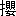

もはや日暮れであった。
濶葉樹のすき間にちらついていた空は
藍青に変り、重なった葉裏にも黒いかげが漂っていた。進んで行く渓谷にはいち早く宵闇がおとずれている。足もとの水は
蹴立てられて白く泡立った。が、たちまち暗い流れとなって背後に遠ざかった。深い山気の静寂がひえびえと身肌に迫った。
ずいぶんと歩いたのである。道もない
険岨な山を
掻きわけて登り、水の音を聞いてこの谷に降りて来た。
藪と木の根を伝い、岩をとび越えまた水の中を押し渡り、
砂礫を踏みつけた。午食を使って間もなく、踏みぬいた
草鞋を
履きかえた。次第に
狭ばまり細くなる流れを逆にさかのぼっていた。この尾根を越えてしまえば目ざしている土地に出ることが出来るであろう。出来るはずだ――と云うのであった。まだか、まだ来ぬのか――と彼らの心はどこか隅の方で叫んでいた。口には出さなかったが、
脛から腰にかけての、この
硬ばる疲労はどうすることも出来ないのである。
たのみにするのは四五間先を歩いている案内人であった。
早急に思い立った踏査に、取りあえず、大急ぎで雇い入れた附近の土民であった。
――それほど
狼狽していたのだ。辛うじて許可を得たその土地では開墾の見込みが立たなかった。前の年の経験が痛々しいのだ。携えて来た種子は何ひとつ実らなかった。風土の変化ばかりではない。
赭い土はざらざら手から
洩れ、冷たい風が終日海から吹きあげ、針葉樹も満足に育たないような荒れ地であったから。彼らの顔に浮ぶ不安と動揺は見のがせない。ようやく納得してやって来た最初の年のことなのだ。祖先の地を追い立てられて、こういう方策を取らなければならなかった彼らは、ともどもに
哀しい境涯であった。それ故に、一切の将来を政府の誠意に任せて信じていたのだが、これは余りに
惨酷な
酬いであった。
これでは仕方がない。
しかし、こうしてくれと云う要求も出せない破目になっていた。それもまた、みんな承知している。云わば敗れたものにあたえられた窮命である。にも
拘らず、だからどうにかしなければならぬと云う悶えも胸を去らなかった。はじめて知る長い
冱寒の雪に埋れてそれを考え、それを相談した。いまだに
贖われないほどの罪科を犯した自分らであったろうか。――内心の不平は、思いあまった人々の眼を血走らせるのであった。
それを
宥めて、もとの家中の重役にいた阿賀妻は、とにかく、春の来るのを待っていた。日本海の水が緑を帯びて、
日毎に南の風があたたかくなって来た。うっ積していた人々の気持にも季節のめぐみは一脈のやわらぎを伝えるのであった。政府の方針が開拓に向けられてるのであるならば、まだ
殆んど手をつけていない
濶いこの
蝦夷地に、彼らの
棲む
恰好の土地が無いはずはなかった。蝦夷地を
措いて、生きる余地はすべて
塞がれた、と、そう、思いつめた彼らだ。
新たな土地を探さなければならない場合であった。
あたかも開拓使長官の一行が巡視して来た。ありのまま見て
貰えばよかったのだ。どんな
素人にも判然としているわるい土地であった。
眉をひそめた彼らは、速やかに肥沃な土地を選定して、至急貸付けを願い出ろと
諭した。
――ありがたき仕合せ、と、それを受けた。
愁眉をひらいたのである。思わず頭を
低げてしまった。
その様子をじろじろと眺めていたのが玉目三郎であった。
馬に乗って遠ざかる彼ら支配者を海岸路に消えるまで見送った。そして、阿賀妻らがほっと顔をあげたとき、彼の目に映ったのは、ひとり
傲然と唇をゆがめているその男であった。彼の肩先がどういう考えを現わしているか、聞いてみるまでもなかった。この集団移住を率先してひきいている彼らの主君がそこにいなければ、口を極めて
罵ったかも知れない。――云うまでもなかった。
憐愍をあたえるような態度で土地選定を
慫慂した馬上の男は、ともに天をいただかずとした
薩派系の人物であったことだ。しかしそれも、時と所が変っていた。前途をきり
拓こうと腐心している阿賀妻らの態度と、それを不甲斐なく見るもののあるのも是非ないことであろう。
はげしい時代の動きは、家中の地位によって
概ね二派の意見を
醸すのであった。陰に陽にあらそいながら、行くべきところに行き着きかけていた。そういうところへひょっこり現われた一つの
躓きが、沈んでいた反目をまたしても
掻き立てるのである。玉目三郎の不満げな態度がそれを代表していた。お互いの心をすみずみまで知っているのは旧主であった。家中のものは彼の顔色を注視した。――裁断を待つのである。
古く
泥んだ仕来りによって、「殿――」と仰がれていたその人の胸のうちほど複雑なものはあるまい。
痩せた土地を投げつけるように与えられ、じっと我慢していた彼らの気持の大根には、こういう旧主の心遣いが貫ぬいていたのである。
沮喪した家中のものと共に、生きもしよう死にもしようと、両肌を脱いだ彼の決意を
蔑しろにすることは出来なかった。
彼もまた、「ありがたい仕合せ」と
挨拶をした。
屈服であったが、それもまた
止むを得なかった。
それでは――と、移住計画の主事に任ぜられていた阿賀妻の胸にひらめいたのは、トウベツという土地であった。既に松浦武四郎踏査による地図によって先頃からひそかに調べておいたものであった。
広袤百里、樹木
鬱蒼たりと聞き伝えた平原であった。そこを灌漑する川は沼から来る川の意味によって、トウベツ河と名づけられていた。間もなく合するのは大いなるイシカリ川。流れ下った河口の海港に達するまで、この間はおよそ六里半か。河舟による交通や運送も不可能ではあるまい。
せまい開墾小屋の外まで居ならんだこの家中は総勢四十六人である。
髷を切ったものも相当あったが、
脇差だけは離し兼ねていた。こういう悲惨な姿で、こういう目的のために寄り集まろうなどと五年前の彼らは夢に見たこともなかった。小屋小屋の軒や戸口では、女子供らがしのび泣くのだ。
それは明治四年の旧五月四日であった。
梅雨の来ぬ間にという心づかいもあった。
阿賀妻に一切をゆだね、先ず踏査を試みることになった。指名を命じられた彼は、応急の処方も心得ている戸田老人、先ごろも行を共にした大野順平、それから玉目三郎どのにお願い申すと云った。案内人一人荷物を運ぶ人夫二人。
五月五日の早朝、方向を南東にとって出発した。絵図面の上での目測はざっと十里。山越えをして行ったとしても二日の行程で足りよう。
歩けど歩けど一向にそれらしい平地は見あたらなかった。その日は一日歩きつめた。次の日も一日いっぱい歩いた。そうして三日目になっていたのである。
ほの暗くなった
谷峡は、またたく間に闇に埋められた。砂の上に立った阿賀妻は、前に行く案内人を呼び止めた。
「おい、ちょっと待て」
次第にこの案内人に信用が出来なくなったのだ。第二に彼が頼みにしていたのは磁石であった。図面はこの案内人も云う通り、奥にはいれば想像で描かれている不完全なものであった。あとは自分の直感に頼るだけである。
「どういうことになっているんだ？」とつづけて云った。
「それを、あッしも今考えているところだ」
「なに？」
後のものは、そこの渓流をこちら岸に横切っていた。彼らの
脛で掻きまわされた水がじゃぶじゃぶと音立てて案内人の言葉を消してしまった。
「待て！」と阿賀妻は珍しく険しい声で云った。
相手はそれを予期していた風であった。いくらか猫背になった道案内は、五六間離れたむこうの岩に立って首をすくめていた。倒れ込んだ巨木の幹が間を隔てていた。うす闇の中に身をちぢめた彼は小さくなって次の言葉を待った。
「戻って来い」
思った通り、今度は取りひしぐような強い声であった。ごつんと
膝頭をぶっつけた彼は、あたりに
木魂した声を遠く聞いて、ふるえ声で答えた。
「戻るには戻りますが」
「どうなさいました」と、中年の大野が笠の緒をゆるめながら
訊ねた。
「方角がちがうようだが」
「そうですか」
「ちがいましたかな」と、戸田老人はふところを探った。図面を取りだしたのである。
「どこを案内しよったのでござりましょう、あいつめは」
そう云って、きっと眼をあげたのは玉目三郎であった。二言目には脇差に手がかかった。
「斬るぞ」
「まあ、まあ」
岩の上に立ちすくんでいた
頬かむりの男は、枯れ枝の先をつかんでおそるおそる向き直った。疲れた人夫らは湿った砂にべったりと腰をおろして
背負繩をずらした。
煙管を
咥え、かちりと打った石の火がぼッと赤らんだ。
四人のものは額を集めていた。阿賀妻の
掌にある磁石の虫に見入るのだ。汗ばんだ
硝子の底でぴくぴく動いている磁針に目をおしつけて行った。
おもむろに老眼鏡を取り出して戸田老人が云った。
「なるほど、これでは逆の方角になるようじゃな」
「道にまよわしよったな、貴様は――」
そばに来ていた案内人は玉目の声に一足とび
退った。
「それでもう、さい前からいろいろくふうして歩きましたが」
「くふうとは何じゃ？」と阿賀妻が云った。
「へえ、つまり、その」
「貴様――いつ、その地に参った」
「一昨――その前の年でしたかな、あれは何でも、兵部省とかの仕事で」
「季節はいつじゃ、夏か冬か？」
「それが冬で――」
「冬ウ？――」と阿賀妻はうなった、「しからば雪のあるときじゃな」
「つまりそう云うわけで」
「この方面に相違ないか」
「――と、そう思ってご案内いたしましたが、こう山の中にはいり込んで、こう草木がしげっていたんでは、皆目見当もつきませんで」
「ばかッ！」
「へえ」
「しかし、われらにも落度はあるというもの――」と、阿賀妻は仲間のものに向きなおった、「ここらで夜を過して、明日はまた明日の日を待たずばなりますまい」
「どう致しましょう」
崖の下にその男を追いつめていた玉目三郎は、阿賀妻をふりかえってそう云った。星明りに彼の瞳が白く光った。指示を受けるように、彼がどうしましょうとたずねることは、この
曖昧な男の成敗を意味していた。一図に
［＃「一図に」はママ］彼は思うのだ――大切な彼らの一両日を踏みにじってしまった、と。それはまた彼の若い心に消えていない硬論のなごりでもあった。思いは他の三人の胸にも通じていた。それを
喰いとめて、た易くは爆発させ得ない年齢の垣が出来ていたに過ぎない。むしろ、同じ思いを胸にひそめて、ふきあげる激しい意志をこのような未開の地に
捻じ向けたのである。主家の安泰ということが第一であった。
その理屈が
判らぬ玉目三郎でもなかった。主家の安全のなかには、おのれ自身の安全も含まれていたからである。おのれの主君とは一つの囲いの中に
棲んでいた。殊にそれが、先祖の
位牌を譲り受けた戸主にとっては
退引ならぬきずなであった。
「
放っときなされ」と戸田老人が低く云った。大野順平も笑って云った。
「むしろ刀の
錆でござろう、われらの斬らなければならぬものはこんなものではありませなんだ」
「人夫ども！」と阿賀妻は、そういういざこざから話を避けて、煙草をふかしている男たちに云った、「何分とも空腹を覚える、先ず火を
焚かずばなるまい、飯を
炊いて貰いたい、明日のために身体を養わずばなりますまい」
「この場所で？」
「結構結構――」と阿賀妻はあたりを見まわした。
選り好みはなかった。野宿の心を決めていた。
夜明けのうすあかりはいつまでもよどんでいた。立てこめた深い霧が、時間とともに渓谷を満すのであった。ぞっとするほど肩の冷たさを感じて玉目三郎は眼をさました。乳色の
靄に隔てられて、赤い
焚火のあり場所がひどく遠いもののように見えた。すぐに起きだした。その周囲にいる仲間の姿もぼやけていた。せせらぐ水音の中で、話している彼らの低い声もよく聞き取れなかった。
それがあたりを埋めた霧のためであると気づいたとき、彼はすっくと立ちあがった。不覚を取った恥かしさを覚えた。ごめん――と口の中で云って彼は流れのそばに
蹲んだ。その小さな川の水を
掬って口を
漱ぎ、顔を洗った。深山の水は切れるような冷たさであった。洗われた肌には
爽昧の
巒気が浸みとおった。
「お目ざめか」
戸田老人が靄の中でふりかえってそう云った。彼の一言は何かの合図のようであった。それまで焚火を囲んでいた人夫たちが急にごそごそと動きだした。今は人夫に
顛落した昨日の案内人は、彼の傍を通るとき、うやうやしく頭を
低げていた。
彼らは彼の眼覚めることを待っていたのだ。
人夫の一人は朝の食事をひろげだした。他のものは荷ごしらえにかかった。木の枝に張り渡した
菰をはずし、刈り草の上に敷いた
筵を巻きはじめた。
朝の挨拶を受けた阿賀妻は、目もとに笑みをたたえて彼のために席をあけた。
「そなたは苦労もなげによう
睡っておられた、夢など見てはいなさらなんだか？」
「汗顔の至りで」
「猛獣にも襲われず、まことにゆったりとして一夜を過しました、久しぶりの熟睡でした。さて本日の行程じゃが、この霧では」
彼はきり立った岸べの木々を見あげた。それさえ半分は隠れていた。
「山越えは更に迷うばかりでござろう、今もその相談を致しておりましたが、そこで、こういう風に――」
夜っぴて燃しつづけていた焚火の上に、彼は更に一握りの枯れ枝を投げ入れた。火の粉が舞いあがった。
膝をたてていた仲間の顔がぎらりと輝いた。
「大野どのも賛成なされたので――」と阿賀妻が云いつづけた。彼らはこんな困難な旅の経験者なのだ。だからそれは命令であった。けれどもまた相談でもあった。昔のように強制することは出来ないのである。各々のものは同じ立場で同等の権利で談合を進め、納得しなければならない。
「こういうことでござる――」と、阿賀妻は湿っぽい地図をひろげて、指さしながら説明した、「
倖い貴殿はあのものを生かして置いてくれたので、ひとたびこちらの原野――オヤフロの野と書きこまれているこの地点に立ち戻り、目ざすトウベツの山を見定め、しかる上はすべてわれ
等の才覚にて行き着き得べしと考えるが、いかがでござろう？ 予定の三日はむなしく過した、よって本日は最大の努力をいたしたい、ざっとこの間、七八里と見積ればよかろうか、――あやつ、捨て置き難きものなれど、残念ながらわれら一同、一向に土地不案内、トウベツはよき土地なりという風説のみにて、ありようは地形もしかと存ぜぬわれら――ご承知下さるか？」
無論それに異論のあろう
筈はない。
「しからば――」
阿賀妻は人夫をさし招いた。
椀にくんだ水で食後の口を洗った戸田老人は、ごま塩の長い眉毛をつきだして大野順平に話しかけた。
「見て下さらんか？ 虫が喰いついとるようで」
「どこでござる」
「この中で――」と、老人は枯れた指で自分の眉毛を示した。
「ははあん？」
「まん中あたりと覚えるが」
「これでござるか」
「それ、それ、――おお」
椀を片づけていた人夫がのぞきこんだ。
「ダニですぜ、ご老体」
「ダニとは何じゃ」
「毛のあるところに喰いつく虫で」
「さて、血迷ったかこのダニめ、老人の血がうまかろう筈はあるまいに、――取ってくれんか」
「どれ――」と、近くの人夫は大野を押しのけて行った、「要領がありましてな、首だけ取るとまたあとが
脹れる」
「
奸賊めが」
「そら」と掛声した。人夫は爪に
挾んだ豆粒大の虫を彼らに見せて、「笹やぶに、どうも、多いらしい、これは熊か鹿に喰いつくやつでしたろう」
「極刑に処して下され、火の中にたたきこんで下され」
その虫は
燠の上でぷちりと
動顛した。
「
薩賊のごときやつでござった」と老人は立ちあがった。
彼らは声を合せて笑った。
「よろしい、火を消して――」と阿賀妻も
草鞋をふみしめていた。
「出発いたそう」
窄った谷底にいた彼らにとって、朝は、
蓋のようにかぶさる頭上の霧からゆっくり近づいていた。流れに沿って歩く彼らの足は速かった。しばらくは、昨日無駄に歩いた岩根や草やぶを踏みつけて歩いた。揺れ動くこまかい水滴の雲に、おもてを割って進んで行った。着衣もべっとりと湿った。
菅笠のふちには、いつの間にかしずくが
溜っていた。
やがて、見覚えのあるシラッカリの渓流であった。横ぎって南に出て、ぬっと胸を突きだしたような段丘を越えねばならぬのである。露の散る草やぶを踏みわけて、
匐うように斜面をのぼった。
蔓につかまり根木に抱きついた。
趾をさか立てて足を喰いとめた。手と足と――文字通り
四肢をつかってあがって行った。段丘は雑木に
蔽われていた。丈なす笹やぶがつづいていた。
参差する草木の海を泳いで、磁石の針に導かれているのである。おいおいと消えて行く
靄の
彼方に、その土地の高低起伏が隠見した。木の間がくれに洩れる六月の陽が汗を
滲ませた。羽虫が目先をちらついた。
虻が追いかけて来た。しめった草の根から
湧きだす
糠のような
ぶよが、
脚絆のあいめ、
手甲の結びめなどのやわらかい皮膚に忍びこんで来た。汗と
垢と
脂と、ふんぷんとした体臭をまき散らした。それを慕って、
埃のように襲いかかる虫であった。
空は晴れたが風はなかった。樹木の底は蒸されていた。照りつけだした太陽は、
慌しく押しよせる真夏の暑気に近くなった。草の海はむんむんと熱して来た。押しわけて進む彼らは、地を
這う虫のようにも見える。
郭公鳥がしきりに
啼いていた。
誰一人、一語も発しないで歩いた。ひとりでに先導者の立場になっていた阿賀妻が、終始先頭をきって進んでいた。菅笠のかげにある深い
眼窩には冷酷なほどひかる瞳がすわっていた。するどい鼻唇線を横にさえぎって固く結ばれた口。手甲、脚絆の装束に尻からげをしていた。
脇差をぶちこんだ中背の
体躯は、けだものの足跡もない荒野の草木を、胸で押し割っていた。鍛練した目的はちがっていたが、こういう困苦に向って、彼の引き
緊った
肢体はいよいよ
撥んでいるようであった。
享けついだ血と、思い定めた
一旦の意志が
烱光を放つのだ。引きずるように一行を導いていた。
――めぐり合せた困難に対して、彼の心は沈潜した火を燃すのであろう。家中に於ける責任ある位置が、響きを立てて
廻る目まぐるしい時世のうちに凝固した。いかなる場合にも善処すること――と、そういったのは、早世した父の
訓えであった。その一念を体して彼は主君の側近に
侍った。それからの日々は、安政、万延、文久、元治、と、聞くだけでも多事である。――そして慶応の四年であった。たちまち改元されて明治の元年となった。正月、
戊辰の戦いの意味もまだ分明しないうち、早くも同じく三月には奥羽
鎮撫の征討軍が起された。順逆の態度を考えるひまもないほど、ことは矢つぎばやに起った。
奥羽の二十五藩は去就にまよっていたのである。彼らの小さな支藩といえどもその例に洩れなかった。
しかし大勢の方向は決っていた。直接の目標とされた会津さえも
鞠躬如として降伏を願っていたではないか。それを阻んだ征討軍参謀の
世良修蔵は遊興の
巷で殺された。そのものの持っていた「奥羽皆敵」の密書が
発かれたのが四月十九日であった。五月三日には、それならば――と、
臍を固めて成り立った奥羽
聯盟。申し合せによって討伐隊の入城を拒んだのが彼らの宗藩である仙台。約定を破って、唯々としてそれを招き入れたのが南部藩の盛岡。
十月には、最後の決死の会津もついに落城した。
つづいて下った厳しい処罰――宗家の削封は、彼らの支藩にいたって
凄愴を極めた。降って湧いたような
顛落である。一万五千石は文字通り一朝の夢であった。目ざめて見れば六十五石の
俸禄になっていた。士籍を
剥がれた家臣七百六十余名は、数千の家族とともに一挙に土民となされ、路傍に投げだされた。
茫然自失している彼等の前に、疾風
迅雷のように乗り込んで来たのは皮肉にも南部の藩士である。没収を宣言された彼らの土地や家屋には
主は無い筈であった。そして転封された南部藩士の所有に帰していた。しかし、昨日までのあるじはいたのだ。それらのわが家に、今日は見も知らぬ他国のものを迎え入れ退身しなければならぬという。家族をかかえた彼らは、身を避ける場所を見つけるひまもなかった――
闖入者たちの情にすがって、わがものであったが、わがものでなくなった
馴染みの物置に、一夜の雨露をしのぐ境遇に
墜ちた。身の振り方を考える
遑もないうちに身の置き場をうしなっていた。悲憤や
怨嗟をととのえる余地も置かせない処分であった。そこで思いはこの蝦夷地に走ったのだ。云わば新たに、死ぬべき場所を捜さねばならぬ場合に立ちいたっていた。――「
頓首再拝つつしんで
歎願奉り候」と書いたのだ。――
「区々の微功も相立てて少しくその罪もあひ償ひたく日夜焦慮苦心まかりあり候へども庸劣にして」ともへりくだった。――「死力をつくして開拓つかまつるべく……御用途多端のことにござ候へば、何分にも自費をもつて開拓
仕り、千辛万苦、死力をつくし……前罪の万分の一にても相償ひ申したく」――とまで衷心を
披瀝した。それらの文言は虚空にうかび目の先にちらついている。
手や頸にすり
疵をこしらえ、草いきれの中を汗みずくになって阿賀妻は歩いている。新政府の基礎は日毎に固まり、北海道と改めて呼ばれる蝦夷地にも開拓の歩は進められていた。それ故彼にとって、屈辱なく死を
托するに足る土地を定めることは、一刻もあらそう心せわしさでもあった。
視界がふいにあかるくなって、腕をのばして
掻きわけた草の彼方に、ひろい原野がひらけていた。段丘のはてまで歩きつめてしまったのであろう。吹き上げて来る野の風を胸に入れて彼は深い呼吸をはいた。
「おお、海が見える」
右手の方、地平のはてに浮きあがった青い一線は日本の海――日本海であった。
「海が見えるぞ、おぬしら――」と彼はふりかえった。
戸田老人の足はおくれていた。踏みわけた草の中をばさばさと近づいて来る彼のうしろで、玉目三郎はとびあがって叫んだ。
「見えますか、ご家老――トウベツが？」
阿賀妻はそっと顔をそむけた。目的は反対の東の方にある。
「なるほど、これがオヤフロの野か」と大野順平はかすかにほほ笑んでいた。
昨日の案内人が、そうだ――と
頷いた。
「
折柄時分どきでござろう――」と、戸田老人は陽を仰いだ、「このあたりで昼食をしたため、あとは
即ち一気
呵成とまいろうか」
笠をはずして、
禿げあがった額の汗をふいていた。
草を敷いて彼らの一行は腰をおろした。四五匹の
虻が頭上を舞っていた。
「しからば先導
仕ろう」と大野順平は、
逞しい
体躯を揺ぶって立ちあがった。
オヤフロの野にはいっての数時間は、ヤチダモ、アカダモの密林つづき、次第にカシワ、ナラなどの節くれ立った木が目につき、白い肌の樹が点在する粗林となった。やがてギシギシ、ヨモギなどの野を越えて、ススキ、ヨシの湿地にはいった。まだか、まだか――と、そうせき立てられた案内人が見つけたのは、風に吹き折れて枯れたヤチダモの立木であった。荷を投げだして
攀じのぼり、彼は木の股に足をかけてしばらく東の方を
睨んでいた。
「見えるか――」と下から催促した。
「見える」と、ようやく彼は答えた。
「どの方角？」
「この――」と彼は腕をのばした。
指さす方角に添って阿賀妻は磁石をのぞきこんだ。戸田老人は地図をひろげるのである。玉目三郎は、青く書きこまれた川を
辿ってその方向をのぞいていた。
「この山――トウベツ山のふもと」
「ふん、どれ、念のため――」と大野順平もヤチダモの樹にのぼって行った。
あぶなかしく足をささえて、彼は樹上の人夫に重なって、そのものの指さす方を眼をしかめて見入った。
なだらかに波うっている一帯の山つづきであった。
湧きだした雨雲の下に、あお黒く静かに拝み合っているひとつの峰がそれであった。
「あれに間違いはないか」と彼は片手を
脇差にかけて見せた。
「山の
恰好がそう変っちゃたまらない」
「しかし、貴様の見たのは冬だというではないか」
「夏だってあなた――遠くからみれば同じことです、第一、あそこには、あれより高いのは
無えんだから」
「では許してつかわす」
「冗談でしょう――」と彼らはおりて来た。
高いところで見渡すと、それは指呼の間にあった。けれども、野の中に身を没してしまうと、はてしもなく遠方に離れているのだ。見えるものは、草また草のひと色である。
風が吹き荒れて来た。野に低く雲がおりて
目路を
蔽った。青い草の海は逆巻くのだ。行く手にふさがる樹林や丘陵は測りがたい悪路を示していた。
「日も傾きはじめた」と云うのは戸田老人であった。真実行く手の困難を案じた年長者が、それとなくあたえる注意であった。
「人夫どもに聞けば、用意の糧食も残り少ないとか」
「それというのも、貴様がよい加減なことを申し、安うけあいをしたためだ」
玉目三郎はそう云った。すると案内人も、ここまで来ればなかなか負けてはいなかった。
「ま、誰にでも、間違いということはありまさア――山は見えたじゃござんせんか」
「そう――山は見えたり、だ」と大野順平は笑った。
阿賀妻は磁石と照して野のはてを見入っていた。
「あの木――あの盛りあがった樹木のなかに一本黒く見える松の木、お
判りか？」
その方向に
一先ず目標を置いて、この野を横切れと命じていた。
浮き沈みして、草の海を泳ぎ抜こうとする一行であった。
見ず知らずの山野を踏みわけて、夢にも描かぬ土地を探している彼ら自身は、ふっとその姿を、どこか遠いところから見おろしていた。行けども行けども湿っぽい土であった。この地つづきに、云うが
如く、考えたような肥沃なところへめぐりあえるであろうというはかないのぞみも、つきつめて行けば、消えてとびそうな願いでしかない。これは
落人の姿であった。しかもたたかわない落人であった。危ぶむ思いがきざしたとき、失った死に場所に対する深い悔恨がよみがえる。雲井竜雄が呼びかけた『討薩の
檄』はその一例でしかない。まだ
起てた。何度でも起つべきであった。そして斬り死にすべきものであった。機会は次々と
齎らされていたのに――会津救援には何を
措いても
駈けつけるべきであったのに――
拱手傍観を強いられた彼らは、むざむざと数百の生命を
屠らしたではないか。意地はつぶれてしまったのだ。土民のように追い立てられた。
首鼠両端を持した藩の重役どもが、今荒野の中に連れ込んでのたれ死に導いている！
えり首がひやりとした。雨の
滴くがおちかかったのだ。はっと我にかえった玉目三郎は、思わず大声に呼びかけた。
「阿賀妻どの」
「何でござる」と、彼はふりむきもしないで答えた。
目的に向って余念もないふうであった。すると玉目は、云いたいことも云いそびれた。
「予想のとおり、降ってまいりましたぞ」と戸田老人が云った。
「大したこともなかろうと思うが」
「なかなか」と老人はあたりを見まわした。
ひろい空はすきまもなく、
鼠色にかわっていた。厚い雲がのびたと見るまに雨は野面をたたきつけて来た。
「夕立ちでござろう」と事も無げに云う阿賀妻であった。
「溶けて流れる気遣いはあるまい」
体力に自信のある大野順平はそう云って、もう五六歩先に進んでいた。笠にしぶく雨が野を暗くした。草原は一時にざわめいてうねり廻り、まきあがった風が横なぐりにふきつけた。
雲は走った。名も知らぬ小鳥がとび立った。
はじめ
驟雨のように断続して降りだした空は、おもい雲を重ね、野面をうす暗くおさえつけていた。雨にうたれた草葉々々はしずくを散らして人々の着物を濡れびしょにしてしまった。水に洗われ、風に吹きはらわれた原野の気温は、ぞくぞくするほど下っていた。
簑を出して手早く着たけれども、鳥肌だつ冷気は一層強まるばかりであった。間もなく四辺は、
篠つくような雨に煙っていた。
大野順平も立ちどまった。
直ぐうしろに続いていた阿賀妻は、彼の太い首根に自分の笠をぶっつけ、驚いて、しかし
咎めるように云った。
「どうなされた？」
「目標が見えませぬ」
「ばかなこと――まっ直ぐ行けばよろしい」
果して前向きのそのまま進むことがまっ直ぐであるかどうかを
躊躇していたのだ。一切はしぶきの中に沈んでいた。雨を受けてはげしくざわめく草葉の音に耳も遠くなっていた。夕ぐれがかって、
模糊とした灰色の幕に包まれはじめた。
「
拙者が替ろう――」
そう云った阿賀妻はながく立ちどまることを拒むのであった。
「それには及びませぬ」
踏み抜いた
草鞋を
蹴とばして、大野順平は
前屈みになって急ぎだした。なるほど、ひとつの定めた目標は好ましいが、今はそれだけに執着しなくても
宜いのだ。前方一帯に見えた丘陵にたどり着けば、そこから先の山つづきに、道はおのずから開けるに違いない。磁石と地図とを持って、あとは勘の強さにたよるほかない。そういう風にして何度となく山野を
跋渉した阿賀妻であった。それを
援け、つき従っていた大野順平であった。
数時間のあいだ、上からは
殴るように降りつけられ、下は湿地と
水溜りをこいで歩くのであった。全身あますところなく濡れていた。樹液のにおう木立ちのなかにはいったときには、血の気をうしなった唇の奥で歯ぐきが打ち合っていた。
とりあえずもう
煖を取らなければならない。
木立の下はもう夜であった。
次第によってはここにまた一夜を明かさなければならない。
別に相談するともなく、最も暗い木かげを探して進んで行った。雨風のあたりを少しでも避けたいためであった。里程にすれば何程でもないに
拘らず、予測と実際のちがいは彼らの気持を重くしていた。わけても疲労の
甚だしい戸田老人は日ごろの
諧謔も出ずげっそりしていた。彼の穏かだった半生にくらべて、この二三年はあまりに激しい変りようであった。彼もまた空しく老いた身をぶつぶつとかこつのである。
しげり合った樹木の下まで来て、太い点滴の音をたしかめて立ちどまった。ここは一体どこのどの辺にあたるか。だが、ここからどんなに歩いたとしても、在るものは、山と谷と密林であろう。人家を求めることは出来ないのだ。自分らが人家を置こうとしては入って来た最初のものなのだ。
「火を
焚け」と阿賀妻は命じた。
黙々として
従いて来た人夫は、立木の根もとにばさりと背の荷をおろした。
「水を見付けて来よう、玉目どの」と彼はふいに誘った、「立っているのはよくない、貴殿らも
薪など探して置いて下され、火が燃えだせば明るみが見えるであろう、それを目当てに立ちもどればよい」
先に立って木立ちを縫い、低みへ低みへといそぐ阿賀妻であった。玉目三郎もおくれてはいなかった。ここまで来ては後にかえすも前に進むも、自分ひとりの考えでは仕末が出来なかった。そう思った
刹那彼の心は阿賀妻の意志の下に
繋がれていた。
「流れる水がある
筈だ、玉目どの――」と、阿賀妻はときどき立ちどまった。耳を澄して聞きわけようとした。雨の音だけであった。樹林はそうそうとざわめいて、遠い潮騒を聞くようであった。
また立ちどまって阿賀妻は云った。
「聞えて来ましたな？」
玉目三郎は耳をそばだてて暗やみを眺めた。
「まさにこの下に当る！」
重ねてそう云った阿賀妻は熊笹のしげみにさっと身を躍らした。あッと云うまもなかった。がさッと鳴った葉ずれの底に彼の
身体は消えていた。
笹は弾力のある茎をはねあげ、ひろい葉の表に雨はばさばさと砕けていた。しぶきをあげる水滴が夜目にも白かった。
「在った、あった！」
やがて底の方でそう叫ぶうれしげな声が聞えた。太い余韻がひろがって行った。
谷におりたならば水があるのは当然であろう――玉目三郎には、それほど歓喜する阿賀妻の気持が測りかねた。自分も行くべきであるか否か、まだ思いまよっているとき、折りかえすように阿賀妻の声が遠くから命じていた。
「行って呼んで来て下され、あの、そら、案内の男を――おお、ついでに鍋なぞ、米なぞを持たせて――」
うしろの木立ちにぼーっと明らんだところが見えて、火も燃えて来た。ぬるぬるとすべる足もとを踏みしめて彼は焚火のそばに戻って行った。一度燃えついた
火焔のいきおいは、積みあげた木の間に
這いまわっていた。湿りけをぱちぱちとはじきだすのだ。
焙りだされてまっ赤になった戸田老人は、あきらかに生気を取り戻した。ま向うから、わめくように話しかけた。
「阿賀妻どのはどうなされた？」
「おい」
玉目三郎は幾らか
不機嫌に、背を向けている人夫を呼んだ。
案内人は首をすくめて、ゆっくりとうしろをふり仰いだ。
「呼んでおられる、水があると」
「えッ？」と云った。彼はつっ立って叫んだ。
「やっぱりそうだ、トウベツ川の枝沢にかかっとる、どちらですね？」
玉目三郎はとび立つように元気になったその男をじろじろと
睨んでいた。
「こちらですか」
「うん」
そのまま駈けだそうとする男を、彼は「おい――」と呼びとめた。
「なんですか？」
「飯を煮る用意をして行け」
ほかの人夫も立ちあがった。
「ついて行け」と、玉目三郎はそのものたちにどなった。
谷間に向って「おおい」と呼びかける案内人の声が木立ちの低みにひびいて来た。
「玉目さん、着物を乾したがよろしかろう――」と、薪を投げ込みながら戸田老人が云った。照り出された頭上の青い木の葉が、吹き上げる
焔にちらついていた。そこから大粒の雨滴がばざッばざッとおちていた。
いつの頃か吹き倒れたであろう枯れたトド松を、大野順平はひきずって来た。むらがっている枝葉をぽきりぽきりと折って火にくべた。
簑の先から滴がきらきらとび散った。
「空腹はいかがでござるか？」
「されば――」と大野は、話しかけた老人の方を見ないで言った、「追々と目的地も近づきましたな、踏み分け
路のようなものがこの裏にありましたよ、阿賀妻どのは？」
眼をあげて玉目三郎を見た。
「間もなく見えられましょう」
短かくそう答えて、彼は焔に背を向けた。濡れた背中を温めだしたのである。
しばらく彼らはお互いの思いにおちていた。
「殿も気遣われておられるだろう、今頃は――」
ぽつりと戸田老人が云った。それは疲労を感じたこの場合の彼らに、思いを同じ流れにまとめたのである。海鳴りの聞える
草葺き小屋のなかで、身を寄せあうようにした彼らの家族たちは、ひたすらにのぞみをかけて待っている――その姿もありありと見えるようであった。
「玉目どの、そなたのご婚礼は、一昨々年でござったかのう――左様、あのとき、白河口のたたかいに、そなたの父御は斬り死なされ、生き残ったそれがしは、――」
「ご老人――」と大野順平がさえぎった、「それはもう昔のこと、云わぬが花でござろうよ」
「生き恥じをさらしおります」と、戸田老人は鼻をおさえた。
しかし、
めどはついたのであった。南西に向って流れる渓流は彼らの目ざすトウベツの地へ、沼から来る川となって灌漑しているものに合していた。いるべきであった。とにもかくにも、地図に示された一筆の青いうねりはそれに該当していた。この地附近を一度踏んだことのある案内人もそう裏書きするのだ。更に一押し進めば、見るからに肥沃なというトウベツの原野に出ることが出来るであろう。
按ずるに――と彼らの行路を説明する阿賀妻であった、――北西の海から吹きあげる冷気を間断なく防いでいる
屏風のごとき山つづきになやまされたのだ。踏みまよい
拒けられて、オヤフロの野と交わる尾根のふもとを歩かせられた。ここは、二つの地形の
岐れ目にあたる。すでにご承知でもあろうが、見らるる通り、これから一気に
駈けおりようとするわれらの原野は、三方に山を背負い、南にひらけて際涯ないイシカリの野につづいている。そこでわれらの使命は八分目まで達したというも過言ではない。
「――が」と彼は言葉をきって、燃える
焔の白い煙に変るあたりに眼をやった。
樹と樹のあいだに
菰を張った即席の屋根から、
溜った雨水がごぼりと落ちた。灰かぐらを立て、ひと
塊りの
おきを黒くした。
焚火のあかりを取って、彼の
膝に斜めにひらかれていた地図の上から、彼らは思い思いに顔をあげた。
雨はまだ降りつづいていた。
人夫は枯木を投げ入れた。焔に照らされて、木株に腰をおろした彼らの顔は異様に赤らんでいた。今し方かきこんだ炊きたての飯が、身内を充血させたのかも知れない。悶えるように燃えつづける火を見て、阿賀妻の言葉を待った。
「あとの二分じゃが――」
首で、眼で、顔色で――それぞれに
頷くのだ。
「これがまた、なかなか侮りがたい、いや、お聞き下さい、云わば踏査はこれからはじまることになる、
随って、今までの道は、踏査のうちでは、まさにその序論と見るが至当でござろう、この意味で、ご推察下さるか、さ、そこで」
彼は一ひざ乗り出すようにした。
「われら
迂濶にも、両三日の糧食以外を携帯致しておりません、折あしくもこの悪路、明日
倖い所期の地に着したとしても、一両日の滞在は覚悟いたさずばなるまい」
「なるほど」と戸田老人がうなった。
「食糧不足のため、一たんこの地より立ち戻るべきか、
乃至は」
「むろん行き着くべきでござろうよ」と、また戸田老人が云った。
「大野どのはどう思いなさる？」
「されば」と彼は相変らず火を見ていた。
「玉目どのは？」
「同感ではございますが――」と、彼は瞳をあげた。きらりと焔がうつっていた。
あとは改めて云う必要もなかった。ここまで来た阿賀妻の心がどう定っているかも
判っていた。糧食を補足して、その土地を検分しなければならぬのである。今か今かと帰りを待ちわびているものたちに、期待をもたした二日三日の遅延は大したことではない。素手で帰ることがしのびがたいのであった。その動揺落胆はむしろ恐ろしいのである。獲物は眼と鼻との間に見えている。当然、中途はんぱに引きあげられない立場である。問題は、ここ二三日の食糧を何とかして手に入れることだけである。
しかもまた、それにはたった一つの方法しか無かった。誰かがそれを取りに戻って来なければならないのであった。人の嗅いも感じられない荒野の中に、手軽く求められないことも
解りきっていた。木の芽草の実のある季節でもないのだ。
「おたずね申すが――」と、ふいに大野順平が云った、「トウベツとやらは、まことに人跡未踏でござろうか」
「だんだん
検べたところによれば、そう考えたが間違いないと思うが――何か？」
「この裏にどうやら踏みわけ
路のようなものが見受けられたが」
「それは？――」と、眉のあいだに
立皺をよせて、阿賀妻は猫背の案内人を見やった。
彼はふくみ笑いを浮べて云った。
「鹿の路ででもございましょうよ」
「鹿が通るか？」と大野が向きなおった。
「それは奴めの勝手ですがな、通るには通りますな」
「ふん――」と彼は唇を
舐めて暗い闇をふりかえった。
食われるように出て来るわけでもなかった。
雨は絶えまなしに降っていた。焚火のなかでは、トド松の節がぱちぱちとはじけていた。
玉目三郎は、これ以上その沈黙に堪えられなかった。むろん戸田老人の出るべき場合ではなかった。ひしひしと、一番年若な自分が、それを云わなければならぬ場合と思ったのである。
「阿賀妻どの」と彼は云った。誰も身じろぎも見せなかった。
「拙者にそのお役目をおまかせ下さい」
一気にそう云った。けれども同じ静寂であった。何か――その声だけが空にふわふわ漂ったようであった。あたりの闇に白々しく描かれて宙に浮かんでいる。取りつくしまもないのだ。
やっと阿賀妻の口が動いた。
「路すじはそのものが存じておる」
そのもの――と指された案内人は、衝かれたように腰をひょろつかせた。それほど声はきびしく
圧えつけるものがあった。われ知らず頭がさがって、心より先に身体が平たく
畏ったように見えた。
いずれにしても、それらは翌日の予定であった。
焚火の焔は伸びたりちぢんだりした。
そして、夜明けの冷気は、山に寝ている彼らの骨身にまたしてもこたえるのである。
馴染まない土地の息吹きは荒々しかった。彼らの皮膚は脅えている。小粒になったが雨はまだ降りつづき、木の葉や草の葉はしょうしょうと鳴りつづける。
身近かで一発の銃声がとどろいた。
「どうなされた？」
焚火は大部分は白い灰になって周囲にひろがっていた。そのむこうに、大野順平の後姿が見えるのであった。
杖づいた銃の筒先からうっすらと煙が垂れていた。
「どうなさった？」
彼はちらりとふり向いただけであった。近づいて行く玉目三郎に、彼はあちら向きのまま太い声で云った。
「門出の血祭りと思いまして、な」
貫き
徹った先程の銃声が、山や木に当って遠ざかっていた。あちらこちらにゆるい反響が伝っていた。
大野順平の視線の先では一頭の鹿が
斃れたところであった。
「やはり、なるほど、あれは鹿の路でござったよ」
彼はそう
呟いた。昨夜見かけた踏分け路らしいものにこだわっていたのだ。自分を納得させた深い声で云った。
「やはりおぬしに行って
貰わにゃなるまい」
玉目三郎は素直にうなずいていた。川に沿って急ぐならば、中一日をおいて再び引きかえして来れようという計算も胸に収めていた。本流では、あるいは手近かなところに土人の漁場を見出だすことが出来るかも知れない。イシカリの河畔に点在するという
鮭場所の話は彼も聞いていた。どこでもよろしい、早ければ早いほどよろしい――と、そういう阿賀妻の心も
判っていた。買入れに必要な準備の金も渡され、すでに彼のふところに納められていた。
二人は、
爪先あがりになった草やぶを、樹々の間を縫って歩いて行った。落ちかかる
雫が、ざんぎり頭の毛を濡らした。射止めた鹿の生命はまだ
微かにその四肢の先に残ってぴくんぴくんと
痙攣していた。
「火を慕って来おったのかも知れませんな」
「そうかも知れぬ」
大野順平は腰をかがめて、その
後脚をつかみあげた。そのとき斃れている鹿の眼がしわりと
瞬いたのである。玉目三郎は思わず一足うしろに退った。
「どうした？」
「いや」
「気をつけて行って貰いたいものだ」
年輩の男は、舎弟を見るようなやさしさをこめてそう云った。
燃え残りの木に土をかぶせ、
簑や笠の緒をしめた彼らはまた出発するのであった。谷川の水はひどく
殖えていた。せっかく乾した足ごしらえも長くは保てなかった。岩にくだける水流に追われて彼らの一行は下って行った。
進むにつれて平原に出ていることは、岸と水面との差が追い追い小さくなって来るのでもそれと知ることが出来る。草の色もちがって来た。アヤメの花がべったりと、樹林の切れめに咲いていた。水の流れも落ちついて来た。
「よく降る」
「されば」と戸田老人が注釈をつけた、「郷里ではあたかも
梅雨の季節でござる」
枝川の流れは湿地のなかに散らばり、右手から押し出して来る、より大きな流れに
呑まれていた。雨水を集めて両岸の草の根まで幅をひろげ、はるかなとどろきを立てていた。間違いもなく、これが探しもとめた彼らのトウベツ川であった。上目づかいに見わたす上流の平原は、ひしめき
叢る樹木つづきの緑の海であった。天をかぎる巨木が青葉の
波濤をつくり――それが五月の雨にけぶっていた。
水はその
隙間にこぼれ、低みをえらんで寄り集った。年々歳々のはてもない月日が、土を
穿ち岩をかみくだいてこの川筋を掘り下げたのであろう。地底の
砂礫も
抉られている。白くむき出しになった深い木の根や、浅いところには
笹の根やイラ草の地下茎などもとびだしていた。
撫でさするようにあたりの地形を
眺めまわしていた彼らの眼は、期せずして向う岸のそういう
懸崖に吸いついた。地の底を割ってみせたのである。一
尋もあるかと思われる黒い
壌土の層が、水気をふくんだうるみ顔をこちらに向けている。
むッとする土の香が
匂ったようであった。
おお、これがわれらの土。虚脱されたような幾秒かが過ぎた。へたへたとくず折れそうになった。彼らの
身体に、そのときあつい血が
湧きあがって来た。
撥じかれたようにとび出したのは阿賀妻であった。彼は流れの中に駈けこんだ。
川は彼の
膝でしぶきをあげた。
遮るものに当って不遠慮な音をたてた。両手を左右にひろげ、のしのしと進んで行く阿賀妻はそれよりもなお
倨傲であったと云える。簑の
裾を浸し、腰まで沈んでもなお進んで行った。立ちなおり立ちなおり、胴体で水をかきわけて押しきった。
彼はその崖にとびついたのである。下半身からしずくの滝を流しながら、木の根につかまって
匐いあがりだした。砂礫がざらざらとこぼれ落ちた。石はもんどりうって川にとびこみ、
飛沫をあげた。片手を土にさしこみ、他の手に熊笹の根をつかんだ彼は、木の根にかけた
草鞋がけの脚をちぢめ、ぐいと跳ねた。ひと
揉み身体がまわって、彼は崖の上にとびあがっていた。
すっくと立ちあがって、その手を天につきあげた。見おろした彼の顔は、感極ったときのあの醜さであった。それも一瞬であった。
「玉目どの――」と、そこから呼びかけた彼の声はいつもの阿賀妻にかえっていた。
「ご足労願おうか、われらはこの川筋附近に於てお待ち申すとしよう」
くるりと
踵をかえし、玉目三郎は川下に向って歩きだした。うしろには、例の猫背の男が鼻汁をすすって
従いて来た。彼は泣いていたのだ。便宜のために傭われたものであるという自分の立場は、そのときを境にして消えてしまった。一行の悲しみや喜びは、
じかに彼の胸にせまっていた。彼らよりも一層投げやりにそれを表わすことが出来た。歩くにつれて腹の底に落ちつくこの感動は、阿賀妻らに対する
畏敬に変って彼の頭を熱くするのだ。手当り次第――誰かに向って
喋らずにはいられないような胸の
閊えでもあった。
「だんな？――もし？」
彼は追いすがるようにして呼びかけた。――あの大将は並大抵のえらぶつじゃアありませんぜ、
と、彼は云いたかった。――そうだ、その通りだ、と答えて
貰えそうな気がしていた。
玉目三郎は浅瀬をこぎ渡っていた。水の音が人夫の声をかき消したのであろう。むろん人夫も返事をたしかめるひまはないのだ。濁った川にじゃぶんととびこんだ。
汀には柳のわくら葉がうちよせられていた。蹴立てるようにして急いだ。
両岸がだんだん低くなるにつれて水量が増して来た。もりあがる川面には粘質土壌の色が濃くなっていた。川は平地にうねって渦巻きをはじめた。容易に
捌けぬと叫ぶようであった。先がつかえているために
止むなく
逡巡して、何かそのことを憤っているような川鳴りの音であった。
「もし」と人夫は呼んだ。
立ちどまっていた玉目三郎の眼が光った。なんだ？――と聞きかえしていた。
「もう行けませんぜ、ここんところは――岸にあがりましょう」
川面の方にいくらか傾いたドロ柳が、雨のあたらぬ
木肌を白っぽく見せていた。
「わしが先に立ちましょう」
人夫は軽いしょいごの肩を揺って、ヨシのしげみを
圧しわけた。
「
路はあるのか」
「川があらアね」
――これさえ見えているならば踏みまよう気遣いはいらない。通ずるところに通じているのだ。言外にそういう確信をほのめかし、人夫はばさばさとヨシの中に歩いて行った。はね返って来る強い草の茎を横踏みにして玉目三郎もつづくのであった。もとより路などあろう
筈のないことは、覚悟の上であった。心弱くそんな言葉がふッと出たのは、彼の気持の焦りなのだ。出来るならば今日のうちにでも帰って来たいと思っている。そこでは、飢えにさらされている仲間の生命が彼の心を信じている。それだけではなかった。彼らのうしろにいる家中の面々が、熱っぽい眼を光らせて自分を待っているのだ。その中には彼の若い妻もいた。口には抑えているが、心のうちの淋しさは思いやられるのである。抱かれて
慄く彼女の
肢体がそれを語っていた。戦乱に
駈けずっていた男を、じっと待っていた新妻であった。無事でようこそと、ほッとするひまもなかった。あわただしい移住の企てであった。そして――うん？ と彼は考えた。彼女は苦しげにものを
嘔げていた。早く帰れとは云わずに、瞳をうるませた女であった。こういう場合にうまれて来る新たな人間の生命はこれからどういうことになるであろう――親たちは、三日が三年にも値するような日に出あって、若い日をめちゃくちゃにした。それでも生きのびようとあせっている。
「おい！」と彼は呼びかけた。何か、つまらぬ話をしたかった。
人夫はそれどころではなかったのだ。
沼から来るという川は、その沼川の口にあたって、戸まどい流れ、水面をひろげて低い岸にあふれあがっていた。
疎らになり、やがて、
痩せた灌木となるヤナギの木も姿を消した。あとはまた
茫洋としたヨシの草野であった。地下茎の上に地下茎を伸ばし、その上におのれの葉や茎を腐らかし、またその上に根を張り、葉をしげらし、枯れ
頽れ、――積みあげ積み重ねた数えきれないほどの春夏秋冬が、踏めば沈むような低位泥炭土をつくっていた。水はその土の
隙間をとおって散らばり、随法な
［＃「随法な」はママ］ところに淀んで沼となっていた。
「どうした？」と今度は玉目三郎が声をかけた。
「はて」と、人夫はのびあがって草の上を見まわした。
川筋が見えなくなったのだ。いや、川はあたりに一ぱいあった。白く光る水面は前後左右にある。本流が見えなくなっただけであった。
「ちきしょう――さすがの大将も、この雨は予算に入れなかったわい」と人夫は
呟いた。
「また迷ったのか」
「つまり、ねえ――もっとも」と人夫は自分に問い自分に答えていた、「こう雨が降れば水がふえるのは当りまえなわけだ、しかし、そんなことに構っちゃおれない場合だったことも本当だ、まったく――ねえ、だんな？」
彼ははじめて玉目三郎をふりかえった。
「こうなったら仕方がねえ――行きましょうぜ、あっち」
手をあげて指さした。野草の彼方にもやもやと見えている樹木の
繁みらしいものであった。
「あれは、こう、こう――と」と、彼はその手で距離と方面をはかりながら説明した、「どうしてもイシカリ川にちげえねえです。
斜かいに行けばよっぽど
道程も得になります、ようがすか」
「よかろう――」
「わしの記憶に狂いがなけりゃア、あしこにはアイヌの小屋があるはずです、やつらの丸木舟もあるでしょう、やりますか？」彼は背中の弁当包みを揺りあげて見せた。
「お前こそ
空いているだろう？」
「なにがあなた、一度や二度
喰わなくったって――」
人夫はまた歩きだした。彼の
眉宇はひきしまった。見とおしもついて来た。どこか地の底をふるわせて、本流の重い水音も聞えるようであった。見知った川筋も間近かであった。おのずから
湧く自信ある態度がずばずばと云いきった。
「どっちにしろ楽な路じゃありませんぜ、いつどこでどうなるかも
判ったものでもありません、我慢出来るだけ我慢することだ、苦労はお互いというものだ」
急がずあせらず、草に埋もれて堂々と進むのであった。
「何里ある？」
「ツイシカリから十里というから、まだここからだらば六里と何ぼかと見れば間違いねえでしょう、途中には部落も出来ています、なアに、舟で下れば一息だ」
「どこにその舟がある？」
「心配しなさんな」と彼は成算のあるように大きく
頷いた。
「お前はいつごろから当地にまいった？」
「はやい話でさ――」と彼は口をつぐんだ。
ご一新の前も何年か昔のことであった。彼は、石狩場所を目当てにして募られた漁夫のうちにいた一人であった。
そう云えばまッ当らしいが、それから以前のことは、聞かせたくもなければ思いだすのも
億劫なのだ。概して昔のことは考えたくない彼であった。
勿論行く末のことは神さまだけしか知らないだろう。魚猟のあとをおいかけてずるずると遠い辺土に踏みこんでいた。人々の目がこちらに向って注がれたとき、彼はひとりでに、往来するものの先達に仕立てあげられていた。道路のない土地では、人は取りあえず川に沿って歩いた。イシカリ川はその幹道である。
雪の絶えないヌタクカムウシュペの
裾を西に折れ、山峡の低みをかけおりた水は、
急湍となって川上の
浸蝕谷をよぎる。やがて盆地の水々を集めて西の壁である中央山脈につき当った。かたい古生層の岩角をつき破って湧き立つ奔流となり、イシカリの野に噴きだした。そこから南に下って一帯の
凹地を回転しながら流れて行った。幾度となく河床を変え、三日月なりの
水溜りを置き去りにした。それでも水は多すぎたし、
勾配は緩やかすぎた。岸からはみだして附近の土地を
濡した。うろうろと原野をさまよい、ゆるりゆるりと流れひろがるのであった。数々の草や木は、その水に向ってたたかい
挑んだ。根を張ろうとあせるのだ。季節が来ると川はあふれた。木の根や草の芽は
鎧袖一触であった。堅い岸べもぽこりと削りとられた。すると、辛酸した植物どもの営みは、まっさかさまであった。水は
顛落するものを何でも
呑みこんだ。黄泥色の濁りに底うなりを立てて
蠢動して行った。ときどき
野鴨の群れが羽ばたいて
翔び立った。
ただひとつ、用心ぶかく、手をとりあい足をからめあってじりじりとひろがる選ばれた草があった。強い地下茎をもったヨシ、ススキ、スゲの類であった。ミズゴケ、ハコベ、ヨモギなどがそのあとにつづいた。彼らのひげ根は、水に洗われていよいよかぼそく白く、生きもののようにふるえ、しかも川筋をさえぎり
捻じ曲げる力をもっていた。
いの一番にこの川を見つけたのは、肥え太った鮭の群ででもあったろうか。それを
餌食とするアイヌが、追われながらやって来た。それから永い時代を経て、われらの父祖のあるものが足をふみ入れたのである。彼らのうちの一人である佐藤行信は
蝦夷拾遺に書き
記して云った――「イシカリ川、その源は遠く山間に発し、
委蛇として西海に入る、沿岸は
渺漠たる大原野ありて四方便利の地たり、これを開かば一大国府となるべし」ついで、著名な探険家であった近藤重蔵は時の政府に「イシカリ川の義は、総蝦夷地の中央第一の大河にして、水源までおよそ百里の間、左右うち開け候平地沃野のみにて樹林
鬱茂、夷人所々に住居、川上まで、夷人
粮魚おびただしくこれあり」と書をたてまつった。こうして、人々の注意がこちら側に向いて来た。間もなく行動に移ろうとしたとき、しかし、彼方には政権のうつり変りが行われた。不満なものの動乱がつづいた。そして、勝ったものは支配者であり、同時に、
敗れたものは居たたまらなくされたのだ。あるいは
脱れてやって来るものが
踵を接するようになった。
川は
吼りをたてて流れていた。
「ようやく来ましたぜ」と案内人は叫んだ。
「これがあなた、イシカリ川、しかし――」
「ほう――」と玉目三郎は立ちどまった。
水は押しあいへしあい盛りあがっていた。自然の堤防である足もとの笹やぶも半分は水に
蔽われていた。その中に生えたニワトコの二三本が、赤い実を泥水によごしてふるえている。ここまで目あてにして来たヤナギの木群れは、そびえた
梢でおんおんと
呻いていた。その樹間にある草小屋には案のじょう人の気もなかった。一つの幹につながれた丸木舟がたかく浮きあげられていた。
「舟はある」
「そうですよ、あるにはありますが」と、案内人も立ちすくむのであった。
「どうした？」
「この水ですからのう」
彼は、見あげるように増水した川を眺めて考えていた。
中流の水はとてつもない大きな
塊りであった。ごろんごろんと転げるように動いていた。もくりと崩れる渦巻が強い波紋をひろげていた。
「とにかく何だ――腹をこしらえましょう」
「ほかに
路は無いのか」
「ない――ありゃしない――いま歩いて来た通りだ」と、人夫は
俯向いて云った。
趾の先で土を踏みにじりながら「しかし、向う側には、あることはあるんだが――あちらは何と云っても官のいる方面だ、ひらけかたも早いですねえ、少しまわればイシカリ通いの道にも出られないことはない、それにしても」
川水は刻々増して来るようであった。一瞬のうちに余程ふくれあがったように見えて来た。
「――
漕いで渡らなければならぬとすると」と、案内人は顔をあげた。
「渡って貰おう――」と玉目三郎は即座に云った。
「渡りますか？」
「渡る」
人夫はちらと相手の腰のあたりを見た。
簑の間から例の
脇差がのぞいていた。
「渡りやしょう、思い切って、ほかにゃアどうする手もねえんだ――とにかく、腹をこしらえなくっちゃ」
それからあとの彼らは一言も云わなかった。幅せまく
刳りぬかれた舟の長さと波のうねりの大さとは、彼らの眼がとっくに比較していたのだ。むろんこの人夫は、舟を操ることでは、ずぶの
素人ではなかった。それだけに彼の気分は重苦しかった。横ともなく縦ともなく、川波は随意に泡だっていた。それを押しきらねばならぬのは玉目三郎の気持であった。それもまた人夫には、自分の
掌を見るようにはっきりとわかっていた。
草小屋のなかは空っぽであった。いつの日かに
何処かの人間が火を
焚いたのであろう。煙のにおいがほのかにただよっていた。丸太材をならべた床に腰かけて湿った弁当をつかった。腹の底から冷えて来た。どうしようもなくがたがたとふるえていた。その唇をかみしめて立ちあがるのであった。
二人は一人になっていた。ひとつの意志が別の身体を支配しているに過ぎなかった。片方が小屋のなかから
櫂と
棹を持ちだすと、他方が丸木舟の綱をひきよせていた。岸にごつんと当って乗りあげた
舳のわきから、先の男がとびこんだ。
水垢を
掻きだした。綱をたぐった他のものが舳を川下に向けて押しこくった。棹は斜めにかまえられていた。ぐらつく舟は前と後に重みをつけ、拍子にずしんと水をおし
退けた。岸べづたいに舟は流れだしていた。
水に浮ぶと、川は限りもない広さであった。流れは一棹押して離れるごとにもりもり
逞ましくなった。棹は役に立たなくなった。手早く櫂と取りかえた。中流に漕ぎだそうと悶えている丸木舟を、立ちさわぐ波はせせら笑っていた。対岸は徐々にむしろ遠ざかるかと思われた。間近かに迫ると、のしかかって来る濁流であった。暗い雨空をうつした上に、泥土や
砂礫を溶しこみ、くすぶった色でさまざまな流木を内部にかくしていた。舟はつきとばされるのだ。そうして、大きく
迂回する正面の淵に向って、まっしぐらに押し流されだした。
櫂をあやつる人夫と背中あわせになり、両脚を舟ばたでささえた玉目三郎であった。襲い来るうしろの敵に棹を構えてそなえていた。波間に浮き沈みする木の枝や草の根のかたまりは、流れの強さと共にすさまじくなって来る。ついと押しやったあとから、ぬっと頭をあらわす新たな伏兵には限りがなかった。「たのむぞ」、「しっかり」と叫ぶ声も胸の中だけであった。舟は角度をつけて泳ぎ渡ろうとしていた。流れはそうさせまいと舟のつくる斜面にまっ直ぐにぶっつかった。それでも漕ぎぬけようとした。するとまた、更に
頑強な新手が加わって来た。流木は次第に大きく重くなった。ながい間水に浸されてかちかちになり、時を得て猛然と暴れだしたかのようであった。
川は、どーと当ってがっと渦巻く淵に向って近づいた。丸木舟は右か左に避けねばならなかった。もはや操縦は神の意志であった。考えているひまはなかった。立ちあがった二つの人間が、櫂と棹を
鞭のようにひらめかした。しぶきが彼らを包んでときどき見えなくした。
扁舟と云うよりもまだ危げであった。大きな波のうねりが姿をかき消し突きあげた。対岸へ対岸へ――と、それでも身もだえする。はためく大きな布の上を、秋の羽虫のよろめくに似ている。
飛沫をあげて流れる巨木が、おもい重量と、いきおいづいた加速度でまっ直ぐに
奔っていた。偶然がその舟と衝突させたのであろう――しぶきがちらちらと見え、ふいに何もかも消えてしまった。
ごうごうと底鳴りをしている川に、濁流は漫々としてあふれている。
草鞋の
踵を踏みしめて、妻のわたす
脇差を腰におとした。袴の
腿立ちを取ると、用意はすっかり出来たのである。一件書類その他、さしあたり必要なものを小さな荷に振り分けて肩にかけ、
「それでは――」と云った。
伏目がちの妻は
韮山笠を差しだしていた。
夜明けの闇が冷たく漂い、ちょろちょろと燃えあがる
焚火の
焔もはかなげであった。彼は相手の顔を見ないようにして出された笠の緒をつかんだ。彼女もまた、つとめて彼を見まいとしているようであった。夫の身体はその心労とともに、まことに、席の温まる暇もあたえられなかった。そして、一度家の
閾を外にしたならば、
何時なんどき相果てるかも知れないという――それが彼らの常識であり、心構えであらねばならぬのだ。そういう最悪の場合に立ちいたっても、
従容として帰するがごとく身を持さねばならぬ。彼らにとって、一たんの離別は永久のそれにも通じないわけではない。そうでないと誰が保証出来るものか。
やるせない思いは、しげしげと顔も見得ない彼女の態度のうちに煮えくりかえっているのだ。男の腕が笠を引きよせて行く動作にずるずると引きよせられ、前のめりに倒れそうであった。気づいて危くその腕に取りすがった。
「どうした？」と阿賀妻は見下した。
「手甲の
紐がとけて」
「あ、――」
彼女は
掌の中に男の腕を
挾んでひきよせていた。ほどけた
真田紐を丁寧に巻きつけている女の容姿もやつれていた。ほつれ毛もないようなあの
丸髷は空しくつぶされ、ぐるぐると
櫛巻きにした洗い髪が、
襟にあてた
手拭の上におくれ毛を散らばらせていた。身だしなみをする余裕もなければ、そういう環境でもなかった。俸禄は召しあげられ、武士は捨てさせられていた。名目は土民であった。
気ッ
風だけには何百年来の習慣がこびりついていた。だからまた、おちぶれ果てた妻の姿をこんなに近々と見た彼の胸には、こみあげるようなものがあった。それは自分をあわれむことであった。彼女は彼女で小者一人の供もなくなった夫の、丸腰に近い姿を
哀しんでいたのである。
「その――サッポロとやらは、幾日の
路でございます？」
「この度は、おそくも二日とはかかるまいと思われる」
それ以上、深くは聞かなかった。先日踏査したトウベツの土地払い下げのため開拓使庁に出頭することは知っていた。その成るか成らぬかを心配していると、それさえ口に出して云えなかった。彼女は云った。
「ずいぶん気をつけて――」
うす暗い光のなかで、彼女は三ツ指をついていた。それを軽く受けて一またぎの土間を抜けるのであった。まだ夜であった。黒い海を右手に見わたした。打ちよせる波の間断ない響きは耳に
馴れている。何か、
げきとした静寂のなかに踏みこんだ気持であった。
彼は、彼らのつくった粗末な
聚落の間を、急ぎ足に――しかし、抜き足で通って行った。夜明けの夢をかきみだしたくなかったのだ。そして、ほの白く浮きだした板囲いの家の前で
佇んだ。障子窓に黄ばんだ灯が
滲み出ている。
「阿賀妻か――」と内部から先に声があった。
はッ、と突き
膝になり彼は頭を
低げて答えた。
「いかにも――謙でございます」
「待っていた」
障子がひきあけられた。
めらめらとランプの焔が揺れた。明けがたの冷たい空気が流れこんだためであろう。彼らの主君であった
伊達邦夷は、さかやきの伸びた額をおさえ、
些さか唇をまげたあの顔で、遠い海の
彼方に視線を投げていた。思いが胸にあふれているときの様子であった。一しきり海風が揺れて吹き通った。彼は眼を阿賀妻に移して一言云うのである。
「ご苦労――」
「最善の努力をいたして参ります」と、阿賀妻は目を
俯せた。
「何分とも――」と顔をひき邦夷は、「これ！」と呼びかけた。
炉ばたに
畏っていた従僕がはね起きた。
「持って参れ」と彼は命じ、
草履をつっかけて外に出て来た。
すでに用意してあったものである。酒と干し
烏賊とを朱塗の
膳にのせて運んで来た。立ちあがる拍子に阿賀妻は家の中をちらッと
一瞥した。妻子を郷里に残した奔走の何年目になるだろう――単身この移民の先頭に立ってやって来た邦夷は、夜具代りにした二三枚のケットに
凭れて、書見にふけっているように装いながら実は考えごとに
耽っていたと思われるのである。昨夜の今暁であった。踏査した新しい支配地の貸付を、開拓使の仮庁舎に出頭して懇請しなければならない。そういう相談が一決したのが昨夜の深更。またしても、阿賀妻謙を差し立てることになったのである。彼を
措いては人は無かった。が、その彼にしても、果して成功し得るや否やに
就いては胸をたたいてみせるほどの自信はなかった。過日来、あの長官はああ云われたのであるから――という気休めを抱いていたが、聞けば、その人も更迭されて東京に帰ったそうである。後に来たのは、薩派でもその人ありと知られた黒田清隆であった。官――といわれる新たな彼らの支配者は、実は薩摩の勢力で占められつつあるのではないか。一たび不利な立場におしやられた彼らの前には、誠心誠意をもっても
頑として動かし得ない権力がのしかかっていた。もはや毛頭それに逆おうなぞとは考えたこともないほど
巍然たるものであるに
拘らず、たよりに思うのは、その関係のなかに在るひとりの人間でしかないのだ。全然未知の権力に対して、彼らの場合には、偶然のめぐり合せを期待しなければならない。
乃至は、
甚だ微妙な交渉の呼吸が必要になって来る。それの駆使については、阿賀妻以外に人は無いと思われた。彼らの家中も
双手をあげて推挙した。是非とも成功して
貰わねばならぬ――と、しかしそう思うこと、邦夷ほど切実なものはないのだ。そして、信頼する彼の阿賀妻が、文字通り、いのちに懸けてそれを成し遂げるであろうことはあきらかなことだが、けれども、邦夷の胸中を去来する不安はなかなかに消え兼ねた。
捉えどころのない故に一層根強いものであった。ごつんごつんと頭をたたかれたような先年来の労苦が、半夜の
瞼を濡らすのであろう。
宗藩の意志に従った彼らの支藩は、悪く考えたならば、その故にまた宗藩から投げだされたと云い得る。領内の士卒五百名を率いて、白河口の対陣になすこともなく過した三旬、中山口に兵をかえして、長州の応援を得た秋田藩を破ったときには、国論帰順に向い、国老遠藤なにがしをして、官軍の本営に悔悟陳謝していた。そのときを境にして、彼とともに、この家中の立場は完全に一変したのだ。兵を動かした損害は、人間をうしない、用度金を浪費したばかりではなかった。敗退と決定したあとに、衰亡の途が黒い口をあけて待っていたのである。従って、蝦夷地支配の請願についても、官は盲滅法としか思われない漠然とした土地をにべも無げに指定した。
即ち「石狩国札幌郡
空知郡ノ内――
但シ、地所ノ儀ハ石狩府ニテ差図ニ及ブベキコト――右
其ノ方支配仰セツケラレ候事」という許可であった。ところで、云う所の空知郡とは「
曠原にて、開墾第一の土地柄に候へども、海岸にてはこれなく、運輸の不便は云はずもがな、漁猟
仕るべき様もこれ無き」ところであった。彼の一族は、「天下各藩とは相違ひ、昨年中ご減禄仰せ
出され候末のこととて、
撫育仕るべき様これなく家来ども七百戸三千七百余人の人員を移住致させ候儀にござ候へば、早速の儀、
半［＃ルビの「なか」は底本では「なかば」］ば漁猟によって活路をひらき、開墾事業に従事致させ候ほかこれなく候間、海岸にて漁猟等これあり候地所一ヶ所、ご分割下されたし」と歎願に及んだのであった。あからさまに云えば、そういう奥地にはいるには費用が不足していた。膝を屈し、恥をさらけだして、その事情も具申しなければならなかった。「そもそも私ことは、旧禄一万五千石のところ、当時六十五石の扶助米を相受けをり候ことにて、各藩のごとく手当行き届き申すべき様もこれなき次第にござ候へは、先づもつて風雨をしのぐ小屋相営み、移住仕り、今日
跋渉、明日よりも漁猟にかかり、活路相開き、右人員ことごとく土着させたく存じ候間――ご
仁恤のご
沙汰なされたく伏して仰ぎ望み奉り候、
昧死謹言」
だが、
遂に
詮議に及びがたし――であった。歎願書にこめた彼らの誠意は聞きとどけ兼ねると云った。反対に、この陳情にかけずりまわった阿賀妻は、何故か宗藩の官吏によって禁足を命じられた。これらの報知は郷里にある邦夷を
焦ら立たせずにはおかなかった。またしても宗藩に阻まれたのか。じりじりとした思いで、改めて家老の相田清祐を急ぎ遣わした。
一縷の望みは、藩校主宰たる彼の人格が宗藩官吏に知己をもっていることであった。待つこと二カ月。弁舌や人格で左右出来るものでなかった。一切は無駄であった。しかも、家禄を失った彼らの面前で、米は空前の高値である石十円を呼び、召しあげられた領地は他藩のものの占有に移っていた。明治二年
師走のことである。もはや便々とよりよいお沙汰を待っていることは出来なかった。彼は、投げるようにあたえられた
件の土地の実地踏査に取りかかった。――大野順平ほか二名が主命を帯びて出発したのはそういう時期であった。が、折柄の凍氷降雪で、途中イシカリ河口に立ち往生した。現地には、進退きわまったこの難渋を訴うるべき役所もまだ出来ていなかったのだ。そこを
拓けというのである。
いまや邦夷は家来に
恃んでいることも出来なくなった。彼の肩にかかっている人々の気持を思えば、壮年の血が底鳴りをうつのであった。時に年齢三十五歳。世代の荒浪と
擾乱の
馳駆に揉まれて、十世のあいだ安泰につづいていたこの目立たない小藩主の血には、無視されたと知るたびに重く
沈澱する意志があった。翌年三月、みずから七名の家臣をひきつれ、支配地授受のため折柄開庁した函館の仮役所に出向いた。頭書によって、ときの開拓判官は、「石狩国空知郡ノ内、ナエイよりナイまでの土地を分割」すると令した。同年四月である。直ちにその土地の引渡しを乞う。
権少主典田中なにがしが現地立会人として派遣され同行することになった。同月二十四日オダルを発して二十五日石狩に着く。滞在三日のうちに準備をととのえて、同二十九日石狩を発す。一行の同勢は十人、外にアイヌども七人。彼らの案内によってイシカリ川を
溯行した。途中、マクンベツ、ビトエ、ツイシカリ等々の土人部落に泊って、河口より十日目であった。その曠原が空知郡のナエイ。これが、あたえられた土地である。河口石狩の港を
距る四十里――水路あれども運輸すこぶる困難なり――見た目に不可能と映った。阿賀妻の
杞憂や大野順平らの復命が裏書きされた。そのとき彼は、有力な家臣以上の仕事は出来ないという自覚を持たされたのである。口をへの字に結んだ邦夷は、遠いところを見つめているような
湿んだ瞳を据えて、この原始林を見まわしていた。しかし彼は函館に足を停めて最後の工作をやってのけたのである。何とかして海岸の地を得たいと思うしゃにむにの歎願であった。季節は夏に向っていた。郷里では家中のものが首を長くしていた。挙げて移住する議が決定してから、すでに家をゆずり、家財道具を売りはらって待っている。よき土地あり――と報告せずにはいられない気持である。
頑として応じない官であるならば、こちらもまた、坐りこんで気永く要求しなければならない。すった揉んだのあげくに見つけた妥協案が、このシップ――と彼は
荒莫としたこの沿岸地を見まわすのだ。「元来土質良好ならざれども」――ただ次の点にのぞみをかけ、かけずにはおれない財政状態に追いこまれて、やって来た。「イシカリ河口を距る半里、すこぶる運輸の便あり」と。その彼の努力が、この通りまんまと失敗していた。
こちらの苦衷を当然の
酬いと白眼視する官に突き放され、もとの藩主は
茫然たる思いであった。無我夢中で引き移って来たのである。それにしても土地の悪いことと云えば、これはまた格別であった。何ものも実らない事実――それに加うるに、その節、海上の運送に
委ねた糧食は、年を越え、そろそろ夏になったが未だに到着していなかった。調査に出かけた家中の高倉利吉らの消息も久しく絶えていた。日とともに、一団の人員はぽつりぽつりと欠けて行くような気がした。
凶いことは単独には来ない――邦夷の心に
湧いた
微かな宿命観は、今回の換え地出願も泡のように消えそうな気がした。
哀しみが彼の静かな表情を
歪めてしまった。近づいてみると、
瞼も
腫れあがっている。熟睡出来ない思いに追っかけまわされていたのであろう。
それが、小さいながらも、一城の主であったその人の姿である。彼は、小屋の窓の前に来て、切り株に腰をおろした。
たった一人の従僕がつきそっていた。
ほのぼのとした
黎明が東の空から
湧いていた。水のような明るみを背後に受けて、阿賀妻はさされた盃をおし頂いた。従僕が徳利の口をおさえて酒を注いだ。なみなみと満して、たゆたっている。暁の白さが、そのささやかな波に反射した。両手にささげてぐっとそれをあおった阿賀妻は、右手に滴をきりすて、西に連る海を見た。波頭がくだけて浜辺に近い小屋からのぼる炊煙がうす青く目ににじんで来る。
「ご返盃――」と彼はささげた。
窓からこぼれるランプのあかりが、彼のざんぎり頭に赤く散った。
「どうであろう？」
盃をとって、酒を注がせていた邦夷はそう云って脚をはだけた。
腿の上に
肱をのせて幾らか
前屈みになった彼は、
旅支度の男の眼をのぞき込むようにした。
「大事なかろうと思いますが」と阿賀妻は云った。
「ふん」と
頷いて邦夷は盃をあげた。ちょっとの間黙っていたが、思いだしたように盃をつきつけて、「どうかそうあってほしいのう――」と、多分に
呟きの口調で云いつづけた、「ツガルの海では、すべての船が難破いたすのであろうかのう？ こうして海を見ながら、船を待っているわれわれの心が通じぬのか、高倉はまだ戻って来ぬ」
廻送米を待っているのだ。
従僕のささげた盆のうえにその盃をおさめた阿賀妻は、「何分とも――」と立ちあがった。
膝頭の砂をうち払って、それとなく主人の言葉を待った。
「飢餓も目に見えている、今回、トウベツの地を得るや否やは、われらの危急に関すること」
「しかと承知いたしております」
よし、よし――と目でうなずいた邦夷は、さア行ってくれというふうに
顎をしゃくった。早朝の露っぽい路が海岸に向けて、ぼんやり見わけられた。砂浜に出て、それはイシカリの港に到るのである。地表には
靄が立てこめて、おぼろな薄明が野に吸われつつあった。
いくらか下り
勾配になったその
路を、阿賀妻はすたすたと歩いて行った。切り株に腰かけた邦夷が塑像のように堅くなって見送っている。前向きの阿賀妻に、背後のそれがありありと見えるのだ。思うことの十分の一も口に出して云えず、潜ませた
瞋恚は奥歯のなかで人知れず
軋んでいるにちがいない。
まがりなりにも城主であったものが、仮小屋のなかに
孤りで起居している姿は
哀しかった。もとの家臣にとっては気持の負担であった。本来ならばそういう苦しみはすべて家臣が引き受けるものであった。封禄の授受のある限りは少しも不合理と考えられぬ観念であった。しかし今日は
異った。しかしまた、事ここに到っては、再びその
紐帯にたよって――つまりはその関係を利用することによって、刻下の危機をきりぬけねばならぬところまで来ていた。
阿賀妻の腹は決っていた。万一ともこの交渉が失敗したならば、責は彼自身のものであって、それ以外ではない。彼らの父祖が
訓えたように、相果てるまでだ。すると、残った彼らの一団に傷はつかないのだ。従って、打開すべき新たな方法も浮んで来るであろう。
――その積りで、と、言葉としては云わなかったが、盃を渡す邦夷の胸中にもそれが書かれていたと思わねばならない。
阿賀妻はこれから乗りこんで行く開拓使庁のことを考えて武者ぶるいを感じるのである。
朝凪ぎながら海近い空気の冷たさであったのか。こめかみがうずくような
清冽なものに打たれ、立ちどまって深い呼吸をはきだした。軍門に降ったとは云うものの、一度は憎しみをもって
対峙した薩摩の人間であった。時代は変ったにしても、その間わずかに二年しか経ていない。敵と思った彼らの胸の底には、敗北した恨みとともに、消しがたい反感がくすぶっていた。彼らが支配者として自分らの上に立ちあらわれたという味気なさ。こちらの
困憊とは反対に、刻々に、彼らが政権の基礎をかため、人心を
収纜しているという否定し難い事実の圧迫。誰が彼らの失策を祈らなかったものがあろうか。しかし、みごとに彼らは成功しているのだ。昨年まで函館にあった庁舎は、今年、融雪期とともにゼニバコに移り、そこからサッポロの都府築営を監督して、いよいよ先日移転したというのである。
堰をきって
溢れだすように、時の勢いに乗った彼らのすさまじい進出は、海浜の草小屋に焦慮していた阿賀妻らの耳にもごうごうと聞えていた。
ヨモギにからまって野エンドウの
蔓が紫の花をひらき、ハマナスが赤い
花托をカヤの間に伏せていた。野はそこで切れて、路は砂浜に
凹むのである。阿賀妻は足をとめて振りかえった。彼らの
草葺小屋との間には、ナラやヤナギの灌木がつづいていた。土地が悪いため、海風が吹きつけるため、永久に育ち得ないそのままの姿で立っているような、低くて節くれ立った
矮樹の群であった。
誰の姿も見えなかったが、誰にともなく手をあげて
挨拶をした。それから砂の路にとび下りた。さくりさくりと踏みつけて砂丘の
裾をまがって行った。ひろい浜べの高低起伏は、砂の山や谷である。海岸づたいの路は、ときには砂丘のかげにかくれ、
浪に洗われた。
どーん、どーん――と浪はうちよせていた。音のあいまに、阿賀妻は自分を呼ぶ声を聞いたように思った。ぎょろりと周囲を
睨めまわした。おのずから身構えが出来ていた。そして、砂の凹みに足を進めたとき、彼はその目の前に
跼っている若い女を発見した。一瞬眼をこらして見つめた。こちらを向いて膝まずいている。その服装は、附近の土民や漁夫のものではなく、あきらかに家中のものであった。しかも容姿をととのえて、砂の上に端座して誰かを待っていたのだ。この季節のこの時刻に、誰がこの路を通るというのだ？ ――阿賀妻以外ではない。
「お待ちしておりました――」
彼女は両手を砂に刺しこみ、きっと顔をあげた。眉の
剃りあとが青かった。ふくれた
二重まぶたは上下にひき開けられていた。
蒼みがかった眼球の中央に、瞳は黒ずんで動かない。むすんだ唇にはおはぐろの色がにじみ出している。
女に路先をよぎられた阿賀妻は見る見る不快げな顔になった。それは迷信と知りながら、もう制御しきれない怒りに近い気持であった。短かく、ぶっきら棒に彼は云った。
「何か、用か」
「はい」
「拙者は急ぎの
身体――おてまえはどちらのお女中じゃ？」
彼は女を避けるように大まわりして歩を運んだ。つきとばしてしまいたかった。せまい女心は、気が狂ったのかも知れないと思った。苦労は十二分に――阿賀妻こそ、それを
甞めつくしている。
「はい――」と彼女は目を伏せた。
えり首や、
鬢のかげにふっくらと――動くたびにちらついて見える桜色の
耳朶などを見おろして、彼はちょっとの間その返事を待った。若い人妻はむせび泣くように見えるのだ。阿賀妻は二三歩傍らに出た。返事があるまで、こんなことに
関ずらっている余裕はなかった。そして、歩き出したとき、彼女は呼びとめた。
「あの――」
「拙者を阿賀妻と知って、おてまえは呼びとめられるか」
「はい」
「どなたなれば？」と彼は
咎めるように云った。
「玉目三郎の――」と、それだけ云って彼女は砂につっ伏した。
阿賀妻は棒立ちになった。
「うん」
彼はうしろ向きのまま、深くうなずいてゆっくり腕を組んだ。忘れたわけではないが、とにかく、忘れていたのだ。身分の相違と、仕事の忙しさは、あの男の妻としてこんな
可憐な女がいたなどとは、考えてやるひまもなかった。思い出したように肩をふるわせている若い女を見て、彼ははじめて、沈うつな――
哭するような顔で別れた玉目三郎を
憶いだしたのである。――何故かその女を見ていると、玉目三郎はやっぱり
溺れたにちがいないと思われて来た。
「それで？――」と阿賀妻は促した。
「ご家老さま」と彼女は、あたりを見まわして寄りそうようにした。誰も見てはいない。聞いてもいない。明け放れた空に浸みとおった朝日の黄色っぽい色と、これもまた、
愈々あかるい色になった砂の山々であった。その砂に生えた
儚なげなハマナスが、彼女の膝の下で赤い茎をおしつぶされていた。話しているうちに彼女はそれを、こまかい
棘のある小枝のまま、

り取っていた。
「ほんとのことを聞かせて下さいませ、玉目はどこに行ったのでございましょう、仰せの通り、
氾濫する川すじに道をあやまって命をおとしたのでございましょうか、――それに間違いはありますまいか？ そう信じてもようございましょうか――あるいは、もしや、と夜の目も
睡れぬのでございます、――ご家老さま、日ごろの玉目の言動がどんなものであったかは女の口から申しあげるまでもなく、あなたさまこそ逐一ご承知のことと存じてはおりますが、それなればこそ、ふと耳にはいる蔭口に、わたくしは身の置き場もないほど苦しいのでございます、ご家老さま、玉目はこのたびの移住の計画に、あいそを尽かしていたでございましょうか、これを機会にと、果して逃亡したのでございましょうか？ どうぞ、ほんとのことを教えて下さいませ、取りみだしは致しません、わたくしにも覚悟はござります、蔭口のなかには、いっそそれが、
却って利巧ものかも知れないぞ――と」
「だれがそのようなことを申しおった？」
阿賀妻は砂を蹴立てた。気を立てた女が云い
辷らした言葉とは云え、人々の心が白々しく見えて来るのだ。
「はい」と彼女は唇をかんだ。
「玉目三郎どのは、な――」と彼は云った、「おてまえの夫でござろう、われらを裏切るような人物ではありません、そのことは、殿よりも
篤とおはなしがあった
筈じゃが」
「ございました――けれど」
「今日まで帰って来られぬのは、あの
出水に無理をなされて、思いがけない――」
女は突然、跳びあがって叫んだ。
「それではどうしても死んだのでございますか、あの、水におぼれて？――あたくしの玉目が？ 水におぼれて」
顔をおさえて彼女は走った。その姿が彼らの
聚落の草やぶに消えてしまうまで彼は見送った。いずれにせよ、彼女は、とにかく生きていて
貰いたかったのだ。それだけであった。
目をひるがえすと、青い海のなかまでそのイシカリ川がのさばっている。年中澄むこともなく泥土に汚れている水は、先日来の
氾濫のなごりを見せて一層重々しく濁り、一層
猛々しく押しだして行った。海水とは容易に混ろうとしない。はっきりけじめをつけた異質の水は、当分のあいだ、海の中にその川を描きわけて見せる。岸をうつ波のうねりは、河口一円にわたりて大きな弧をつくり、何故か敬遠して途中でびちゃびちゃと消えてしまった。
河水は洋々と間断なく海の中におしこみ、
捻じこんでいた。
その南の岸辺に柳の木が成育し、従って土がかたまり、人々の足だまりが出来た。家々が低く点在してイシカリの港町をつくっていた。
北から海岸づたいにやって来た阿賀妻は、古びた家々の間で、本町通りのあちらの岸へ渡船を待たねばならなかった。
川風は水気をふくんでたたきつける。
そこから見あげる位置にある
恵庭の嶺にはまだ雪のひだが畳まれていた。六月だというのに、はるばる吹きおろして来る風は野の草や木をちりちりと
慄ませていた。重畳としたそれらの山のふもとにあたって、川は、のっそりと、最後のうねりを押しのばしていた。相も変らず黄いろい泥をふくんで、見るからに粘ばつくような水が、表面だけ、吹きつける風に申しわけのような波を立て、底知れぬ重みをもって動いていた。その口にあるのが即ちこのイシカリの街。
西蝦夷日誌の著者をして、「サッポロに府を置き給はゞ、不日にして大阪の繁昌を得べく」と云わせた予測が実現されかけていた。軒を並べた人家があり、道は踏みかためられて当路の要衝となっている。西えぞに必要な人と貨物が先ずここに陸あげされるのであった。
埠頭にもやった四五はいの船も足をたかく見せていた。荷をおろして一呼吸いれている姿であった。荷役の掛声も
揺曳していた。そこから、或いは川瀬舟に積みかえられ、または駄馬の背によって彼らのサッポロに送り届けられるのであろう。
撓む
艪に押されおされた渡し舟は、ゆっくりと大きな半円を描いてずしんと南の岸にぶっつかった。その足場にとびあがった阿賀妻は、
咄嗟に、官員の土地を感じた。誰一人として彼を見かえるものもなかった。それぞれの営みに熱中している木の香の新しい家が、市街地をひろげていた。深い軒のおくに、
下手な勘亭流の文字を書きだした酒屋などが表通りに目立った。
ここからの陸路を左に取れば、おのずからサッポロに
辿りつく。人馬の往来も目立つようであった。官用の
路は踏みかためられていた。
しばらくは
恵庭の山をま正面に見て歩いた。昨年歩いたこの路を、今は逆にとって急いでいるのであった。春を追いかけて陸前の地を旅立った彼らは、三月の下旬にはこの道を歩いていた。日蔭の窪地にはまだ雪が残っていた。
萌えだした雑草が路を
塞いでいた。
嫩い木の葉は浅黄色に陽を透していた。雪どけ水を
湛えたイシカリ川が、その時は右手に、枯れた前年のヨシの穂のうえに、または木立の
隙間に隠見していた。東蝦夷からシコツの山を越え、彼ら一同百六十名の老幼男女がはるばるとやって来たのである。この大きな川を渡って行った――彼が今朝がた出て来たシップと云う土地に行きついた。そこに落ちつくのをただひとつの楽しみにしていたことである。しかし、今、その川を左に見ながら急いでいる阿賀妻は、今日限りあの地で受けた幻滅をかなぐり
棄てる覚悟であった。つくづくと見まわした沿道の風景はまだ記憶に生々しい。だが、その変化は更にはげしかった。まっ先に気づくのは、息つぎ場所の
駅逓である。
彼らが
駐ることを許された川のあちら側には、節食節衣の生活がみじめな口をあげていた。川を渡ればこちらでは、官の補給が行きとどいていた。道も築かれている。使庁のある場所は、空気の色でも見わけられるようであった。人間の
匂いがあり、建設の気配があり、ひらけて行く土地のざわめきがほの明るく漂っている。空はひろく、伐木のあいだに、開墾の小屋はま新しく点在して見える。つかず離れずにしていたイシカリ川にそこで別れ、古い堀に導かれるのである。乾いた粘土はかたく
緊った路をつくっていた。その先の森の中がサッポロであった。樹木をおしわけて町がつくられつつあるのだ。限りもなく青い空をうつして、澄んだ水がそこの排水溝をしずかに流れていた。トン魚がついと隠れ、タニシがもぞもぞと
蓋をしめ、そこまで来ると、もはや、聞える物音は幻覚ではない。感触出来るものであった。
府と定めた土地がこれである。上からは、折柄おしよせるオロシャの勢力があり、下からは、植え移さなければならぬ過剰人口があった。アイヌの遊牧にまかせていたこの島は、
外寇と植民の足だまりになるよう立てなおさなければならない。そういう地の利がこの場所であるというのだ。東蝦夷の地に向ってはトカチ、ネムロに到る一線をひき、西はカミカワの盆地からイシカリの平原を縦に貫ぬき、二つの線の交わる肝心かなめの一点を探して、そこにサッポロの地が発見された。漁猟を追う先住の土民にあっては、ただ単に、乾いたひろい場所でしかなかったこの地点も、「路相ひらき、中土より充実
仕り候うへ、四方へ
出張候形勢に相成り、東西南北とも自在に救応出来、左右前後控制仕り候ほどの形勢」を持っているものと認められた。「イシカリより
溯ること十里のツイシカリは伏見に等しき地となり、川舟三里をのぼりサッポロの地ぞ、帝京の尊きにも及ばん」と、そう唱えた旧幕の道路掛りは、未来の繁栄を空想しながらシコツ越えの山道をきりひらいた。この刈分け道路は、西の海港オダル、ゼニバコからサッポロを通り、サッポロ川を渡船でわたって山に登り、チトセの間道を越え、東の海岸にあるユウフツの地に至る。西蝦夷地を目ざすものは向う側から歩いて三日の旅、やれやれと腰をのばすところがこのサッポロ――二人の渡し守りと、数戸の土人の家があったに過ぎない。
そこへ、でんと腰を据えたのがご一新の政府である。――土地をひらき、人民を
安堵させ、北門の
鎖鑰を樹立する任務をになって
遙々やって来た初代の開拓判官は島義勇。雪のなかに建府の繩ばりをしたものである。それからのまると一年間の月日が、カヤの生えた原野に町割りをつくり、アカダモの樹間には、庁舎、倉庫を立ちならばせた。九戸しかなかった昨年までの和人部落は、この年二百十一戸の市街地をつくり、十三人に過ぎなかった住人は、一躍五十倍の六百二十四名になっていた。その他出稼ぎ人である大工、職人、人夫の数は千名を突破している。
土木と建築は夜に日をついだ。湿地を乾しあげる灌漑溝と、幅五十八間
乃至二十一間という
厖大な道路普請が行われた。
牢屋を
界にして、北は官宅街とし、南に庶民の町屋を営ませた。蝦夷地改め北海道の主都として、面目のために、当地に自費移住するものには家作料を百両貸しあたえた。目ざとい商人は酒を売りだした。現物の俸禄米を持てあました役人は、これを二束三文に売りはらって、痛飲馬食して持てはやされた。そして、一層目ざとい商人はいち早く遊女屋を営んだ。それが、上からなされる開拓地の気分であった。官員の行動は絶対であった。
或は官員だけが人間としての待遇を受けた。
そう云う変化に目を
瞠りながら阿賀妻ははいって来たのである。使庁の所在はたずねるまでもなかった。大友道からサッポロに
辿り着いた彼は、ひろい空地のように見える草ッ原――やがてそれも道路になるのであろうが――その向うに、
土塀をめぐらした白木づくりの庁舎に目を注いだ。六月の陽が照りはえた。ま新しい
冠木門の柱にさげた標札には、大きな字で開拓使と書き出されている。
墨痕あざやかにのびのびと書かれた文字であった。右手には
馬繋ぎ場も出来ている。飼料を入れる
秣の
櫃には松やにがこびりついて
瑪瑙色に光っていた。
あたりには休憩すべき民家もなかった。その上多少は気がせいていた。いよいよ乗り込んで来たのであった。すると、ひそかに想像していたよりも格段の落ちつきを持った一箇の権力が、彼の目の前に
肩肘を張っているのだ。
馬繋ぎ場のわきで立ちどまった彼は、振り分け荷を土塀の下の草の上において、袴の
股立ちをおろした。
手拭きを出して、
裾を、特に
脚絆の黄色い
埃をはらいおとすのであった。緒を解いた笠を仰向けに置き、はずした手甲をその中に投げ入れた。折りかえした手拭きで顔の汗や脂をふき取った。
身支度をととのえることは、心の配備を点検することであった。荷の一つから取り出した羽織を、ぱたっと
皺をたたいてひっかけた。流し目をくれながらその
紐を結んだ。必要な書類をふところに収め、
襟の合い目に気をくばった。きりッと出来あがった身ごしらえは、
爽やかな感じとなっておのれの気持に反映して来る。それは鏡を見るよりもはるかに正確なものであった。
門を出入りする官員らの大部分は、
髷を残して白
足袋を
穿いていた士族であった。通りがかりにじろじろと眺められる場所で、阿賀妻は
恬然と用意をなし
了えた。満足して、笠を
小脇にかかえた彼は、正門の真ン中からゆったりと庭を横ぎって、庁舎正面の泥だらけの玄関にぬッと立った。
「おたのみ申す」
傍の部屋で、小机に
凭れていたわかい番人がひょいと頭をあげた。彼は目を三角にして
暫らく見あげ見おろすのであった。敵か味方か――と、それほど大げさではないが、彼の毛虫のような眉はびくびくと動いて、訪問者を利益あるものかどうかと計量している。
「おたのみ申す」と、阿賀妻は押しつけるように云った。
「どういう用向きですか？」
「判官どのにお会いしたい」
「どういう用向きですか――」と繰りかえして玄関番はのっそり立って来た。
「土地貸付けの儀にてまいった者、判官どのご多忙と云われるなら、責任ある係り役人にても結構、自分は――」
彼は名乗るのであった。
玄関番の表情にありありと下劣なものが浮んだ。表面無視しながら、阿賀妻は
明瞭り、その底意を読みとることが出来た。その男の言葉
尻りにあらわれた九州なまりも気になるものであった。こういう小者の末まで、まさに
跳梁しつつあるという苦い思いであった。勝ったものは、家禄を奉還して、代りに開拓地の俸給を
貪っている。
しかし、立ちはだかった彼は待つ間もなかったのだ。「やア阿賀妻さんですか？」と出て来た男は、「どうぞ、どうぞ」と十年の知己のように気軽にさし招いでいた。
そこは板敷きになっていたので、彼は
草鞋を脱ごうとした。相手は手でおさえた。
「そのまま、そのまま」
目をあげた阿賀妻と、彼を見おろしていたその役人は、ぱったり視線がぶっつかった。
紺飛白に
小倉袴のその男は、ちょっと
羞むように早口に云った。
「拙者、ホリ・サカン」
どういう文字を
宛てるのか
判らないし、聞きかえすべきものでもなかったであろう。ただ阿賀妻は、彼の記憶には、そういう姓名はなかった。見覚えのある
面貌でもなかった。
鼻をつく木の香がそこの廊下には満ちている。役人はゆっくり肩を並べて歩いた。先に立とうとしないのである。
「いかがでございましたか？――」と彼は丁重に
訊ねた、「その、トウベツの土地は？」
「いや？――」
阿賀妻はそうさえぎった。それを語る前に聞いておきたいことがあった。それは、こういう親しげな応対に対する
微かな警戒と、相手方の陣営に
棹をさしてみることであった。
「失礼でござりますが、お初にお目にかかったとも思われませぬが――」
そこの引戸に手をかけていた役人は、そんなことはどうでも
宜いのだ、というように、横眼で押えてがらりと開けた。
「ここです、どうぞ――」
先にはいれ――と譲っていた。
脇差をあずけようとする阿賀妻に、彼は首をふって云った。
「かまいませんとも、ずーっとお通り下さい」
「いかに何でも、草鞋ばきでは」と阿賀妻は
足許を見おろした。
「
履き替えの準備なぞ、まだ、まだ」
はいって来た彼らに向って、部屋のものは一斉に目礼した。座席の配置はおのずから位置を示すものであった。堀と名乗る白面の官吏は、つかつかと進んで中央の卓に腰をおろした。
顎で使丁を呼んで命じた。
「お茶を持て――判官どのがお帰りになったら知らせろ、さア、どうぞ――」
改ったあとの言葉で阿賀妻を招じた。
傍らには接客用の卓が置かれてあった。その上に笠を置き、脇差を重ね、阿賀妻は
衣紋をただした。
「わかっています」と、相手は力をこめて腕をふりおろした。
挨拶はよろしい、はやく掛けろと云うのであった。
「それでは」と阿賀妻はまっ
直ぐに腰をおろした。
「先日判官から聞いていましたので、一応は調べてみました、貴方のお見込みはいかがでした？」
土地のことを切り出しているのである。
「官には、あの土地をご存じでしたか？」と阿賀妻は云った。
思わず相手を直視するような強い言葉になっていた。彼ら
布衣のものが、草木を押しわけ、密林にさまよい、あげくの果てには有能な仲間を一人犠牲にまでしてやっと探しあてた土地でありながら、それがこんなに無雑作に知られていようとは少からず心外であった。飢えに攻め立てられた最後の二日は、
屠った野獣の肉に
喰いついた彼らであった。習慣からであろうか、何か生臭く感ずるいまいましさも、その土地の肥厚さを見れば慰められたのである。それが、最初の発見者たる彼らの手に帰するであろうという予想の下に。
「肥沃の原野と聞いておる」と、堀
大主典は顎をしゃくった。
阿賀妻は使丁の出した茶をすすった。
「――と、いうのも、何も正確なことではないのだが」
やさしい眼をぱちりぱちりと
瞬いて、今度は阿賀妻が聞き手にまわっているのである。
掌の中で、
虧けた
茶呑みの陶器をいつくしむように
撫でまわし、微笑をもって
頷いていた。一ぱいの渋茶がすーっと胸をおちつけたようであった。
「はじめに目をつけるのは風の便りというものでしょうか、先年は兵部省の連中が入りこんだということで、そのものどもの見聞のまた聞きに過ぎませぬ、が、そうした痕跡はありませなんだか」
「一向にも――」と阿賀妻は低く否定した。
「それというのも、会津降伏人の処分のためであったとか」
そう云いかけた役人は、ひょいと目をあげた。別に因果の連想があったわけではなかったが、云ってしまって、はッと気づいたのである。しかし阿賀妻は既に顔をそむけていた。彼こそそれは、ぴんと来た一言であった。その同じ原野に、わずか一年ほどの時間を経てまた別の降伏人がさまよわねばならぬ時代であった。取りも直さず自分らの姿であった。
「聞かせて頂きましょう」と大主典は本論にはいった。彼は卓の上に地図をひろげて及び腰になり、青く書きこまれた川の一本を人差指でおさえて、こちらをしげしげと見つめた。
「ご許可下さいますか」
「多分――」と云って、役人は阿賀妻の顔色の動きを見つめ、語気を強めて附け足した。
「尽力いたす」
「ではお聞き下さい」
阿賀妻は腰かけをずり寄せた。足許を踏みしめて一歩々々せまるように悠然と、
袱紗さばきの音も見せず書類を取りだし、ひろげながら云うのであった。
「果せるかな、聞きしにまさる肥沃の土地でござった、巨木うっ
蒼と天地を
覆うとりました、
蘆葦の
茫々としげれることは
咫尺を弁ぜざる有様、しかも、目の極まる限りは
坦々とした原野つづき、その底を洗う清流はイシカリの支流なるわがトウベツ川でござった、水は
掬してふくむべし魚介は捕えて
喰うべし――でござった、この原始林を縦横するものは、
熊径と鹿路のみと見受けましたが」
「山には野鳥が
翔っていましょう」
「左様――」と阿賀妻はほほ笑んだ、「野には、ふくいくと匂う
茸が今を限りと
簇り生えていましたな」
熊笹の芽、ワラビ、
水蕗などがとりわけて目に浮ぶのである。――二日の間、その川に沿って彼らは
跋渉し調査した。武器という武器を身につけた。そういう武装は、原始林にいどみ、野獣に備え、
餌ものを
漁る用具であった。踏みあばいて行く川の
畔の
濶葉樹つづきの森林に、彼らはふと、黒々と見える常緑の
水松を発見した。くっきりと
聳え、枝を張り、膨大な幹は永くつづいた生命の
逞しさを語っている。期せずしてそこの下草を刈り取り、雨露をしのいだのであった。ようやく雨はやんだが、空気は重く湿っていた。濡れた生木の白い煙が、かさなった葉にしみ通っていた。
その日の夜明けであった。口を
漱ぐために河原に下りていた戸田老人が
喚いたものである。動物の
吼える声のような野太い叫びで呼んでいた。
「似とるぞ、似とるぞ」
何を寝とぼけているのか――うっかりそう思って見おろしていた彼に、戸田老人はぷりぷりして云った。
「来て見るがよい――ここの風致は、クリコマ山を見るごとしじゃ」
その山の名が彼らの胸を波立たした。倒れこんだ根木につらまって河原に降り立つ彼らに、戸田老人は、トウベツの山々を指さして云った。
「似ておるでござろうが」
「さあ？――」と
一瞥した大野順平がうす笑いで云った。
「ご老体、気はたしかでしょうな」
耄けなさるな――と言外に含ませて、老人の幻想はむざんに壊された。彼の
惨憺たる思いは、顔のかたちをありありと
歪めていた。
ふいに彼はそこの水際に両手をついた。あッと云う間に股眼鏡をしていたのである。
咽せるような声で下から云った。
「これが似とらんなぞと――見なされ」
阿賀妻が並んで尻を立て、同じ
恰好になった。
「なるほど、なるほど――」と彼は更に錯覚を深めるように云った、「即ちこれが、エアヒ川とでも申そうか――すると城地はどちらにござろう――童児のころもなつかしまれます」
倒置したこの地形に郷里の風景を描きだしていた。
牽強附会と云われるかも知れないが、地勢は郷里に似ていないこともない。そして、その相似の幻想のなかに、彼らの家中を配置し、彼らによって作られる新たな村を想像していたのであろう。
「なかなかよき眺めではござらぬか」と阿賀妻は云った。
大野順平はにたりと笑っただけであった。
そして、彼らは、歩幅と綱によって測った地相を書きこんで行った。出来あがった見取図には主君の
館がひとりでに中心になっていた。土地は身分の順序に割り当てていた。阿賀妻はそれをひろげて当路者に差し出していた。
「これでござる」と彼は云った。
「ふーん」と大主典はうなってそれを見つめた。一点一画にそこの状態を空想している風であった。太く呼吸を入れ
頬杖をついて眺め入るのである。
「図示しましたその枝川がトウベツ川の本流と合する地点に年古りたる水松が
屹立いたし、そこを基点として――」と阿賀妻は説明した。そこから見た景色が最も郷里を
髣髴させたとは云い得なかったが、「右岸に沿うてほぼ南北、支流に沿うて東西に道路を
穿ちましょう、それらの交通路に面して、各戸に割りあてる地積は、間口四十間の奥行百間、この反別は一戸当り一町三反三
畝余となし――」
「狭い――！」
役人は
叱咤するように、舌打ちするようにそう云った。
「左様――しかし」と阿賀妻も低い声にすべての神経を集めて云った、「先ずわれらの移民は、郷里の密集生活に
馴れたものでありますから、その訓練のはじめとしてはせめてこれくらいのものにしないと――なおまた、おいおい耕地の不足を来すことは明らかなことで、その場合はこの地つづきに奥行をのばして行く所存」
「それにしてもこれでは狭すぎるでしょう」と役人は顔をあげた。頬を赤くして云った、「雄大に、野放図に、百年の計に
齟齬を来さないよう充分に土地を取って
貰いたい、このサッポロをごらん下されたか？ 初代の判官島団右衛門どのの計画によれば、――」
使丁があらわれて彼の勢いづいた言葉をさえぎった。判官が見えられて、呼んでいると云うのである。卓上の書類をわし
掴みにして彼は立ちあがり、「
暫らく」と云った。阿賀妻はうなずいてその後姿を見送り、急に空腹を覚えた。彼は使丁に云った。
「弁当を使わして貰いたいのじゃが」
「おや、おや、まだでしたか、どうぞ、こちらで、――」
使丁室に導かれながら彼は
訊ねた。
「ただいまのご仁――お藩はどちらですかな？」
「むろん、薩摩――」
「ふーん」
阿賀妻は
眉間に
竪皺をよせて立ちどまった。
――鳥羽、伏見の戦争に動員された薩藩兵士のなかに、堀盛というその男は
伍長として参加していた。卒を引きつれて守護した
公卿の
邸が
清水谷であり、そこの食客に岡本監輔がいた。説いて云うのには、本国に於けるこういうごたごたに乗じ、ロシヤの政策は、さしずめカラフトを占拠してしまうことであろう。政府に余力が無いならば、誰か――せめては民間の覇気あるものでも乗りこんで、この地の居民を糾合して防衛しなければなるまいもの。
その覇気あるものに自らを擬して出かけたのが、今この使庁の人気を高めている堀盛その人であるというのだ。鳥羽伏見の戦争は、
直ぐにつづいて上野黒門の彰義隊、白河口、越後口、会津となって、奥羽越の諸藩が動き、そのなかのある部分を――阿賀妻らも自分の部署として受けもったわけである。それらの総決算が、翌年の五月に
潰えた函館の戦争であった。その間新政府をよろこばないこれらの
叛旗をひるがえした連中は、オロシャ人の侵略に悩まされているカラフトの同胞人を、こちらからもまた、苦しめていたことになる。戦乱のために航路はとだえ、そこへ持って来て長い凍結の冬がやって来たのである。糧道を絶たれ、ロ人の武器におびやかされ、われらの根拠地であったクシュンコタンにいたこの堀は、事重大と見て取るや、結氷をやぶって蝦夷地に渡った。急を本国政府に告げ、その不実を
詰ろうがためであった。彼はソウヤから、
天塩海岸を
徒歩いてルモイにいたり、山を越えてイシカリ川の上流に出た。しかしはるばると、ようやく
辿りついた河口のイシカリで立往生した。番屋のものに捕えられた。
使丁の語りたいのはこの一場面であった。
「なにものだ？ というわけですさ、――間違えるな、日本政府の堀盛とは俺のことだ、と、名乗りましたな、それならば一議に及ばず斬って捨てろ、白刃をふりかぶったので驚いた、――日本政府の堀盛と知って斬るのか、――いかにも、――それはそうでしょう、
五稜廓政府の出来ていたことなどカラフトでは知らなかった、その大将が榎本と聞いて云ったそうです、――生命を惜むわけではないが、とにかく榎本に会わせて
貰いたいものだ、どこで死のうと覚悟の上だ、カラフト問題を埋めては死にきれない――と、そう叱りとばしたのが、それがあの堀さんですよ、函館まで護送させて――そこはさすがにおん大将ともなる榎本の
釜次郎さんだ、両雄相見てたちまち意気投合したんでございますね、大したものですよ、榎本さんは云いました、――お身はその足で直ちに日本政府に申告するが
宜い、われらが軍艦にて津軽までお送り申そう――と、昨日の敵は今日の友ですよ、大臣級の人物が来なくッちゃア――と、黒田さんを引っぱって来たのも堀さんですよ、黒田さんと云えば函館戦争の参謀で、榎本さんたちの助命についちゃア頭をまるめたあの人で、西郷さんの弟分で――」
阿賀妻は手をあげて話を抑えた。
「お茶を一ぱい頂きたい」
「これは恐縮いたしました」
「町を一まわり致してみたく存ずるので」
彼はそう云って腰を浮していた。外の空気を吸いたいと思う気持であった。枯れて行く建築材の臭気と、
埃ッぽい風が
隙間から降っていた。戸外の空気に触れたいのは、何か混乱するものを感じていたからだ。親しみ易げな印象を得た堀大主典の応接に、うっかり
寛いで、その一瞬の気ゆるみに、ついと足をさらわれたような心のよろめきを感じた。話の長びくのも気になって来た。はい、左様か――と、それで引きあげられない立場でもあった。考えを整理するために空の青さを仰ぎたいのであった。
午後の陽は散らばっていた。行きわたり兼ねるような広い空は、晴れてはいるが青くは見えないのである。吹きまじる風が陽のかげをうすめるのだ。
仔細に見れば、町というには名ばかりであるが、家々が、木目の白さを競っていた。しかし、官宅の堂々さに比して、東西に
画る火防線を
界にした南の町地には、昔のままの
草葺小屋も
［＃「草葺小屋も」は底本では「草茸小屋も」］雑居していた。果して永住の地となるかどうか、人々の気持はまだきまっていなかった。官庁のおこぼれを拾って
跟いて歩く一連の人民たちであった。それとは語らないが、彼らの経験からして、たとい、ばたばた土木を起しているにしろ、この官が果して動揺しないかどうか。半信半疑をその生活の仕方にあらわした大部分のものは、吹けば飛ぶような草小屋で商いをはじめていた。いざと云えば、ひと抱えに
掴んでどこにでも落ちのびられるような手軽な
世帯を張ることによって。
「お頼み申す――」と彼は一軒のよろず屋をのぞいた。
「何だね？」
その声は店先に寝ころんでいた。斜めの陽が半身を照して、その男の額と鼻に汗のつぶを出していた。
「米の値はどのくらいいたしておる？」と彼は云った。
「米は
要らねえよ」
「売ると云うのではない、値はいかほどだ？」
「一円――だ、せいぜい」
「なに？」
「一俵一円なら――というのさ」
「一俵が一円？――」と阿賀妻は目をまるくした。思わず声が大きくなっていた。
それが、米の出来ないこの土地の、この季節の相場であった。
前の年である。移住のために食糧の準備をした彼らは、凶作のあととは云え、米作地で、石十円に近い米を、それも、後日を
慮って二年分の見越しをつけて買い込んだ。豊かにもない資金をやり繰って、その大半を和船の廻送に頼んだが、
未だに到着していなかった。一日二日、当面のしのぎに――と、食いなれないサイゴン米を
噛んでいた。そのときここでは一俵一円と称している。
「売り値は幾らか」
阿賀妻は
詰るようにそう云った。うっかりしていると、ぬッと頭をもたげる昔の切り口上であった。厳然と
睨みつけていた。
店番の男はその語気におどろいてむっくり起きあがった。
「へえ――売り値と申しませば？」と彼は阿賀妻を見あげ見おろした。
「どうして左様な値が出るのだ？」
「米がありすぎて酒が足りないでございますな、だんな」
「それはどういうことじゃ」
「じゃアだんなは官員じゃねえんですな、官員さんは米を持て余していましてね」
「なぜ持て余す？」
「先ず――俸禄が多すぎるんでしょう、結構なこってすよ」
「左様か――そこの
手拭いを貰おう」
店番の男はそこから動かなかった。煙草を吸いつけて云うのである。
「どんな色だね？」
「白地にいたそう」
「そこに積んであるのを取りねえ」
阿賀妻は云われる通りに白地の手拭いを一本抜きとって一両の太政官札を投げ出した。
「これで――釣をいただきたい」
「なに？ 釣？ 釣はありゃせんぜ」
そう云って、
煙管をぽんと
叩いて彼ははじめて立って来た。
「どうです、もう一本、この
藍地の手拭いを買っときなせえ、冬になったら何ぼになるだかわかりませんぜ、このホシはどうですえ、りっぱな紺だ、それからこの
股引は、ね、釣が
無えんだ仕方が無え、これで一両と負けとくさ」
阿賀妻は買物を一つかみに握って引きかえした。それ以上町屋の間に足をふみこむ気持の余裕を無くしていた。心のどこかでぶすぶすと
燻っている火があった。身内に
漲る熱っぽいものに足ははずんでいた。一直線に使庁の門をはいり、案内知った堀大主典の部屋にとびこんだ。
「まだ、戻られぬか？」
彼は、そのものの空席を見ながら誰にともなく云った。」
「どなたでしょうか？」
そう問いかえす一人の男に云った。
「よろしい身どもが探す」
彼は使丁室にはいった。荷物をまとめながら彼は云った。
「判官どのの部屋に案内いたして貰いたい」
彼は
徐かにそれを云ったのだ。けれども使丁は聞きかえした。相手の変化に
面喰っていた。
「なんでございますか？」
「拙者は伊達の家臣にて阿賀妻謙と申すもの、――岩村判官どのにじきじきお目にかかりたい、左様お取次ぎ下さい」
「はい、はい」
使丁は一足出てただちに引きかえして来て云った。
「丁度――お呼びでした」
堀盛が廊下の彼方で手招いでいた。
「出来た」と彼は一言云った。
光りのかすれたようなその場所で立ちどまって、阿賀妻はしばらく無言に相手の眼を見ていた。表情が停止するひとときに、彼の
昂奮はどこかにさっと、音もなく流れ去ってしまった。眼尻にしわが集まって来て、唇がすぼまるのである。
相手の態度も同じように動かなかった。しかめたような眼をして眺めあっていた。阿賀妻がかすかな笑みを見せたとき堀はぬっと右手をつき出したのである。
「これです、ごらんなさい」
無雑作におしつけられた奉書紙の一片は、阿賀妻にとっては
膝まずいて押しいただきたいものであった。天と地の折目をのばして、一折りずつひろげると、先ず主人邦夷の名が例の通り低く書かれて、「
其方へ、石狩国石狩郡ノウチ、トウベツノ地一帯ノ貸付
被仰付候事」と二行に書き、「明治四年六月、開拓使」と署名されていた。阿賀妻は声に出して読みおろした。二度三度繰りかえすうちに、何か張りあいの抜ける寂しさを味わった。今回、いろいろな条件の悪化が、最も至難であろうと決意していたに
拘らず、当然予想された力説や嘆願の手を用いさせないで、あまりに手軽にこの墨付きを受けてしまったのだ。
「よろしいか」
そう念を押されるまで阿賀妻はぼんやりしていた。
「たしかに」と彼は奉書をおし頂いた。
「図面の写しを
慥えたりしていたので、おそくなりました、将来のことも考えて、頭書のような文面にして置きました――ちょっと
挨拶して行って貰いましょうか」
堀は判官の部屋に目くばせした。
「ご尽力――ありがとう存じます」と阿賀妻は頭をさげた。
「いや――」と堀は手をふった。阿賀妻らの請願がこちらの方針に合致したに過ぎない。だが、そんなことは云わないで、彼は事務上のことを注意した。
「
請書は拙者の方でいただきます、待っていましょう」
その足で彼は使丁を呼びつけた。
「馬を――」と彼は命じた。
「今から、また、どちらです」
「イシカリだ――」と短かく云って、出かけて行く男のうしろから叫んだ、「二頭――二頭だぞ」
そう云ってしまってから彼はにやりとした。
官業の牧舎に役所の乗馬は飼われていた。それが唯一の交通機関であった。
自分の椅子に
頬杖をついていた堀大主典は、はいって来た阿賀妻を見て気づいたように云うのであった。
「どうなさる？」
「一刻も早く、このありがたい恩典を、主人邦夷、並びに家中のものに――」
そう来るだろうと予定していたように、その役人はがばッと立ちあがった。
「イシカリまでお供しましょう」
ふいと阿賀妻は相手の顔を見直した。別にかわったことも無かった。にも拘らず彼はのそのそ
身支度をした。くそ落ちつきに落ちついて、ばか丁寧に荷ごしらえをしていた。
その間、根気よく、堀は玄関で馬を乗りまわしていた。改った身支度もせず、彼にとっては役所の延長のような気軽さであった。持ち前で
眉根をしかめていた。漠然と横目を流した掴みどころのない表情で、
癇の立った馬の背に乗ってぐるぐる
廻っていた。やっと阿賀妻が出て来たとき、彼は馬上から、使丁に口を取られた他の一頭を示して叫んだ。
「お乗り下さい」
「さりながら――これは」と、
草鞋ばきの男は
躊躇した。
「他意ありません」
「それでは――」と、阿賀妻は手綱を取った。馬の首を
揃えながら彼は聞いた。
「イシカリは急用でござるか？」
「なに、明日、税庫の建築につき、商人どもの工事請負に入札をいたす、本日はその敷地を検分しておくため、――何分とも商人ども増長いたし、困難いたす、しかし、阿賀妻さん」
そう云って馬を近づけられると、阿賀妻は手綱をしゃくって避けるようにした。個人としての親しげな態度にはぴんと
刎ねかえすものがあった。身分から来るなじめないものの
反撥であった。けれども堀は語りつづけた。
馬は、さい前阿賀妻の歩いた
路を、逆に、ぱかぱかと急いでいた。馬の背の上にいて、原野の展望を指で差し示しながら堀大主典は
喋っていた。
「阿賀妻さん、ごらん下さいましたか？ サッポロ府の
広袤は方一里、オダル、ゼニバコ街道とチトセ越えの本願寺街道も通じました、――これを取り巻く農村は、
庚午一、二、三と合せて九十六戸の二百人、サッポロ村は二十二戸の九十六人が昨年でした、今年になっては、ツキサップに盛岡県人四十三戸百八十五人、ヒラギシには士族平民取りまぜて六十五戸、シノロに四十二戸、ツイシカリに二十四戸、バンナグロに三十九戸、やがてイシカリ川の向う側にも、先ずオヤフロに二十九戸が予定されています、シライシ、テイネには、白河の家中片倉小十郎の旧臣百五十七戸が引きうつってまいります、ごらん下さい、あの開墾小屋を――樹幹をすかして点在する村々を――けれど、北海道全体から考えれば、こんな移民は数にはいらない、その
殆んどが強制移民であればなおのこと――あなた方はちがいますよ、先ずサッポロを中心に、兵農兼備の
屯田兵を養わねばなりません、ご承知でしょうか――国内で争っているうちにオロシャはカラフトを完全に占領しました、いつ当地に
寇するやも知れません、しかも、われら青二才が申すまでもなく、兵の強さは
兵站部の強さにある、その農を――ご承知でしょうか――長官は範を求めてアメリカにまいりました、文明開化のお傭い教師を連れて来ました、間もなく技術者がこちらに参るでしょう、阿賀妻さん――計画は実行を伴わなければ、そして、こういう実行は、二年や三年では芽は出ない」
堀はそれだけのことを、何かねちねちとこちらの胸に塗りたくるようにして云った。それが云いたいばっかりに彼は馬を
饗応し、イシカリまでの同行を思い立ったのかも知れない。官の威を示す言葉とも見えれば、協力をもとめる切なる望みとも聞える。サッポロを離れた当分の間は、数えあげる移民の家もそれらしくちらほら見えたのであるが、シノロ、バンナグロとなればひろい原野の
見判けもつかない。取りあえずこれらの土地が下附されているという。捨て売りするほどの俸禄を
食む官吏と、それの直接の
庇護のもとにある移民であった。イシカリ川の片側を官用通路に沿うて、
纔かに
拓けかけているほそぼそとした姿であった。そして、それだけである。対岸一帯の原野には一指も触れていない。原始のままに放りだされた樹林の
濤には際涯が無い。――青くけぶって、西北の彼方に見えるのがマシケの山々。その
麓からシラッカリの渓谷を越え、尾根をわたればわれらのトウベツの地。しかしここからは望見することも出来ないのだ。それほど奥まった地を自分の手で捜しあて、そこに行くことを、有りがたき仕合せとしているのが阿賀妻らの立場である。明るみから暗いところへ、曲りなりにも緒についた官の意企に従って、そう――
微かながらも植えつけられた文明の場所から、彼らは進んで、求めて、
榛莽の密林の土地に
脱げこもうとしている。
二人の男は、どちらもはなはだ表情に乏しい。彼らの時代がそういうふうに訓練していた。苦楽や喜憂に特別心をみだすほどのことはないのだ。ただその
芯には、つめたい鉄の棒みたいな意志を埋め、しわりしわりと
瞬きをしている。
落日に向って彼らの馬は急いでいた。手綱をしゃくられて長い
頸を立てる馬は、ふりかぶる
鬣の下に丸い眼を見ひらいた。ぎらりと赤い夕陽が反射した。堀大主典の馬が
だく足で前に出る。せまい刈分け路では二頭の馬は
轡を並べる余地が無かった。むろん、もはやお互いでも、話すべき何ものもなかった。おのれの思いに沈潜するのだ。
鬚のない堀のぬるぬるしたような顔には照りつける赤い夕陽が揺れている。馬の背の反動に、ざんぎり頭の髪の毛が波をくらった海草のように浮き沈みする。
うしろの馬は
従いて走った。
目路のたかさに
舂いた陽は、木蔭や藪の底にひそんでいた冷い空気を呼び寄せた。馬は汗を流しているが、心のなかは寒いのである。少しでも距離を大きくすることは、それだけ孤独に近づくことであった。見通しも
利かないほど
濶い原野の夕暮れは、ひととき
赫ッと輝いて、あとはたちまち
時雨れるようなうす墨であった。身のすくむような
寂寞であった。気のよい動物である馬どもには、いち早く通ずる
曠野の淋しさであった。鼻を鳴らして、たてがみを振り、目的地に向って気を立てて急ぐのであった。
それでも日はすっかり暮れていた。
大主典を迎えたイシカリ出張所の下僚に馬の手綱を渡し、阿賀妻は挨拶をして渡船場に向った。晴れあがった夜空には明滅する星の青光りが一またたき
毎に増した。水は、はるかな海も、目の前の川も、一様にくろずんでいる。波うつ水面の絶えまない揺ぎが、暗闇のなかにぴらぴらと見わけられるに過ぎない。渡船の客はまたしてもたった一人である。
舳にカンテラを
吊してゆるやかな
櫓の音を立てて動いていた。底の浅い船は、中流までは川上に斜めにのぼり、向きをかえると押流されて予定の向う岸に
舷をこすり着けるのである。夜の川風は冷えていた。
大腿にしこった疲労を意識して阿賀妻はうとうととした。船の動揺は心の疲れも呼びだした。人気のない暗やみに来て、はじめて自分を投げだした。
つづく砂浜の路を、彼は一散に
駈けつけて行った。彼らがつくったシップの部落には、目を閉じていても辿りつくほど
馴れていた。いくつかの砂丘の間をくぐり抜け、それとなく漂う人間のにおいが本能のように彼を導くのだ。野にあがれば、
焚火の
洩れる
草葺小屋が
［＃「草葺小屋が」は底本では「草茸小屋が」］見えて来る。音もなく声もなかった。今宵もちょろちょろと火を燃していた。口には出さなかったが、
心許ない夜々であった。彼らの仲間はそういう日と夜を、ぽつねんと迎え、ぼっそりと見送っていたのである。
とっつきの小屋の外で阿賀妻は声をかけた。
「おらるるか？」
刳りぬいた窓から見える内部で、切炉を囲んでいたその家族には一種の
戦慄が走ったようである。女は身をひるがえすようにきッと構えた。二人の子供が彼女の左右に取りすがった。
「お出かけか？」と阿賀妻はまた云った。主人の在不在をたずねていたのだ。今日の首尾を告げて喜ばしてやりたいと思い、深くも考えず通りがかりに呼びかけたのであった。しかし、その女房には気軽に返事も出来ないらしい――闇のなかに在る声の主を見据えていた。
「阿賀妻じゃが――」と彼は名乗った。
「あああなたはご家老さまでしたか」
そう云って彼女は子供をつき
退けた。ぴたりと正座して、その窓に
対って低頭した。子供も母親に見ならうのだ。親たちの気持を素直に反射して、そこに手をついて眼を
俯せた。
焚火のあかりを半顔に受け、
莚敷きのゆかの上でなされるこの
慇懃な
挨拶は、阿賀妻の眼を
湿ましていた。子供をひき連れた母親であったから
尚いけなかった。
「いや、お騒がせして相済まぬ」
「はい」と彼女は答えた、「――夕刻から、お
館さまにまいっておりました」
「すまぬ、すまぬ――」と繰りかえして彼はそこを足ばやに離れた。
これほど生活は一変していても、日々の儀礼や感じ方には
些さかの変化も見えなかった。人もそれに不審を抱かず、各自もそれを当然としているのであろう。――窓に立って来て、彼のうしろ姿を見送っているその家族を感じながら、一刻もはやく闇にまぎれたいと思うのであった。
爪先あがりの
路を、音もない幾つかの小屋の前を通りぬけた彼は、今なお家老に扱われるのが辛かった。空腹を感じていたのである。どこかでぷんと
匂った味噌汁のにおいが一層それを刺激した。するとこれらの
黝んだ小屋と同じように――ひそやかに独りで待っているであろう自分の妻を思いだしていた。路は右と左に、どちらもほんの数十間の距離であった。それをどう行こうかと一瞬立ちまようのだ。左に取れば女どもが昔の称呼で云う「お
館」であった。そして、それはまた今の場合、彼らの気持をささえている支柱でもあった。
彼らの小屋よりは確かに上等であった。そうだ、
只今の限りでは、彼らの力の最善をささげたのである。自分のことは文句なしに差し
措いて、こうした板囲いの家を邦夷のために建てねばならぬとし、建てて
了った。その心情が、一年半に及ぶこの不自由と
困憊にも耐えたのだ。自分らの食糧や衣類はおぼつかない海運に
委せた彼らが、この家の調度だけは、確実に、交互に、自分らの肩に担ってやって来たのである。彼らの小屋では焚火のあかりで夜を過したが、ここには、これはこれは――と見あげる珍しいランプがともっていた。その輝きを
煌々と感ずるだけでもほッと救われるのである。板のあい目や節穴から
洩れる光線が、黒い闇のなかに角のように伸びているのも、見た目には心強いものであった。
ここは城中であり、邦夷の居室であった。親しみ深く、しかも厳粛な一
廓であった。
人々は事ある
毎にここに集った。おのれのことと彼らのこととは同じことであった。一たびは解体した一つの家中のうち、えらばれた彼らの一団の四十数名が再び結集したのであったから――みずからの意志は、取り囲んでいる中心の邦夷にすべてを任せていた。ささげた信頼は誠意となって
酬われることを知っている。
今宵も集っていた。その気配を感ずると阿賀妻の心は子供のようにときめいた。彼のために集ったのかとさえ考えた。肥沃の地に対するあれほどの渇望を、今こそ――今日の今から
医すことが出来るのだ。彼は足をはやめた。妻の姿は
脳裡から消えていた。空腹さえうち忘れ得た。同じ思いで、同じ喜憂に包まれた一団でなければならない。
だが、すたすたとやって来た阿賀妻は何かに
衝き当ったように、ふいに立ちどまった。むろん何も無かった。ただ、狭い家のなかに重なりあったような人間の息吹きが、そのとき何故か、押し殺されたように静かになっていた。響いて行った阿賀妻の
跫音が、一座のものの耳をそばだてたのかも知れない。そして、その静寂は、阿賀妻の胸をひやりと
撫でる何ものかであった。双方の気持ががくりと
喰いちがったような――何か
漠然としたそういうちぐはぐな思いで、彼は次の歩を
徐ろに踏みだしていた。
それに似た思いは、集まった彼らのうちの幾人かにも反応していた。近づいて来るものが、誰か、誰であらねばならぬか――その推察はついているくせに、故意に
怪訝な眼をたかめ、それとなく
脇差をひきよせて闇を
睨んでいたのだ。
阿賀妻は切株をまわって行った。
障子を取り外したあの窓の下であった。ぱッと照す光りのなかに全身をさらして、彼は屋内のものに軽く目礼した。
「阿賀妻どのか」と誰かが云った。
「ただ今、立ち戻りました」
そう云った彼の声が反響もなく消えてしまった。人々は深い注意もはらわずあちら向きになってしまった。彼の
齎らす首尾についての集りではなかったのか。むしろその態度には、彼の帰着なぞは
歯牙にもかけぬ無関心さが読みとれた。並んだ背中がそれを語っていた。
たじたじとなって彼は
蒼ざめたのである。人々の前にあるのは
屍棺であった。北向きの壁に寄せて
祀られ、包まれた白い布に、取りあえず松の葉が投げかけられていた。哀悼の思いで目を伏せていた一同であった。
表口までまわる
僅かの間に、彼は玉目三郎を
憶いだした。今朝がた狂乱の姿を見せたその若い妻が、暗い負担となって感じられて来る。生ぐさい血のりの臭う鹿や熊の生肉を食った踏査の数日は考えただけでも
嘔気を催すが、それにしても、玉目三郎だけを出してやらねばならぬ理由とはならなかった。生命をつないで立ち戻った彼らは、結果から見れば無駄なことを強いたことになる。終始一しょの行動が取れていたら、この暗い負担に
翳らず済んだであろう。
土間に立った阿賀妻は、座敷の奥に黙然としている邦夷の眼をさがした。その一日の労苦が彼の
頬をまた一削りうすくしたようであった。灯影にゆらぐ暗たんとした顔で、彼は人々の頭越しにゆっくり
頷いてみせた。
框に腰をかけて阿賀妻は
草鞋を脱いだ。取った
脚絆と手甲をそれぞれの
紐で
結えてその隅に置いた。
「ごめん」と人々の背を
掻きわけた。
彼は仏の前に出た。
白木の
位牌には、
祐筆相田清祐のあざやかな
手蹟が読まれた。端座してそれを見つめていた阿賀妻は、
一揖して、「されば？――」と振りかえった。
邦夷を見かえっていたのである。位牌は俗名高倉利吉であった。家中のなかでも目立たない勘定方の男であった。実直さとともに
老け、
痩せぎすな体で、
賄い方の辛労をひき受けて来たのだ。無限の実直さには何らの価値もみとめてはいなかった。だから彼は、和船の
廻漕問屋を恨み、函館廻送に托した食糧その他にわがことのような責任を感じたのだ。
痺れをきらして調査に出かけた。それを災難とあきらめ兼ねるのは直接の当事者たる彼自身であった。小心さだけでもなかったと云える。
勘定方にいるそのものには最も切実に、作物の実らぬ土地に来た向後の運命が心配であった。食糧購入の方法をどう解決つけるか、――
狡猾な商人どもを相手にすべく、彼もまた出て行くときには死を覚悟して行ったにちがいない。そしてその覚悟に殉じなければならぬほど、彼の接した事態は悪くなっていた。
邦夷は遠いところを見るような眼をして静かに云った。
「うん、腹を切りおったのじゃ」
わッ――としわがれた
咽び声が起った。死者の老いた妻がつっ伏したのであった。
黒羽二重の彼女の盛装がかなしかった。日に焼け潮に吹かれたその
肌身は、百姓か漁夫に近かった。眉に
剃りを当てる間もなく、はげたおはぐろを染め直す余裕もなく――しかし、身なりだけはととのえねば気がすまぬ女であった。
喪主の長男は袴のひざに手を置いて、揺めくろうそくの灯を見つめていた。母の嘆きも聞えぬかと思われる自若とした静かさで、迎えた転変の姿を思いめぐらしているようであった。ふと彼は、鼻先にいる阿賀妻に眼をうつして云った。
「どうなることでしょう？」
「――――」
阿賀妻は
咄嗟に返事が出来なかった。何となく一座を見まわしていた。
少年の一言は、石を投げたようなものであった。目には見えぬが、それと
覚られる疑心の渦はひたひたと
拡がって行った。高倉利吉の自決は云い換れば飢餓の宣言であった。浅ましくそういう瀬戸に立ちいたった自身に対する悔恨が、今になってはありありと頭をもたげた。ここまで連れこまれたものに対して腹立しかった。手っ取りばやくその
憤懣のやり場を探した。そして彼らは目の前に阿賀妻を眺めていた。
「
途はおのずからひらけるものでござるよ――」と彼は少年に云った。
邦夷が
唾をのんで、たずねた。やっと決心がついたと云う様子であった。が、それでもまだ
吃った。
「おぬしの方は、ど、どうであった？」
「上首尾にて、判官じきじき、
左右なく許可になりまして、取るものも取りあえず駈けつけましたが」
彼は阻まれたように思って顔をあげた。一座のものの眼はぎらぎらと彼を
睨んで光っていた。口をつぐまねばならぬ場合であった。
「今更、何も――」
つぶやくように誰かがそう云った。あいまいな言葉で腹一ぱいの不満をぶちまけていた。
「よいものであるか悪いものであるか――」と別の声が疑惑のかたちでそう云った。
そして第三の声は高倉利吉の老いたる妻であった。彼女はすすりあげて云うのだ。その大胆に決然とした反対を、彼らはだまって聞いていた。
「わたくしはもう
嫌でございます、
菩提をすてて来ましたわたくしどもに、よいことのあろう
筈はありません、たった今、今の今――
郷里に帰していただきます、見も知らぬこのような土地で、かあいそうなこのほとけ、行くところにも行かれぬでございましょう、わたくしのこの不幸が、明日、ここにいるどなたかに
廻って来ないと云われましょうか、今日、今――父、母の地に帰りとうございます、帰りとうございます、帰していただきたいのです」
そういう女の
喚きは、いろいろな思いを不意に凍えさせた。人々は一斉に、冷たい風あおりを
喰ったように呼吸を飲むのであった。その不自然な静寂のなかで、つづいて起るべきことに構えていた。このままでは済まないのだ。いよいよその瀬戸まで来たと思う雰囲気は、濃い霧のように
捉えどころなく、しかし確実に彼らの上に
蔽いかぶさっていた。
彼らは頭を垂れた。各人それぞれ全く異った自分だけのことを考えていた。それをどこからか
覗かれているのではないかと針のような神経を立て、
涸いた気持でぬすむようにあたりを見まわした。
漠然と眼をあげた阿賀妻も、どうして生き抜こうかと考えていたのである。けれども彼は、その視野からついついと
外れて行く幾つかの顔にも気が付いていた。
すると目がはっきりして、ここまで苦楽をともにした家中のものが、遠く近く、座を取り替えたように思われた。一番とおいところに――われから
後退りして行ったようなものに玉目三郎がいたと
憶った。その
朋輩の一列には――と、
俯向いて目をつぶって、安倍誠之助というのがいたと思うのだ――こういうときになってむっくり存在をあらわす、黙っていられない男。彼らの抑えとなる合理的なものは一つも無いときになって、今こそ彼らは、腹にたまっていたことをどんなに大声に
喋り立てても
差支えない。
――それがまた、高倉利吉の妻の心にも映っていた。
敢えて叫ぶその大胆さをとどめるものも無いのだ。取りかえしがつかないまで喋ってしまったと気づいたとき、なアに構うものか、そういう
不逞ぶてしさで、投げた石の手答えを待っていた。人生に年処を経たこの女は、耳を澄し、呼吸の根をつめていた。だが、あたりは沈うつな静かさに
墜ちていた。さきほど確かに見えていた二三の男の不満な気持はぬけぬけとしたこの女の喚きに
却って
鎮まっていたのだ。すると突然彼女の不平だけが大きく、抜きさしならぬ反逆の塊りとしてそこに転っていた。まぎれもなく殿様の面前であった。家中の列座した中で「おなご」が吐きちらした暴言であった。彼女は自分のやったことに気づいて、その結果に思いを
馳せたとき、はじめて胸苦しくなり、心が遠くなった。ほんとうに逆上した。うつ伏していた
歔欷がはたと停って、彼女は首を立てたのだ。むろん血の気は無かった。がたがたとふるえ、灰色の眼が
眉とともにひきつって来た。憎さげに、
歪んだり曲ったり尖ったり――うすい唇では言葉の神経と
動顛の精神がたたかっているのであろう。声はひゅうひゅうと
隙間風のようにかすれ、またも無意味に濁ったりした。そういう断続の叫喚をつづけて思いきり悪く自分の身をかばいだした。
「どなたも何とも云うて下さいません、よるべない身を、死ねと
仰言られるのでしょうか、かあいそうなうちの人、――尾羽うち枯したあわれな姿で帰って来て、ひと言、駄目であった、と、お
館さまにご報告申しあげ、
辿りついた我が家にうち倒れ、うちの人は、ああ――」
彼女はふらつく声でそれを云った。云うことによって
愈々頭に血をのぼらせながら、そして、言葉は一層よろめくのであった。まだ誰も、とめようとも
遮ろうともしないのであった。
世帯主である彼らは、こういう女の狂態に
駭ろきはしなかった。
驟雨のようなその
昂奮の通りすぎるのを待っていた。だからもう心を留めて聞いているのではなかった。ただ彼女のむらむらした放言に自分の想念を
掻きみだされ、ときどきざわめく心の中で、死んだ高倉利吉の苦衷を遠い風景のように眺めていた。
「聞いて下さい、皆さま、去年のその船問屋まで出かけて行って、それももう去年の話――出帆したという船のあとを慕って海辺づたいに、これこれの荷船がもしや漂着はせなんだか、と、漁夫の
部落々々をたずね、たずね――はい、こんなに皆さまを待たしたのでございます、それよりほかにどうする
術がございましたか」
まッ先に
咽せて、語り手は亡夫の心情にせつない身悶えを覚えるのであった。この胸のいたむ感情の頂きに立つと、周囲のものは当然自分と同じ気持でなければならぬと思い
詰るのだ。女はときどき理性を無くした。事実振りかえる余裕もなかった。身体も硬直して
反りかえっていた。あがくように、
痙攣する手があたりの空気を掻きまわした。
喪主の高倉祐吉は、若々しい黒い眉根をしかめて
憚かるように腰をあげた。度をすぎた母の嘆きについて行けず、やりきれない気持が強くなって来た。彼は、はしたない母親のこんな態度を次第に苦々しいものと思うようになっていた。だがこういう席上では、許しを得ずにやたらに自分を出すものでないと考え直した。いかに身を処すかに
就いて自信も経験もなかった。誰かが何とか収拾してくれるだろう、と、
凝ッと耐えて待っていた。動けば作法に外れそうであった。この日から、突然ではあるが、長男に生れたものに当然予定されたこととして、責任を持たなければならぬ自分の面目を考えていた。死んだものを自然の消滅と観じて、すっと背丈がのびたような誇りも感じていたのである。ついに彼は、押しひしぐように母親の肩をおさえつけた。
「取りみだしは致しません、わたくしとしたことが」
彼女はびっくりするほど冷静な口調でそう云い、
伜の手を軽く外した。若い男は肩すかしを喰わされたような気がした。思わず
頬が赤く燃えるのだ。すると、見るに堪えぬ女の愁嘆は、
掌をひるがえすように落ちついて来た。それを更年期にある女心の変転極りない衝動とは知り得ようわけがなかった。分別ある女として居ずまいを直した母親に向い、祐吉はあげた腰のやり場がなかった。伺うように素早く一座を見まわした。しかし誰も見ていなかった。大人の世界は相変らず
寂とした静かさであった。その前に、彼は何か
膝まずくような重々しい気持で、
湧きたつ自分の
憤怒を、唇をかみつけることによってのみこんだ。そして、袴の腰板に何となく手を触れて見ながら、心の乱れを整えるため深い呼吸を
丹田のあたりに
溜めた。肉親であれば無視出来ず、それ故却って、あとあじの悪い反感が高くなっていた。
ろうそくの灯が揺れていた。
浪の音がながく遠く、ざわりざわりとしぶくような響きをつたえている――おだやかな夜の海の寝息のように聞えていた。
棚に
［＃「。棚に」は底本では「。棚に」］ある置時計がせっせと時を刻んでいた。
老いたる妻女の胸にある最後の
怨み言は、人は沢山いるだろうに、何故に自分の夫がこういう不幸の的に
択ばれねばならぬかという愚痴であった。人の世の苦しみを自分ひとりが背負ったような大仰さであった。事のない日頃は、ひそかに胸の底で、ああも思いこうも考えて済んでいたことが、こういう場合に
堰をきって流れだすのであった。その折々に、腹におさめていた思案の
滓が、なまなましくそのままとびだして来た。落ちついていると口で云い、自分もそうと自分できめ、しかしぼそぼそと果しなく
呟きだした。
「
郷里を出るのに、
夷人の船などに乗せられて、よいことのあろう
筈はない、
覿面でしたのう、船は霧に包まれて坐礁しかけたり、あぶなく
脱れて沖に出たらば折から暴風雨に吹き流され――うちの人も、あなたも、おお、あなたもそうでしたのう、飲み水ほしさに上陸して、すると急に西風が吹きだしたと云いよって、夷人め、けだもののように不人情な夷人め、見も知らぬ土地に水を捜しおる客を残して、そのまま出帆してしまいました、のう？ 避けた港で無理やり下船させられて、あのとき、その太刀でなぜ夷人を斬りませなんだのか、こんなに男がいて、みんなそれは、自分の腹をきるための刀でございましたのか」
――あるいはそうかも知れない。しわがれた低い声で、あやしげな抑揚をつける女の声がぶつりと消えると、そこの白々しい空虚な時間には、いやな回想が一ぱい
漲るのであった。アメリカ会社のフレガレット型外輪汽船に貨物のように積みこまれ、辿り着いたところは、冬から春に移りつつあった。渡るべき津軽の海では潮の流れが渦巻いていたのである。くろ潮とおや潮、そのしおが
啀みあう大洋には濃い霧が乳色の層をつくっていた。蒸気船でさえ航行し兼ねると云う季節であった。そしてアメリカ人の無理に抵抗出来ず、彼らはムロランで下船した。陸に残された仲間のものは徒歩で日を重ねながらやって来た。約束のユウフツの港を
距ること二十里の手前――そのため彼らは予定した陸行の踏みわけ道をそれだけ多く歩かねばならぬ破目におちた。
背負える荷物にも限度があった。
傭うべき駄馬の背も見つからなかった。従って、当面の必要なもの以外を和船の
回漕に
委ねたのも
止むを得ない事情であった。唯それらの品々は、少しく遅れても何とか
凌げるという程度のものであった。長い考慮の末、必要でないものはただの一品も持って来ていなかったからだ。そのうち、中でも日とともに、最後にどうしてもあきらめ兼ねるものは、今日の日のために多大の金子を投じて求めた食糧であった。
待っていたのは事実である。だが、も一度問いかえされたら、一年の余も経過した今になって、誰が正気で、高倉利吉の調査を期待したというのか？ それはみんな、忠実な勘定方であった彼自身のなかにあった観念だ。もう一人の彼が常にきびしく監視していた。その当事者によってなされた仕事が、もしも
拙く行ったならば、取りも直さずそのものが
屠腹して
詫びねばならぬとする道徳でもって。その際方針が間違っていたなぞと考えてはならぬ。仮りにも主君の
恣意がそれを強要したなぞとは、それは夢にも現われてならぬ想念であった。生れてはじめて
鍬をとった彼らであった。おぼつかない手に
痩せ土を掘りかえし、芽生えて来るであろう作物のしなびた葉に驚いた彼らは、ともに前後を錯乱していたのであろう。無為な
困憊のなかにいた時、まるで昨日のことででもあったように、それではひとつ調べて参りましょうと云った高倉利吉を、うん、そうだな――と、邦夷をはじめ彼らの家中はうっかり頷いてしまったのである。それはどこかにそっと
一縷の望みを残しておきたいという人間の弱点であった。そしてこの高倉利吉は、そこに追いこまれることをのっぴきならぬ自分の立場と思いつめた。東蝦夷からぐるりとまわって
古潭の難所を抜け、こちら側までつづいているその海上に、去年の船が未だにさまよいつづけているような錯覚に取り
憑かれて――
「ああ、あのとき出直しておけばよかったものを――」
残された妻は深い
溜息をついてそう云った。彼女だけの重い苦しみに疲れはてて、見境いも無くなった。今では袖をひいた伜を邪険に突きとばし、彼女の
呆けた頭には何か
閃めくものがあったらしい。
「おお、さ、あなた阿賀妻さん」彼女は眼をあげて云った。
呼ばれたものは表情のない
削げた
頬をこちらに向けた。その手ごたえのない様子に彼女は
嚇ッとするのだ。うすべりの耳をたたきつけて喚いた。
「夷人の船など傭うて来なさったのはあんたじゃった、――傑物なそうなが、あんたはまだ若い、わかいとも」
阿賀妻の顔にはようやく感情がただようのであった。彼は瞳を同じところにすえて、灰色がかった彼女の汚ない顔を眺めていた。その女の叫ぶ百万言もみんな彼には
判っていた。だから少しも聞いていなかった。過ぎ去ったどうにもならぬことはどうでもよかったのだ。表面だけふんふんと
頷いて、内心ではこの先のことを考えていた。考えねばならぬ立場でもあった。しかし、人々は女の雑言におどろいた。沈黙をやぶるべきであるとお互いに見あった。その頭ごしに邦夷の声が呼んでいたのである。
「誰か、――」
反射的につと立ったのは伜の祐吉であった。邦夷はそれを見て何故か顔をそむけた。そして、たまたまその視線の先にいた従僕に
顎をしゃくって見せた。彼は、とぶようにその女に近づいた。かなしみに
耄けてしまった初老の女は、
逞ましい男にうしろをかかえられ、夜風の戸外に連れだされた。その跡にはかみしも姿の高倉祐吉がぴたりと坐っていた。手をつき頭を
低げ、彼は云うのであった。
「お騒がせ致し、重ねがさねのご無礼――まことに」
彼は
吃った。あとは、額を
擦りつけるようなうやうやしい態度でその意を示すのであった。
「よい、よい」
「ご家老さまにも――」と祐吉は向きをかえた。
「ああ、わたしにもか」と阿賀妻は苦笑を浮べ、やがて今度は何か快心のことを思いついたらしく白い歯をだした。音をたてずほんとに笑っていた。
「おそれながら――」
彼は離れている邦夷をそう呼びかけた。こちらを見かえった主君の側に人々を掻きわけて近づいて行った。
「失念していたわけではありませぬが――」
彼は
袱紗に包んだ墨付きを差しだした。
邦夷はそれを見て、ちょッと身を
退くように
反りかえった。
直ぐに手を出さなかった。かすかに
逡巡するものを感じていた。しかしそのたじろぎはほんの一
刹那であった。受け取った彼は袱紗をはらった、自分の掌のうえに、折りたたんだその奉書紙をいくらか横向きに
睨んでいた。一座の視線は彼の手と眼に集まっていた。そうした注視を知っているのか知らないのか、がさがさと
展げて、彼は誰にともなく云った。
「読もう」
彼は一句ずつ、区切り区切り
脳裡に彫りつけるように
口吟むのであった。ながくひっぱって日附けを読み、机の上にそれを置いたのにまだ視線を動さなかった。何か口の中でぶつぶつ
呟いていた。その文言の味を
噛みしめているような
暫らくの時間が過ぎた。それからぬッと首を立てた。
「これで――」と彼は尖った
咽喉ぼとけをぎくんと動かして「きまりましたぞ」と云った。
邦夷にとっては自分を納得させるこの言葉が、この場合、同時に、人々にとっては、申し渡されることであった。そういう結果を計算に入れていたのかどうか。これは強制と信頼のきわどい
岐れめであった。座に
列らなっていた家臣は「はあ――」と平身していた。けれども、反省は
直ぐに
俯向いた彼らの
眉間に、一そう深刻なものとしてあらわれていた。胸は
閊えていた。疑惑は
明瞭りしたかたちをとって感ぜられた。一時は、あまりに騒々しい高倉利吉の妻のくぜつによって見うしなわれていたもの、即ち、その悲嘆は、さもあろうと思いやっていた裏側では、
攪きまわされる不安のなかに次第に凝固する恐怖があったのだ。――はたしてこの地つづきの原野に、報告されたほどの
豊饒な土があるか？
鍬をふるって開墾するだけがわれわれのあたえられた
途か？ 土民になるのが唯一の生きる途であろうか？
この途には、想像していたことよりももっと刻薄な欠乏が際限なくつらなっているような気がして来た。それを裏書きするためには、過ぎた一カ年で充分であった。霜にうたれてちりちりと枯れはてた草木の上に、雪はくろずむほど降りこめた。彼らの郷里にも雪はあった。しかしこの地の雪には
棘があり針があった。寒流に乗って北から運ばれ、何カ月も何カ月も地表は凍えていた。
濶い雪の
曠野には、風をさえぎる何物もなかった。そういう吹雪に明け暮れて、彼らの草小屋は今にも吹きたおれそうであった。一夜中吹きこんだ粉雪は、夜が明けると、まるで彼らを雪の野原に埋めていた。
それが、農夫になろうと決心した彼らの最初の越年であった。何から手をつけてよいかわからない彼らは、夕暮れになると、必ず烏の鳴きごえを聞いた。その不吉な鳥だけが後を慕ってやって来ていた。
この同じ地つづきと云うならば、事態はここよりも善かろうと考えられないのだ。そしてもはや夏になっていた。
駈け足でおし寄せて来る秋――ある朝目ざめて見れば一面のまッ白い冬。それもそんなに遠い日ではない。
今や彼らの手もとには、この冬を
凌ぐべき糧食の貯えもなくなっていた。どんなによい地味であっても、冬にみのらせることは出来ない！
彼らは習慣によって頭を
低げた。けれども満足してあげることは出来なかった。言葉の意味を考えて、その真意に思いあたるとちょっと
蒼ざめた。聞きちがいではないか。――そう思って、ランプのもとの邦夷を見つめた。知らず知らずに彼らの瞳はかがやいているのであった。
邦夷もまたそれを感じた。何かそぐわない気持であたりを見まわして云った。
「どうした？」
「はあ――」
彼らは左右のものの顔色を、お互いにそれとなく見定めようとした。
「勝手ながら」とふいに阿賀妻は腰を浮した、「食事をしたためたく存じますので」
それは
咄嗟に出た思いがけない言葉であった。しかし、云ってしまった彼は重苦しいものから脱けだすことが出来た。実際彼は、風の吹きぬけるような空腹を覚えていたのである。
「さあ、さあ――」と、幾人かの声が、これもほッとしたように彼を送りだした。
外に出た阿賀妻は、目の前に立てこめた暗やみにたじたじした。灯りと人混みから一足はなれただけで、こんなに厚ぼったい闇があろうとは考えてもみなかった。行く手がはばまれているような気がした。――いや、自分は腹をこしらえねばならぬ、と思いなおした。――あの座の雰囲気から
脱れて来たのではない。だが彼には、ああなった以上彼らの気持がどの方向に動くかは目に見えていた。
喰い止め兼ねる主君は、開拓主事である阿賀妻に
援けをもとめるにきまっていた。そのときそこでこの流れを
堰きとめる力が彼に在り得たか？――むろん無かった。身をこわすより手はなかった。ひどい空腹であった。喜んでくれるであろうと思った貸付け地の許可は、反対にありありと不安を募らせた。
対置する計画を立て、説得し、
惹きつけ、定めた方針にいちずに、思いを新たにして立ち直らねばならぬのである。あざ笑って、しかもどこか心の片隅でそれとなく期待した偶然や
僥倖からは、完全に見離された。その日その日の明け暮れが、人々の心を刻々と郷里に追いもどしていた。郷里を思うことはむかしの生活をなつかしむことであった。あたえられた俸禄を
食んで、無為に暮した日を追想することであった。それを
剥奪された日の傷心は日とともにうすれて、あたかも自分の自由意志で今日の苦しみを招いたような悔恨に取りつかれた。すると、一つにまとめた開拓への
昂い意志は、悪い条件に出逢うたびに、ひきおろされ、ひン曲げられ――今や踏みにじるのも
止むを得ないと彼らの顔色が叫んでいた。坐って、いつも先方からやって来る打開の道を待っていた彼らにあって、しかし、ようやく、善悪は別にしても、とにかく動きださねばならぬぎりぎりのところまで来ていた。これは崩れて行くいきおいであった。その一点に双手をひろげて立ち向って、逆に盛り返して行かねばならないのである。
そのとき彼の
脳裡に何がひらめいたか！ イシカリ税庫の入札であった。
「よろしい！」と彼は声にだして独り言を云った。まッ黒い広大な夜のなかに、彼は白い線で浮びあがる自分の考えを検討しながら歩いて行った。
更けた夜が
痩せぎすな彼の肌にひえびえと触れていた。足くびにからまる草の葉は冷たく露をもっていた。
睡っていても行き着くであろう自分の小屋へ、彼は脚にまかせてゆっくり歩を運んだ。身体はしずかに動いていたが、頭は次第にあつくなっていた。
阿賀妻の計画のまン中には、彼が今日はじめて逢った堀盛の顔が浮んでいるのだ。ひげのない
下膨れの顔はてらてら脂ぎった感じで、どちらかと云えば気味の悪いような印象であった。多分その男の皮膚は限りもなく厚いのであろう。表情の変化も見えず、したがってその真意のほども測りかねた。それ故こちらは一層挑みかかりたい気持をあおられた。相手にとって不足はなかった。彼らの一団がぶっつかっているこの窮境がそういう彼の気持をはずみ立たせる直接の原因であった。しかし、このうずくような快さは、それとは別に、間違いなく彼個人のうちにある闘争心であった。こちらの胸のうちを
覗きこんだような堀の
斡旋を考えると、あんなに好都合に行ったことが腹立たしく、むしろ
敵愾心が刺激され、彼はうずうずした。空腹と疲労から来る神経の
昂ぶりであったかも知れぬ。いずれにせよ、あの男のことを考えると
膂力が全身にみなぎって来た。
「待っていろ！」
彼は闇のなかでそう
顎をしゃくった。そして、力をためすように肩をどんとぶっつけて戸をあけた。
「はあ？」という抑えつけた叫びが聞えた。それから絶え入るように、「おかえりになりました」とうめきごえを立てた。
彼の小屋のなかでは二人の女がしんみりと語りつづけていたのである。ちょろちょろと燃える炉火を間にして、聞いたり聞かせたりするうちに、おんな心はどんどんほぐれて来た。それぞれの苦しみに身体もちぢまるようであった。
戸口の物音は、二人の女を驚かした。しかもその瞬間を境いにして、二人の女の気持は水と火のように懸けはなれた。
脅えたように叫んだ一人はつと浮き腰になり、すぐ何かいすくめられたように身体をこちんと固くした。他の女は
手拭きを帯に
挾んで見るからにいそいそと立ちあがった。主人を迎えた主婦の顔は
焚火のうす明りにもいきいきと輝いていた。こみあげて来るうれしさは、他をかえりみるゆとりが無かった。とび立つように土間に
駈けおりた。
こんなに早く帰って下さろうとは、――そう思うと胸が一ぱいで彼女は云うべき言葉もなかった。夫の腕をささえて上り
框に腰をかけさせ、すすぎの桶をその前にすえるのである。その水も昼のうちから、いつものように用意していたものであった。でも、こんなに早く、その日の中に役立とうとは彼女は一度だって考えたことはなかった。それほどこの数年来の彼は家を
空ける日が多かった。女には
明瞭りと
判らない、また判らせようともしない重大げな公私の用で、「なるべく早く戻って来る」と云い置くだけである。家を守る女は指折りながら日をかぞえた。予定より遅くなっても決して早くはなかった。やがて彼女はそれに
馴れてしまった。寂しげな顔を隠して変事も無かったと告げなければならぬのであった。だが、やっぱり、旅に出たその夜からひそかに待っていたのだ。
何時なんどき帰っても
差支えのないように、迎える用意をととのえ、海の音や風のざわめきを聞いていた。
思いがけなく
酬われたこの日の妻は、子のない
若年増の
媚びをたたえて、まつわり付くようにした。降って
湧いたようなこの嬉しさをどうしようもないのであった。少女のように浮き立って――顔を見れば涙がこぼれそうな、こんなに男を待っていたのか、と、われと我が身が
憐おしくなる切ないような気持であった。男の
足許にしゃがんだが、手もとがふるえるのだ。解いてやろうとする
脚絆の
紐が
縺れるのだ。
すすぎに足をおとして、男はしずかにたずねた。
「お客人はどなたかな？」
あしゆびの
股を丹念に
拭きこみながら彼は重ねて云った。
「どこぞでお見かけしたようだが――失礼ながら、どうも」
脱ぎすてた足装束を取りまとめていた妻は、何故か耳のつけ根を赤くした。彼女は
詫びるように低い声で答えた。
「トキどの――玉目さまの」
「なに？」
ぱちゃンと足をおとして阿賀妻はうしろを振りかえった。あわててその女を見定めようとしていた。
すでにトキ女は炉の前にはいなかった。いつの間にか戸口に近い下座の方に身をすべらし、音もなくそこにすわっていた。自分に向けられる阿賀妻の注意がどんなものであるか、身のすくむような思いで待っていた。こちらを向く気配にもう頭を
低げていた。そんなふうに身をかがめて、吹きつけて来る風当りを少しでも避けようとしていたのだ。
阿賀妻は吐きだすように一言云った。
「ようこそ」
かすかに彼女は答えた。
「ごめん下さい」
主婦はその
傍らに来てぴたりとすわった。
慇懃に手をつき、そこの下座から、立ちはだかっている夫に
挨拶をした。
「おかえりなさいませ」
「ああ」
彼は袴を取りながら疲れた声でうなずいた。
「こちら――」と妻は語をついだ。身ぶりで玉目トキを示し、彼女のいる理由を説明した、「今宵高倉さまのお通夜に、主人代理としてお顔出しする方がよいものかどうか、と、そうおっしゃって、わざわざおたずね下さったのでございましたが」
彼はだまって炉ばたにくつろいだ。茶を
淹れようとする妻に手をふって云った。
「めしだ、めしだ」
「おお、ほほ」と、妻は気づいて、身をひるがえすように立ちあがった。
棚のお膳を取りおろすのだ。
蔽った布巾をはらうと、
茶碗のなかにはお初ほが、ぱさぱさしたうす黒いサイゴン米ながら、主人のために取りわけられていた。汁を
酌ぐ手も馴れたようであった。
刳りぬき盆をさしだして茶碗を受ける妻女は、日ごとに新しい境涯に順応し満足しつつあった。女には、おちぶれ果てた、と、別に比べるものも無かった。むしろ、なにものも介在しない夫と妻の生活が彼女を活気づけていた。ほのかな焚火のあかりにさえ彼女は上気していた。はしたなく直ぐに笑いだしそうであった。そのくせ、物を食う男の
口許を母親のように見とれる年齢に達していた。
そのとき阿賀妻の視線の片隅で、別の女は目をぬぐうのであった。彼は
箸をおいて妻に話しかけた。
「そうだ、おなごはおなご同士――高倉どのの家内もひどく傷心のように見受けた、行って慰めてあげるがよい、そなたも送ってあげるがよい」
一々その言葉にあいづちを打って、彼の妻は、眼をあげて下座のトキを見やった。
「どうぞ」
「いや、いや、そなたも、さ、お伴するがよかろうと思って」
それは？――と見なおす自分の女のほてったような眼に、男はどぎまぎと下を向いてしまった。女の気持に目をつぶって、弱まる心をおさえつけた。
「すこしこみ入った調べものがあるので」
――実は独りになって考えてみたいのであった。女たちが出て行ったあとの炉ばたで、白い灰をかぶった
燠を見ながら彼は凝然としていた。第一は、目下の食糧購入費を得るために、『税庫建築』を請負うこと。第二には、今後の『開墾資金』として相当額の金子の貸付けを開拓使に承諾させること。
あの土地にはいって、さしあたりの自給自足が出来るまで少くとも三カ年を要すと見積る。その間を
喰いつなぐ米塩の用意であった。つくられるべきわれらの新たな
聚落を、すべての口数を――老若男女取りまぜて、三〇〇と見れば、千五百石は貯えねばなるまい。この金額を本年の東京相場に換算すればざッと九千円――ぎりぎり一万円と計上した。主君邦夷にあたえられる六十五石なぞは問題にならぬ。家禄城地を召しあげられた当座の
動顛のうちに、とぼしい藩庫は
空々になっていた。特別の
憐愍によって個人の所有に残された家財道具も、かねめのものはこのたびの旅費に消えていた。刀折れ矢尽きた思いであった。なお生きようと考えるなら相手の武器を奪って、それで身を守るよりほかに方法はない。即ち彼は、云わなければならぬのだ――おん身らまことに開拓の急務を願うなら、この一万円を即刻投げだせ、庶民の幸福を思う政府であり、おん身らがその政府員と云うならば、開拓の先達たらんとし、身をもって北門警備の
鎖鑰たらんとするわれらを見すてることは、天、人とともに許されまい、われらにとっては起死回生の――
誰かがにたりとわらったような気がした。そして阿賀妻にとっては、その
嗤笑は堀大主典であらねばならなかった。なぜお笑いなされた！ と彼はまなじりを立てた。そこから一歩も退けない交渉であった。やぶれたならばそれで自分の一切は無になり虚にならねばならぬ瀬戸ぎわであった。
太い呼吸を吐いて彼は消えかけた焚火をかき立てた。目と鼻のそこの港町イシカリに、目ざす相手は来ていた。これは恵まれた機会であるとも考えられた。そういう長い考慮の末に彼の考えはたたみあげられていた。残ったことは、どう主君に告げるべきかであった。
邦夷の名に於いてなす行動に曇りがあってはならぬのであった。
痩せても枯れても堂々と進退すべきであった。
「万が一、失敗したとして、殿の名にかかわることはないか？」
そう反問した。これは難問であった。――無いとは誓うことが出来なかった。あいまいに――さあ？ とかしげられる水っぽい眼、堀大主典の眼の色がぽかりと浮んだ。
「うぬッ」
彼は
掴んでいた
粗朶で
おきの山をつきくずした。ぶるッと武者ぶるいを覚えた。立ちあがって、壁につくりつけてある
刀架からわざものを取り外した。左手にひきつけてもとの座にどんとすわった。そして右手の、節立った五本の指を火にかざし、裏を見、また表を見、それを繰りかえした。
暫らくして家中のものがはいって来た。すると彼は、あたかも予期していたように、
頬のくぼんだ顔をもたげた。
「おられますか？」とまッ先に云ったのは大野順平であった。
「どうぞ」
「ちょいと内々ご相談いたしたく――存じまして」
きつい眼をした安倍誠之助が唇をふるわせながらそう言った。
そのうしろにいるまッ白い頭髪は、地位といい年輩といい、彼らの父親格にあたるあの相田清祐であった。この人が連れだっていることが何故か阿賀妻の神経にさわった。
彼はむッと唇を結んで、そっぽを向いた。
粗朶がぱちぱちとはねた。
そこで話の糸口をやぶらなければならぬと思うのであった。炉の正前にすわっている阿賀妻に、彼らはそれぞれの位置から向い合うようなぐあいに座を定めていた。さきの御小姓組である安倍誠之助は、ことさら
慓悍げに目をかがやかせ、つんと首を立てた。丁度彼と阿賀妻との間にはいぶる炉火があり、すすけた
自在鍵には
南部鉄瓶が
吊りさがっていた。その左は、見れば心が
清爽になるような銀色の白髪を、ほつれ毛もなく結いあげた相田清祐であった。右には大野順平が、幾らか持てあまし気味の堂々とした
体躯をどしんと据えていた。背中をまるくした戸田老人はその陰に小さくかくれていた。役のない小者らの有志と見える三四人のものは、おのずからそのうしろに身を隠すようにした。そして彼らは、
生唾をのむような沈黙に
堕ち、この対座の一瞬々々に双方の考えがずんずん遠ざかるような焦燥を感じだした。
軽く頭をさげて阿賀妻は云った。
「おそろいで、めずらしいこと」
態度のうやうやしさにかかわらず、語気は反対に――われながら統御しかねるほどしらじらしかった。ぷつりと言葉をきったとき、唇のはじに浮んだ微笑が
嘲けるような
翳りを浮べた。しかもひとたび、たとい心ならずにしても、面に現われた対抗する感情は取り消すことは出来ないのである。彼は
膝をゆすぶって居ずまいをただし、両の
袂にかたく腕を組んだ。
「よほど重大なおはなしかと思われるが」
「それに
就いてですが阿賀妻さん――」
大野順平はふとい声を絞りだすようにそう云った。身体をゆすぶって、大きな手の甲で、出てもいない額のあせをおしぬぐった。
「うけたまわりましょう」
「――というのは、今回のトウベツ入地のことですが、あれが果して」
「のぞみが無いと申されるのじゃろう？」
そういった阿賀妻の
頸すじが怒張した。
逆に問いかけられて大野順平は
咽喉をふくらませた。言葉につまって、彼は
傍らを見た。その動作を追っかけ、阿賀妻の視線は安倍誠之助の面上に
煎りついていた。安倍は次第に
昂奮にあからんでとうとう口をきった。
「――待って下さい、絶望だとは誰も云わない、また云えもしない、なぜと云うのに、それは五年十年あとのことでございましょう、成功すると云われれば、そうでしょうと申しあげるよりほか、未来のことは人間にはわからぬのです、しかし、危ぶむことは出来る、それと云うのが、こうすれば、ああすれば――と、導かれ、それをその通り、ただこれ、全幅の信頼をおいてやって来た、その結果が、なにひとつとして仰せの通りに実現せず、実現しないどころか、いよいよ飢餓にさらされたとなれば、のぞみありげな
勧説にも
一抹の疑いを持ち、不安にかられる心情を無視出来ますまい、阿賀妻さん、身どもせんえつ至極ながら
敢えて云いますが、われら今その
岐れ
路に来ておる、心の
紐帯が断たれつつあると思われる、われら先達するものの不明が今に於いて罰せられつつある、あなたは奔命に寧日なく、家中のものの心根に通じてはいない、身どもら、おぼつかなくも
鍬をもち、土を掘りおこしているものにはそれがひしひしと伝わっております、高倉どののことは自分どもの明日のすがたでありました、歯に
衣せずに云うならば、阿賀妻さん、われら上士のものはおいおいと、火が消えるように取り残され、
復讐を受けるにちがいない、身共、そういう時世になったと考えております、が」
ふう――と、音を立てて一呼吸入れ、彼は一座を見まわした。
草葺き小屋の
［＃「草葺き小屋の」は底本では「草茸き小屋の」］なか一ぱいに、それらの言葉はもやもやと立て
籠め、急に煙ったく
呼吸ぐるしくなったようであった。垂れこめた六月の夜の、まッ黒い湿った空気が浸みこむためかも知れない。
動悸を
昂めた人々のいきれが
濛々としていた。炉火をつくろわず、いぶるに任せていたせいもあった。しかし、それよりも、どう結着するにしろ、こんなことを論議しなければならぬ彼ら自身の身のうえが
哀しかったのだ。目には見えぬが、しかしながら、これほど明瞭にぞくぞくと肌身に迫って来る『この時世』。それをちらりと口にしただけで、阿賀妻の首はふいにうな垂れてしまった。すると、調子に乗って
喋り立てていた安倍誠之助もがくんと
躓くものを感じた。才ばしったきれいな額に二本の
皺を立て、強く
洟汁をかむのであった。それから、うすい唇の隅にたまった
唾を
拭きとった。
「それで」と阿賀妻は刀のさげ緒を
弄び、ちッと舌を鳴らして云った、「貴殿らがその代表に頼まれて見えられたというわけか」
「いいえ、そういうわけではありませんが――」
「と云うと？」
「われらの立場として代弁せずにはおられませんものあって――」
「それは上出来、それならば大事ない――」と阿賀妻は深い眼をぱちぱちと
瞬き、
溜息とともに吐きだした。「やはり、予定の通りに行動いたしましょう、さよう、こういう時世ですから、土民となるためにも苦しまねばなりません、それ、秋たけた野にさまよう羽虫が、次の季節によみがえろうとするためには、今は一刻もはやく地に潜まなければ」
彼は手首で鼻をこすった。
「――――」
安倍誠之助はながい上体をおしのばして耳に
掌をあてた。よく聞き取れなかった、――というより、
訊きなおさなければ
解からない
呟くような言葉であった。
「あのときの、われら、何と云いました――
一蓮托生と云いました、な」
「しかし、阿賀妻さん」
「はい」と彼は弱々しく答え、しかし目をみはって相手を眺めた。その顔が次第にこわばっていた。抜きうちを
喰わされたような
咄嗟の
駭きであった。阿賀妻には茶飯事のこのことが安倍誠之助を
気色ばましていた。
安倍は何か納得出来なかったのだ。才あるこれからの男は求めて埋もれて
了うに堪えられなかった。我が身が気の毒であった。今は
蒼ざめた昂奮が噴きあげるようであった。すべての道を阻んでいるのは阿賀妻一人のような憎悪をさえおぼえた。
安倍は説得しなければならぬ異常な熱意に駆られ、ぎらぎら目を光らした。
「それは
不可んでしょう」と彼はどなった。
心理的な不平であったものがその
刹那、動かすことの出来ぬ反対の条件のように思われた。下級武士の気持にもっとも近い存在として、それに支持されたものとして、一度は衝突しなければならぬものが
遂に来たと思った。阿賀妻の
捉みどころのないものの考え方にはしっとりした一片の人情もないと見究めた。自分はそうではない、と思うと、つねづね、なにかそぐわなかった阿賀妻の言動が今こそあばかれたと考えるのだ。彼や、彼の身近かなものが、よりより
月旦したようにあの男の底も見届けたといきまいた。信頼は彼の家柄がさせるものであった。こういう独断的な先達者にひきまわされることは、求めて破滅の道に駈けだしている
迂濶千万なことであった。自分のためではない――と、彼は内心ではげしく叫んだ。自分なんかどうなってもいいのだ。何も知らない家族や同輩のために自分が犠牲になって反対しなければならないのだ。
鬢の毛がぶるぶる
顫えて来た、握りしめた刀の
鞘がぬるぬる汗ばむのを感じた。
呼吸づかいがあらくなっていた。せき込んで、喰ってかかるように云った。
「阿賀妻さん！」
「何ですか」
阿賀妻の口はそう動いて、それだけで終っていた。聞きとれぬくらい低い声で、どっと押しよせて来る言葉の
怒濤をくぐりぬけ、けろッとした表情であった。彼は来訪者のうえに
漠とした視線を置いたが、注意がそこにあるとは見えないのだ。
安倍誠之助は侮辱を感じた。かッとなって身体をゆり動かした。
「こん夜この時刻に、たいせつな葬いの席をはずして参上したわれらは！」
そこまで云った彼はまるで言葉に
噎せ返るように
咳きこんだ。
「そ、そうでござろう」と、彼は青筋の立った顔を苦しそうにふりながらどもった。「な、なぜ云わない？」と背後にいるものを詰責した。「ぶ、ぶ礼講だ、みんな、云いたいことが、あるんだ、なぜ、云わない」
変らない表情で阿賀妻は云い添えた。
「どうぞ」
誰かの発言を待つためにしんと耳をすました。浜にくだける
浪の音がざあッとひびいた、それが
蜿蜒とした海岸のかなたまで、次々に、逆立ち、崩れ、消えて行くのが、なぜか
漂渺と、目に見えるようであった。するとまた、逆まく浪が目の前に立ちあがり、だアーんと砕けた。――気づいたように誰かが呟いた。
「別に、どうも」
云うべきこともない――二人の論争は、自分の胸の右と左に過ぎないと思われて来た。ここで繰りかえすまでもなく、今日までには千度も自分の胸で追求したことであった。すべからく善処して
貰えばそれで満足すべきであった。
「よろしく――」と、その男は顔をあげずに求められる意見を押しかえした。
「では、拙者、かわって」と安倍誠之助が充血した赤い顔をまッ
直ぐに立てた。
「いかにも」
「冷静に、腕をつかねておられないときになっております、一刻を争わねばならないときになって――」
「なるほど、それで？」
「身どもらはどうなっても悔むことはない、年齢もわかい、どうにでもなる――けれど、女子供をひきつれ、おおぜいの家族をかかえたものはどうなりましょう？ 時世は、うしなわれた家禄を復活させることはあり得まい、人は平等を宣言されたのに、しかし、われらのところでは、
実のない君臣の名に縛られて、この
曠野に、あてのない
彷徨をつづけている、解放してやらねばなりませんよ、阿賀妻さん？」
「はあ」と彼は眼をあげ、「それで、それではどうなさる？」
「まず郷里におくりかえして」
「あの――
郷里にな？」と阿賀妻は顔をしかめ、炉のなかにベッと唾を吐きつけた。
「聞くところによれば、新政府は人を欲しているとのこと、官員になることも――」
「ほオ、あの――あの政府でござるな？」
阿賀妻は乾いた眼をあげた。
「それも時世でしょう？ ご家老？」
「それはそうだ――が」と彼は目を伏せた。眉のつけ根がぴりぴりしていた。そげた肉の皮がけいれんしているのだ。
とどめを刺されたようなぶきみな静寂であった。論争はそれで終ったのであった。あとは実力の争いであった。
佩びた武器をひきよせて立ちあがらなければならぬ――そういう何秒かのしずかさであった。
けれども阿賀妻は唇を
舐めて云った。
「拙者はまるッきり反対じゃ、念のため」
突然――つむじ風におそわれたように一座がざわめいた。
「おぬしは？――」と、阿賀妻は間髪を入れず、ふとった大野順平をのぞきこんだ。
彼はせりあげて来るような腹をゆすって上目づかいに云うのであった。
「
所詮ほろび行く武士であるというならば、ただ、われらは、殿のお心ひとつです」
「ご
祐筆――それなれば」と阿賀妻は相田清祐の
赭ら顔をじっと見あげた。答えを待った。その殿はどうお考えであろう、と、一ばん側近の老人に伺っているのだ。
「談合せよとおおせられて」
「ああ、ああ、ああ――」と、悲鳴のように叫び、阿賀妻は手をふってそれから先の言葉をうち消した。両手をついた。ぽろッと涙がこぼれた。
人々は
度胆をぬかれ、あッけに取られた。
「相田どの――」と阿賀妻はむせびながら云うのであった。
「おゆるし下さい、自分こと、貴殿の顔をその戸口に見た刹那、あるいは殿のお考えがそういうことに定まったか、と、ああ、よかった、よかった――安倍どの」と彼は誠之助に向きなおった、「よく云って下さった、そのご親切にあまえて明一日だけこの場の決定を延ばして下さらぬか、この惜しくもない生命を拙者に預けて下さらぬか、われらの考えを一日だけおし通させて下さらぬか」
「二日でも三日でも」と、戸田老人の声が口ごもって聞えた。
「しからば――」と彼は立ちあがった。久しぶりで長刀を帯びた。みだれた
襟をととのえて、「なん時ごろか、夜半にはまだ間があろうと思うが、誰か――」
戸を蹴るようにして彼の妻女が駈け込んで来たのである。多分彼女はそこで、内らの気配に立ちすくんでいたのであろう。呼ばれて自分を取りもどした。彼女はすべてを察し、上りばなで
小田原提灯に灯を入れていた。
馴れている大野順平は夜道のためにたいまつを持っていた。ガンビの白い樹皮をまるく巻きあげ、先端から火を
焚くのである。まっ黒い油煙をあげる毒々しいほどの赤い
焔が、濃厚な樹脂に
執拗にしがみついて離れなかった。吹きおろす夜風も受けながしていた。たかだかとそれを
捧げ、彼は先頭を、その堂々とした
体躯でくら闇を押し割って歩いていた。
「苦労はたえぬものじゃ」
戸田老人は
駈けだして、
炬火で一服すいつけてそう云った。
お引取り下さいというのを、彼はつよく拒んで連れ立って来た。忠実に自分の気持に仕えているに過ぎないのだ。そしてここに、トウベツ探険のときの同勢がそろったということも、彼にとっては楽しい因縁であった。玉目三郎はどうなったか。あの折の彼の代りに安倍誠之助がうしろに
跟いて来ている。その男は阿賀妻と並んで歩いている。羽織のすそに
提灯を包んだ阿賀妻は、あかりを安倍の足もとに流してやりながら、思いだしたように彼の家庭についてたずねるのであった。
「いちばん上のお坊は幾つになられましたかな？」
昂奮が通りすぎてしまい、礼儀ただしい日頃の習慣が水のようにそのあとを浸し、おのずと安倍は、阿賀妻に一目おいたかたちになっていた。丁重に短かく答えた。
「七つになっております」
「云うまでもないが、素読など、お授けになっておりましょうな」
「なかなか――」
「それはいかん、早くおちつかねばいかん」
「そうも考えますが――」と安倍は何気なく顔をそむけて、右手にあたる暗い海を見た。
星も見えぬ夜だが、くだける波頭はほの白くそれと見わけられた。
――ひとたび
剥きだしにした反感は、そんなに早急におさまるものではなかった。さあらぬように話しかけられたことは、表面おちつきかけたものを
掻き立てて、またぶすぶすと
燻らしたに等しかった。結果はなぜか、安倍の方が
脆くも敗れたようであった。たぶんこの論争は、よしんば勝ったにしてもひどく後口のわるいものであったに違いない。だのに、負けたと決すれば、それがまた居たたまれない焦慮だ。それ故、彼は求めて同行して来た。
もう一秒だけ自分が冷静であり得たならば、こういう立場を取る人間は自分でなかったかも知れない。ほんの一瞬の差が一時間のあとには
莫大もない懸隔をつくるのである。今の安倍には、慰めや同情も
罵詈や
嘲笑とおなじであった。阿賀妻がしみじみと話しかけるのに、彼はすなおに反応出来ないのだ。
けじめもつかぬ黒い海の彼方に向って、彼は沈んだ顔をそっと移した。眼には一つの状景が浮んでいた。――先程わかれた相田清祐が、光るような銀髪をランプにかがやかし、主君邦夷の面前で報告している。折柄、丁度この時刻であろうとも思いあわされるのだ。うっとり聞き入っている邦夷が、そうかあいつが、か、と、
傍目にちらりと
一瞥して、それが安倍誠之助の面上にぴしりと
鞭のようにおちた。
安倍は思わず身ぶるいが出た。目をおとして彼は云った。
「さぶくなってまいりました」
誰も答えなかった。声はむなしく浜風に吹きさらわれた。
かざした炬火は、炎と
煤とで、赤くただれ、
兇悪な形相をした生きもののようにのたうちまわった。人々は、半面を照らされたり闇に埋められたりした。彼らの表情は
揉みくちゃになり険しい影をきざんで変貌きわまりないのだ。足もとの砂はめらめらと赤くなり、はたと夜に
呑まれたりした。
阿賀妻が舌を鳴らした。提灯が消えたのであった。しかし、横にいた安倍誠之助にはその低い声が自分に向けられた弾劾のようにひびいた。主君の気持は家中の倫理であった。そのピラミッドの外にぽつんとはじき出され、
佇んでいる男があった。安倍にはそれが自分の姿のような気がした。
その間に阿賀妻は、折りたたんだ提灯をふところに
蔵うのであった。手を
拍ちあわせて、附いてもいない
埃を払いおとして彼はうしろを振りかえった。別に顔を見ようとしたわけでもなかった。漠然としていたが、彼は、遠慮がちに彼の方に並んで歩いている連中が自分に必要であると感じた。
「実は、だれか――」と自分の考えをまとめながら歩度をおとしてそう云った。自然にしんがりになっていた彼らは、言葉を聞き
洩すまいとして耳をそばだて、足を速めた。
「誰か、
棟梁をご存じないか、あるいは、心得のある方はおられまいか、ご存じはないか？ 大工の棟梁――」
「心得ほどのことならば――」と、それはどこにでも居ると云う気安い返事であった。
「そうか、いるか」と阿賀妻は圧して来た。
「はア？」と、彼はおどろいたのだ。いきなり問題が重大そうな響きをもって来た。あわてて、彼は並んで歩いている仲間の顔色を見ようとした。むろん見わけられるものではなかったが、何か一言弁じておいて
貰いたいのであった。すがりつくように云った。
「なア門田」
「うん――」とその男は肩をそびやかした。
「失礼だが、その――何と
仰言られる名前でしたかな」
「はい、この松岡長吉でも」と門田与太郎は同輩の男を示して阿賀妻に紹介した。「たたき大工くらいにはやって見せられます」
「なアる――」と、もとの家老は、深くうなずいて、『なるほど』のあと半分をのみこんでしまった。そこへ自分の肩をならべて行って、もとの軽格武士である門田与太郎は、「ねえ、阿賀妻さん」と話しかけた。おもい夜が気持を自由にしていた。先方の手にあった提灯が消えてしまい、役付け武士の安倍がそれとなくはなれて前に出たので、彼らの気持はひろく楽になっていた。隔てなく何でも
喋れそうな気持になっていた。
「折柄の闇にまぎれて、恥をさらけださして下さい、それが、口を
糊するわれわれの修業になっていたのです、手に職を持つことが、まん更ご存じないこともござりますまいが、大工、左官、
傘張り、提灯
貼り、建具、経師――と、まずいながら、ご入用とあればいつでも役立てましょう、腕は、――戦場に役立てるべきこの腕は」そう云って、彼は交互に自分の腕をなぐりつけ、気軽に、むしろ笑いごえで云い足すのであった。
「使って下さい、この通り――しかし、阿賀妻さん、公然とこの手職をお役に立てる時代になりましたか、とうとう？」
「なりました」
「阿賀妻どの」と、今度は先導のものが立ちどまって呼びかけた、「灯が見えますが」
ひときわ高い大野順平が彼方の灯に見入っていた。ふりかざした彼の
炬火が海の方になびいて、そのながい炎に照しだされた彼らが闇のなかに浮んだ。
「こちらに向いてまいりますな」
「どのあたりでしょう――あれは？」と戸田老人が背のびをした。
「渡船場のあたりか」と一人が云った。
「左様――そして、こちらへ参る」
「しかと、こちらへ、参りおるのか、こんな時刻に」阿賀妻はそう念を押してゆっくり人々の前に出るのであった。
「多分先方もそう思うて望み見ているでしょう」と大野順平は笑って、「かまわず行くといたしましょうか」
「それはそう、――行かなければなりません」
彼らは一列に、放陣を
布く形で歩いていた。明滅する先方の光りはイシカリ河口に起伏する砂ッ原にかかったらしい。その灯も一つではなかった。やがて
朧ろげながら、灯を囲んだ若干の足音も感ぜられた。漁夫の移動であるかも知れない。
茫寞として暗闇のなかに、敵意と愛情を感じあいながらお互いの火は接近して行くのである。砂浜はひろいけれど、路となっているものは踏みかためた一本の線である。
爪先でさぐるようにして用心ぶかく歩いていた。
好奇心と緊張は灯影に人の姿がちらつくようになって一層けわしくなった。相手の何ものであるかを見抜こうと目を釣りあげていた。灯を持った先導のものは最も緊張している。片手を刀のつかにかけていた。次第によっては最悪の場面にもおくれなく身を処して行かねばならぬと用意するのだ。
曠野の
夜更けは星ひとつ見えぬ暗さであった。在るものは自分らだけと思い、他を
憶い浮べる余裕もなかった。過ぎた戦乱の日は、忘れ去るほど遠ざかってはいなかった。われから心の底におし潜ませた不満も、化石にもならず、過去の殻にもはいっていなかった。いとぐちさえあれば、どんなに形は変っても、
忽然と噴きだして来る火のようなものを抱いていた。だから、この深夜に移動する一隊に
就いてはお互いに疑惑の目を凝らすのである。それが人間であるから神経はいよいよ
昂ぶるのだ。注意ぶかく次第に接近するにつれて、双方は何か対立する気配を
嗅ぎ取った。ぴたッと立ちどまっていた。ざくりと
足許の砂がくだけるのである。
弓張提灯をもっている先方の男が、それを高く掲げてひとり前に進み一歩々々こちらに出て来た。よく目をあげて、この提灯の文字を読め！ そう云う荘重ぶった
恰好で近よって来た。わかれば降伏しなければならぬのは当然であると考えているような――威をかりて
傲然となる末輩の態度であった。
その提灯をじろじろと眺め、はっきり開拓使と読み取って、こちらの一団は黙々と
佇立していた。阿賀妻が動きださない限り、彼らはいつまでもそうしていたかも知れない。彼は口をすぼめ目をぱちくりしていた。ふところ手で両たもとをおさえていた。やがて彼は、ふいに突ッかえ棒を
奪られたように動きだした。彼は先方の一かたまりの人間が堀大主典に率いられているのを認めたのだ。
彼らの前には、ひろい川原を斜めにさえぎった巨大な流木が白い肌をさらしていた。大野順平のささげる炬火がそれを照していた。奇怪な
骸骨のように砂に寝そべって、濃い、長い影を水のうえに吹き流していた。岸にはぴちゃぴちゃと川波が騒いでいた。
「誰だあ？――」とあちらの提灯持は二三間先で叫んだ。
「どうやら堀さんのようじゃの」と阿賀妻は眼をほそめた。直接に先方に射込むようなよく
徹る声でまッ直ぐに云った。よろこびが彼の顔にみなぎった。
小皺にかこまれた瞳がしっとりと湿って来た。
下使いの男は提灯をおろして一歩うしろに退いた。阿賀妻はその前を、手軽るに流木をとび越えてすッすッと進んだ。うしろから家中のものが駈けつけるのであった。動くにつれて、草や土や砂や、川水の色も見わけられるのである。
先方の堀も前に出て来ていた。
「この時刻に、どちらへ？」と、阿賀妻はその前に向きあって立ちどまった。
さッと家中のものは
膝まずいた。相手の配下たちも堀を守るような位置にそれぞれしゃがんでいた。
「シップ――」と堀が小さい声で云った。
「拙者はイシカリ」
そして二人は、淡い
灯りでちらりと目を見合せた。とたんに、完全に表情のない顔になっていた。その癖、お互いに関係したのっぴきならぬ所用を持っていた。それが火急で重大なことは、今のこの出会いが明瞭に語っている。期せずして心のうちに身構えるのであった。だが、
隙は堀大主典の方にあった。この時刻に阿賀妻を訪ねなければならぬと思い立ったことのうちに、――それがこの阿賀妻であったということの故に、すでに一歩を先んじられていた。
誘うように阿賀妻は云った。
「拙者どもに何かご用とおおせられるか？」
「お国のために」と堀は力を入れ、眉をしかめて云うのであった。
阿賀妻は
肯きながら、うねる黒びろうどのような河水に目をやった。ときには揺れる波がまざまざ見えるのだ。
ぼやけた対岸には、黒い丘つづきの下にかすかな灯影がちらついて、イシカリの街がそれと見わけられた。
「ほねのある男を一人――」と堀はめんどう臭げにつづけた、「われらに至急ご推挙下さるまいか――」
「ふーん」
「まさに喫緊の用命で、速刻カラフトのクシュンコタンまで行ってもらいたい、またもオロシャの問題だ」
「それをまた――」
「どうして貴殿のところに相談に行くか、――と、阿賀妻さん、あんたはそう云いたいのじゃろう、しかし、考えても見なさい、どこに気骨ある人間がいる？ オロシャの
赤夷のやつめらにむかって」
堀は何か思いだしたようにげッと
唾を吐きとばした。
「身どもらは、イシカリ税庫の建築を請負わしてもらいたいと思いまして、かくは、深夜もいとわず
罷りいでました」
と阿賀妻は、相手の顔を正面に見つめてそう云った。
堀大主典は首をのばした。話の内容がすぐには飲みこめなかった。
「明日落札するという税庫の――」阿賀妻は説明しかけた。
「あ、あれですか？ いそいで入札して下さい」
「堀さん――」と阿賀妻は冷たく呼んだ。急に態度を改めて役人の前に立ちふさがるようにした。その配下のものが気負い立つのを彼は
尻眼にかけ、
足許の砂を蹴りつけながら云った。「それで済むなら、人数をそろえて乗りこみは致しませんよ、われらに取ってはこれは生死の問題でした、くどくは云わない、是非われらに落札すると約束なさい」
「是非？――」と、堀は口のなかで味うように繰りかえした。そして阿賀妻のうしろに控えた彼らの家中を見やった。厳然と身構えをした彼らは目をそばだててこちらを
睨んでいた。もはや視線が出あっても避けようとはしなかった。
阿賀妻はそれを釘づけるように云った。
「そう、是非――それからもう一つ」
「立ちばなしも出来ぬが」
「お伴しましょう」と阿賀妻はおっかぶせた。
彼はふりかえって家中のものに指図した。
「お聞きの通り、明日から税庫の建築にかかるのであるから、門田どの、松岡どの――は、その、先程のあれをお願いいたしますぞ、あとのことはご心配下さるな、夜も更けたゆえこの辺でおひき取りを願って――おお、そう、戸田老人、今までのところを相田どのにご報告願いましょうか」
大野順平と安倍誠之助が立っていた。
「それ、お渡し致すがよかろう」と阿賀妻は大野のたいまつを
顎で示して、「われら急ぎますゆえ」と云った、くるりと背後を見せていた。
すたすたと歩いて行くのだ。
草履の下では水ぎわの泥土がじくじくと踏みつけられた。急ぎ足で大野と安倍が追いついたとき、阿賀妻は、彼の前方を一かたまりになって動いて行く役人どもを見ながら、彼らにも聞こえるほどの大きな声で云った。
「安倍どの、カラフトに乗りこんで貰いたいものじゃ」
安部はどきんとした。彼はそれを予期しないではなかった。が、はっきり云われるとかッと混乱した。そして彼は幾らかとびだした眼を見はって
傍らの大野の顔を見た。
川面の反射か、前方の灯かげのためか、彼の目はぎらり冷たく光った。あるいは闇のかがやきであったかも知れない。しかし、何とも云ってくれなかった。
大野順平は肩をゆすって
大股に歩いていた。彼は玉目三郎のことを思い浮べていたのだ。あの密林の下で、雨にうたれながら、その男の受けた命令の調子もこれと同じであった。そう思うと、耳を
聾するように川鳴りの音がとどろいて来る。
いま目の前にいたと思った阿賀妻は、もう船に乗りこんで、そこから呼んでいた。
底の浅い川崎船は思わぬ大勢の客を積みこんだ。堀大主典と、その向い合せには阿賀妻が、
舷側に腰をかけ、
杖づいた長刀の先に顎をのせていた。他のものは思い思いの場所にたたずんだ。黒い影のように見えた。
舳の提灯が濁った水の色をぼんやり浮きだし、川波がちりちりと揺れてくだけていた。
向う岸のでこぼこには火影がもれ、ゆらゆらと近づくにつれて家屋のかたちが見えて来た。
ふなばたに砕ける波と、はるかなる海鳴りと、浜でたたく
浪の音が別々に聞き分けられた。それぞれの音で、ろべそにきしる
櫓の音に縫いあわされていた。
「阿賀妻さん」と堀大主典の声がした。
返事が無かった。ぴちゃぴちゃと川波の音が耳についた。
大野順平は腰をかがめて注意しようとした。すると彼は、近づけた自分の耳に、かすかな規則ただしい阿賀妻の
鼾きごえをきいた。
「灯が見える――なんだ？」と、堀は、低い声で誰にともなくそう
訊ねていた。
傍らのものが顔をあげ、上役の声の指さすあたりをあわてて探していた。
船はゆるゆる向きを変えるところであった。そこで、堀の腰かけた場所は、歩いて来た背後の野を見やる位置になっていた。
濶く湾入したイシカリの海を、その北方の口にあたって区切るマシケあたりの岬であった。昼ならば、河口を越えて、一直線にあおあおと見わたせる。その大きな岬の根とも思われるところに、はかないような明りが揺れうごいていたのだ。浮き沈みしているのは、船にいるこちらの身体が上下しているためであろう。
「どうやら？――」
堀はその方角を見つめ、大野順平を見あげるようにして
呟いた。
「シップの――お
汝らの部落ではなかろうか、開墾の火でもあろうか、よくご精の出ることだ、――うらやましいことだ」
――それにひきかえ、自分には心の安まる暇もない――そう云う気持をふくめて、あとの言葉には少からず冷笑のひびきが漂っていた。船の動揺に身をまかせて安らかな寝息を立てている阿賀妻にも気づいていた。当初の意気ごみにも
拘らず、何かこの士族らに無作法なものを感じた。途端に
焦々して来たのだ。一日中とび
廻っていた身体も夜気に吹かれて疲れが出ていた。
その疲労は船にいるものもみんな一様にひしひし感じていた。物を云うのも
億劫であった。あの灯は高倉利吉の埋葬の火であるとは
判っていながら、大野順平さえそれを説明するのが面倒であった。松岡や門田たちが急いで行けば、今頃は帰りついた時刻になる。
めどが見えたと勇み立って、不幸な過去を埋めて
了おうとしている。彼らも夜を徹しているのだ。それはまた、明日の仕事に備えようとする心遣いでもあるのだ。大野はだまっていた。つまらぬことを云ってこの官員の怒気に触れてはならぬ。なだめる方法も知らなければ、武骨な男には人の
機嫌を取る自信は毛ほども無かった。うしろにいた安倍誠之助は一そう黙りこんでいた。彼は、考えることが頭に一ぱいで、がんがんと
罅われそうであった。
「おぬしら、どなたか行ってくれるか」
やがて堀は
覗き込むこえでそう云った。顔色は見えなかったが、その口調は、相手の胸にからみついて引きずりまわすような例のねちねちとしたものであった。しみ渡るような低い声で彼は云いつづけた。
舷側にぴたぴたと川波がくだけていた。腰をかがめねば聞きとれないような堀大主典の言葉は、まるで
呪文のようにぶつぶつと続いていた。
「おぬし行ってくれるのじゃな、政府は十分の待遇をあたえる、そのかわり、おぬしは、今の、この時刻から、よいか、日本政府の官員たる自覚を持て、小さな藩のなかでいざこざしとる時代じゃない、日本の国のうちで、敵も味方もあるまいじゃないか、ずーんと大きい――相手はヨーロッパ州の強国オロシャだ、現地談判に行こうというのだ。生命をすてても
棄てがいがある、そうだろう」
いつか話の
矛は、安倍誠之助に向っていたのだ。彼は何となくうなずいた。
提灯の光りは届かない。ぼんやり白い水面のほのかなあかるみを受け、だが、安倍の動作は見て取れた。混乱したものが彼の胸のなかで
徐ろに整理されつつあるのだろう。それはある意味で、彼にとってはさし伸べられたすくいの手であった。新しい世の宣言をきいたあの刹那のひそかな喜びが、枯れないで生きているのだ。否、それは芽を出そうともがいてさえいた。そしてこれが、その探しあてた抜け穴であるかも知れない。あたりの
総べてが満足する――そういう無理のない状態でこの話は進んでいる。しかも、今となっては、彼自身の意志
如何にかかわらず手はずは進められているのであった。阿賀妻をとおした伊達邦夷の家臣から堀大主典を通じた開拓使の役人と脱皮するのだ。あるいは彼の身体は、ぽいと投げ渡されつつあるのかも知れない。
「世界が相手だ、ふん」と、堀は鼻をならした。それから、ふいにどなるような鋭い声をだして云った。
「おぬし、
夷人だぞ、相手は夷人のうちの
赤夷、ちくしょう」
うん――と、刀を船底につき立て彼はぬッと立ちはだかった。ぐらりと
傾いだ船を踏みつけるようにして、ひょう
茫と
涯しないくらやみの海を、ひろがった河口の先にしげしげと見入るのであった。彼は、ぶるッと身ぶるいをした。顔は海に向ったまま、声は船のなかのものにむけて、
漠然と、しかし
噛みつくように、問いかけたのである。
「毛唐を知っとるか、おぬしら！」
そのとき彼の身内からは、憎悪とも
厭悪ともつかぬ悪臭が噴きだしたような気がした。生理的な不快さが、さか立った毛穴からむんむんと放出しているのだ。
痙攣をおこし、
嘔吐をもよおすほどの、理解し合う何ものもない、――生れおちるとからの敵どうしであった感情。
瞼［＃ルビの「まぶた」は底本では「まぷた」］をいたくする
緋ラシャの洋服を着て、雲つくような獣に似た姿をのっそりあらわして来る。そいつを視野のなかに押しこめ、見おろそうとする彼の
呼吸づかいは荒くなった。
船はかすかに揺れていた。阿賀妻はそのままの
恰好でうすく
瞼をあけたが、すぐにまた、いかにも
物倦げにしわりとそれを閉じた。
暗がりのため、そんなことは堀大主典の目にはとまらなかっただろう。彼はこの暗さと吹きすぎる川風のなかで、こころ行くまであの怒りに身をまかすことが出来たのだ。八ツざきにしても飽き足りぬのは、オロシャの陸軍少佐と称したデフレ何とかウイッチの、むささびのような
面構えであった。
それはモクチャランケ宅の熊祭りであった。双方の官吏はおのおの一人の従者を連れて巡視かたがた見物していた。土人にとっては今日が最大の祝祭日なのだ。着かざって乱舞している。その祝宴のまッさい中、かの露国陸軍少佐は、従者である通訳にこう云わせた。
「熊祭りを本日に延期したのは何故であるか」
「雨のためであろう――」と堀は自分の通訳に答えさせた、「そういうことは土人どもの自由で、本官のあずかり知るところではない」
すると彼はまたこう云わせた。
「その方どもが本官の上座にすわるのは無礼である」
これらの言葉はお互いにすぐ横にいながら、よちよちと長い時間をかかって通じて来た。途中で一ぺんアイヌの言葉になおさねばならぬのだ。何を云いだしたかと耳を傾け、顔色をうかがうのだが、赤いひげと深い眼、
碧いビイドロのような瞳の表情は想像の外であった。とび色のにこ毛に
蔽われた皮膚からも人間の感じは受け取れなかった。それでも理解し答えようとするのである。と、そのときであった。ふいに皿のような殴打が少佐の手からとんで来た。はッしと
頬に来て、ぱッと火を噴いた。堀は、反射的に抜刀していた。だが、わなわなと
顫えるだけで、彼は斬ることが出来なかったのである。事なかれの外交方針にうしろからどやしつけられていたのである。
爆発させ得なかった怒気は消えることが無かった。しっかり胸にたたきこまれていた。身に浸みとおり、性格に
喰い入って行った。従って彼のなすこと考えることは、一にかかって、彼らに対する何らかの反撃であった。この問題にくらべると、他のことはすべて、どれもこれも、
些々たり
眇たることに過ぎない。阿賀妻などのことは吹けば飛ぶ問題だ。
煽てあげ喜ばせて開拓の方針に沿わすればよい。従って今夜、カラフト問題が突発しなかったら、両者は無縁の衆生であったろう。その防備に思いを致したとき彼は
忽然と思いだした。北門警備の
鎖鑰たらんと謝罪して出たこれら降伏士族に、云った言葉の責任を取って
貰わねばならぬ――そういう時機であった。何かひらめくようにそう考えた。意地わるくその言葉にかかずらう積りではなかったが、その任に堪え得るものはその一団のもの以外にさしあたり心当りも無かったのだ。そのとき彼はそう見究めをつけた。
「心配するな、おやじさん」と彼は受けあった。
そうですか――そう云うふうに、
駈けつけて来た使者は深い奥まった黒い眼をおどおどさせた。それはクシュンコタンの
酋長チコヒロであった。日本名を知古広と称してながい
馴染なのだ。彼らにあっては、和人に従うことは、代々の宿命のようなものになっていた。藩吏が来たり、幕吏が来たり、最近はこの堀盛などと顔見知りになったが、いずれも和人にはちがいなかった。政府がどうあろうと人間は同じなのだ。従って意志はたやすく通じた。
その土地をわれから棄てて引きあげねばならぬのが堀盛らの政府であった。硬論を期待した新たな長官の黒田清隆も、現地を一目見て抱負を投げだした。――この調子で行けば完全に占領されるのに三年とはかかるまい、むしろ日本は、カラフトをすてて北海道をかためるに
如かず、と、彼は中央に復命した。
だが
遺された土人はどうなるのだ？――はるばる駈けつけて来たアイヌらは、生れながら日本の人間と思っていたというのに、あの緋ラシャのダン袋服を着た夷人が乗りこんで来た。家を
毀されたり、家財を奪われたり、あわてふためいて駈けつけて来たのだ。――その侵略を目の前にして、またしても、こちらには対抗すべき一兵もなく、一
艘の軍船も無いのだ。両国人雑居の条約を
楯にとってねばり強い抗議を持ちこむより外に手はなかった。せめてそれくらいの手をつくさなければ、このアイヌらの真心にむくいることさえ出来まい。
シラヌシ、ソウヤの海峡を潮と風にまかせた土人舟で
漕ぎ渡り、イシカリ川を一気にかけ下って来た。この浜の開拓出張所にあらわれたアイヌらの心根が、堀の心を波だたせるのだ。アイヌらは、
掠奪された
困憊を、ゆたかなひげを握りながらぽつりぽつりと語ったのであった。
クシュンコタンは
［＃「クシュンコタンは」は底本では「クションコタンは」］カラフトの入口にあたる浜の部落であった。
それは北
蝦夷の一番ふるい村を意味していた。あるいは、蝦夷本島の北海道から『越して来たアイノの
［＃「アイノの」はママ］村』の意であった。バッコドマリ、クシュンコタン、ポロアンドマリと三つの小部落が、高くもない丘によって区別され、凍えた冬のあいだの半年は水の
涸れた谷川をそれぞれ抱いていた。漁猟のアイヌたちが海と山とを往来してしずかに生きていた。交易の和人はまン中の部落に足をとめ、番屋を建てて専ら土人と
交誼をかさね、彼らの漁猟物を酒や木綿と交換し、つまり交易の利を独占していた。それでもアイヌには恩恵ある文明人にちがいなかったのだ。ながい間には近親の思いも育っていた。そこへロシヤ人が現われたのだ。ふいとそのものを鼻ッつらに見あげたとき、和人とアイヌはついと皮膚まで接近した。するとオロシャには、アイヌも和人も同じに見えた。話すのも面倒くさそうであった。のそのそと上陸して来た。一方に武器をかざし他の手で永住の家を建てた。うかつに土人の墓所もつぶしてしまった。――ある日から、アイヌのクシュンコタンは日本人とロシヤ人のせり合う土地となった。新政府の役人として出かけた堀盛らは、問題を中央に移すか、しからずんば兵を出せ、と、躍起になった。だが、どちらも取りあげられず、カラフト開拓使は廃止された。決河のように南下して来たロシヤの勢力を、身をもって喰いとめるのはその土地にいるものの豪胆さだけだ。土人にその意気はなかった。利を追う町人や百姓にも、概してそれは求められない――そして、彼は、焼きつくような焦慮を覚えた。
彼らの南下政策は、明日にも北海道をねらうかも知れない。しかしこの未開地には、金十三万両、米九千石の歳費しかまわされていなかった。租税収入を考慮に入れても兵備に費す余裕はなかった。
屯田兵の制定はまだ一歩も進んでいない有様だ。だから、つい手近な士族たちに堀大主典の目が行ったのも無理はない。
むろんそれは、クシュンコタンに――ロシヤはそこをコルサコフと呼んでいた――突如として暴動したというロシヤ兵の姿が直接にはおびやかしていたとも云える。それに、何分とも彼も疲れはてていた。
「船はオダルで待っている、間もなく夜が明けるじゃろう、これから
直ぐに行って貰えるか？」
堀はふりかえって、追求するように相手の顔を見つめた。
安倍誠之助は口ごもった。
「なにしろ早急のことで――」と大野順平が取り
傚すためにおもい口を
利いた。
「そうかね」と堀は云った。唇をひん曲げて出した言葉にちがいない。そんな冷い声で彼は云いつづけた、「この一刻に、占領されたとしたらどうなるんだ――と、それほど切迫した事態であっても、おぬしらは、女房、子供、どうのこうの、と――これだから、旧幕時代のものは仕末にこまる」
彼に従っている連中は、
咳ひとつしなかった。
船はどしんと岸に着いた。
彼らはうたたねから揺り起されたように、急にもぞもぞと動きだした。「馬の用意をしとけ」と、誰かの
叱咤する声が
靄がかった河岸でひびくのであった。川添いの街角をまがった彼らは半分駈けるようにして役所に急いだ。
イシカリ川を渡ったのである。川を渡って、そこはイシカリの街であった。
棟あげの段取りまでにこぎつけたのである。
その倉庫の屋台骨はどこからでも見わけられるような気がした。白い木肌がま夏の陽に
映えて、河畔のかげろうのなかで激しく光ったりした。川を隔てたこちらから、遠く見ると、何か神聖な供物のようである。古びた船着き場の屋並のなかに白く
屹立していた。
毎朝々々彼らはその川岸に立って眺めやるのであった。厚い霧がほのぼのと薄れかかって、今日は昨日より一段とまとまった骨組みがあらわれて来る。渡し船の来るあいだ、思い思いの
恰好で自分の仕事のあとを見入る。彼らは
睡い思いも
剥ぎ取られた。すがすがしい空気を胸一っぱいに吸いこんだ。すると、みなぎるような勇気が腹の底からわいて来た。
早朝の川風は肌ににじんだ。
近づくそちらの岸辺には、見張り所に
とのいした両三人の仲間が出て来ていた。顔が白く、体が黒く、誰が誰とも見わけつかない遠くの方から彼らは手をふって出迎えた。その一夜が無事であったこともそれによって知らされた。船のうえにいるものも何となくほッとした。
目鼻だちが見えるところまで近づいてから笑ってみせるのであった。そしてこの一団――シップの開墾小屋から浜づたいの
路をやって来た
俄か仕立の人夫どもは、与えられた各自の役目を思いだした。大工は
鉢巻きをはじめるし、
木挽きは
鑢の目を
舐めてみるのであった。今までのところは
鳶と大工と木挽きであった。やがて左官や屋根屋が必要になるだろう。彼らが祖先から受けついで来た武士だけが何の役にも立たなくなったのだ。それでも
小脇差を腰につけ、す足に
草鞋をはき、着物の尻をはしょってやって来たのである。もはや望みは、手がけた倉庫の出来あがることだけに集中していた。ときには、これさえ完成すれば、今後の一切がうまく回転しだすような幻想さえ持つのであった。
船ははとばの棧により添って行った。はじめにとびあがった男が、綱を
担いで引きよせた。
舷はぴったり棧にくっついた。けれどもひどく揺れた。先をあらそってとび上るからである。急激に軽くなる川舟は驚いたようにぶいぶいと浮きあがった。
それらの人夫の一番おわりにいたのは女であった。玉目トキであった。彼女はかがんで棧の
杭につかまった。えびのように腰をまげて一足々々を順ぐりに踏み板のうえに上げるのであった。誰も見ているものは無いのだが、短かくからげた着物の
裾を気にしているのであった。立ちあがって、手についた砂ほこりを
叩いて払い、ゆるんだ
頬かむりの
手拭いを口に
咥えた。髪はもうひきつめにして、長い毛を
捲きつけた解き
櫛の端がちらりと見えた。
石をならべた段々を岸にあがると、
白楊の樹の
傍らに背中を見せて若ものが立っていた。
「どうしました、高倉さん？」
トキがうしろから声をかけた。
またしても祐吉は耳のつけ根までまっ赤になった。うつろな上ずった声で、
吃りながら答えた。
「
脚絆のひもがまたゆるみまして」
そして工事場の方に
駈けて行った。
彼の場合は母の厳命であった。十八にもなれば子供ではなかった。一家の主として振舞わねばならぬのだ。この度の倉庫の普請についても、女子供を除いた全員のうちに、是非、進んではいらなければならなかった。冷静を取りもどした彼の母は、それが、亡き父の冥福を祈ることにもなると云いきかした。
仕事は労力を必要とした。かたまらない成長期の
体躯では、材木をころがすことも出来ないであろう――ただそれは、全員六十名を四手に分けて、そして全体としてまとまらねばならぬ仕事のベルトの役であった。それらの間に
挾まって雑用に
廻ったのだ。あだかもその相手になるように、玉目トキが出て来ていた。彼女の場合は、主人の代理であると自分で云い自分で思いこんでいた。たとい玉目がどうあろうとも、この大切な仕事に参加しないでは、祖先の
位牌に申しわけが無いと激しく思いつめた。彼女は自分のために生きているのでは無かった。家をたてて行くために存在しているのであった。それだけでぼッと
昂奮してしまうほど血肉に浸潤し、こういう雰囲気になずんでいた。その上、彼女だけがありありと耳にすることの出来る声が、彼女の胎内で日々に大きくなっているのである。そのものは叫んでいた――そうあって
貰わねばならぬ、やがて必ず幸福を取り戻す日が来るのであるから、と。
だから彼女は気が散らなかった。地
しばりや
おおばこなど、葉末に露をたたえた雑草をはだし
足袋に蹴立てて歩いて行った。白い
川面がとおくまで光っていた。朝あけの空をうつしたさざ波がそこの切り立った岸にぶつかって砕けていた。
そのあたりの一帯に船は着くのだ。たしかに河の出口にある古びた街であったけれども、
仔細に見れば海からは少からず逆のぼって、
鮭や
鱒の漁場から川上になっていた。即ちそこは、河水と海水の交る危険を避けてずっと入江になっていた。山の彼方の高原から、または野末も見えない原野から、一団となって流れて来る河水は、おしよせる潮のいきおいに波立ちさわいだ。ひろびろとした白い
砂洲を両わきに見ていよいよ海にはいろうとする。そのとき、河は、水脈を受けて立ちすくむかと見えた。それは潮のたかいときは河口深くおしよせて来て海のような――しかし海ほど手ごたえのない
浪をかき立てた。復讐するように、河はときどき増水し、また
氾濫した。濁った流れは青い海水のなかに、扇のように末広がりに、内海一ぱいになるかと思われた。
船を着ける港の街は、それらの
何れもから防がれた最も安全な位置を、おのずから、あるいは意識して築いたのであった。ここは少しも崩れない河岸であった。低質粘土の重い地層にかためられ、上には樹林の根が
交叉していた。いずれはナラ、ドロ、イタヤモミジなどの類であったが、その生きの強い樹と生命をあらそうように、下には熊笹がびっちり生えていた。日蔭には野いちごの
蔓が黄ばんだ花をつけていた。白帆を立てた和船が静かに帆をおろして横づけになった。
河口の黒い水をかきわけてここまで上って来る。目あての
はとばに船を停めてしまい、あるいは、もやっている船々の間に挾まれて
錨を投げる。すると、帆柱は立てたままでも船の姿は見えなくなるのであった。かき抱かれたような
安堵をおぼえてほっとした。街の裏がわは層々とかさなった砂丘つづきであった。触れればこわれそうな白い砂丘は、離れて一つずつ見るとおもちゃのようで、しかし、近づいて登ると、それはそれなりに四方を展望する高台の起伏になっていた。北方に
漂渺と見えたのはタンバケの岬か。西にかすんでいるのはオダルの海であろう。わがイシカリの街は、うしろに向きをかえて、彼の鼻の下にあった。云いつたえにもないほどの
遙かな昔から生きものが棲みついた。南に
陽を受けたそこのほとりで、川は、ゆるやかに層をなして
淀み、気味わるいほど大きな淵をなしていた。時節が来ると、産卵期をひかえた鮭や鱒が、群れをつくって、目ざましいほど水の色をかえるのであった。そして、ひたすらそれを待ちかまえていたアイヌらが小屋のなかからあらわれて来る。
西蝦夷のイシカリは古くから聞えた漁場の名であった。漁利を追う和人が出没するようになったからである。利欲の誘いにかかれば、
法度も暴風雨も、ものの数ではなかったのである。そうして、彼らのうちの進退を失ったもの、どうなろうと構わぬ身軽なもの、郷里にかえったとて食うや食わずのもの、最後に、どうしても帰れないものなぞ、それらの和人が、ひとりでに
沈澱するようにここに棲みついた。獲物が先方から泳ぎよって来るこの大きな川に、日向を見究めて小屋をつくり、
聚落をつくった。彼らの背後では鎖国の方針が取られていたのであるが、あたりの土地はこうして、めだたぬながら
拓けつつあった。漁場は宿場になり、内部に広大な土地を控えた蝦夷地の門戸になった。もはや、無視することが出来ない
要津になった。松前藩は運上所を置き、幕府は奉行をおいた。近ごろあわただしく替る支配者のうち、最初に来たのは
五稜郭政府の役人であった。つづいて兵部省の石狩役所、そして現在の開拓使庁出張所となったのである。なかなか重要な宿場として
権中主典の兵頭なにがしが宰領していた。
こんなにたびたび支配者はかわったけれども、彼らが一列に武士であったことだけは少しも異っていなかった。大小刀を腰に帯び、鉄砲を担って乗りこんで来た。役所の建物自体も次々に接受されるのであった。布告の署名の違いくらいは住民たちには大して気にならなかった。重大なことは彼らが彼らの都合によって漁場を取りあげたり払い下げたりすることであった。その漁獲物の五分の一を現物租税として取りあげられることであった。
いまやそのためにこの倉庫も建てねばならぬのである。
役所は入札に附した。それは出来るだけ
廉く、しかも責任ある仕事をさせることが出来た。むろん、街の請負師の間でそういう競争がなされることを予期していた。右と云えば左と出たい人間の気持に擁せられて、小さい街ながら、二人の有力者が目立っているのだ。なおその上にこの入札は、人民の自由を尊重する役所の公平な精神でもあった。われと思わんものは誰でも入札して
宜かったのだ。設計に対する詳細妥当な見積り書によって、その審議によって役所側の諾否は決せられるのであったから。
だが、第三ばん目の競争者があらわれようとは誰が考えたろう――あの夜の阿賀妻らにはこのことだけが生命と取りかえるほど大切なことであった。仕様書をひっくりかえしたような見積りをつくり、理屈と
佩刀にものを云わせたのだ。
「しかし、
曲尺とすみ
壺の仕事であるから――それを、あなた方がなさるとすれば、どういうことになるか？」
そう危ぶむ役人にむかい、そのときの阿賀妻はめずらしく血相をかえた。
「おちぶれたりとは云え、身どもらは武士」彼は歯をかみならして
吼った、「二言いたすと云われてはこのまま引きさがられませぬ、拙者個人の恥辱ではない、よろしくと云われた堀どのの言葉も
反故であるとするなら、拙者らこれよりサッポロにまいり、直接判官どのにお目にかかり、仕儀によっては――」
その阿賀妻が、傍らにいた松岡長吉の腕を
捉えて駈けだした。ほのぼのと夜の明けるころであった。彼は役人に聞いた棟梁の一人をたずねて行ったのである。がらりと人格が変ったように、彼はそこの上り
框に佩刀をおいて両手をつかえた。ながながと、
慇懃に、身分姓名を名乗りだした。炉ばたにいて火を燃しつけていたお
内儀さんは棒立ちになり、急に
蒼ざめた。彼女はふるえながらあと
退りに奥にかくれた。かわって出て来たのが亭主であった。彼はへえ、へえ――と頭をさげて隅の方を通り、急いで土間にとびおりた。さむらい自体には反感のようなものを持っていたが、身分ありげな特定の人に
した手に出られると、
棟梁三谷三次は
遣りきれないのであった。どうしても、先ず上座になおって貰わねばならなかった。そして、頭をさげて頼まれれば彼も男であった。「ようがすとも、ようがすとも、あたしが指図してやりましょう」と彼は引き受けた。まったくのところ彼は、武士に頭をさげられたことは生れて初めてであった。そういう時勢になっていたと云うことは、大工の胸にぴったりと感じられていなかった。はてしもないほどに下積におかれたものの心理は、急に彼だけ選ばれて浮びあがったように、認められ見込まれた何かすぐれた自分を感じていい気持になって来た。また、聞けば実際気の毒なことだ、ひと骨おってやらねばなるまい。
「これが身どもらのうちで一番その道にくわしい仁で――」と阿賀妻は傍らに控えている松岡をひきあわした、「名前は長吉、ふん、はなはだ呼びよき名前じゃ、よろしくたのみ申すぞ、いや何ともかたじけない、早朝よりお騒がせして恐縮いたした、ではいずれ後刻、弟子どもをひき連れて改めて入門にまいりましょう」
そう云った阿賀妻は、常の日の
痩せた顔にかえっていた。深い
眼窩の底でくろい瞳がまばたいていた。
シップの聚落から駈りだされた男たちは、今はトビであり土方であり流送人夫であった。
木挽き職人の一隊は山と作業場に別れた。一方は大野順平にひきいられて原始林にはいり、必要な材木を伐採した。他方はそれを
挽材した。その間の運搬は、それは静かに流れる川水にまかさねばならなかった。「拙者が――」と名乗って出た大沼喜三郎が、習いおぼえた
槍術を役立てようと云うのであった。
川並人夫のあやつるところの長柄の
鳶に、その手心は似ているにちがいない。
筏にくめば
顛動する危なかしさもないであろう。ゆらゆらと流されて河口に近づけば、下小屋の木挽きどもがとびだして来た。手をあげて――そのなかにはシャツ一枚の阿賀妻もいた――材料の安着を祝うのである。
大沼喜三郎を先頭とする数人の川並らは水をたたいてこれに応じた。
逞ましい流水のみおや渦をくぐりぬけて、足にふまえた
一括の木材を目的のところまで無事におくり届けた歓びであった。翌日彼らは、食糧をにない長い柄を肩にした。食肉鳥のように鋭く光ったトビ口が、陽にきらめいた。川岸づたいに、ヨシやアシや
熊笹などを踏みつけて上って行った。もはやどう見ても、押しも押されもしない立派な流送人夫どもであった。歩幅にあまる溝はトビでささえて跳び越え、ぬかる湿地は流木をかき寄せて足場をつくった。かきわける
藪のなかにおのずから出来る踏わけ
路であった。イシカリ川の北側の岸を、その路は、きわめて行けば彼らのトウベツに通ずるのである――しかし、ひと跳びには行けなかった。その手前で踏みかためなければならぬさまざまな仕事のうち、その一つにようやく取りかかった。これがもとの家老阿賀妻の説明についで、主君邦夷の
披瀝した結びの言葉であった。今となっては誰がそれを阻もう。必要とあっては、おぼつかなく――内心さげすんでいたあやしげな手職を、自ら進んで役立てようとする気持になっていた。ぎごちない
恰好ではあったが、庶民の席にとびおりた彼らであった。好むと好まないとにかかわらず、これは彼らの前に残されたたった一つの通路であった。水が低いところにつくように、ひとりでにこうなっていたのである。
この意気ごみが、イシカリの街にとっては漠然とした不安になった。ある日からひょっこりと無用の労力が
湧いて出て、街の生活をおびやかしはじめたと感じたのである。来る役人ごとにたちまち親しみをつくる請負師は、その工事だけが自分の手から逃げだすものとは夢にも考えなかった。寝ごみを襲うように清酒一樽をかつぎこまれ、目から鼻へぬけるような
挨拶は受けたのだ。腕一本で叩きあげた浜の親方は目をぱちくりしていた。文字通り虚を
衝かれたのであった。やがて
明瞭り彼は、相手らの
風采を見て取った。そしてにたりと笑った。表面は極めてあいそよく
頷いて来訪者を追っぱらった。
しかし、彼はその足で、たらば
蟹のような顔を役所につきだした。役人から、弁明の言葉をむっちりした顔で聞いていた。聞き
了った彼は、親方らしくぶすりと云った。
「やれるならやってみるがええ」
自分の勢力範囲をおかすものに対するせい一ぱいの呪いであった。いんねんをつけるひっかかりは先方から取り除いていた。その上この相手は、あるところから先には理屈のかわりに武器を用意した武士の一味であった。その点だけでは官のものとも共通していた。古い特権の重さにうちひしがれ、むっと胸もとにせきあげては来るが、しかし、振りあげた手はそのまま打ちおとすことが出来ない――あの、後味のわるい怒りに煮えくりかえるのだ。
こういう敵が出現すれば、請負師どうしの対立は
直ぐ消えてしまった。改めて渡りをつけるまでもない。同じ立場がそれとなく問わず語りに妥協を成立させていた。
庶民と士族の間には、了解し合うに足る生活の交流がかつて無かったのだ。むしろ全然異った方法で生きていた。動かない制度の下に画然と区分され、そうして何代となく重ねた。彼らは、それぞれ別の世界の奇異な人間に見えていた。街の人間と士族とは、種族もちがっていると云えるだろう。見ただけで肌寒いものを感じた。先年まではその虫をかみ殺したが、この四五年の変化は、
噛んでもその虫は呼吸の根をとめなかった。
さすがの阿賀妻もそこまでは気が付かなかったのだ。彼らの生活には、口に出して云ったことは絶対であったが、頭の中でぼんやり考えていることは行為の動機として認めなかった。口と腹とを二分しないことが修養のめやすであった。ちょうどそれは、云うことと考えることとを別々にしなければ生きられなかった被支配者らとは、まさに全く反対の努力をしたのであった。つまり昨日までは彼らも支配者のうちであった。
ある朝、作事場の下、――船着き場の川上に浮べておいた
筈の
筏が見えなくなっていた。発見したのは、朝霧のなかをやって来た松岡らの一隊であった。元気な数人は、渡船を呼ぶのももどかしく、漁船に乗って
漕ぎつけて来た。太い杭だけが河岸に立っていた。夜半になって、水の動きにつれ、そこの綱がとけたのかも知れない。流れに乗って海岸に押しだされたのかも知れない。
川霧の消えて行くその朝、河岸では、筏をさがす彼らの姿が隠見した。霧さえ消えてしまえば深くかくれる場所もない。平板な河口の水面と、浜風が吹きならした白い砂っ原であった。小高い砂丘の上に登って見わたすと、海の彼方まで見とおすことが出来るのだ。ただ海はあまりに大きく、浪は高低をうねって起伏している。もしも筏がそこに流れだしたのであるならこれは永久に見いだすことは出来ぬかも知れない。
「無い」
「無い――見えない」
岸辺づたいに彼らはひきかえした。また作事場の前に彼らは集まるのであった。
「樹はいくらでもあるにしても」と阿賀妻はしずかに云うのだ、「大野どのや大沼どのに申しわけなし、かの人だちの努力は水泡に帰した」
朝の太陽が野のうえにのぼって行くところであった。澄むことのないイシカリ川の水面は、この時思いきったけばけばしい金色にかがやいていた。この河岸の作事場から、丁度見おろすような位置に、川が最後の大きな
迂回をつくって湖面のようにひろがった。水は一ぱいにみなぎって、朝の大きな太陽を漫々と溶した。
「手をついて謝罪せずばなりますまい――それでは」
阿賀妻は合図のようにそう云って立ちあがった。
「ご家老――」と大工の与太郎が云った。
それは、あの日には三十俵五人
扶持の門田与太郎であった。しかし今は、鶴のような
緊った
身体に公然と着る
絆天や
股引がよく似合っていた。
「なんとした？」と阿賀妻は云った。めくら
縞のかたびらを尻からげにするため、帯のあいだに
挾めた
裾をひきあげていた。それで、伸びあがるようにして聞きかえしたのである。
「
棟梁が見えとりませんが――」
「なに？」と低く云って、阿賀妻はふと棒立ちになった。視線は大工小屋に向いたが別に見ているのでもなかった。何か
喰い違いが起りつつあるのを感じた。
自分の持場に散らばりかけていたものも何となく足を停めた。ちらりと阿賀妻を見ると眼をそむけてしまった。見てはならぬものを見たかのように急いでその場を離れた。
「長さんはおらるるか？」と阿賀妻は云った。
「はい、長さんは――」と与太郎はどぎまぎしたようにくりかえした。
その松岡長吉はむこうから現われた。彼は自分らの棟梁をその家にたずねて来たのだ。職人は朝が早いのだ。模様を見て来た彼はまた彼で、こ
肥りの身体に丸い顔をほころばしていた。お
内儀さんの云うことを単純に信じて来た彼は
屈托なげに云った。
「
風邪をひいたそうだ、生き身だからね――」
「風邪？――」と阿賀妻は
咎めるように云った。
眉根をしかめてしげしげと松岡を見つめていた。
それに気づくと彼もまただんだん暗い顔になって来た。なぜということもなく、そうだ――と
頷くものがあった。その疑惑に、さらに――そうだ！ と頷きかえして、彼は阿賀妻に、元気な声でいった。
「ご心配下さいますな、仕事の方は何とか片づけておきます、棟梁も、まアそれは、お前がいるので安心しておると、床のなかでそう云いましたが」
「それは
勿論――ただ、この季節じゃ」と阿賀妻はうすく笑った。
彼は門田与太郎を見やった。そこで門田は横に立った同僚に向いて云った。
「ほんとの風邪だろうか？」
「ではもう一度見てまいりますでございます、あるいは？――」
この態度は大工の長さんではなかった。阿賀妻は何か考えることがあるようにそれをおしとどめた。
それはあの、犯人のない反抗の一種であった。誰がしたともわからない嫌がらせであった。次の日から注意ぶかく作事場を見まわった。それでもいつとはなしに
鋸が見えなくなっているのだ。四分
鑿が消えたり、二枚
鉋の台だけが残っていたりした。置き忘れた陣笠が川口に浮ぶくらいは我慢も出来た。だが、鉋をかけ、明日は使わねばならぬ材料が水に投げこまれたりしていては捨てて
措けないのだ。あきらかに妨害であった。誰かが工事の邪魔をしはじめた。
自分らの
迂濶さや不馴れさやが、この不便と手ちがいを
惹き起すのではない。幾日かの経験で、すっかりそういう結論を得た彼らの眼は、
瞋りに燃えたって来た。なるほどと頷く正当な理由もないにかかわらず、それだからなおお互いに傷つけあわねば心が平らにならぬ。憎悪というものは、目に見えないところで火花を散らすものだ。一刀のもとに
斬ってくれよう――そういきり立った。が、当の犯人はどこにもいない。けれどもそれはいたるところにいた。一人々々の人間ではなく街ぜんたいが漠然とした敵であった。この街だけでは無いかも知れない。百姓や町人の住んでいる土地自体が、彼らがかもしだす雰囲気そのものが、士族反対の息を吐きだしているのだ。するとそれはどこにでもいる。絶対に多数であった。だから、四民平等の宣言をかかげた新しい政府は百姓や町人の前に屈服しているのだ。――殊にこういう土地柄では聞かされても聞こえないふりをした。「奉行は何をしている？」と云いたくなる。事実、だれかもそれを口にした。政府の取り締りによってこの妨害を除こうという考えであった。それが、支配者であるというものの第一の仕事であろうが――と談じこもうと
敦圉いた。
「しかしこれは――」と彼らの一人である関重之進が考えぶかく
俯向いて、顔をふりながら云った。局面をうち開くために、ふだんは居るか居ないか分らぬほど目立たぬ人にも創意が湧いて来たのだ。彼は一語々々を区ぎって、すぼめた唇の先で必要な言葉だけを吐きだした。「自分、考えますのに、われらの力で防ぐよりほかに致しかたもございますまい、作事場のあいだに見張り小屋を設けて、三四人交替に
不寝の番をつかまつる、手にあまれば――」
彼はそこでちょっとだまった。あとの言葉は云わなくても
判ったものであった。けれどもまた彼は云った。思わせぶりに沈黙したのではない。事態を一目に
瞭然たらしめるため適当の言葉をさがしていたのだ。
「うむを云わさず一刀両断、これ、天の成敗じゃ――万にひとつ、そのために後日にいたって悶着など起きたならば、そのときこそは不肖関重之進、惜しくもないこの老骨、りっぱにお役に立てまする――立派だとも――
鍬をふりあげたり、
鋸の目を立てたりすることよりは、必ず手際よくやるわい」
彼はそこで、口のなかで
咽ぶように笑った。額には汗が流れていた。
皺のみぞに集まって両
頬のあたりにしずくとなって垂れそうであった。――刀にかけた対抗を意識しなければならなかったのだ。
阿賀妻は松岡長吉の方を見て云った。
「作事場の片隅でもよろしいな」
それが解決の一段落であった。関重之進の提案はことごとく受け入れられていた。たるんだ唇をきっと引きあげて、その本人が、真実か――と見なおすほど無造作に、手ごたえなく、何か損をしたような心もとなさを覚えた。そのとき、阿賀妻はすでに自分の持場に消えていた。
彼は木挽きの仕事に練達した。
作事場の気配は街の中にひろがって行った。すると翌日には棟梁三次の風邪も何となくなおっていた。
倉庫は基礎工事から大工工事になっていた。
杣夫の一隊は大野順平を先頭にして山の木こり小屋を引きあげて来た。大沼喜三郎らの川並も次の仕事にうつらねばならなかった。そして棟あげが来たのである。
下小屋の一番はずれは
木挽場にあてられていた。
崖になったその岸のうえに
捲きあげられ、丸太材は横にならんで陽に照らされた。それは、生木のまま水に投げこまれ、ながいこと流されていた間にすっかり湿っていた。だから、
筏を解いてからの
暫らくは、日向の河岸に並べて天日にさらすことが必要であった。
涸れない材木はほぞがあまくなり、ひ割れをひき起すのであったから。
川に浮んでいたときはあんなに小さく、
扁平に見えた木材が、陸にあげられてこんな風に目の前に並ぶと、向う側の男の胴体もかくれるほど
巨きかった。木挽らはそれを
挺子棒でかつぎ起した。
叉を組んだりゴロの上を転がしたり、彼らの
咽喉は重さに耐えてうなるのであった。泥が
擦りあらされ、おが
屑の山がおしひろげられ、木材は巨大な虫が
這いずるようにずるずると小屋に運ばれて行った。その瞬間小屋のなかはまッ暗であった。木屑のにおいがうむれて、つんと、あま酸ッぱく鼻にぬけた。
胴びろの鋸が木口から
噛みついて行って、ざっくん、ざっくんと、眠いような音を立てた。近くでは
鉋のすべる音が交錯していた。たんたん、のみを打ちこむ
槌の音。ぴしりとたたきつける墨壺のはりきった糸。
それらのざわめきも今はなかった。下小屋の連中はその持場を出だして棟木を待つだけになった柱組みを取りまいた。仕上げた自分の仕事をしみじみと眺めてみたいのだ。そして、間もなく祝われる上棟式を、満ち足りたしずかな心で迎えようと思うのであった。
「阿賀妻さん、行ってみましょうか」
「どうぞ、お先に――」
彼はこのとき同職になっていた相手にそう云った。矢内
亀之丞という武士らしい立派な姓名より、今の彼の
恰好は木挽きの亀さんと云った方がもっともふさわしく見えた。ごま塩の小さな
髷を手ぬぐいで包んで、尻からげの上にうしろ手を組み矢内亀之丞はゆっくり出て行った。その他意なげな後姿が見ている阿賀妻の胸をつめたく浸して来るのであった。仕事は進めねばならなかった。しかし、その仕事がともかく成功することは、彼らがあのように卑めていた、より低い階級に、すいと乗りうつることであった。出来たんだ、出来あがったんだ。――そういう喜びに浮かれて、そのとき足はふわふわと次の身分に
辷りこんでいる。
「それではお先に――」と、ふり向きもせずに矢内は云った。
建築場のあたりから、微風におくられた人々の気配が伝わって来た。
「すぐに参りますで」と阿賀妻は追いかぶせて云った。
彼の前には、鋸の刃を吸いつけた角材が立ちあがっていた。墨の色は途中で消え、そこまで挽かれて何日か投げだされてあったものだ。今の場合、是非ともその鋸の柄に手をかけねばならぬわけではなかった。だが、彼は手をかけずには立ち去れぬ気持になっていた。ペッと
掌に
唾をつけてそれを
掴んだ。引こうとした、押そうとした、抜きさしならぬ堅さに締っていた。鋸の鉄は木の筋にしめつけられて動きが取れぬ。
手にあまる抵抗であった――それを意識した阿賀妻のそげた
頻から血がひいた。どこかの一点をぐいと
睨んだ。瞳が白く光って、それは彼の挑む姿であった。もはや思念は、鋸と材木に凝りかたまった。唇をひんまげるのだ。腰をかがめて
楔形の矢を取った。それを木口に
挾んで一歩うしろにさがった。
手許にあった掛矢をふりかぶった。二度三度と
叩きつけた。堅い枯れた木の矢は、ずしんと音たてて挽き材の間に
喰いこんだ。鋸は白い刃をさか立てておが屑のうえに落ちた。
松岡長吉はその音に導かれてやって来た。
草履をひっかけた彼の足音は、やわらかいおが屑のなかに消えてしまった。彼は立ちどまってふと相手をうかがうようにした。掛矢の柄を杖づくように腰にあて、木材のうえに立ちはだかっているこの大きくない男に、手軽く近づけぬものを感ずるのであった。その男はあちらを向いていた。間違いもなくイシカリの濁った流れ、それから際涯のないイシカリの原野を見わたしていた。そこに何が見えるというのであろう？ 見えるもの、見ようとしているものは、野の底にあるトウベツの地である。
彼はつきとばされたように
駈けだした。
「阿賀妻さん――」
気配を感じた彼がふり向いた。同時に彼らは眼を見あわせた。そして何でもないように
外らした。
「いよいよはじめたいと思いまして――」と松岡は云うのであった。言葉のきれめで唇をかみしめた。話しながら、そこに
膝をついて
蹲んで
了い、
俯向いて云いつづけた。「きこえて参りますでしょう？――あの声、あのざわめき、われらシップの住民は、
賑いと云うことがこの世にあったと、今日はじめて思いだしたです」そうとぎれて、彼はまた唇を
咬んでいる。両手をのばして、彼は
傍らにあった大きな角材を、その角のところで
捉えていた。「うれしげに、今日は
餅まきがあるといよ、と、子供らは云うまでもない、われわれの家内や老人どもも、まるで童児のようにそわそわしてやって参ったのでございますよ、みんな連れ立って、ほこらしげに街を歩きながら、われの夫やわれの父親や、または
伜と云われるものが、ごらんなさい、これこの通り、やれば何でも出来るのだ、と、うちそろって見にまいったのです、建前のお祝いにあやかりたくもありましょう、変った時世をこうして生きぬくという力も見たいのでありましょう――ご家老さま、今日の日を今日の日らしくと仰せられたあなたのお指図によって、拙者は、いや、身どもは――わたくしは、ねずみのような忙しい思いをさせられました、それだのに、あなたはまた、こんなところに隠れていなさる――探しましたよ、ご家老？」
松岡長吉は咽喉をつまらせて笑った。一気に云ってしまって、だから気持も落ちついたのであるが、
直ぐには顔があげられなかった。
阿賀妻は鼻のうえに、波紋のような音のない微笑を浮かべていた。彼は掛矢の柄を板囲いに立てかけ、からげた着物の
裾をおろした。
「ご苦労をかけましたな」
「そう云われます、と」と松岡は手を
揉みながら阿賀妻を先に立てた。
「棟梁は？」
「すっかり晴れ晴れしい顔をいたしまして」
「薄氷をふんで、ついに渡ってしもうた、か――松岡どの？」
阿賀妻はそう云ってふり返った。下小屋を出外れようとするとこで、人々のざわめきは野風のように聞えていた。うしろにいた松岡は唾をのみこんだ。
瞼［＃ルビの「まぶた」は底本では「まぷた」］のあたりを赤らめていた。その眼をそっとあげて、言葉の真意を相手の顔に読みとろうとした。そして彼はぶるッと震えた。阿賀妻の肩ごしに女の顔が見えたのだ。手ぬぐいをかぶった丸まげの大きな
髷がきらりと光った。結いあげられた黒い髪の毛に、油と精気がにじんでいるのであろう。青い眉の剃りあとがせまるように
明瞭りと見えた。
「なんじゃ」と歩きだした阿賀妻は、そこに、身じまいをした自分の妻を発見した。
彼は自分の女をじろじろと見おろした。
「何しにまいった？」
「お召し替えを」と彼女は低く答えた。
小腰をかがめて胸にかかえた風呂敷包みに目をおとすのである。それから側に退いて倉庫の白い骨組みをそっと見やった。それのために羽織袴が入用でありましょう――と、彼女は夫の顔色をうかがうのである。
「よかろう――のう、松岡どの？」
彼は着衣の
裄をひっぱって右から左と見まわした。
はっぴ姿の松岡はおうように笑うことが出来た。
「どちらでも――でも、せっかくのこと故、お召しになられた方が」
それを途中で手をふってとどめ、阿賀妻は云うのだ。
「拙者らの建築であったならばのう――じゃが、
所詮あれは他人のもの、政府の税庫となるべきもの、ふん、なぜにわれら貧しい請負い人が建前に金をかけねばならんかということよ、が、まアそんなことはどうでもよろしい」と、そのあとを彼は女に向いて云った、「そなたも久しぶりで人間の顔を見るわけじゃ、まもなく
餅撒きがはじまりましょう故、縁起を拾うて
 々
々に戻るがよい、衣類はこれで上等」
彼は眼をほそめた。
柱や足場の間から人々がこちらを見て手をあげた。五間に十二間の長い一
廓を遠巻きにして直接関係のない人々も群れていた。
聚落から来た家族であり、街にすむ老幼男女であった。
梁の上に板をならべ、南東の方向に面した祭壇に供物が盛りあげられている。
榊の代りには
水松の小枝を用い、白いご幣が、黒いほど濃い緑葉のなかに
清洌な対照であった。
烏帽子をかぶった神主姿の男は
棟梁の知人のなかから捜しだして来たものであった。それで間にあうのだ。棟梁と呼ばれている三谷三次がたたき大工であっても構わないのだ。この
界隈の、まだ全く未成熟な住民の
気ッ
風にあわせて、その限りで納得の行くことをやってのければよかったのだ。
明日がどうなろうと、たらふく食いたらふく飲むことであった。それは一皮むけば、えぞ三界まで流れて来た職人どもの
啖呵なのだ。大工の三谷三次は「かしら」を連れて来た。工事の下まわりを指図するというのであった。そしてその二人だけが、今日のために、紺のにおう新しい
法被を着て待っていた。
そこに阿賀妻らはあがって行った。
棟木のうちあげがはじまった。その間、ながく低く
吼えるような
木遣り歌であった。棟梁はいくらか
蒼ざめていた。仕事の神聖さに圧されて
硬ばるような緊張をおぼえた。彼は
木槌をふりあげて棟木をうちおさめた。
痺れをきらしていた神主が厳粛な顔をして
祝詞をあげた。
川面を吹きぬけて来る湿った風が彼らの半顔をなぶり、白いご幣をひらひらさせた。阿賀妻が先ず榊をささげた。つづいて
棟梁、頭――あとは職人どもであった。先ごろから
僅かのあいだに、あわただしく、しかし必要にせまられて仕事をたたきこまれたこれら新しい職人が、入れかわりたちかわり榊をささげた。
直ぐと
神酒がひらかれた。土器をまわして一わたり冷酒をなめた。
見あげていた群集がほっと
溜め息を吐きだした。
「さア
餅撒きだ」と誰かが云った。そのときまでには大人もつめかけていた。海岸の漁夫部落からは半分裸の男もおしかけて来た。声高に、わめくように
喋りながら、海岸づたいにぞろぞろ集って来た。
群集することは、彼ら一人々々の気持に関係なく何か浮き浮きざわめき立つものであった。
亢った上気であった。足を踏んだり手をふったり口を鳴らしたりした。おまけに夏の陽が照りつけていた。暑さの刺激はじっとしていられないのである。汗ばんだ他人の体に思わず腕を触れ、怒りとも笑いともつかぬ賑かな
喚きがどっと各所に
湧き起った。
「やあーい、さっさと、餅ば――撒けえッ」
そう叫ぶ声があった。
「うおーッ」と人々のうめき声がそれに和した。
図星をさされたように群集は梁のうえにある祭壇を見あげた。そこでは阿賀妻が立ちあがって、白木の
三方をかかえるところであった。その上にのっている白と赤の大きなすみ餅がぱッと眼に映るのであった。集まったものは一度におーと
吼った。どっと東の隅にかたまった彼らの折り重なった顔は、むらがり咲いた名も知らぬ野の花のようなものだ。さしあげた手は風に吹かれる穂波であった。口々に何かを大ごえに叫んでいる。ひろげた指は
掻き寄せようと、
鈎になったり熊手になったりしてあがいている。しかし彼らの願望は上までは届かなかった。阿賀妻はその祝い餅をつかむや否や、槍を投げるような――胴をはらうような身のこなしで、首をひねる間に、すでに
抛っていた。餅は黒いかたまりになって線をひいてすっとんだ。あわててうしろ向きになったのであるが、もう遅かった。はじめから遠慮して後の方にいた彼らの家族の前にそれはずしんと
墜ちていたのである。たちまち二つ目が追いかけてとんで来た。それに跳びつく彼女らの
嬌声が――彼女らもまたこんなはしたない声が出せるのかと、そう驚くほど花やかに周囲にひびきわたった。だが、はたして誰が拾ったか、それを見定める
隙もなく、それッ、と、うしろの方で叫んだ。幸運の餅は反対の隅に向って投げられるところであった。先を争う人間がひと塊りになって、泥をかくようにして西側になだれ寄った。餅はもう墜ちていた。その地ひびきをどすんと耳にして、気弱いものは呼吸をはずませながら立ちどまった。
こんどは、と、ひらめくように次の方角を考えて夢中で駈けだした。
南は川であった。イシカリ川の黒い水が相かわらずゆったりと流れていた。人々は、そこの切り立った崖ぶちとこの建物とのあいだに、狭い空地いっぱいに塊った。
しかし、目あての餅はすげなく彼らの頭上をとんで行った。誰も拾いてのない川の中に、彼らのいるところよりは
可成り低い水面に、
抛物線を描いてずぶりと墜ちた。流れの下にすッと
潜ったような落ちかたであった。もったいない、そうつぶやく声に、ほんとにさ、と、別の声が応じた。まだ何か毒づきたくてむかむかしていた彼らの頭の上を、今度は赤い餅があざ笑うようにとんで行った。
「また！」と舌打ちした。
けろっとしている水面に向ってつンと手ばなをとばした一人の男は「おンや？――」と背のびした。
「いるんでねえか、ほら、あしこに――」
彼はその短かい
顎の先で、遠い川向うの砂ッ原を示すのであった。白い砂に腰かけて、二人の男が小さく見えた。よく見ると、それはただの男ではなかった。街の男は何とはなしに硬くなって梁の上を見あげた。
餅撒きの阿賀妻は川に向って凝然としていた。彼の視線をたどって、丁度それが向う岸の男らにぶつかったとき、おもちゃのように小さい先方の人間が陣笠をふりだした。白たたきの表も光るし、金色の裏も輝いている。実は彼らには、どちらが表でどちらが裏かも判らないが、それは対岸の白い砂に点描されてきらりと動き、たしかに高貴に見えた。高貴な人の
謙遜な意志をあらわしている――漁夫は漁夫なりにうなずいて眼をそらした。
伊達邦夷が陣笠を振っていたのである。そばに控えているもう一人のものは、それは云うまでもなくあの相田清祐であった。
彼は、立ちどまっては
不可ない――と、音のない声で、しかも、声の限りに叫んでいる。そう阿賀妻は受け取った――さっさと続けてやってくれ、この景況をかいま見にやって来た自分らは、そッとこのままにして置くがよい。
阿賀妻は職人たちに気づかれぬよう、棒立ちになって眺めていた。それと気が付いたときにはあッとくず折れそうであったに
拘らず、それでもふみ耐えて、手近かな
垂木をわし
掴みにすることが出来たのだ。反射的に、ここで崩してはならぬと思うものが彼をしめつけていた。そして、支えが出来ると、彼は首をつっ立てた。
却って
傲慢に見えるであろう態度に立てなおして、
遙かな川向うを一心に見つめた。
――あたりのものには、これという不審を起させないほどの短かい時間であった。その間に阿賀妻は、しびれるような激動をくぐり、それを抜けだしていた。彼は目の下の群集を見おろした。投げた
餅はあちらの川に沈んでしまった。そぶりにざわめいたが、実は餅ははじめから無かった。――そう見て取ったようにぽかんとして、群集は次の方角に移りかけていた。阿賀妻は後を追うようにその隅に向った。けれども今は彼の手にある餅は遠くとばなかった。むしろ、故意のようにすぐ手前に落ちた。どっと人々がかけ集まって来た。そのなかに更にもう一つのを投げおとした。阿賀妻は混みあい奪いあう
喧しい人々の姿がぽーッと消えるような気がした。眼がかすんだのだ。ぶるっと頭を振って、心弱いものを
弾きおとすようにして彼はうしろの松岡や門田たちに叫んだ。
「さア、
撒いたッ、撒いたッ」
必要な格式は済んだのだ。お祝いの餅まきがはじまったのだ。集まった人たちはただこれだけを待っていた。彼らにとって棟上げと餅撒きは同義語なのだ、当事者もまた高らかにそれを
謳って置きたい。ゆたかでもない出納勘定のうちから多少の無理を承知のうえで
搗きあげた餅であった。今日の、ただこの喜びと
賑いに備えていたものである。
「よし、来た」と彼らは一斉に立ちあがった。
下にいる多勢のものは、
顎をつきあげ、上にいるものの顔色を見るのだ。彼らは彼らの考えで、気前がよく
与し易げな
人ていをそこに見わけるのであった。そしてその下にそれぞれに
駈けあつまり、何ということなしにひしめき合っていた。それに応ずるように、上のものは大げさな身ぶりで叫ぶのであった。
「そーら」
「はじめるぞオ――」
「こっちだ、こっちだ」と、反対側はなお更景気よくどなっていた。
今は双方ともとっておきの陣立てをきめて、あらしの前の静けさのように身ゆるぎもせず、顔を見あわしている。この上と下とは
嶮しさの感ぜられぬ対立の中にあった。あッぶあッぶと仰向いている白い顔、黄色いの、茶ッぽいのなど、さまざま重なり合っている顔のうちに、ときどきは見知りあったものの眼にぱッと出あった。眉をしかめたり、口をすぼめたりして、これは合図をせずにはいられない場合であった。家族も来ているのだ。手をひろげている邪気のない子供らには、
頑くなな顔も見せられなかった。実際は、こんなあかるい陽の下の、日ごろとは異った位置から見る肉親が、ひどく身近かに、なつかしく感ぜられてならぬのである。わけても彼らの妻女は、見直すように生き生きとしていた。彼らはほほ笑みかけた。祝いの餅を一つでも多く拾わせてやりたいと思うこちらの意志を伝えてやった。
これらの袖の下をかいくぐって、きょろきょろしている高倉祐吉もそういう一人であった。彼も、この光栄ある餅撒きの役目で、是非拾ってもらいたいと思う人がいた。考えただけでも
頬が燃えそうであった。むろん口にだしてなぞ云えたものではない。もしもその人の名前を云わねばならぬような破目になったら、彼は目がくらみ呼吸が絶えるであろう。しかし、だからそのひとの近くに撒いてやらねばならぬのだ。――これは十八歳の男の胸にとっては、動かし得ない絶対の真実であった。そして彼は、何故か
怖しくて、とても字に書いたように描くことは出来ないのだが、寝ても
醒めても
漠然としていて、しかもそのひと一人に通ずる
歴きとした名前を、声にすることも出来ないくせに、はっきり呼びつづけていた。今も自分の心のうちでそれを大声に呼び、取りまいた群集のなかに彼女を捜していた。そして、ああ――、あッ、と発見したようであった。だが、どきんと
心悸がたかまり、目先がぼーっとなってはッきり確かめることは出来なかった。その同じ位置につづけて一秒と眼をすえておくことさえ出来ないのだ。ついと顔をそむけ、
眼窩にのこっているそのひとの顔をちらと考えていた。彼女は、誰か見知らぬ男のうしろ側に、その男の肩の下にかくれるようにつつましく立っていた。ま
深かにかぶった
手拭いのため、瞳もかくれてしまいそうだったが、そのときひょいと彼の方を見あげ、すると、彼女のみひらかれた
瞼は、
強わそうな長い
睫毛で手拭の白い布地をぐっとおしあげたかと思われた。黒くて大きく底も見えぬほどの深い瞳が彼に向けて光った。
あるいはこれは祐吉の幻覚であったかも知れない。けれども、彼らの年齢では幻覚もまた生きて動いているのだ。二度目にびっくりしたときには、彼の目の前の空中で、撒かれる餅の白い花が散りみだれていた。
「なにを、しとる！」
そう背中をどやされて彼はほんとの現実にかえった。餅撒きはたけなわになっていた。威勢よく投げられた餅が、集まった人々の頭の上でぱっと花のように散開する。文字通りこれは撒かれているのであった。餅もまた花びらのようであった。まるで人々の気持に感応して、くるめくように落ちている。――そう見えるのであろう。
「これ！」と誰かが高倉祐吉の尻をおして云った。
「ひとつ所ばっかり投げるじゃないよ、ぐるぐると、四方に、まんべんなく」
はんてんの短かい
裾を、それさえ邪まッけに尻までからげ、今日の日のために
匂うような紺の
股引きをはいて来た松岡長吉は、つまり
棟梁次席をもって任じていた。むろん彼も自分の妻子がどこにいるかは知っていた。しかし彼の気持はそういう私情を
娯んでいる暇がなかった。一しょに喜ぶことだ。気がつくと、そこには阿賀妻の姿も見えなくなっていた。すると彼はその一方の肩に、当然のこととして、阿賀妻代理としての責任も感じて来た。そんな風に気をくばっていた松岡の眼に高倉祐吉は目ざわりになった。が、一言注意すると、相手はきょんと振りかえった。目をまるくした彼は、そこに彼らの棟梁である松岡を見てびっくりした。たちまち紅をちらしたように赤くなった。やっとのことで彼の頭に周囲の様子がうつって来た。そこで彼は何か云わなければならぬと思った。
松岡は手をふってそれを押しとどめた。
「わかれば、よい、よい」
彼は節をつけるように云った。何としても、腹の底からこみあげるような喜びをおさえることは出来なかった。踏んだのか踏まないのか、足の感覚もはっきり感じ取れないこの身体の状態を、これを浮かれているというのであろう。こういう時には見るもの聞くもの、すべて好意に取れるのであった。顔をあからめた少年も、ほほえましい
羞恥の姿であると考えた。大人の世界にある秩序を彼はつい失念したのだ。
咎めだてるには彼はまだ子供すぎる。また、咎めるほどのことでも無かった。笑って、われから、その子のおどおどした視界を出てやることであった。
彼はうしろ向きになりながら、賑やかな掛け声で云った。
「さア、撤いたり、撤いたり」
おのずと彼は、裏側になっている川に面した方に出ていた。ひやり――と、
川面をすべった風が、はだけた胸の汗ばんだ肌をくすぐった。いつの間にか陽も傾きかけていた。ひろい川面は、その西から北にあたるところに、街の屋並みと粗林の木々と、――
噛みつくような崖の岸を持ち、日没はいち早く片側を黒くしていた。風は波をおこし、波は風を冷たくし、おッ？ と、驚くほど清涼に吹きあげて来る。浮かれていた気分がぐっと地底にひきおろされる。
裏では、女や子供の
疳だかい叫びごえがおいおい間遠になっていた。ひっきりなしに、砕けたり散ったりしていた歓声にもそろそろ終末が来つつあったのだ。もとより投げる餅には限度があった。それももう残り少なくなっているのであろう。この面白さに思わず
惹きこまれたような男たちのだみ声ももうさっぱり響いて来なかった。子供だけがはてしなく
喚いているのである。ついに俵をはらう音さえぱたぱたと聞えて来た。
松岡長吉は何ということなしに手くびで、職人のように鼻の
孔をこすりあげた。自分の身体のなかに、自分でさえどこかはっきりと云えない、風の吹きぬけるがらん洞が出来たような気がした。すると彼は、ふりかえるのが怖しいような気がした。空になった祭壇を前にしてぼんやり突っ立っている仲間を、今の彼の立場としては、けろんとして見すごすことも出来ないのだ。――どうしたものでしょう、と、彼は相談をもちかける相手がほしかった。何故かそれは、そのときの彼にとって、もとの家老の阿賀妻でなければならぬと思った。
もとの――という言葉を消して、すなわち、もとのあの時代と同じ気持になって、その男がいたならば、彼の見えない内心の風穴に目ばりがして
貰えそうなのだ。血肉に浸み透って皮膚のいろまで染っているという彼ら代々の古い感情であったかも知れない。改めて彼は思うのだ。あの男――阿賀妻の
朦朧としたような存在がやっぱり自分らの近くに無くてはかなわぬものらしい――と。
彼はふと安倍誠之助のことを考えた。カラフトに出かけた彼は、出かけて行ったそこの荒涼とした風景のなかで、多分こういう風洞を一層ひしひし感じているに違いない。同じ種族は離れてはならないのではないか。
すーッと静かになっていた。とうとう餅は撒きつくしてしまったのだろう。彼は眼を
擦って、白い砂っ原、それからひろい野になっている川向うをながめだした。どうしてこの際、そんな湿っぽいことを考えたか自分でさえ
呆れた。多分今日のこのときまでと張りつめていた
俄か大工が、これで建前も無事に終ったと考えた瞬間に起きた気のゆるみのためであったろう。彼は泣きべそを
掻いたような顔を川に向ってさらしていた。
すると彼は、波のような砂丘のかげに浮き沈みする二つの陣笠を小さく見つけた。目をこらした。白いのと黒いのと、うしろに赤い陽を受け、動くたびにきらきら輝いていた。誰であるかは云わずにわかっていた。わかりすぎていた。主君と
祐筆であった。すべてを見とどけて、一足先に、気づかれぬよう帰るところだ。彼は胸がつまって、高いところにいる仲間のものをふりかえった。
それと同時であった。着物のちりや
芥を打ちはらって、大工たちが彼に声をかけたのだ。無事にすんだ
挨拶であった。
「いろいろありがとうございました、お蔭さまで」
「あっちを見ろ――」と松岡長吉は指をつきだしてはげしく叫んだ。
彼らは何事かと驚いた。柱や
垂木につかまりながらのびあがって川向うを見わたした。
何も見えなかった。松岡長吉の見て貰いたかったものは、砂丘のあいまに沈んでいた。
「何ですか？」と誰かが云った。
「ああ」と松岡は嘆息して首をおとした。
別のものが近い水辺を指さして云った。
「はや、もう船に乗って」
「帰りよるのか――」と他のものが上半身をのりだすようにした。
彼らの家族はその船に一ぱいになって、ゆっくり
漕ぎだしたところであった。一船おくらした船着き場のものに向ってにぎにぎしく言葉を残し、あの風呂敷包みをたかくさしあげた。中流まで漕ぎだすと、西陽が彼女らの目を射るのだ。そこで最後の会釈をしてむこう向きになった。すると彼女らの心は自分らの
草葺き小屋に
［＃「草葺き小屋に」は底本では「草茸き小屋に」］とびこんでいた。船が着く。ひときわ明るい夕陽のなかに、彼女らはせかせかと歩いて小さくなって行った。
「みんな満足して帰りおる、さ、ね」とうれしそうに云った。それは門田与太郎であった。と、誰かが突きとばすように
遮った。
「ばかなことを云うな！」
え？――という風に彼らはその声の方をのぞきこんだ。棟梁三谷三次であった。
「とにかく――」と松岡は促した。まッ先にかけ
梯子をおりはじめた彼は頭の上にまた聞いた。
「
棟梁はかざりものじゃねえ」
「そうとも、
犒わなくッちゃ」
すかさずそう云って、松岡はぽんととび下りた。横ッとびに駈けて、彼は自分ら大工の下小屋をのぞいた。
そこには
黄昏が漂っていた。その中で、ひとりぼんやり、玉目トキが
酒肴の番をしていた。
彼はそのことには別に不審も抱かず、自分の気になっていることをずけずけと、男の人に云うようにたずねるのであった。
「おぬし、ご家老はどちらか、ご存じないか？」
「さきほどお役所の方が見えられて、ご同道になりました」
「ふーん」と、松岡長吉の丸い
眉の下ではまなざしの色が沈んでいた。しかし彼は、「いや、なに」と大きな声で云って気を取りなおした。快活な口調になって彼は云った。
「さア、そのご
馳走――ならべたり、ならべたり、棟梁が無くてはお倉が建たない――ッ、てね、酒はいくらでもある」
そして彼は、彼の仲間のうしろに混っている若ものを見い出だした。お
膳代りに使う四分板をならべはじめた高倉祐吉を、松岡は、うしろから肩をたたいて、「ちょッと――」呼んだ。
「はい」
「なにも、びっくりしなくてもよい」と松岡は一歩退きながら云った、「おぬし、一ぱい飲んだら、役所に行って見てくれんか、ご家老をお呼びして来てくれまいか」
「すぐ、行ってまいりましょう」
「すぐ？ うん」と、彼は目をあげて空を見まわした。
日は没したが、余映は今を限りと栄えていたのだ。もくりと
湧きだした厚い雲はその厚み一ぱいに陽光を受けて焼けただれていた。照りかえしは地の上まで反射して来て、在る物の半面をまっかに染めている。この倉庫の白い柱組みの一本々々も例外なしに染め分けられていた。下で
蠢めいている人間たちも、その一瞬は、同じ色どりの濃淡にまびれている。赤いすきとおる光りのなかを、柱やぬきや足場の木材が、つよい黒影をつくる。ちかちかと色をかえながら、人々は行ったり戻ったりしている。
棟梁送りの
饗宴を張ろうとしていたのである。簡単な酒肴であったから、待つまでもなくならべられた。
「さア、――」と誰かが彼らの着席を促すのであった。
松岡長吉は取りとめもなくうなずいて、そして気づいたように、わかい高倉祐吉の顔をしばらく見つめた。
「そう――直ぐ行って、ね、やっぱり阿賀妻さんが見えていなくては、と、思いますから、どうぞ、ご用、すみ次第――と」
そう云いながら彼は普請場の宴席に歩みよって行った。彼は棟梁三谷三次の前に――そこだけ
空かしてあるところに、どっこいしょと腰をおちつけ、目の前に据えられた徳利に手をかけた。それから顎をしゃくった。
行け――という指図であった。
高倉祐吉は走りだした。背中が寒けだったようなものを感じてとっとと駈けていた。
阿賀妻は
茫漠とした顔でその話を聞いていた。高机にのせた自分の腕を斜め前のところに置き、両手の指をからませてぴくりぴくりと動かしている。
拇指が蛇の
鎌首のように突っ立つ。人差指は、材木に
巣喰って肥え太った鉄砲虫のように見える。そのとき彼の前では、自分の五本の指が全然別な生きものとして
蠢めきあっている。そう思うと、それらの指もまた彼の目に異形なものとなって映るのであった。血ぶくれになった
蚯蚓の胴のようなものが関節ごとに
不恰好にくびれ、ふやけた肉のかたまりとなって
匐いずりまわっている。
ふン、ふン――と阿賀妻はうなずいていた。少なくとも
頷いたように見えた。
話し手はだんだん声を高め、強い口調に言葉を区切るのであった。相手がどうあろうと、このことに関する限り誰でも反応しなければならぬとする重苦しい断定でぐんぐん圧して来た。すなわち、帰って来た堀大主典にとって、このことはながい間腹の底に積み重ねていた憤げきに火をつけたことであった。先月来、またもそれを
掻きまわされ、そこで忙しく現地に出張して見ていよいよ
灼熱してしまった。
「それと申すも、無責任な旧幕のものどもが残した禍根でござるのよ、しかもご一新に際して、初代の島司であった岡本権判官はオロシャの――
あかえびすどもの主権をみとめたのでした、当時トウブチにいたオロシャの
駐屯部隊に、権判官はこちらから出向いて行った、当人は対等の儀礼をもって修好を申しこんだつもりではあったろうが、これが
彼奴らめをつけあがらした第一の原因、丸山外務
大丞らが見えられたが、もはや
如何ともする
能わず、彼奴らどもは皇帝の名に於いて侵略してまいる、われわれは
太政官の方針によって一歩々々と譲歩し退いてまいった、
遠淵より、突如としてバッコドマリに上陸したのは、有利な海港に根拠地を移したことと、従って、丘を越えたその裏にあるわがクシュンコタンの勢力をつぶそうがため、――彼奴ども
赤夷らには
情誼や人の道があり得よう
筈はない、通じもしなければ解ろう法もない、どだい人間じゃアございますまいが、――隊長のデフレ何とかヴッチをはじめその司令部のシワン、チャジロフ、カルペンコの輩が――たとえば」
ちょっと言葉をきって彼は洋服のポケットに手を入れた。やがてその手に、
紙綴りと矢立てをつかんでいた。それを卓の上において、斜め前にいた阿賀妻のそびえた鼻を横向きに見やるのであった。
「念のため控えを取ってきましたが」
「どうぞ――」と阿賀妻は云った。
使丁がお茶を持ってはいって来た。ごま塩の
髷をのせたその老人は、永遠の使用人として満足している人間の神妙げな表情であった。さし込む赤い西陽を受け、彼の顔にある
汚点まで浮んで見える。出張所の役人が立って茶盆を取った。彼は
顎をしゃくって使丁を去らした。話の興味をさまたげまいとする心遣いであった。
袂をおさえて湯呑を配り、さて、その話の続きを待つように隅の方に控えた。彼は堀を見、それから阿賀妻を見た。前のものは取りだした書類をひねくっていた。下ぶくれの短かい顎をきっと引きよせて、意志的な厚い唇を尖らせた。
阿賀妻は前に置かれた茶のみ
茶碗を見ていた。彼の腕より四五寸先に、どうぞ――と云って置かれた湯あかの染みた瀬戸ものは、
湛えたあかい番茶の表面に湯気のとぐろを作っていた。白いけむりのようなものが、一舞い舞ってするりと上に伸び、そして消えた。
浪の音が聞えていた。
「それで――」と一人の役人は上座の大主典を見て云った、「さい前のお話、いかがなことで――」
「うん」と堀は顔をあげた。
期せずしてその視線は阿賀妻の目にぶっつかった。すると阿賀妻は目尻を小じわで包んで軽くうなずき、何か喜ばしげな口調でこう云った。
「まことに
ふんげきに堪えませぬ、なあ――」
堀は、そういうあい
槌のうち方におだやかならぬものを感じた。実際そうだ――と云わせねばならぬ欲望に駆られた。彼は指につばをつけて、自ら現地に出張して取りまとめた資料の綴りをぱッぱッとめくり、早口に云った。
「ひきいて侵略するふてぶてしさと同時に、その兵自体が、文字通り
不逞の徒でござるて、つまり、オロシャの正規兵は夜盗の徒でござる、――よろしいか」と彼は書類を
睨みつけた、「昨年七月十六日、日本人高田兼吉の家にてコウモリ傘が紛失した、犯人はロ国の長官カルペンコの部下であった、まぎれもなく兵士であった、翌十七日に、わがクシュンコタンの貨物倉庫二棟切り破られた場所を発見せり、念のため在庫品をしらべしところ、浜の倉庫に於て狐皮五十枚、御
用達和右衛門並びに彦兵衛の荷物全部紛失、山の倉庫に於て
醤油三
樽、酒四樽の紛失、これがロ兵の所業なることは侵入個所の
釘にかかれるラシャにて明瞭なれば出納局の小使
嘉市、長吉のほか、重助、亀太郎、土人ユウトル、又近、ユウノフをして見張らせたり、かくとも知らぬカルペンコ部下の一ロ兵は、船からあげた酒樽をぬすみてバッコドマリに逃走せんとす、見張り人は時をうつさず追跡してひっとらえたり、しかるに、その日の夕刻七時過ぎには又もやロ兵二名、先刻修理せしばかりなる山の倉庫を
鑿をもてうち破りつつあり、訴えによって、農民重助、亀太郎、土人ユウトル、又近、ユウノフらを指揮してくだんの賊兵を逮捕せしに、あたかもまた
之と時を同じくし、浜の倉庫をロ兵三名の破らんとするあり、出納局小使の吉見これを発見し、土人コザテアンの協力によって格闘し、二人をとらえ、一人を逸せり、このものども取り調べの結果共にカルペンコの部下にして、四番隊に属するシエルバコーフ、カルノボーロフ、カンデリヤテル、スルイガステンなるものにして、わが方の損害左の
如し、――政府の紛失品、酒四樽その代金九両也、狐皮五十枚その代金五十両也――商人の紛失品、紺色と黒色のラシャ筒袖二十枚その代金二百両也、メリヤス上下共十五通その代金二十四両一歩二朱也、鉄色メリヤス上下共十五通、桃色メリヤス十通その代金十二両二歩也、青染と黒モジリあわせ物五十一枚その代金八両三歩也、そーめん六俵二十
把入りその代金六両一歩二朱、
焼酎入りの徳利二本その代金三歩也、しめて合計金二百九十一両三歩也、――」と彼は顔をあげた。夕ばえの明るさが燃え立つような赤さであった。しかし、
赭土色に染めだされた彼らの顔の半分は暗い蔭にかくれていた。ほーッと誰かが
溜息を吐いた。すると堀はあごをしゃくって云った。
「この
莫大な損害を、おぬしら、わが現地の役人はどう解決したと思う？――お思いになりますか、阿賀妻さん」
「さあ？」と彼は目をほそめた。
「その隊長のカルペンコなるものがただ一度頭を
低げた――」と、そう云った堀の
頬がびくびくとふるえた。云うもはずかしいこのいい加減な解決を、彼の方から先まわりして、
嘲笑しようとしたが、うまく笑えなかったのだ。だから、次の言葉はわれながら
疳に障ってかッととびだした。
「一ぺん頭を低げただけで済みましたよ――済ませましたよ」
「そうでしたか」と阿賀妻はにやりとした。
「そうでしたよ」
堀はにじりつけるようにそう云って相手を見つめた。切れこんだ細い
瞼［＃ルビの「まぶた」は底本では「まぷた」］のうえに、
鳶色の瞳をすえていた。相手の胸にぶっつけた自分の言葉がどれだけ効果をあげたか――それを見究めようとする
眼差しになっていた。
堀という個人の
昂奮は、大主典という職務の立場にかき消された。
だがその阿賀妻は、まだ相手を喜ばせるに足るだけの反応をあらわさなかった。思考のすじ
途がとてつもなく
距っていた。堀大主典がカラフト問題を喫緊とするならば、阿賀妻は何とか目鼻の見えて来た移住の諸問題を一気に解決したかった。この男を手づるにしておくことが、そのために必要であった。
彼は、今しがた役所から受け取った金について考えていた。基礎工事の折に受け取った三分の一は、うっかりしていると、その後の諸雑費や雑用に消えてしまいつつあった。家中のものの労賃は見積ってなかったが、
傭い入れた
棟梁はもとより、その折々の特別な技術についてはその道のものを呼ばなければならなかった。すると、どこかで無理をしなければ最初の予定どおりの運用は出来なくなるのではないか。契約によれば、あとに残った金子は倉庫の引き渡しと同時に受け取ることになっている。それをべんべんと待つまでもなく、明日にもオダルに出向いて糧食購入の方途を立てるべきであろうと考えた。折柄間もなく新穀の
出廻り期を控え、相場の動きも顕著であろうと思われる。思い立つ日が吉日であった。明日――と彼は思うのである。そのとき彼は、今回の普請に流送人夫をやってのけた大沼喜三郎を考えていた。歯切れのよいその男を後に従えていたならば、商人どもの交渉にも
負け目を見せずに済むだろうと思うのだ。ひとの前にいながら、焦点のない視線を随意なところに投げかけ、しわりしわりと
瞬いている阿賀妻は、そんな
呆けたような
恰好で、その実自分にとっては周到な先の先まで思いめぐらし考案にふけっていた。耳にひびいて来る相手の語気によって、礼をうしなわぬ程度には
合槌も打っていたが。ときには言葉の意味も聞えていたと見えて、ご
尤も――と首をふったりしていた。
「いかがですかな？」と堀は意地わるく追究した、「それでご得心かな？」
「いやなかなか」と阿賀妻は云った。
「なにが、なかなかでござる？」
「うん、それは――」
阿賀妻は瞳をこらしてはじめて堀大主典の眼を見た。そして彼は、唇の端をぐいと引きさげるようにして口をつぐんだ。ようやく目が覚めてあたりの事情が読み取れた――そういう寒むざむしたものを感じたのだ。あやぶまれた税庫の普請も何とか自分らの手で成し遂げつつあった。建前を祝った今日の彼には、九分通り出来あがったと思う小さな安心があった。しかるに相手は明らさまにそれを
嗤っていた。問い詰められた彼の返す言葉ははげしい音を立てて飛びださねばならぬ場合である。
「
斬って捨てるべきじゃ――いや、少くとも」と阿賀妻は云った、「われもまた兵を備えてじゃね、その赤えびすどもに対抗せずばなりますまい」
「ご同感じゃ」
「そこで、兵部の大丞黒田清隆どのを貴殿がお連れしたというのじゃござらんか、会津の士族が四百戸ほどカラフト移住を願い出たとも聞いておる、つまり、あの人らはあの日から、兵部省の支配のかせを
喰わされましたから、のう――ところで、その兵部の大丞どのがまッ先に軟論を唱えられとるとかうけたまわっておりました、が」
「うん、まア、しかし――」と堀は組んでいた腕をほどいた。
彼にとってその言葉ほど重苦しいものはないのだ。武官系で参議級の人物をいただこうと思い、わざわざ指名したその人への要望が、カラフト
抛棄論となって
酬いられていた。従って、あるいは堀のいら立たしげな強硬論がますます空想を
逞しくするのかも知れない。――それは本当に明治の初年であった。新しい政府の政府らしい信用もどうかと思われるとき単身その地に乗りこんだこの血気の男は、ものものしげな衣冠束帯の行列をつくって上陸した岡本権判官の一行を迎えて、何故かその形式に流れた施設のないやり方に納得出来なかったのだ。新しい政府であるならば、なるほどと合点させる新しい手段によって既往の悪を刈り取らねばならぬと思った。そうしなければ、その土地の住民は胸を割ってみせないであろうし、むろん事あれかしと
覗っていたオロシャは
逼塞しないであろう。――そして、これは彼の予想の通りであった。赤えびす共の
侮蔑は
却って露骨になった。文官のみに限られたこちらの防備を見て取ったのだ。それ故、黒田清隆の任命に期待したこと彼より大なるものはなかった。その方針をあきたらぬとする岡本権判官や、政府の弱腰を嘆く丸山外務大丞の
挂冠を横目で見送って何らの
痛痒をも感じなかった。むしろ彼らの人間的な欠陥や時代的不誠実に嫌悪をさえ覚えた。だが、そうして、あとに残ったものとして当然この現地にある部署を襲うと、怒りはあの人たちと同じような調子で
湧いて来るのだ。どう考え直しても、結局のところは実力に訴えねば解決しそうになかった。そもそも二つの主権が同じ土地に雑居するということが不自然きわまる。占拠か抛棄かだ。同一の場所に平均することは出来ない。そして、どちらか一方がきずつき
斃れるまで争わねばやまぬのである。この、日
毎に訴え出られ、また彼らみずからも見聞するいざこざは、このままの現状をどこまで維持しても解決されないことである。そこへ、時の兵部の大丞黒田清隆が、陸軍のなかでもこの人ありと知られたさかんな
輿望を担って任を受けた。つまり軍人としては西郷の弟分にあたり、政治家としては大久保とはなはだ接近し、太政官内の受けもめでたいというのであった。従ってこれは各省並みの参議によって統率しなければならぬとする開拓使にあっては、まことに恰好な長官であったと云える。しかもそのとき、オロシャの出先の官吏との間に、毎日のようにごたごたしていたカラフト使庁の堀盛にとっては、さきの日、兵隊としてはじめて洋式調練を授けてくれた人であり、
戊辰の
役には、その下で、歩兵
伍長として率先して指揮に従ったなつかしい関係であった。その上これは、云うまでもなく郷党の先輩であり、師父のような情愛を感ずる彼らの西郷先生の片影を、とおい僻地に於いてこの人を得てその
謦咳を感ずることでもある。それほど期待は大きかった。だから、たった一回だけ来て見たその人が放棄すべしと唱えたと聞かされても、それが素直に胸にひびいて来ないのだ。その思いきった言葉の裏には、何か高等な政治的なかけひきが秘められている、――いなければならぬというふうに解釈した。深い昔の結びつきを信じ、国の政策である蝦夷地開拓に全身をささげようとし、そういう気持の合致が、ここに長官となり下僚として相見えたのである。であるならば、自分の感ずるところの反対の極点に、かの人の意見が生れようとは考えられぬ。同じ釜の飯を食えば思うことはそんなに隔るわけのものでもない。「臣いま千思百慮して国家のためにこれを計る、カラフトの如きはしばらくこれを棄て、彼に用うる力を移して
速に北海道を経営するは今日開拓の一大急務にして――」と献じた言葉には非議はないのであり、堀もまた、しばらくカラフトをそのままにして置いて、サッポロの開拓使庁に働いていた。けれども「諺に云う――」とかの長官が述べはじめたとき、もっぱらその人の手によって進退
黜陟の鍵をにぎられている大主典の堀盛は、例の無表情な顔に立ち戻って先を読んで行った。――「
蝮蛇手を
螫せば壮士
疾く
己が腕を断つ」それを声を
立て云い、彼はふと自分の腕を見まわした。目をつぶると腕を斬る
疼みが伝わって来るようであった。その前になぜまむし蛇をうち殺してしまわないか。それが有毒な虫であるとは万人ひとしく認めていたところであるならば。
サッポロの役所は未だ草創のまぎわであった。仕事の分課も画然としていなかった。画然とさせるまでも無かったというのが至当であるかも知れない。長官の黒田は参議として台閣に列しているため常に東京に居りそこから指図して来る。従ってサッポロは判官岩村の
采配の下にあった。土州出身であるその男の専断を防ぐため、はるか東京の長官は、自分の直系であるつもりでこの堀盛をその下に据えた。その気づかいも、ある日はしみじみと彼の胸を湿らせる。しかしそれほどの関係が、腕を断つと一方によって宣言されれば、他方はすいと方向を変えている。その限りでは彼はしつこく自分の面目を守って動かなかった。「いよいよとなったならば――」と彼はかたく腕を組んで云った。「同志を糾合してでもこの屈辱にむくいねばならんと思うとります、阿賀妻さん、政府は、政府は――」
彼は思いがけなくそこで
吃ったのである。方針の喰いちがいが政府と彼を対立させていた。それほど手近かに、取ってかわれば替れぬこともないと思わせる若い政府であった。少くとも彼は胸のなかでそう考えていたにちがいない。そして、うっかり口をついて出たこの言葉に自分から
駭くのだ。――云わばそう云うことによって、政府の役人である彼は自分の立場を否定することになっていた。
「ほう――」
阿賀妻はあらぬ方を見てそう云った。組みあわした手では彼の
拇指がいどみ合った。虚々実々のたたかいをはじめていた。
「こうなったからには、わが北海道は自分で武装しなきゃなりませんよ、阿賀妻さん、それを云いたくてわざわざお引き止めしたようなわけです、どんどん連れて来てくれませんか、土地はいくらでもある」
「ご
尤も」
「捨てるほどある」
「そうそう、それに
就いて」と阿賀妻は云った、彼の待ち伏せしていたところまで話はついに移って来た。むっくり頭をもちあげて、襲いかかるように「即ち――」と彼は声を強めて云った、「過日お願いしておきました第二次移民の資金を貸下げの件」
「ああ、あの話か」
「左様、あの話――失念なさる貴殿でもあるまいが」
「念のためと云われるのですな、わかっています、近日拙者東京に出るつもり、従って、すべて長官に面談した上で、必ず、――」
「必ず――と、云うて下さるか？」と阿賀妻はさえぎった。
もはや彼の拇指は挑みあってはいなかった。
「さよう――かならず」と堀も気色ばんだ。
「ありがたい、頭をさげる」
「いやおあげ下さい、おあげ下さい」
そう云って
頬杖をつき、あおく暮れて行く戸外に目をやった。
その窓下をすッと隠れたものがあった。
堀大主典がそれを
見咎めた。灰色がかった彼の顔に目に見えてかッと血の気がのぼったのである。はたしてその人影が彼をこんなにむかむかさせたのか――それは彼自身にも
判らなかったが、多くの仕事に取り囲まれた人間には、どうにも抑えることの出来ぬ
焦立たしさが、つまらぬことをきっかけに
駈けぬける一瞬がある。
彼は
噛み付くようにどなった。かつての日、争闘のために鍛えたあの強い声が
咽喉からとびだした。
「たれかッ！」
手ごたえはあった。相手はその怒号に射すくんでその場に
佇立した、――そういう感じが伝わって来た。
跳びあがるほど驚いたのは出張所の役人たちであった。血なまぐさい日の思い出はそんなに遠い昔ではなかった。刀にかけて正邪を決する習慣もうしなわれてはいなかった。
椿事は随所に突発する可能性があった。そして、責任上まッ先にとびださねばならぬのは彼らであった。刀の下げ緒をばらッとなびかせて駈けだしたのである。
「誰か？」
「はア」と相手はしゃがんでいた。
逃げも逆らいもしなかった。引戸の前の
埃ッぽい土の上に
膝をついて、出て来るものを待ち受けていたのだ。ま上にはひろびろとしたあかるい空があり、地の上は
蒼黒く、窪み窪みからは夜がひろがっていた。
「なにものじゃ？」
「はい――」と彼は顔をあげた。
置き去られた夕焼けが、仰向けたそのものの顔をうす闇のなかに照しだした。若ものであった。ふっくらとした
頬の感じがひどくさわやかに見えた。
「伊達家のわかものじゃな」
記憶をたどるようにしていた役人は、見下してそう云った。税庫の工事場で見かけた顔であったから。
「はい、それがし高倉祐吉と申します」
「なにか、用か」
「はい、ご家老さまに」
「ご家老？――阿賀妻どのか、はいれ」
暗くなった家のなかでは使丁がランプの灯を入れていた。彼はのびあがって、それを堀大主典の前に
吊した。人々の顔は黄ばんだ光に染めだされた。
使丁は身をひきながら、大主典に顔をよせて耳打ちした。
堀は目を
剥いた。なに？――と聞きなおすのだ。
「ふン、よろしい」と彼は声に出して大儀げに云った、「ここに通すがいい」
使丁はおそれ入ったという風に腰をかがめて去った。
十三等出仕のあの下役人は、連れて来た高倉祐吉を前におしだすのであった。
「ご前だ」
そう云われてお辞儀をしている少年を彼らは見おろしていた。戸外でなされたその者らの会話は、みんな、うすい板壁をとおして手にとるように聞えた。今更問いただすべき筋合いのものでもなかった。それ故、それぞれの思いに
堕ちている大人にとってこの少年の出現は心をみだすほどの注意もひかないのであった。悪びれもせず、
勿論臆した風もなく少年は隅の方に控えていた。誰も何とも云ってくれなかった。こちらから云いだすことも出来なかった。この席の人々と彼の間はあまりにかけ離れていた。口を
利こうにも声が出ないのである。あるじである堀が何か一言云えばすべては済むのだ。そうすれば阿賀妻は自分に用があるというその子に向って、どうした？――と尋ねることも出来る。だが彼らの心は別のところに向いていた。灯影のとどかぬ隅の方に小さくなって、そして呼吸をひそめるような圧迫にかたくなっていると、高倉は自分の存在が消えるような気がした。
すぐに用のある他の者が現われた。さきほど使丁にそう云わせた街の仕事師の連中が、あちらの部屋からがやがや
喋ってはいって来た。
堀は真正面にそれを見つめていた。それで、卓をへだてた向い合せのその席まで近づく間には、しーんと静まった。やって来たのはこの土地の請負師であった。うす
絽の羽織をひっかけていた。じろじろと見つめられると麻裏
草履の音もしのばせるような遠慮を示した。陽焼けした大きな顔に浮べた愛そ笑いが横から見ると
嘲笑いに見える。
「なんだ？」
「実はさきほどサッポロから立ち戻りまして」
木椅子をひきよせて、そのうちの
重だった一人がそう云って腰をおろした。
「サッポロがどうした？」
「いや、えらい景気でした、三日見ぬ間の桜かな――と云うが、だんな、変りました」
「あたり前だ、それがどうした？」
「そうぽんぽん、すげなく云わないで下さいよ、堀のだんな、実は、ね」
彼らはそこで、なぜか
揃って阿賀妻の方を見た。
尤も、ながくは見てはいなかった。視線をひるがえして含み笑いをして、そして云った。
「だんなはこちらとご
昵懇らしいので、実はあちらでお話のすむのを待っていたのですが、しかし、こいつは今度は、是非ともやつがれどもに落札して
貰いたいと思いまして、ね」
「なんだ、何の話だ？」
「どうも話しづらい、どうも、その、――こちらのお武家がそばに居られるんでね」
「かまわん」と堀は眉をしかめて大きな声をだした。
「そうですか、武士は相見たがい、なんて、それだけは今回は勘弁しておくんなさい、実は東京楼の普請でさ」
「何だ、その東京楼というのは」
「柄にも無い、恥かしがって、だんな、わしがこの耳で間違いなく確めて来たことです、だんな――」
「拙者は知らん、何を聞いて来た？」
「云ってもようがすか、そりゃアもう無理も
無えことです、官員さまだって人間だ、女けが無くちゃアやって行けますまい、それは何だ、かあいい奥方は
郷里に残して、海山千里――どうなるかわからねえお国のはてで仕事をなさるんだ、官員さまには
懐しい東京楼というあれを建てて、そこに美女を囲おうって云うんだから、なかなかひらけたものですね、――その東京楼の普請を請負わして貰いたいと思ったもんで、堀のだんなが見えられとると聞いてあわててとんで来たわけです、どんなものでしょう？ こう云っちゃ何ですが、サッポロに集まった渡り職人どもにはこいつはちッとばかり大仕事かと思いますね、さ、さ、そういうことは、
旦那の方が百も承知でしょうが、そこで、実は」
「きさまら、バンナグロ街道の狐にでもたぶらかされたのじゃろう」
「冗談いっちゃいけません、ほんとにご存じないんですか、こいつア驚いた、ちゃんと地割りまで出来とりました」
「どこに地割りしたと？」
「官宅地からずっと南にはずれて、本願寺街道に寄ったところでしたな、わたしらはこの脚で歩いてみましたね、本陣の裏にあたりますかね、秋田屋の前を南に出たところで、あれはそう、何というか――」
はなし手はちょっと眼をつぶるようにして見て来たサッポロの地形を思い描くのであった。それは説明するまでもない明白な地形であると思うのだ。だから彼には、ははア、ああ、あれか――そうくだけて出ない相手を、まだ白っぱくれているとしか取れなかった。それもそうだろうと彼はくすぐったい笑いを頬に浮べて、わかい役人を見おろすように眺めていた。彼らもまた遊女屋を必要と考えるならば、威張っていても、その限りでは同じ人間で、そこえらの若い衆と大した
異いはない。
「へへへ、だんな？――
焦らせないですっぱり云って下さいよ」
「それが、拙者まったく知らんのだ」と堀はふくれ面で云って、ちらりと
傍らの阿賀妻に眼をやり、「お茶――」と叫んだ。
「おい、お茶をくれんか」
使丁の部屋にとどろくように
猪首をひきのばしてどなりつけた。けれどもこうなっては、太ったその仕事師はびくつかなかった。返事をそらされても臆せずにやにや笑った。そして、彼はまたふと阿賀妻の存在に気づくのだ。彼のひろい顔は、あぐらをかいている大きな鼻のまわりに不快げな
小皺を集めていた。話の調子に乗った彼は、そのときまで、ことりとも音立てぬそのものを度忘れしていた。無視していた。だが、その間じゅう横からじろじろ眺められていたような気がした。ま近かに見る昔のさむらいは、それが政府の前には彼らと同じく、今はなんらの権力も無いと知っていながら、恐れるのは、もしかしたら抜くかも知れぬ帯刀だけであった。一日々々と、ひとりでに軽んじる気持になっていた。殊にこういう多勢で向い合ったときには、もはや
歯牙にかけるほどのものでも無い。ふふん――と彼は鼻で笑った。堀大主典が何かそれに遠慮していると見て取った彼は、そのためにも更に
傲慢なものごしを取らねばならぬ衝動に駆られるらしかった。じろじろと四辺を見まわして、はしゃぐように彼は云った。
「何ですぜ、だんな、――何でもこの企ては、判官どの直き直きのお指図だそうでしたね、もっぱらそういう
噂がたかかったが、なあ？」
彼のうしろに控えていた仲間は、「そうとも、そうとも――」と笑いながらうなずいた。
「よろしい、わかった」
堀はそう云ってぷいと立ちあがった。
彼は持って来さしたお茶などはどうでもよかったのだ。見向きもせずにぬッと立ちはだかって、ぬけぬけと語るそういう連中に向い、最後の威たけだかな
一喝をくらわせねばならぬ必要を感じた。内心では、聞いたことは事実にちがいないと次第にはっきり信じられて来たのだ。彼の胸には、サッポロの彼らの使庁を
采配している岩村判官の得意げな顔が見えるようであった。その男の感じたこと、考えたことが直ちに施設となるような、その場あたりの
脆弱な方針が目に見えて来る。
羞かしいのだ。今は対等に、いや、支配者として臨んではいるが、数年前の社会では、とにもかくにも一藩の家老として立てられていた阿賀妻の前で、こういう話は、微禄の前身をさらけだすような
羞恥であった。
「オロシャの蚕食」といい、「
蝦夷の
鎮撫」といい、つまりは「北門の開発」という言葉だけの美しさを、どう、どこから解決してよいのか。これという見当もついていない有様である。取りあえずサッポロ本府の建設と二三の道路の
開鑿、――そしてその次には、遊女屋の設置を計画しなければならないような考えで進められていたのか。成りあがりの役人どもは、妻子を郷里において単身のりこんで来ていた。貧乏そだちの彼らには、与えられた権力と、
賄われる俸禄がふいに気持を
奢らしていた。開拓の方針に沿って、じっくり腰をおちつけ、新たな土地に埋もれようとは思いも及ばなかったのだ。漁夫や職人の出稼ぎ根性と気持は通じている。彼らには、酒も女も必要不可欠であったろう。見えぬところで、未来のために、地についた努力を致そうという心構えは、時勢が替って、被支配の位置に追いおとされた阿賀妻らの心情になっていた。出世の一段階とでも考えて出向いて来た人間が一人でもあったか。
「阿賀妻どの」と堀は低い声で云った。
「はあ――」
呼ばれて目をあげた阿賀妻は、見おろしている堀大主典のかなしげな眼を見た。それは不思議な――お互いの腹のなかでうんうんと領きあう了解の目つきであった。
「やっぱり、しかし、黒田さんは
傑いですよ、そうお思いになりませんか？」
「そうのようですなア――」
「カラフトの問題をのぞけば、ですがね」
彼はそう云ってめずらしく笑った。厚い
唇のおくに小さな白い歯がちらちらと見えた。
「あの人だけは心の底から北海道のことを考えていますよ――」と堀はつづけた、「追って、メリケンから連れて来た教師どもが調査にまいるはずですが――とにかく、こうしてはいられない、馬だ、馬だ」
堀大主典は下役のものに向って顎をしゃくった。
「馬の用意は出来たか、
牽いて来てくれ」
彼は、矢立と書類をポケットに押しこんだ。
「これからサッポロにお帰りですか？――」と仕事師はうかがいを立てた。
戸外は暮れていたのだ。
「月がある」と堀は云った。
「お伴をさせて貰いましょう」
「ふン、きさまらと同行したら、何をされるかわからん」
「まさか――だけど、だんな」
「わかっとる、入札はその方どもの自由だ、本府の金穀課が扱うじゃろう」
それでも彼らは黙らなかった。今は公然と顔をよせあつめて私語しあうのであった。この好機を、黒田長官さんの
呼吸のかかったという羽振りのよい堀大主典の口添えによって有利にとらえようとする――そういう場合の、あくまで無作法にずうずうしい商人のつら構えに変っていた。
堀は卓の前を行ったり来たりして馬の来るのを待っていた。洋服に
草鞋ばき、一本の
脇差を腰におとしたといういでたちで両腕を胸に組んでいた。彼の心は、しばらく留守にしたサッポロに向って急いでいた。
阿賀妻は腰をあげながら云うのだ。
「堀さん、身どもも一度あちらに出向かねばならぬかとも考えておりますが」
「あちら？ 東京？ それに越したことは無い」
彼は直ぐさまそう答え、壁に近づいた。そこに立てかけてあったものを取りあげた。銃であった。その筒を握って、彼はすらりとした銃床を阿賀妻の目の下につきだした。話しごえがぴたりと消えた。
「メリケン仕入れの最新式、レミントン」
「なアるほど」
「もと込めです、手にとって調べてみて下さい」
「おッと――これは軽い、なるほど、なるほど」と阿賀妻は遊底を動かしてみて床尾を肩に構えてみた。その方向の戸の前に彼は高倉祐吉の白い顔を見た。彼はちょっと眉をひらいて上体を動かし、あてどない
覘いを定めながら云った。
「うちの安倍誠之助はどうしておりましょう？――」
「うん、そう、あの仁の妻子をねえ――」と堀は立ちどまって、「――便船で、冬の来ぬうちに送りとどけにゃなりません、が、拙者は
不日東京にまいるとすると」
「いや、心強い」
阿賀妻は銃のことをそう云った。がちんと引金をおとしてそれを堀に返した。彼は立って来て高倉祐吉をのぞき込み、
「欲しいのう――われらもこういう武器を」
少年はどぎまぎして、くゎッと熱くなるような喜びにふるえた。じきじき同輩のように話しかけて
［＃「話しかけて」は底本では「話しかて」］くれたのだ。
「馬がまいりました」
彼はそう云って戸をあけた。みんなは立上った。がやがやとそちらに向って歩きだした。
「それからご家老――」と高倉は阿賀妻の前にとびだした。もう何でも自由に口が利けそうであった。ちょっと、と、わきにひっぱって行って、彼ははっきり云うことが出来た。
「松岡さまが、お待ちしております、と」
「何かあったのか？」
たたき大工をもって任じてはいたものの、松岡長吉には
棟梁の扱い方に自信が無かった。年期を入れたわけではない。大部分は見よう
見真似で、それに、持って生れた器用さと自分の工夫が役立ったに過ぎない。それでも今の場合の彼らの家中に於ては、この建築の仕事のために進んで責任を持たなければならなかった。
景気よくはしゃいでは見せたが、心の中は陰気になるばかりであった。好きでもない冷たい酒を一ぱい
猪口に受けて、いささか持てあましながら棟梁の三谷三次を眺めていた。暗くならないうちに、ほどよいところでこの座をうちあげねばならなかった。あれこれと、物のきまりを自分で指図して行かなければならぬのであった。彼は
隈の多い顔に目を光らせて、せわしなくあたりを見まわしていた。内心ひそかに阿賀妻の見えるのを待っていた。こういう乱れた座になって、はじめて彼には、中心になる阿賀妻という人間の大切さが解った。彼が
傍らにいることがどんなに心強いか――それを考えていたのである。だから、冷酒の酔いは
頬の周囲を赤く染めただけであった。
彼は門田与太郎の袖をひいた。
「そろそろおひらきにしようか」
「何でえ」
棟梁が聞きとがめてそう云い、ひらき直るのであった。
彼は棒のように
痩せた
逞しい
風体をしていた。生れつき色白な皮膚に渡世のしみがまだらに浮んでいた。相当の年輩に達しているのだ。恐らく、わかい頃、道具箱ひとつ肩にかついで渡って来たのであろう。やがて
拓けるであろうというこの土地に、ただ何となく本能のようなものに導かれ、
辿りついた。都合よく仕事にもありつくし、そのうちには妻もめとって棲み
馴れた。それがこの場所であった。そういう彼は、朝はやく目ざめまぎわの清澄な心のときには、義に感じて一肌ぬごうという気持にもなったのである。それも偽らぬ心であったと同時に、追々と
界隈の人気や、勢力家の好悪、その人たちの考えなども伝えられ、うっかり税庫の棟梁をひき受けた自分のうかつさをくやむ気持も真実であった。金さえ
儲かればそれで
宜いという考えは、それは親方の気持で、これら職人の間にはまだ公然と通用していなかった。即ち、今日はこれで済ましておれても、明日の仕事となればまたまたその親方にまわして
貰わねばならぬ破目に陥るからである。義理を欠いたことは仕事から締めだされることであった。そういうことにならないとは誰も保証してくれないのだ。
だが今更逃げだすことも出来ないのだ。腰にある二本のわざものが脅かしていた。それはたしかに、それだけでも気持よいものではなかった。しかし、重苦しく
足蹴りに出来ないものは、
却ってしがない職人である彼自身の内にあった。これもやっぱり
一聯の支配者なのだ。今は同等に
交際っていても、いつかは自分の上に立つものにちがいなかった。いや、――立っていたものであった。その姿を見ただけで、はッと何か冷酷なものを彼らの胸に反射する親ゆずりの
畏怖に駆られていた。
しらふのときには、それと同じ気持が五体を従順に立ちはたらかせていたのだが、酒を飲むにつれ、さかさまに流れだした。目の前の恐れがしれびてしまうのだ
［＃「しれびてしまうのだ」はママ］。そしてその代り、心の内側に秘めていた反感がむかむかとおしかえして来たのだ。
棟梁三次は
五郎八茶碗でぐいぐいとあおっていた。初めにさッと赤く顔にでた。そのときは見るもの聞くものことごとく
嬉しげなのだ。そこまでが日頃の「一ぱいつける」限度なのであろうか。ほろ酔いの
機嫌にまかせて飲みつづけると、あとは見る見る蒼ざめて、うすい
瞼の裏にくりくりした出眼が血走って来る。唇が乾くのだ。絶えずそれを
舐め湿して、それから毒舌になるのであった。荒涼とした港々のあらい人気をこの
鑿一丁でこじあけて来たという猛々しい言葉であった。意識したり、あるいは無意識のうちに
滔々とすべりだして来る悪口である。
「やい、おひらきだア？」と彼は身体をねじって松岡にからみついた。
松岡はもう酔ってはいなかった。薄暮のひやッとした空気が川面から動いて来た。
「日も暮れますゆえ」と彼は仕方なしに笑って云った。
「なにがおかしい――ごま化すない、酒が
無えんだろう？ 無えなら取って来い、金が
吝しいなら俺の家から持って来い、
菰かぶりの一本や二本なら
何時でも用意してあらア、そこえらの、けちなさむらいとは、ちっとばかり
異うんだから、なア若えの――ところで、おい、そこの半ぱものの長吉、酒を持って来い、何ちったって今日のこの場合は、俺が棟梁だ、かしらだ、文句があるやつアずーっと前に出ねえ、――承知するかしねえかは、万事この俺の、胸三寸にあるというもんだ、なア、半ぱものの長、長吉！」
どんと胸をたたいてぬッと肩をそびやかした。血のけのない顔に静脈を隆起させて、ぴくんぴくんと
蠢めかせる
恰好は、それはそれとして一種の
凄みを見せていた。が、誰もおどろこうとはしないのである。みんな興ざめた顔になった。酒乱のものが現われたと見て取って腰をうかしはじめた。
「そいつは
不可ねえ」と誰かが云った。トビの連中の一人であった。きれいに仕切りをつけろと云うのである。
浮腰たった人々を大きな声で呼びとめて、彼は松岡長吉にめくばせした。
「みなさん――」と、彼は云った、「手をしめますからお願いいたします、お手を拝借いたします」
シャン、シャン、シャンと手拍手が鳴りわたった。
「野郎ッ――だれの許しで」
棟梁はそうどなって、
手許にあった五郎八茶碗を投げつけた。松岡長吉は首をすくめた。柱にあたってがちゃンと砕けた瀬戸ものを流し目に見ながら彼はしずかな声で云った――云うことが出来た。無頼な職人の
恫喝が、その声を聞くたびに彼の気持を落ちつけていた。それを云いながら彼には、なすべきことがひとりでに目の前に描かれて来るのだ。
「みなさん、ご苦労さんでした、お引き取り願ってどうぞゆるりとお休みを」
遮るように云うものがあった。
「――それでは棟梁をどうなさる？」
松岡長吉はその声に向って、急にぶるぶると怒り、小柄な身体をけだもののようにふくらました。云いかけたものはそれに気づいて口をもぐもぐさせた。――棟梁送りはどうなるんだ、と、わかりきったことを
咎めていたのだ。しばらく
睨めていた松岡は、うん――と、くびれた
顎をしゃくった。忘れたわけでもないものをまるで失態のようにつつかれると、彼の自尊心は火のようにのぼせ上るのだ。そして彼の腹のなかでは、どうしてくれようという狂暴なものが頭をもたげ、よしと、その方法もきまってしまった。あてがい
扶持の低い家禄のものとして、余裕のないその日その日は、気の持ちようまでもぎすぎすさせ一図に
［＃「一図に」はママ］させたのだ。ひびき渡る声で彼は云った。
「拙者が、送ってつかわす」
額に血がのぼったにちがいない。そこへ夕映えが赤くぎらぎらときらめいた。彼は跳ねあがったのである。彼の両の
掌は、へっぴり腰を立てた酔眼の棟梁を殴りつけていた。交互にぱたぱたと、
霰れのように、肉の鳴る音がひびくのだ。何かを
呻いてげっと
俯伏せになる酔漢の腰をけとばしていた。その男はかんな
屑の上にながくなった。泳ぐように両腕を投げだし、胴体をよじ曲げていた。ふいの打撲で申し分なくへばってしまった。
――もちろんそれらはあッと思う間に起きた出来事であった。誰か二三人とびだして行ったらしかったが、それさえ気にならぬほど
茫然として
了ったのだ。彼らはそれを取り囲んだまま表情もなく見おろしていた。のびたものがうめきだしたときにはペッと唾をはいた。
「おい門田――」と松岡はその人々のなかに親しい
朋輩を呼んで云った、「あとを片づけて引き取って貰ってくれんか、自分はこの、腰のぬけた棟梁を送りとどけて来る」
「一人でか？」
「ああ一人で――一人で――ちゃんと引き受けておりますから」
彼は腕をのばして倒れた男のえんびを引き起した。よろける奴を
邪慳にこづきまわした。このとき、
度胆をぬいてくれた松岡は
慥かに一歩機先を制していたのだ。もはや相手は彼の云うなりであった。
叱咤して歩かせた。にじむように
昏れだした宵やみのなかに酔漢はふらつき、数歩のうちにばったり倒れた。
「起きろ、おやじ――」と松岡はそのものの腕をつかまえた。
肩にぐったり
凭れかかって、もしもこのまま
硬ばったとしても、そのものが彼らに加えた侮辱にくらべたなら、その
酬いはまだ軽すぎるというものだ、――松岡はそう思った。彼は相手を肩にひきずるようにして低い河原におりて行った。宵のうす暗さとは云え、こういう荷物を背負って街を歩くことはさすがに避けたい気持になっていた。こちらの岸べは、水に濡れた砂がかたまって足の運びも早かった。川風が肌をなでつけて、夜のおちつきとともに
昂奮は消えるのだ。棟梁も立って、そして、四五間はなれて歩いていた。流木の破片や崩れた草の根や、ときには白い貝殻がそれと見わけられた。
ここまで来ては、たとい相手に正気がかえったとしても云うことは無かった。妥協の余地はないと彼から暴力を買って出た気持のうちには、松岡長吉は最後の腹をきめていたのである。あの場合の腹立たしさが、そのときこういう考えの結果として腕をふるったものかどうか――そのせん索は今はもうどうでもよかった。彼は自分のやったことに責任を持つだけであった。そもそもあの税庫建築にあたって、土民どもの示した迫害や
侮蔑は、すて置くことの出来ないものであった。こういう方法がよい悪いは別として、とにかく曲りなりにもその面目をささえた。そう思って彼の気持はいくらか軽くなった。そして何故か、この上の恥を取らぬためと思った、――彼は脇差の下げ緒をもって強くそのつばもとをゆわえつけた。
川下に向ってだんだん街のあるあたりを遠ざかっていた。足裏にじっとりと水気が
草履をとおして、河口のあちらからは潮の
匂いがただよって来る。海も間近かになっていた。片側は丈なす
縞萱の原ッぱになっていた。刃もののようなするどい葉が川に向って伸び、どこまでもつづき、人家を出はずれるのだ。歩いて行く彼らの肩や手にふれ白い葉裏が夜目にも見えた。割れた月が川の上のあお黒い空に浮きあがってあらわれ、まだ光らず、黄色ッぽい色に波にくだけていた。
「おやじ、帰れ」と松岡は立ちどまった。
そこから先は縞萱つづきの砂っ原であった。やがて板のような
砂洲を越えると海であった。あたりは風雨に近すぎて人の住む家も無く、漁師の小屋さえ見あたらなかった。
「きさまの住居から、これでは
却って行き過ぎになるだろうが――少しは酔もさめたであろう」
「さめた、さめたが、――」とながい脚をずんと支え棒にして立ちはだかり、棟梁は鼻をこすりあげて云った、「しかし、だ、そうじゃア無えか、半ぱもの――このまま帰れるかどうか、おい」
肩をせりあげて、蹴合うおん鶏のようにじりじりと近よって来た。
「だまって帰れ」
「なんだ、と」
そう云ってにゅッと伸ばして来た腕を、松岡は
肱ではらった。はずみをくらって棟梁はよろけるのである。けれどもそれは、棟梁にとって煮えくりかえる結果になった。どたりと
尻餅をついて、なお彼はどなった。
「――斬れるものなら斬ってみろ、てめえらのような三ぴん野郎におどかされすごすご立ち戻ったと云われちゃ、三谷三次の男が台なしだア、さア、斬れるものなら斬って見ろ」
終りの方は悲鳴であった。
とにもかくにも彼の家では、やがて
木遣りの唄もいさましく送られて来るであろうこの男を待っていたであろう。それは目に見えるような事実なのだ。だから彼らの渡世では、神聖な儀式になっている建前から、こんな濡れ鼠のような
恰好で帰って行かれるわけはないのだ。意識がはッきりするにつれて彼は収拾のつかない自己
嫌悪に駆られていた。
「斬れ、斬れ――斬れえッ」
彼はやけくそに叫んだのだ。
しま萱の原ッぱは月の光りに白っぽく見えていた。かなたに黒く
棚びいて見えるのは彼らの街であった。その間の高低起伏はうすぼんやりとよどんで、そして左右にただよっているようであった。その原ッぱを登ったり沈んだり、おしわける萱の葉に首をさされたり、棟梁の身内が近よっていた。知らせによって迎えに押しだした。怒りに駆られて探しはじめたのだ。
ひえびえとする呼号が、散らばった彼らの口から吐きだされ、右に左に伝わって行った。棟梁がうおーと答えた。萱の原ッぱが風にあおられたようにざわめいた。
松岡長吉は
水際に身をひいて、うしろに川を置き、構えるようにした。
捉えどころのない
漠とした
凄気を身に受けた。――そのとき、彼らは夜に乗じていた。いと口はこんなつまらぬ口論でよかった。蓄えたくわえたうっ憤を晴すためにおらびあっておしかけて来る――それであった。大工とトビの連中が
一塊りになって松岡にとびかかった。
波の音とうちよせる潮のとどろきが消えたようであった。人声と
跫音が入りみだれたようであった。しま萱のしげみがざわめき立ったと思った。そうして松岡は、ひどい静寂と
喧騒を同時に感じたのである。だッと音たて
棍棒が自分の足をさらうのをはっきり見たように思った。いやそれはうなる空気でそう感じたのだ。目は燃える火をはっきり見てとった。たかい岸の上に赤く
焚かれて、それは彼らの出て来た建築場のあたりであった。棟あげした柱だけの家の下にちがいなかった。素木の白さが見えるようであった。彼の帰りを待ちわびて木屑などを燃しはじめたのであろう。
にげることは出来なかった。そのとき彼の一切は無になった。
明日、自分がいなかったら、あの普請は出来ないのだ、――彼はそれだけのことを自分に云って聞かせ、そして、あとはどうでもよくなった。何かたいへん気持のよいのんびりした気分のなかで、ふわりと身体が浮んだのである。
「門田――たのむ」と彼は叫んだ。そう思った。
朝まで彼は叫んでいた。けむりのように弱まった意識のうちで、そのことだけはありありと浮び、徐々に濃くなり、凝固して来るかのようであった。
「たのむよ、門田」
「よしよし」と、その当人は鼻をおさえて大きな声をだした。
頭にまいたさらし木綿は
滲みでる血で
褐色に染まっていた。打撲の皮下出血や裂傷から無理に吹きだした血の色であった。それが凝結し変色して、人相も見えないほど深い
繃帯にくるまれていた。川のほとりに打ちたおれていたことも、発見されてかつぎこまれたいきさつも彼は知らないのだ。
焼酎で洗われた傷口の
疼みなどもいつかの夢のように遠いかすかな記憶であった。従って、
執拗いほど門田与太郎を呼んだことも、
耳許で
喚きかえされてようやくそれと感づいた。そう云えば、人々の話しごえを意味のない風の音のようにざわざわと聞いていた。
松岡長吉は
腫れた
瞼をおしあけた。あたりを見ようとして目のたまを少し動かした。天井のない屋根裏に白い
陽の光が斜めに流れこんでいた。しばらく棲んだ自分の小屋でありながら、下からしみじみ見あげる自然木の
垂木や小枝の
木舞いはひどく
馴染みのないものであった。炉火の煙がそのあたりに揺らめいて、
隙間を
洩れる陽の光を青く幾すじかの不規則な
縞にして見せていた。
今日も天気は晴れているのだ。
「門田どの」と彼は云った。繃帯にうずもれたもぐもぐという声であった。
それでも
直ぐにわかって
貰えた。
「うん、うん」
骨ばった顔を彼の上に持って来て、こちらの眼の瞳の
孔に見入って話しかけた。
「ご家老さまも――」と、その『も』に力を入れて彼は云った、「見えられとるんだ」
そのほかおおぜい見えているという意味であった。松岡のこの遭難も気になったが、それと同じほどに、いや、それよりもっと切実に、八分目ほど出来たあの工事をどう始末するかが、口には出さないがそれぞれに問題と感じていた。そのことに関する限り、一切を松岡長吉に
委ねていた。おのずから出来た暗黙の誓約によって――これからも
屡々おこるであろう家中のことに関するいろいろな工事について――共同しなければならぬ彼らの部落の建設にこういう仕事はぜひとも必要と思われていたからだ。云わばこの度の困難をきりぬけて、松岡長吉には、腕のある
棟梁になって貰いたいというのが家中一同の念願であった。自ら出向いて来て、「よろしく配慮を――」と云った主君邦夷の言葉がそれを如実に語っていたのだ。
松岡の
鎮まった神経の先々から、これらの事情が浮び出して
脳裡に集まって来た。そこからうしろのことは、悔いても取り返しはつかなかった。熱っぽい額の下で、それでは、前にあることを取りあえず解決しなければならぬ――にぶい思案がそう
囁くのだ。大部分は目の色に云わせて彼はまた門田を呼んだ。
「あとは左官と屋根の工事だ――代って、やって下されよ」
「うん？――いや、わかっとる」
「おぬしで、充分――もう」
「そうか、充分か」と
傍らから念を押すものがあった。
近よって来る声の主をたしかめるまでもなく、言下に松岡は
湿んだ眼を伏せるのだ。文句なしに肯定していた。
「そう、そう」
音には出ないで、つぶった眼と額と――繃帯のすき間にあらわれている彼の皮膚の
色艶が、間ちがいないと請けあっていた。
「――やって貰おう、さっそく」
そう云ったのは阿賀妻であった。脚の装束をつけたまま彼は立て
膝で松岡長吉の枕もとに寄っていた。けれども彼は、
怪我人の容体を懸念する前に、彼の前にいる門田与太郎をまともにのぞきこんだのである。出目やそっ歯や、ひろくもない額に年より早い横じわの見える門田与太郎の顔は、それは見ただけで、人の上に立ち、人をひきいてはきはき処理出来る
貌とは受け取れなかった。それにも
拘らず奮い立たさなければならない場合に立ちいたっていた。頼もしく見えるのは、ま一文字に黒々と、塗りたくったような太い眉毛だ。
拙くてのろのろしているが、
一旦こうと決めてしまったら、生命がすりきれてもそれに
喰いついて離れないのではないか――阿賀妻は見ていた。落ち着きはらった眼であった。どこかにこやかな微笑を包んだような彼のまなざしは、
唯ながめているに過ぎないのだが、見つめられている相手には身動きも出来ない――何か底力をもって圧されていた。門田与太郎は腕を組んで、ふるえる身体をおしつけていた。
やっと眼をあげた。
「やってくれ」と怪我人が下から云うのであった、「身どもも二三日したならば」
「やりましょう」と門田は腕を解いた。
きって落すようなひと声であった。
「いや、いや、そう願わずは立ち行かんところだからのう――何と申しても松岡どのを
措いてはおぬしが一番その道にくわしゅうござるで、なおまた、いよいよとなればサッポロあたりから職人を連れてまいるという法もある――それでは」
阿賀妻はそう云った。最後の言葉は指図であった。そして、身を退こうとする阿賀妻を、
仰臥した怪我人はとぎれた声で呼びとめた。これだけは聞いておいて貰いたい思いをこめて、あえぎながら云った。
「ご家老――相済みません、身ども、土民どもにも
脆くも負けてしまいました」
「なに？ 負けたとな？」
「負けました――」と松岡はくりかえして
溜め息を吐いた。
蒼ざめた、――
腫れた
頬肉の底に瞼はきれこんで、
堕ちて行くように深く閉じた。それを手繰りあげるように阿賀妻は力をこめて云った。
「それはたわ言！」
彼は家人に目くばせした。それから、怪我人の枕もとの
脇差を取りあげて目の上にふって見せ、つづけて云った。
「これを見なさい、この通り、おぬしは抜かずに済ましとる、そこで勝った――今日から土民どもはおぬしの前に手をつくよ、
金輪際じゃま立ては致すまいよ」
「そうですか？――」と松岡の眼がぱちぱちと
瞬いた。
「暑い季節ゆえ、気をつけて、
化膿さえなければ、傷は大したことはない、家中のものがおぬしの後には控えておるさ、心配しなさんな」
ここにも妻女と子供がいた。四ツか五ツぐらいのその子は、母親の着物の
裾にすがって添えもののようにあちこちし、まるい眼はきょとんと阿賀妻を見ていた。
「坊はおとなだのう」
「はい、坊は大人でございます」
母親が代ってそう答え、夫の枕もとで手をついた。
阿賀妻はちょっと頭を
低げ、上り
框に手をかけてぽんと一跳ね土間に突っ立った。
蠅がわアんと飛び立った。
戸外はもう照りつけていた。陽も高くなっていた。人々はそこで黙々と待っていた。思わぬ出来事のため部署がみだれるだろうと思い、彼らは次の命令を待っていた。阿賀妻はその期待のなかに出て来た。
跫音に突然あたりがひっそりした。人々はあわてて見まわした。見たところ何も変化はなかった。ただ、何かの虫がそこいらの草蔭でしんしんとすだいていたのだ。彼らはそれに気づいて、
藍色をふかめた
彼方の海を、
遙かにそッとながめやった。背中にはこんなに暑い陽を受けていながら、こちらの鼻ッつらには迫り来る秋のけはいを感じている。何かせき立てられていた。そわそわと心せわしくより集まった。
菅笠のふちに手をかけて相手の言葉を見ようとした。
「昨夜のご協議のとおり――」と阿賀妻は云った、「どうぞ、おのおの」
六十名に近い家中の老若が動きだした。定められた持場の責任者に指名されていたものが首を立ててこの命令を復唱した。最初に門田与太郎のひきいる小分隊が本隊と切り離された。軽く会釈して、この建築係りの一隊は河畔の請負の工事仕上げにすでに前進を起していた。
分隊の切れ目のうしろは、仮りの住いの家々であった。送って出た女房や子供が連れ立ってこの
聚落の出外れまで
従いて来ていた。
何れにせよ彼らにとってはこれも門出にちがいなかった。定めたことを成し遂げるまでは、なかなか戻って来ることもあるまいとする彼らの倫理が反映して、彼女らもまた、そこまで、そこまで――と送ってとうとうここまで来てしまった。
路の上や小屋のかげに
膝先ついて、見るような見ないような――そのくせまざまざと自分の大切な人を感じながら静かに控えていた。
阿賀妻は手をひろげて、「明日は一ぱい」とこれらの家族に
裕かな身ぶりをして見せた。
「そのところにな――」
顎で示すその方角には海があった。その海に船をまわして、こんなに一ぱい――とそう
微笑んで、
「よろしいか、
兵粮米を
廻漕してまいりますぞ、兵粮米をはじめ、くさぐさの雑貨なども求めてまいりますぞ、よいか、よろしいか――」
旅装束の大沼喜三郎が前に出ていた。
「それでは大野どの――あとはよろしく」
これが第二分隊の出発であった。くるりと後向きになって、二人のものはとっとと小さくなって行った。黒い韮山笠のうるしがときどき
艶光りして見えた。オダルの港に出かけて行くのだ。自然の巌壁を天のめぐんだ
船澗にして、ようやく商業地の栄えを得つつあった港だ。帆船から汽船、木造から鉄づくりの巨船に――と、日ごとに外国型の海運に転じていた近海航路には、砂を吐きだし積みあげて、いよいよ遠浅になったイシカリ河口の船着き場は、役には立たないのだ。たかだかそれは、和船や底の浅い川崎船などの廻漕にのみ役立つ波止場になっていた。これらの古い昔の船々には、西蝦夷地のイシカリ港と
喧伝されたこともあったのだが――その頃の目をもってすれば、後の従五位下の開拓判官松浦竹四郎にしても、その名著『西蝦夷日誌』に於て、「不日大阪の
如き繁栄をいたさん」と
謳っていた。けれども船脚ふかい蒸汽船はとうていはいることが出来なかった。サッポロに府が置かれて、いわゆる大阪の繁栄はイシカリ港の西方十里のオダルに移っていた。ただしかし、この天与の海港は何分ともあのオロシャに近かった。彼方の兵力をもってしては一衣帯水の危険とも思われた。そういう為政者の
躊躇にも拘らず物資の集散は日
毎にはげしくなった。西蝦夷の生命をささえる
咽喉にあたっていた。従って、大きく
纏った取引きはこの地に来なければ
埓があかないのだ。そこに
慇懃を通じなければ糧米をととのえることが出来ないのであった。
十里の道は彼らの脚では一日の行程であった。白い砂のなかにぽっちり二粒の黒点のように浮いて、また沈んで、まもなく消えてしまうのである。
残ったもののおもむく部署はその反対の方角に
聳えていた。あるいは埋もれていた。山であり野であり、とにかく涯しない原始林である。大部分のものはまだ見たこともない――しかし彼らのトウベツの地であった。昨夜この小屋の主人を待つあいだ、あの川ばたの建築場で、
焚火を囲み、
藪蚊をうち殺しながら相談した結論を、この一隊は実行しようとしているのだ。行こう、行こう、とうわずった声で叫んだ。やっとその目的地に立ち向う段取りになったと云うのだ。だが、
空翔けて行くことは出来ない。妻と子と、じじとばばと、先祖代々の
位牌と――すなわち彼らは、彼らの背中にそれぞれの家を背負って、この脚で歩いて行かなければならぬのであった。一呼吸入れて立ちあがったわけだ。この一呼吸に一年と半年に及ぶながい月日をつぶしてしまった。そして幾人かの
伴侶を見うしなった。そういう
困憊もこれでおしまいであろう――昨夜はそうも考えた。けれども今、あかるい陽の下で見るこの見とおしも
利かない
茫洋とした野山はどうしたものであろう。どこを通って行こうというのだ？――いやまず、通るに
適う
途をひらくのがまッ先の仕事であった。ほそぼそながらそれによって、彼らの探した新たな故郷のトウベツは、港町イシカリに通じ、そうすればそこのイシカリから、海の水は続きにつづいて、代々の親ごたちが眠る生れ故郷にもつながりを持ったと考えられる。
「前々からのお話しに従って――」と大野順平が云った。
彼の二段あごには汗が流れていた。それを手甲で拭きとって、彼はゆるやかな、波紋を描くような声で述べはじめた。
「
荊棘、密林のことゆえ、これまた一日二日の仕事ではない、とっくりと腹をすえてかからねばなりませぬ、どれが先でも後でもないが、秩序を立てて、この途通ぜざれは再びまみえぬ決心にて、――先導の測量係りには、はばかりながら拙者その長として戸田どの、富内どの大滝どの、千葉どの、早坂どの――」
呼ばれたものは一足前に出た。
「――第二には小屋係り、この長は、
僭越ながら指名のお許しを願って、矢内亀之丞どの、第三の道路係りとして関重之進どの、よろしく、ここの係り最も重要な本部隊なれば、税庫の落成次第門田与太郎どのの一隊がこれに合する
筈、第四に炊事係りとしては遠藤丹次どの、第五には物資の運搬ならびに連絡係りとして――と」
彼は
涸いた唇をなめてあたりを見まわした。大沼喜三郎を
宛てるつもりでいた。彼はそれを阿賀妻に連れて行かれていた。
すッと前に出たものがあった。見ると相田清祐であった。すげ笠のかげで、彼の白髪はいぶし銀のように
清々しく光っていた。
「拙者ではどうでしょうかな？」
彼はそう自薦するのだ。
「相田どの、あなたは――」と云っただけで大野順平は
吃ってしまった。考えたことがすばやく言葉にならないのであった。――女子供のなかに、主君独りを、おいとくことも出来ぬのだ。もともと彼らはこんな老体の相田清祐を勘定に入れていなかった。
「その大切なしんがりのお役目を拙者が引き受けて進ぜる、――何を
躊らうことあろう、さっさと人員を割りつけなさい」
大野順平は流れる汗をふいた。なぜかそうなれば、逆らうことは出来ないのだ。彼は心覚えに書き付けて置いた懐中紙をだして読みあげた。そこにいる家中のものは、係り係りにふり別けられた。そして最後に一人だけ残っていた。読み
了った大野順平は目をあげてそのものの泣きだしそうな眼にぶっつかった。
「そなたは？――」と彼は云った。
「高倉祐吉」とおろおろ声で名乗った。
「高倉どの――と、さアーて、どこかそなたに望みがあれば」
「測量係り」
「測量係り？――」と大野順平は繰りかえした。
とめる
隙も無かった。高倉は跳び立って自分の家に
駈けこんだ。必要と覚しい道具を取りそろえて来るためであった。
「それにしても相田どの」と大野順平は前に出た。先程からの懸念がやっとまとまった言葉になったという風に、短かく、ゆっくり云うのであった。
「たとい建築の方からは、夜分に戻ると致しましても、殿おひとりをこのようなところに」
「あれに見えられましたわ」と、老人は手をふった。
邦夷は近づいていた。
脛でくくった
義経袴をちらッと見ただけで大野順平は眼を伏せた。何とも云いようの無い感動が彼の全身を駈けめぐっていた。笑うことも泣くことも出来ず
茫ッとしてしまうのだ。その人に相対したときには、表情のない表情でしか自分の気持をあらわせなかった。そうしてそういう出会いは、彼にとって、ひしひしと胸迫る思いであった。
彼は用意の
背負いごをひきよせた。
頑固な火繩銃のつつ先が出ばっていた。
きり開こうとする彼らの道を、立ってそこから指さすならば、あちら、――海に背を向けた東南
辰巳の方角に
穿たれる
筈であった。まことに文字通り、穿つのであった。幾重にも
突兀した山々のため、指ざす
彼方は
模糊とした想像であり、語って聞かされた状景はなかなか実感となって浮ばなかった。だが、こうと決定したからには、しゃにむにそこに
辿りつかねばならぬのである。年処を経たオンコの珍しい巨大なのが一本、あたりの
濶葉樹のなかにそびえ、緑というよりはむしろ、重くくろずんだまッ黒なときわ葉を密生させ、すッくと原野を
睥睨していた。さきの踏査の日は、雨にうたれた彼らがその下に
駈けこんだ。
そこだけぽこぽこと乾いた土を見たものだ。鳥肌立つまで濡れしょびれていた身体は、恵みの温気によみがえった。その土地の
肥膏さに力づけられ、そういうときにあたって、降りつづく雨から
庇ってくれたこのオンコ樹は、天の加護でもあろうかと思われた。人間の往来するあちらでは数年来のさんざんな労苦があったが、枝をひろげたオンコ松のからかさは、その根もとに太古からの落葉や小枝を積みかさね、ふわりとする自然の
褥で迎えてくれた。腰をおとして一服
喫いつけたときに、既にもう、踏査に来た阿賀妻らの心には、この土地だけという決意が出来ていたのであろう。思えばようやく、彼ら家中の気持もこの心がまえに近よっていた。この方向に通路をきり開こうというのは、一つにかたまったあの日の――故郷を捨てた日の意志を新たにしたものでなければならない。
削った白い標木に、矢立ての墨をたっぷり含ませて、筆も折れよと書いたのである。
「旧仙台藩伊達邦夷貸付地」
月日は記さなかった。当時それはまだ官有地であった。しかし、それから幾ばくも経たないで、予定の通り彼らの手にはいった。今回そこまでこの
路が通じたならば、まッ先に書きこむべきは日附けであろう。その日が彼らの新たな日のはじまりなのだから。
そんなに鮮やかに目に残っている目的の地ではあったが、どこをどう行けば無難であるかに
就いては、これと云って自信が無かった。あの日はやたらに、草原と
山峡を一図に
［＃「一図に」はママ］歩いて行ったに過ぎない。そしてその責任は自分に無かった。
扈従して行きついてしまったのだ。帰りはこれはまた、憂愁と疲労のつらなりであった。野山の鳥獣をとらえ、その肉を裂いて
喰った何日かであった。見覚えのあるのは谷川の流れだけであった。山の姿は眺める位置によって随意に変ってしまう。人間の足で踏みつけた草の茎や葉は、見るまにぴんとはねかえる。夏の草はありッたけの精気で伸びしげっていたのだ。それにも
拘らず、一度往復した大野順平らが最も地理に通暁していなければならぬのであった。むろんそれに相違ない。
「戸田どの、ご助力を願いますぞ」
「なんの、なんの、心配無用――」
ひからびたような老人は何の苦もなくそう答えるのであった。この人もまた今のところ、あの少年のように活気に
溢れていた。しかも、とにかく彼は、この路びらきに関する限りは先達でもあった。大野順平のかげにかくれるようにして歩いていたが、口だけはいよいよ健在になった。もっとも、全く彼がそう云う口調で聞かせたくなる通り、前回の踏査と云えば、それは実に海の底をさぐるように
漠然とした頼りない気持であったものだ。しかし今ではちがっている、――おぬし等はただ、大野どのやそれがしに充分信頼して、あたえられた命令を果せばよいのである。
雑木の混った熊笹のやぶを南にまっ
直ぐにおりて、そこに流れる最初の谷川にぶっつかれば、
即ちシラッカリの沢に
辿りついたことである。これが第一の行程であった。小屋係りはその渓流のほとりでとっつきの仕事をはじめねばならない。道路係りはその地点までを幅六尺に刈り分けねばならない。そして運搬係りのものと云えば、彼らは谷間に進められた
屯所に向って、草屋根の草いきれもはげしい仮小屋に、器具や材料や、わけても糧食を肩にかついで運ぶのであった。炊事係りは手をひろげてそれを受け取りながら云った。
「そう、そう――腹が減ってはいくさが出来ぬ、ッてな」
配置された部署について――その部署の機能に最善の注意をはらう心構えは、おのずと、戦場にあると同じ緊張をかき立てる。又これこそ彼らの新たな戦場にほかならぬ――と、問わず語りに胸にひびく
惻々たるものもあったのだ。槍のかわりに草刈り鎌を
揮い、ふりかぶるのは刀ではなくて
鉞であったり、銃をかつぐ肩には駄荷をのせていても、心はこの一挙手一投足に
清冽な熱情をこめていた。生と死におのれの片足ずつを托して自若たらんとするこういう日のために、彼らは、幾代とない遠い昔からそう
躾けられ、そう鍛えられ、また自らも意識して鍛えて来た。
しかも千古
斧鉞を知らぬこの山々は、敵に迎えても不足はなかったのだ。
「しかし、えらく、なかなか、
繁ったものじゃ」
そう云って、戸田老人は熊笹のなかに姿を没した。曲った根に足をとられて転げたのだ。やりきれんとは決して云わなかった。弱音は吐かなかったが先頭をきることだけはあきらめた。笹を刈り分けるべき彼の鎌は白い刃を向けてあぷあぷしていた。多年のあいだ風雪をくぐって生きた熊笹である。それが密生し、根と茎とを
参差させ、すき間もなく原野を
蔽うてつづいていた。地は熊笹に占有されて。人間はそれを刈り取って、彼の意志する一条の路をつくろうとするのである。地に足のうらをつけて歩くことだけは全くあぶなげのないことを知っていた。だから先ず、熊笹の層になったこの繁みをむしり取って、その底にある地をむきだそうとおし寄せて来た。
笹はさからうようにぴんぴん跳ねかえった。
薙ぎはらいにかかる鎌の刃を斜め横にすべらした。
強靱な野生の笹は、むざんな刃こぼれの損害でむくいてその鎌に抵抗した。到底それは、年若い高倉祐吉などの力に及ぶものではない。六十間を単位にして、それを歩幅ではかった大野順平は、刈りひろげる継ぎ目と何番目かのそれを指示しながら、老人と高倉に向ってはこう云った。
「下るにつれて熊笹どももひどく肥えふとって、これでは見通しも奪われるかと思われる、高いところに目印しが欲しい、一足先に沢に出られて、そちらで火を燃して、
狼火がわりに煙をあげることにして下さらぬか」
日なたの傾斜面は直角に
陽を受けるかと思われた。隊長大野が云った通り、熊笹のやぶは二人の背丈を埋めて、風はそよとも動かぬのであった。熱気がうず巻いている、――二人は、そのもうもうとした空気のなかを両腕でかき分けて進んだ。
「おーい」と、うしろから
木魂して注意して来た、「気をつけろー、猛獣に気をつけろー」
藪をふみ渡る段取りになると、戸田老人はさすがに年の功を積んでいた。彼は、はじきかえす根曲り竹の上を、そのばねの反動に送られるように
辷って行った。あとを追う高倉祐吉は半分は無我夢中であった。暑さと歩き
難さのためにぼーッとなり、手に触れるものは何でも手あたり次第に
縋りついた。
漕ぐようにして身体を押し進めた。それでもときどき先導者の姿を見うしないそうな不安に駆られた。
「上から見ると、
直ぐそばのように思いましたが――遠いですね」
「何じゃ、と？」と、戸田老人は足をとめた。
その間に祐吉は追いついた。
「もうはや、弱音を吐きおるな」
「ちがいますよ、鳥が鳴いていますので――うぐいすが」と少年は云った。
草をおし分けるばさばさという音が消えたので、谷間の静かさがごッと襲ったのであった。そのとき祐吉は小鳥の鳴き声を聞いたと思った。
老人は言下に否定した。
「ばかなこと――
鶯とは何を寝とぼけとるのじゃ」
「でも、ほら？」と祐吉は耳を傾けた。
「うん？」
「鶯でしょう？」
「――らしい」と老人は首をふって、「ばかものめが」と
罵りながら歩きだした。彼の硬ばった感受性にも時ならぬ藪うぐいすの鳴きごえが刺激をあたえた。
鵜呑みにして埋めて来た
哀しみが
抉りだされるのだ、「蝦夷のうぐいすめは季節の去就にまよっておるのじゃ、たわけもの
奴が、
碌なことはあるまいさ」
いたどりの白ッぽい花が見えて、その草むらを踏み分けると、下にはシラッカリの谷川があった。青いあちらの樹林からせせらいで流れて来て、そして再び、青い樹林の彼方に
匐いこむのである。時季によって
溢水するであろう河原が、ごろごろと岩をさらして白く乾いていた。戸田老人は荷を岩に置いて流れの上にうつ伏せになった。唇をつきだし、口を持って行って、冷たい水を吸いあげた。
咽喉を通る水音がごくごくと聞えた。
それほど静寂であった――樹々の
梢では
蝉が鳴いていたし、うす黒い木蔭のあたりでは秋の虫がすだいていた。
戸田老人は右から左――と、四肢の一つ一つにそれぞれ順々に力を入れて腕をつき立て、後脚をひき、どっこいしょと立ちあがった。彼は濡れた口を手甲で
拭いてつぶやいた。
「流れる水ほど清潔なものはありません。渓谷の清水ほどうまいものがあろうか、――おぬし、咽喉はかわきなさらんか？ どれ一服」
彼は岩に腰かけて
煙管を
咥え、青い煙を吐きながら高倉祐吉を見つめだすのである。子の縁に薄い我が身を、ふッと思い浮べた。それは戦場ではなく病魔に奪われた。
遺ったこの親どもに慰めきれない空洞を
拵えた。やがて老いて、そして跡目のことも考えねばならなかった。だが、そのとき吹き荒れたあらしの激しさは、
足許を崩し、土台を埋没してしまった。時代の移り変りは、古い人間をそれだけ深く
動顛させた。養子縁組どころの騒ぎでなかった。個人の事情は消えてしまって、家中は一統に、生きるか死ぬかの進退を即刻定めねばならなかったのだ。
――どうやら生きて行けそうな気がした。戸田老人はぷッと煙管を吹いて吸い殻を岩のうえに転がし、二服目をつめこみながら
訊ねた。
「高倉どのはお気の毒なことをしたなア――おぬしもこれからが大変だ、舎弟は幾つになられた？」
祐吉はただうなずいていたが、その言葉は彼の耳を外れてどこかに消えて行った。彼は川っぷちの平べったい石に
見惚れていたのだ。日向に白く輝いて、上にはとぐろを巻いた青大将が温っていた。
「十四かな？ 五かな？」
「はア？――」
こツんと戸田老人は煙管をたたいた。その音に初めて気づいたように蛇は、
鱗に包まれた
鎌首をもたげた。小さなまるい眼で高倉祐吉の顔をのぞきこみ、口をあけないで赤い舌をちろちろと動かしていた。
「しッ――」と彼は土を踏みつけた。
「なんじゃ？」と戸田老人が云った。生気のない灰がかった眼で祐吉の視線をたどって、「何じゃ、くちなわか、――くちなわが何じゃ、くちなわどころか、これから奥には、ひ熊もいれば狼もおる、群れをなして
徘徊しおる」
青大将はもたげた首を振り動かして、
悠然とあたりの藪のにおいを
嗅いだ。いたどりの根もとにすっと伸びて行った。とぐろを巻いた長い身体が
徐ろにひっぱりこまれて、岩角を越える黄味をおびた白い腹は、ぶきみな粘液をなすりつけているような気がした。さくさくと草刈る音におどろいた、――祐吉は我にかえってほッと
溜息を吐いた。
ちらりと彼の
脳裡に映ったのは石狩役所で見たレミントン銃であった。
戸田老人は
捻り
鉢巻きをして熊笹を刈りひろげていた。
「枯れた枝葉を拾うて来なさい」と彼は命じた。
明るい日の下で燃える火は、ちょろちょろと――
焔があるかないか見定めることも出来なかった。戸田老人はその上に熊笹を積みあげた。これら
痩せ地にはびこる多年生の植物は強いあくどい油をその体内に貯えている、火が移りさえすれば際限なく燃えあがる――と、彼は自信をもってそう云った。
「よいか、よろしいか、――この方向を」と彼は彼らの歩いて来ただらだらな傾斜を下から見あげるのだ。
「刈って、刈り取って、どんどん積みかさねなさい、煙を絶えさせぬように
濛々といぶすんじゃ、間もなく大野どの等も、小屋係りの衆ともどもここに見えられるじゃろう――身どもはその間、ちょいと川上の方を瀬ぶみしてまいる」
樹林はその渓谷を踏みしたがえてそびえ、見あげると、暗うつな色をたたえた木の葉は頭上になだれ落ちそうに繁茂している。群生した樹々は
唯々、ひらけた空に向って、光を求めて争って伸びて行ったのだ。トド松は
苔に喰い附かれ、
蔦にからまれて立っていた。枝には
紗をかぶったように苔が垂れ下り、サルオガセが灰色のかたまりとなってし
噛みついていた。
それでも
頑強なときわ葉で光線をさえぎり、それらトド松の間に散在する濶葉樹に対してたけだけしい勢いで
対峙し、圧迫していた。
較べると、アカダモのうすい葉は黄ばんではかなげな色に見え、ドロ柳の葉は
心許ない白っぽさでめまぐるしいほど揺らめいていた。季節は彼らのところにいち早く訪れるのだ。
蔦の葉には赤らみが
殖え、白樺の葉はぺらぺらとしてもはや
褐色に変りつつある。
「よろしいか」と戸田老人は云った。
いや――と、そうは云えないのである。
「
砥石はそこにある」
老人は流れの淀みを指さした。鎌の刃がこぼれたらそれで磨けと教えていた。
「はい」
「くどいようだが、火を燃しとるのじゃぞ、山鳥など射って来てご
馳走しようから――」
彼は、岩に立てかけた自分の背負いごから
頑固な
火繩銃を取りだした。そして、
木の
下闇に吸われて行った。
誰のためかくも労苦に立ち向うのだ。誰のためでもない、すべては自分自身のためだ、――と、そう云うならそれも間違っている。自分だけのためならば、今になっても、取るべき手段は幾らでもあった。思うにこれは、父祖代々の恩義を彼が代って主君に報じているのだろう。だが、大義を取るべきが彼らの面目であるならば、土かつぎの疲労のみが報恩の方法とはうけがわれない。あれこれの特定な人間や事象を対置するだけではちぐはぐな気持であった。つまりそのときは、慾も得も無くなっていたのだ。おのれが無になっていた。何か無限なもののなかにかぽッと
篏り、または、おのれのなかにその無限なものが
隙間なくおさまっていたのだ。
道路係りの一隊はものを云うこともやめてしまった。幾人かは
鍬をふるって、笹の刈り株を削り取ることに専念していた。他の幾人かはモッコをかついでいた。木の根や草株の取りのけなど比較的軽いものは
天秤に、泥運びは中荷を両端で担いあげていた。雨水を除く溝も平行して掘り進められているのだ。盛り土は
胴搗きの連中によって、ヨッショ、ヨッショと固められていた。
今のところこれは、どこまで続くか
判らない距離を、それをどこまででも追いつめて行こうとしているのであった。生きて、呼吸の根のつづいている間、溝を掘り、モッコを担ぎ、胴搗きをくり返して悔いない静かな澄みきった表情になっていた。
隊長の関重之進は
鉢巻きをねじあげて、汗に洗われたその
赭ら顔が、鍬をふりあげるごとにぎらぎら輝いていた。六尺幅のところ横に散らばって、一鍬々々、踏みにじるように進んでいる彼らの身体は、流れるような汗に濡れ、照りつける
陽にむんむんとむれていた。臭気をかぎつけた
虻が頭上を舞っていた。そのうまそうな
餌食は絶えず動いて、虻は吸いつくことが出来ずに、やかましく羽ばたきしていた。
午食を運んだ帰りの運搬係りが通りかかった。
「ご苦労さま」
「おッ？――」と関重之進は顔をあげた。
「どういう具合じゃな？」
先になったあちらの方は
捗っているであろうかと
訊ねるのである。
「シラッカリの沢には第一の小屋が出来かけています、今晩はあそこまでの予定らしく、小屋が出来れば下から
路ならしをして来ますそうで――もっとも、測量係りだけは前に進みました」
「それで？――」と重之進は若いものを見つめて、「そなたは戻られるか？」
「次の用が控えていますので」
「では、な」
彼は
脇差をぬき取った。肩脱ぎのうす
衣に肩を一度は入れて、そしてするすると帯を解きほごした。武士のいでたちを脱ぎ捨てるのである。
襯衣と
腿引きだけの姿になった。脱いだ衣類に脇差を
挾んだ。ぬッと突きつけて彼は云った。
「しばらく拙者は人足でござる、さればこの品々、身どもが妻女のもとまで届けておいて下さらぬか」
「はあ？」
「よいよい、これで身軽になりました、どうじゃ？」
そう問いかけられたものは、骨と皮の老体に目をつぶった。
「これで二倍に働けようぞ」
彼は
掌に
唾して鍬をふりかぶった。
下帯ひとつになったモッコかつぎが威勢よく往来した。
沢で燃す目あての煙はもくもくと立ちあがった。笹の根のはじける音や葉の焼ける音や、何ものか動いているものの立てる
賑かな気配も伝わって来た。
焔の勢いに巻きあげられた笹の葉の燃え殻が天から降って来た。焼けてもくずれず、葉脈のあとを白いすじにして、黒い葉形をそのままに、枯葉のように落ちて来た。
屯所の小屋はテントがわりに、文字通り一夜の露を
凌げば足りた。鍬や
鋸やホソなどを外気にさらさせないためのものであった。そのそこに当座の糧食を運び入れて、難所と過労に疲れはてた彼らに、何はともあれ食事を供する場所でもあった。
山はひる過ぎから、きまって風に
揉まれるのであった。それは、西北の海からおしよせて来て、広大な平原を限りも無く吹き抜けて行く。近くの樹々はごうごうとゆすぶれた。彼方の峰はうおンうおンとうなりつづけた。
やがて、日足のはやい秋の日暮れは、低いところから、樹林のなかや
山峡やから、
湧いて来た。草や木や、彼ら人間にとって持て余す邪まものを、
豪奢に、全力をもって
焚くのだが、燃えあがるその焔さえ、際涯のない夜のなかでは気の毒なほど沈んでいた。
ふくろうが間近かでほウほウと、この火を
嗤っているような鳴き声を立てた。
翌日は左に曲った。流れを
溯って、方角は
寅と
卯の境あたりに取った。その先にある某地点、この谷川の水が
丑寅の方向に転ずるところ、そこが第二の
屯営であろう。ひそかに大野順平は自分の胸にそう期していた。即ち、そこに立ちどまって右手を望めば、北は高く、南はややなだらかに、二つの尾根の出会う
凹みが発見出来ることになっていた。さきの日帰りの
途を
戍亥にとって、彼の記憶に彫っておいた山の
容貌である。そこが
堺であった。地の勢いはあちらとこちらに区分され、その分水嶺を超えたらもうこちらのものである。磁石の虫は掌でぶるぶる
顫えていた。
「
辰巳でしたな」と大野は云った。
「さよう――辰巳」と戸田老人があえぐように答えた。
彼もまた丁度そのときそのことを考えていたにちがいない。考えることも深かった上に
突兀した
谿谷は相当な登りにかかっていた。おいおいと肩の荷が骨にこたえて来た。
六十間ごとに付ける目印しは、こう屈曲の多い渓流では無理であった。見通しも不可能であった。曲る角々の木を
伐り倒し、崖をけずって新しい土を掘り返すのが精一ぱいであった。すると道路係りは、いよいよ手間取る難所に導かれていることになる、――それも
止むを得ないのだ。路は組みあげたり
夷げたりしなければならないだろう。測量係りが水を蹴立てて、その岸この崖と歩いたところは、
桁を渡して橋を架けねばならぬ場所でもあろう。
そういう作業をつづけ、一つ一つ片づけてから彼らは進んだ。長い時間を歩いたのだ。途中で一ぺん握り飯をかじって谷川の水を
掬って飲んだ。富内、大滝、千葉、早坂、それに若い高倉が混っていた。彼らは一切を隊長にまかせて自分を
虚にしていた。大野の心と彼らの気持は同じであった。少くとも彼のあとに従ってそれと行動を共にしているうちに、隊長大野の考えは自分の動作にひとりでに現われて来る。考えたことをのろのろと口に出すときには、部下は仕事にかかっている。だから彼は一層無口にならざるを得ないのかも知れない。
行くとこまで行かねば停らぬのであろう――大人たちは
漠然とそれを知っていた。そして矛盾なくそう覚悟していた。
「くたびれたと見えるな」と誰かが云った。
その声が渓谷にばりばりと
谺した。或いは彼らの耳にがんがんと響くのであった。それほど人間の声を聞かなかったのだ。隊長の目的に向ってひたむきに率いられていた。
それを云われた高倉祐吉は赤くなって
外ッぽを向いた。すると大野順平は気がついて立ちどまった。彼はふりかえってその重い口をきいた。
「運搬係りをわずらわすも気の毒なこと故、おぬしにわれらの弁当運びを頼もうか、これから炊事係りのところに出向いて
貰えば時刻も丁度になりましょう」
「うん――」と、さきほどの、それを云いだした声がうなずいた。
「それがよい」
そう云った男の口調には隊長大野の気持が
沁みわたっていた。
「それがよい」「それがよい――」と
谺のように他の声が応じていた。
年歯も行かないものに大人の労苦は重すぎると思うのだ。自分が背負わされる分には、重ければ重いほど力んでも見せよう。しかし、この苦しみは、憎しみないものには近よって貰いたくなかった。
況して家中の若ものであった。彼らがこの
艱難のとき大人であったというのは、これは天の与えた宿命とあきらめる。けれども彼らのあとに来る少年や幼童については、自分らの労苦の上に立って貰って、とにかく
平担な道を安楽に歩かせたいと
冀うのだ。
小屋係りは、先導の測量隊が印した標木の前で足を停めた。立木を削って、木目に墨をにじませて書いてあった。
「
此ノ所、シラッカリ沢入口ヲ
距ル一里」
彼らはそのあたりの崖を平にして第二の
草盧を営んだ。
高倉祐吉は、草の香のむんむんするその出来たての小屋のなかで、測量隊の帰りを待っていた。ほとんど一晩中、まんじりともしないであらゆる物音に耳をすましていた。しかし
遂に彼らは帰って来なかった。しんしんと冷えて来た夜半の
巒気のなかで、勢いのおとろえた焚火を見つめながら、彼は何ということなしに、泣きたくなった。かなしいことが次々に思いだされた。彼の悲劇はあたらしかった。自害した父親の心境が判るような気がした。そこまで思い到ると彼にはもう
怖しいものは何も無かった。血に染ってのたうっていた父親の
呻きが
哀しみになって切なく胸もとにこみあげるのだ。だらだらとなま温く涙が流れて来た。
彼のうるんだ視野に何か動くものがはいって来た。焚火を
掻き立てて、その焔に照しだされた峡谷の闇をぼんやり眺めていた。待っている彼らでは無かった。彼らの代りに音も無く、その火の前を黄ばんだものが横ぎって行った。
房々とした
尻尾がひどくゆたかな穂のようにぴんと立って、それがついと闇に消えた。野の狐がまよいだしていたのであろう。
彼は銃を取ろうとした。すると、
傍らにごろ寝していた小屋係りの一人がぎりぎりと歯を
軋らせた。
帛をさくような険しい音が闇を貫いた。高倉祐吉は
片膝ついた中途はんぱな
恰好で歯ぎしりする男をのぞき込んだ。表情のない仮面のような顔であった。歯と歯の間からとび出す
凄惨な音を聞きながら、「金作――」と彼は口のなかで云った。想像のなかで弟を呼んでみたのである。
稚い金作は読みかけの「外史」から上気した瞳をあげた。「こっちに来なさい」と彼は呼びつけた、「今の世の読み方を身共が教えて進ぜよう、父上やこの兄や、もったいなくもわが殿が考えておられるお心の底を、その外史の筆法で云うならば――」
そこまで考えた彼はぶるッと身ぶるいを感じた。考えたことの恐しさであり、同時に深夜の夜気の冷たさでもあった。彼は急いで焚火をかき立てた。そして彼は眼をみはった。ここには、まごう方ない現実があったのだ。一きわ伸びあがった炎のあかるみに、ぽかりと生きものの顔を見いだした。見境もなく逆上した女のような顔であった。釣りあがった
妖しげな眼を据えて――それは先程の野狐であったかも知れない――首をねじ向けてこちらを見ながらとっくりと坐っていたのだ。ものを云えば奇怪な返事をしそうに、取り澄した顔が闇に浮いていた。
紺青の夜空を、天の川が白くにじんで二つに
画っていた。
翌朝彼らは、東南にあたる尾根の
凹みに煙のあがるのを見た。身肌のひき
緊る夜明けの静かな
凪ぎのなかであった。その煙は青々と末ひろがりに天にのぼって薄れて行った。そのまた
彼方の地平線には、のしあがって来る大きな太陽が、白っぽい煙のふちを金色に
彩った。
測量隊はその夜のうちに、目ざす峠を征服していたのである。
道路係りは
岨路にかかっていた。葉末にかかった尺取り虫のようにうろうろした。測量係りが刻した印しを目あてにして山を削り谷を埋めて来た。そうは云うものの、原野に路をひらく普請は、彼らが一またぎで跳び越えたほど簡単には進まないのだ。しかしとにかく、一つのコースをならしてしまって、さて次のコースを取るために、彼らは首をもたげてきょろきょろと、まったく、尺取り虫のように、次の鍬をおろすところを探さなければならない。けれども部隊の力は充実していた。無事落成をつげた税庫係りの連中が援隊にはいって来た。一つの仕事を成就した彼らは鼻いきあらく進んで行った。運搬連絡の係りはお
館の状勢を伝えて来た。阿賀妻は再びオダルに立ち向った――と。間もなく彼らのお館は、米の俵で足の踏みばも無くなるであろう――と。
先が見えて来たというべきであろう。目ざすトウベツの地まで――そのあこがれのオンコ樹の根もとまで、彼らの測量隊はとうとう、しゃにむに行ってしまった。そこから引きかえして来た連絡係りは、これを告げるだけで充分
昂ふんすることが出来た。彼は叫んで歩いた。屯所になっている小屋々々は云うまでもなく、人の姿さえ見えると叫ばずにはいられなかった。「おーい、着いたぞオ、決ったぞオ、この路の実測五里と七町、五里と七町――」
うん？――と人々は顔をあげた、漠然とした空の一角をにらみながら考えた。その
道程は、あそこからあそこまでと頭に描くことが出来た。仕事に丹念な大野順平が繩をあてて測ったであろう五里と七町とに、間違はないであろう。それ程の距離に旬日を費している彼らの労役の遅さに
焦立つのだ。焦立つと同時に、刻々に接近することにはきおい立つものもあったのだ。高い土は削り取り、低い場所は盛りあげられ、両側には排水の溝を備えて日
毎に延びて行った。
工を起して十三日目。平地にはいったこの
開鑿路は、盛り土の最後のモッコを、遂にぶっつけた――終点の、ひろげた傘のようなオンコ樹の根もとに。傍らには、「旧仙台藩伊達邦夷貸付地」と書いた標木が、草の海に浮んでいた。取りあえず四辺の草は刈り取られた。一先ず、
目路をさまたげる立木も伐り倒した。期せずして彼らは待った。待っていた――
「ご家老どのは見えられんじゃろうか」
それを云ったのは大野順平であった。
「あやにく――」と傍らで答えた。相田清祐であった。口をすぼめて、
滾れでる微笑をおし殺して彼は云うのだ。「さすがの阿賀妻どのも、おん身らの努力のほどは計算出来ざったと見えてのう、惜しいことに、今日はまたしても
兵粮の買いだしに出向いておる」
「それもお役目」と大野は短かく云った。彼にしてみれば、その阿賀妻がこの場にい合せてくれることは無論嬉しいのだが、その気持の底では「殿――」の邦夷を待っていた。路は遂に
穿たれた。この身うちの感激がこのままに消えるのが物足りなかった。
「これでございますが」と彼は標木の一面を指さした。先ごろの踏査に、今日のために、故意に書き残しておいたものであった。「ご
祐筆がおられるのはもっけの
倖い、一筆書き入れて頂きましょうか？」
「何を？」
「われらがこの地のあるじとなった
抑々の日の日附け」
相田清祐は白い眉毛をびくり動かして、そして断ずる口調で云った。
「それは貴殿が書かねばならぬ――さア」
矢立をひらいて筆とともにつきつけた。
大野順平は黙礼してそれを受け取った。筆の穂を墨つぼにたっぷりひたして、幾らか
毳ばだった標木の前に突き膝をした。
淋漓たる思いをこめて彼は書いたのだ。
「明治四
辛未歳五月二十八日
建之」
空には秋の風が鳴っていた。その日は陰暦の八月一日であった。彼らの先導者がこの土地を得た五月の日から、野山をきりひらいてこの土地に
辿りつくまで、いかに険阻未踏とは云え、里程にすれば五里と七町を歩くのにざッと三カ月を費していた。これは、郷里サブザワの港を立って
西蝦夷のシップに着いた日数よりももっと長かったのだ。
痩せた土地に絶望した、その絶望の延長にあった。いかにも遠かった。いかにも重かった、それにも
拘らず彼らは来てしまった。すると新たな希望がむくむくと湧いた。
「連絡係りのものは居らんか」
その隊長である相田清祐は
赭ら顔をかがやかして叫んだ。声に応じて身近かに
駈けよるものがあった。
「はッ！」
「このこと、
直ぐに、その、何だ」と彼はどもるのだ。
「はい、はい」
「わ、わからんか、殿へ、とのへ――」
注進しろ――と、そう云われるまでもなく彼は走りだした。彼らの仲間によって築かれたま新しい路の上を――
草鞋のあしうらにぽこぽこと感ずるまだ軟かい盛土の上を――その男は足ばやに立ち去った。
その開通を待ち
佗びていた邦夷の心が、阿賀妻には手に取るように
判るのだ。こんなに早く――まだ暗いうちから身支度を整えて、
足許の白むのを待っていた。いくらか
焦れていた。
焚火のあかりで、立ったり坐ったりする従僕に軽く舌打ちした。大人げないとは思いながら、何度か繰りかえした問いがまた口に出てしまった。
「まだ夜は明けぬのか」
「はい、はい、間もなく――」
従僕はあやまるように頭を
低げた。
凝ッとしていられない気持は、夜明けの遅い秋の朝を自分の責任のように恐縮した。
「見てまいりますです」と彼は立ちあがった。
「見てまいれ」と邦夷は云った。
云って
了って彼は眼をあげた。そして、向い合せの
床几に腰かけていた阿賀妻と視線を合せた。とろとろと火が燃えていたのである。赤い
焔で二人の顔はそれぞれ異様な
凄みをただよわしていた。むろん長くは目をとめていなかった。ついと
外らしていた。いつの間にか、
館の屋根裏や壁板もすっかり
煤けているのに気づいた。
――時間が来れば、東の空はいやでも白むであろう。そんな判りきったことをさぐらせるために従僕を追い立てたのである。そこの障子窓を開けば戸外はまる見えであることも忘れていたわけではあるまい。それを、退けるように表に
駈け出させてしまった。彼はそこで
黎明の来るのを待たねばならなかった。仕えている主人の気持が
漠然と反映しているのだ。黒い小屋々々の間をさまよいながら、夜が白むまで、戻ることは出来ないであろうと考えていた。なかなか姿を見せなかった。
肩に
沁みる寒さがあった。
「蝦夷地といえども例外には致すまい」思いだしたように邦夷がそう云った。
「左様――」阿賀妻が低い声でうなずいた。彼は復唱するように繰りかえした。
「例外はございますまい」
彼らの対話はそれでとぎれた。あるいはそれで充分であった。音のない静かさのなかで、自分らの発したそれらの言葉があたりに
浮游しているかと思われた。少しの
曖昧さもなくじーんと耳にひびいて、文字に書き記したほどに
明瞭りした。そして彼らは、
見馴れたいつもの表情に
還った。邦夷は遠いところを眺めるような例の
湿んだ瞳をして、片隅に積みあげた米俵のあたりに視線を置いていた。阿賀妻は焚火を見ていた。勢いの衰えた焔が、ちょろッ、ちょろッと伸びたり縮んだりしていた。燃えさがった
粗朶を
草鞋ばきの足先で押しくべながら、阿賀妻は
俯向いたまま云った。
「いずれ開拓使からお
沙汰がありましょう、が」
「大事ない」
「は？――」と彼は顔をあげた。その決心の言葉が彼の胸を
衝いたのだ。
所詮そう云って
貰わねばならぬ立場に置かれていることは百も承知している彼が、何故かそう云われて
却って
狼狽するのであった。
「時の勢いとは申しながら」
「まアよい、まだ夜は明けぬかな」
「間もなく」と阿賀妻も腰を浮かした。
彼もまた立って歩いた。夜明けの模様を見るためであった。または、その場にいたたまれない胸苦しさのためであった。
夜明けの来る東の方は
茫洋たる平原であった。平原は淡い紫の一色に塗りつぶされて、目の下を
画って、
遙かな中央の山脈が峰々の曲線を青く浮きあがらせる。朝あけであった。朝のあかるみは、涯しもない遠方からにじむようにひろがって来るのだ。
冷たい空気が眼にしみた。
うす黒い切株のようなものが動いて来ておだやかな声で
挨拶した。
「お早うございます、ようやく明けてまいりました」
従僕であった。彼のうしろには相田清祐がいた。頭髪がほの白く、そこだけいち早く朝の光りを受けていた。
「トウベツの連中は待ち兼ねておりましょうぞ、今日が待ちこがれた開通式でござる故、無理もないことじゃが、おかげで空も秋晴れのすがすがしさ――おめでたいことでございます」
「おめでたいことでございます」
おうむ返しにそう云って阿賀妻はそこの切株に腰をおろしてしまった。東の空に向って彼は刻々に明けて行く原野をぼんやり眺めていた。明るみかけると、まことに時の勢いは抑えるすべもない。うす紫の原野には高低があらわれ、樹林が見わけられて来た。人間の営みは、二百年、三百年の仕来りといえども時が来れば余りに
脆くくずれるものであった。
商埠地のオダル港に出て彼は廃藩のうわさを聞いた。イシカリ役所に立ちよって、見知りの役人にわざわざそれを確かめた。そして、その
噂は決定的な事実となった。それにしても、彼はシップに辿りつくまではまだ半信半疑であった。しかし、この草屋の
聚落に帰って来て、ひと月に近い日を
傍目もふらず費し、わずかに五里何町かの道路をひらいた彼らの力を目の前に見たとき、その食糧を請負仕事で稼いだ金で買い集めている自分をふりかえったとき、ふッと、やっぱりそれはその通り廃藩にきまったのだと考えた。その二つの間にどういう推論があったか自分ながら判らない。判っていることは、この結果を否定し、
反駁する論拠が、新政府のやり方には
勿論、驚いたことには、自分自身の気持にさえ消えていたことだ。
だまって聞いていた邦夷は、阿賀妻の言葉がきれてから
暫くして一言云った。
「そうか」
それで
総てであった。つまり彼らは、それ以外に云うべき言葉を何一つ持ち合していなかった。
無惨な立場に追いつめられていたというべきだろう。それにも
拘らず阿賀妻は云わずにいられないものを感じた。
「しかし――」
邦夷は軽く首をふってそれを抑えた。云われるまでもなく無駄なことは知っていたのに、最初は家宰の阿賀妻が万一の
僥倖を願う気持になっていた。蝦夷は化外の地であるという昔の観念が頭のなかに残っていたのである。化外の地の原始林にはいった彼らには、捨てて来たあちらの土地に起った変化は関係ないものと考えたかった。或いはみずから求めて
曠野を
跋渉した意気のなかには、彼らの主君である邦夷を中心として、封土と人民を私有した古い関係を、新しく再現し得るかも知れぬという幻想があったのかも知れない。そう――誰か彼らの家中のものも、
形骸と化した主従の関係をつづけていると難じたこともあったのだ。そこに政府があらわれ、廃藩につき土地と人民を引き渡せと要求したならば、誰がそれを拒み得よう。拒むことは出来ないのだ――と、そう観じたとき、多くを語らぬ邦夷の胸のうちが、語らぬままにいよいよ明瞭に音たてて響いて来るのであった。もはや話すべき何物も残っていなかった。結びついていた家中という観念がばらばらにほどけて、じーんと耳の底にその音が聞える。
やがて、改めてこの事実を人々の前に語らねばならぬだろう。
日の出る前のすっきりした明るさになっていた。冷たげな白いうす霧が地に
匐って、遠くに
棚びいてみせる。
阿賀妻は立って戸口の話しごえを聞いていた。
「との――」と呼びかけているのは
祐筆であった。
「はやいのう」と邦夷はほがらかに答えていた。
「早うのうて」と老人は笑って、「そこでお願い申しあげますが、女房ども、今日のこのお祝いに参列をお許し願いたいと申しまして、身どもまで申しのべてまいりました、いかがなものでございましょう、別段、女人禁制と申すわけでもなし、いずれは参らねばならぬ土地のことなれば、こうとなったら一刻も早う見たいと、かよう申しまして、――無理もありませぬわ」
相田清祐はそれを語ってみずから先ず感動した。全く、――無理もなかったのだ。この切実な思いは胸にせまって
緊めつけて来た。彼らの家中にとって、そのトウベツの地には起死回生の想いがこもっていた。
敢えて、女や子供だけの念願ではなかった。もっとも期待していたのは、ここにいる伊達邦夷その人であった。
さわやかな朝の空であった。陰暦八月の澄み渡った空は、草葉においた白い露から明らんで来た。やがて、東の空に、低く大きく、赤い太陽が肩をゆすって登りだした。
邦夷の吐く柔かな呼吸が、うすく
靄がかっていた。陽を受けて、ふっくらと金色に変るのである。その靄を
噛むようにして彼は云った。
「健脚のものだけならば」
「お許し下さいますか」と相田清祐は鼻をおさえてつづけた、「よろこびますことでございましょう、それでは早速」
「留守中の手配なども」
「
畏りました」と老人は急ぎ足になっていた。
左右に揺れる彼の肩の動きに童児のような心のときめきが現われていた。過ぎた日だけが記憶に残って、その考えに沈んでいた老人が、このとき未来の明るさを見たのである。するとその瞬間から、彼は老人でないのであった。いや、ここに――彼の家中には、愚痴を云う老人はいなくなっていた。聚落の小屋かげに隠れるまでそれを見送って、邦夷は阿賀妻をふりかえって云った。
「みんなよろこんでおる」
「よろこんでおります」
もとの家老はそう答えて頭を低げた。その丘の上に主従は立っていた。複雑なものが彼らの胸中に去来していたにちがいないのに、彼らはむしろ
虚ろな表情をしていた。横から朝の陽が
射しているのだ。
眩しいイシカリの平原と、その時刻の光はあたかも平行に――ながい、
捉えどころのない影を海に向って投げていた。
運搬係りは今日を有終の美にする意気ごみであった。新通路の祝いのために肩にして行くあれこれを昨夜から準備していた。すべては、野のなかで行われる
饗宴を飾るためであった。そして、彼らを率いて先頭に立つのが、白髪
赭顔の隊長である相田清祐であった。陣羽織も
野袴も折目ただしく端然としていた。恐らくこれは、これもまた
矍鑠としているであろう気丈な彼の老妻が、困苦のなかにいよいよ澄んだ配慮を物語っていた。その上に、彼は
白無垢の布を肩から
吊って、胸にうやうやしく白木の
祠をかかえていた。唐突なほど
真面目くさっていた。鎮守の
小祠である。
「ご老体――」と、邦夷はそれを見てそう云って、めずらしく、うすい唇の隅に微笑を浮べていた。
「はい」ともとの祐筆は鼻ごえをだした。
「よく気がつかれました」
「はい、はア――いや、なに」と彼もふと笑いだした。老人はこのことを忘れたことは無かったのだ。だが、そんな風に云われると、若い、
伜のような主君との間にある年齢のひらきに気がつくのだ。
いかにもこれは年寄りじみた考えかも知れない。けれども、この小祠に
勧請した六柱の神々こそが、今日の祝宴の正座におかれてこそもっとも
相応しいと考えられた。天照皇大神を中心にして、
穀菽の守護神である
倉稲魂神、林野の守護神である
大山祗神、勇武征戦の守護として
志波彦大神、
建御雷神、
経津主神を奉斎したのであった。
潰えた家臣の一団が、彼らの決意と信念をこの神々に象徴したというべきであろう。いや、
一旦斎いてしまうや否や、神がそこにあって彼らを支配しているのであった。――底には廃仏
毀釈の思想も流れていた。革新にむすびついた復古の思想が行きつくところまで行きついて、行きすぎた時代でもあった。しかしここでは――未開の
曠野にわけ入り、騒々しい新たに人間の往来する土地から、時と場所を隔ててしまったこの一団には、神々の体している意味は
甦って導いていた。それを
捧げて進むことによって安全なものを感じていたのだ。心を托するに足る何ものかになっていた。
「ともどもに
安堵なさって下さるでしょう、それでは」
相田清祐は先導に出た。家中のものが順序によって従った。数歩を
距って女どもが続くのであった。
彼らの一隊は出発した。脚はすたすたと急いでいた。高低起伏の幾曲りかを胸で感じて
瞼を熱くした。徒歩の足さえ汗ばむのに、彼女らの男たちは、手でもってこれを平げたのである。
最後の坂路を下ったところで、先頭の相田清祐はちょっと歩を停めて後をふりかえった。それを云って人々の注意を
喚び起さずにはいられなかった。
「これからが」と彼は力をこめて、「わがトウベツ！」
――これからがわがトウベツ。声は波うって、隊列のしんがりまで伝えられて行った。女どももやって来たのだ。
裾をからげ、
藁草履を足に結えて、男の足におくれまいと唇を
咥えて急ぎながら。そうして眼をあげてはじめて周囲を見まわして、とうとう来た――と、
顎ふかく
頷いていた。一筋に
伐りひらかれた樹林の下に、なまなましい土が盛られて藪に消えていた。地に敷きつめた草の藪だたみと空を
蔽った樹木の
繁り葉と――その葉のうらにそれとなく漂っている冷気が季節の秋を吐きだしていたのだ。そう云えば、どこか黄ばんだ緑であった。わくら葉のようなものが空から舞い落ちていた。
「これがトウベツ」
「そう、これがあの、待ちに待ったトウベツ」
そして、その奥ふかく――およそこの原野の中央と思われるオンコ樹のあたりに――彼女らの男たちは控えていた。十数日を野や山に伏して、ひたすらこの地点まで、と、一図に働き、
遂に成ったあとのあの
空漠とした疲労をお互いに感じあって。
そこだけの一
廊を取りあえず伐木して、下草を
薙ぎ払った。それが主君邦夷の来着を待つ用意であった。
ほッと明るいその場所に出たのだ。そして、何日ぶりかに出あった男や女であった。けれどもどう云ったらいいのだろう。はるかに眼を見あわせて、あそこにいた、あそこに来たと認めあい、そのまま眼を外らすのだ。
捧げて来た神殿は東に向って、紀念すべきオンコ樹のもとに安置された。この巨木の蔭に置かれて、神は痛々しいほど小さく見えた。少し傍らに寄って、邦夷がその前に立った。左には阿賀妻謙、右には相田清祐が白光りのする頭髪を風になびかせた。それに向いあう形で、家中の面々はそれぞれ自分の位置に
佇立した。更にそのうしろに、女どもは草ッ原を踏みつけ、半身は草に埋もれ、おのずから定まった場所に立つのであった。
彼らの家中の四十何戸、百何十人かはここに立った。それにしてもこれは
宏大な原野であった。草葉の蔭に背丈を没して、不意に彼らは
眇とした存在に化したのだ。
邦夷は黙って立っていた。人々は彼の言葉を待って見つめていた。そのうちに彼らは、主君邦夷の笠の緒が
垢によごれて
黝んでいるのを発見した。
これは全く発見であった。彼らは目を
瞠った。もっとよく確かめたかった。けれどもそのとき邦夷の表情が動いた。黒い
翳が顔を流れた。
家中のものは
忙てて眼を移した。そこには阿賀妻がいた。彼のそげた
頬には無精ひげが風にしなっていた。
女どもが
嗚咽した。だが彼女らの泣き声は、草藪の底を流れるトウベツ川の瀬音にかき消された。川の水は、辛うじてここに辿りついたこれらの人間が、あんなに困苦して
穿った路とは反対に、
淙々と自分の路を流れて行った。やがて
蜿蜒としたイシカリ川に合するのであった。秋の陽がすッとかげった。空近く風が吹きあれていた。彼らの頭上の樹林を、音立てて際涯なく吹きすぎた。
きり開かれたその
路には、あかるい光りが
溢れていたのだ。何よりも無邪気に、すッと
愁眉をひらいたのはおんなどもであった。落ち着くところが見つかれば、それがどれほどいぶしいところでも、先ず
吻ッと肩をおとすのであった。全く彼女ら女房どもは、測り知れない男の心ひとつに追いすがっていた。その男さえ方途にまようような来る日来る日は、文字通りさまよい歩く気持であった。いくらかは疲れていた。
――こんなに樹木が繁茂した肥沃な土地に住みつくなら、それはそれで満足できるにちがいない。男たちの気持がそういう自分のそばに寄り添ってくれる。
男たちは行く先々に
見透しを持った。粗末な智識ではあったが、彼ら農に帰ろうとする面々は土に対する見解を深めたのだ。うむれた朽葉の下で、ほのぼのとした温かみをたたえている厚い腐蝕土を、「これはなかなか――」と自分にうなずき、口のなかで云った、「聞きしにまさるよい土地でござるよ」
おのずからそれらの気持がぴったり
吻合した。最初に、男と女の間にそれから親と子の間に――そして、彼らの邦夷との間に起った共感もこれと同じものであった。そのときまでの困苦がこの瞬間を幸福ならしめた。実際辛苦もどこかに感じながら、しかしほんとうの心は、ようやく自分らの死に場所を――誰にも干渉されぬものとしてこの足裏に踏ンまえた安心であったろう。いろいろ考えているうちに彼らはだんだん自分の幸福を胸に熱く感ずるのであった。その反面には、郷里に残して来た同僚たちのことを考えていたのだ。――あそこでは、あのとき彼らが受けた圧迫がまだ続いているであろうと思われた。住む家も奪われた彼らはその後どうしているであろうか。とにかくこれで生きのびて行ける――と、そういう自信を
捉えた彼らは、同じ運命に見舞われた七百名の家中を
他人ごとならぬものに回想していた。
だから邦夷がそれを云いだしたとき、彼らは胸を
叩いて賛成したのだ。
「そうとも、連れて来ておくンなさい、どんなに喜ぶことだろうか」
貸付けを得た原野は
茫々として涯が見えなかった。わずかに一方北西のあたりにあたって、
連亙した段丘が見えるだけであった。それさえここまで離れてしまえば、樹間をくぐった渓谷や急坂はうそのように思われた。なだらかな眺望になるまで遠ざかっていた。
しかも、北辺警備の本心を
蝦夷地開拓の言葉につつんでうろうろしていた開拓使庁は、
漠然とこの地域の一帯をもとの
伊達藩にひき渡したのである。境界はあるような無いようなものであった。むろん、人跡未踏のこの
宏大な原野は、そのときの人の考えではどうにも仕末におえなかったのであろう。したがって、開墾しようとするものに与える土地はいくらでもあった。したがってまた、彼らのもとの藩主が、残して来たもとの家臣を呼びよせようと考えたのにも無理はなかった。何百年来培われた親子のような藩主と家臣の
情誼が、そのとき親の立場にある邦夷の心持ちを、これほどまッ当なものは無いと自他ともに許したのである。
遂に安息の道を見つけてやることが出来た。子たるもの、家臣たるもの――に、そのものたちの
窘窮がここで今こそ打開される。
「どうだろう？――」と邦夷は側近のものをふりかえった。
「けっこうなことに存じます」
「主事――おぬしは？」と彼は名ざした。
主事というのは阿賀妻の役の名であった。先年
怱忙のみぎりに、移住を日程にのぼした彼らが、さきの家老に一切をまかして、命じて開拓主事とした。その意見をたしかめることが、邦夷の思想を動かぬものにすることであった。
「ごもっとも――さりながら」
「――さりながら？」と邦夷は
鸚鵡がえしに云った。
阿賀妻は眼をあげた。素手ではどうにもならぬのだ。彼は
躊躇した。金銭食糧に困窮している彼らの立場を、あらためて人々の前で口にし、討議しなければならないのだろうか。
家中のものの信頼にこたえるならば、上に立つものがそれを暗黙のうちに解決しておかねばならぬものである。そのために、ひと知れず苦労した彼は、握った
拳を振るようにして
膝の上につき立てていた。腰高になって、そして伏すように手を突いて云うのであった。
「申しあげようと思っていましたが――」
邦夷は心持ち
蒼ざめていた。その動揺の通りすぎるのを待つように例の漠然とした瞳であらぬ一角を眺めていた。そういう目もとに阿賀妻は窪んだ自分の視線を投げかけるのであった。
すると彼は自分が主君の視野にあることを疑わなかった。安心して述べることが出来た。邦夷もまたそれを知っていた。何も見ていないような
虚ろな視界に、黒々とした阿賀妻の気組みを読み取った。
もとの家老は云うのであった。――開拓使庁の堀大主典と彼との間に交わされている移住資金に対する例の黙約について、今こそそれを実行させねばならぬところに来ていた。その最後の場面には、統率者として、もとの藩主である邦夷が、これが、開拓使庁のサッポロの主任である岩村判官と会わねばならぬ。「たのむ」「よろしい」と一言、声にだして取り交わさなければならないのである。その裏書きによって七百名の家臣はその家族とともに移って来ることが出来るであろう。
「差し出がましい処置ではございましたが、トウベツの原野を見あてた瞬間に、身どもはかような考えに捉われて、
咄嗟にそのための費用のことに思いを致しました、まことにトウベツの原野はひろすぎる――」
遮ぎるようにして邦夷は問いかえした。
「ひろすぎる？」
「それは」と阿賀妻は眼を伏せて、口をつぐんだ。
彼は言葉に窮したのであった。はじめて開拓使庁に乗りこんだとき、堀盛なる青書生のあの役人が最初に云った言葉が、「狭い、狭い――」という頭からの否定であった。そう叫んで、彼は阿賀妻の
拵えた地割りの図面をのびのびと訂正した。新しい時代に新しく起すここの農業は、旧藩に於ける農地の概念を当てはめることは出来ない。そんなものは、さっさと捨てなければならぬもの。堀は、口には云わなかったが、口で云うよりもっと明瞭であった。それを思いだしたのだ。乗りこえて行く時代の響きを、頭上に――ひらめくように聞いた。そのくせ彼は、そうと感ずると
却って尻さがりに自分の考えを固執していた。
「ひろすぎます、それで――」
「いかにも、のう？」
邦夷はそう云って
溜めいきを吐いた。あてなくさまよっていた彼の視線も、そのときはまだ新しいトウベツの地の記憶を思い浮べたのであろう。それはいかにも広々としていた。彼らの家中は、ぼうぼうとしたいら草や
蓬に没して姿も見うしなわれた程であった。
「またしても東道の役をそちに頼んで――明日にも」
邦夷はそう云って
傍らに置いてあった添差を取りあげた。
それは彼の心の中で、何かのことが決ったのであった。しかも、そういう邦夷の決意はただちに、
即ち家臣たちの行動を求めることでもあった。
阿賀妻ら――その座にいたものは思わず膝を立てていた。
次の指図を待って家臣は浮き腰に邦夷の眼を見つめていた。すると彼の眼はまたもあの
漂茫とした遠い考えのようなものを焦点もなく浮べているのであった。右手に持った差料をぼんやり左手に持ちかえていた。家臣たちの緊張も目にとまらなかったらしい。彼はゆっくりと、自分の心に浮んだ考えを追うように口を切った。
「判官とかいうものは、どだい、いかなるものか？」
「は！」と阿賀妻はなぜかまッ赤になっていた。
「どこのものか？」
「は！」
「そういう名は、ついぞ聞いたことも無かったが――」
うすい唇の両端をびッと引きさげて、ぼんの窪がびくりとふるえたのだ。日頃いだいていた成り上りの支配者に対する冷笑が、見えないほど
迅く通りぬけた。
「そのものと会うことによって解決するというならば、それでは、一日も早いがよかろう、そうじゃろうが」
阿賀妻は身を
揉むようにして膝をのりだした。だんだん蒼ざめて来た。深い
眼窩のなかで濡れた眼がぎらついていた。彼はしわがれた声で叫んだ。
「成らさずには置きませぬ」
この時の主従の気持はひどくちぐはぐなものであった。問題は一にかかって、移住の資金貸付に関する交渉にあった。それがうまく行けば一切は水に流されてしまう。しかし、もしこじれたならばそのときはどうなるか？ 計画の挫折だけではなかった。何百年来ささえて来た一城のあるじたる大名の面目が、そこで丸つぶれになるだろう。数年前までには風の便りにも耳にしたことのない土州とかの身分
卑い武士が、時の勢いに乗って――
乃至は権勢家のふところにとびこんで、それが支配者としてこの土地に現われているというのだ。何か、反撥する肌のにおいを感じていた。そのものと同席することさえ、考えるだけでも容易ならぬ努力であった。事実はそれよりもっとひどかった。被支配の立場にあって
悃願仕らねばならぬと云うのだ。身ぶるいを感じ、悪感を覚えた。それさえ侮辱であるのに、拒否されたとしたならば――そのときの煮えくりかえる自尊心の持って行くところを、邦夷は知らずに、そこに家臣の挺身を要求していたのである。大丈夫か――と念をおした。――それを云われた家臣は大丈夫です、決して、と、公然と、何の躊躇もなくそう答えた。
すべてあたりまえのことであった。だが、それにも
拘らず、彼らの父祖がそうであったようにはすらりと通じて来ないものがあった、――と、そういう考えが考えのなかに浮んで、そして彼らは――主君であるものも家臣であるものも、その考えの前に足ぶみしていたことにびっくりする。
「申して出れば、なんの
憚るところがあろう――」と誰かが云った。そういう楽観した言い方は涼風のようであった。人々の肩のうしろで戸田老人が長い眉毛をぴくぴく動かしていた。「なんなら、――」と彼は腰を浮かして、きょろきょろして云い足した、「身どもが論判にあたるも苦しくない――」
人々は笑って「まア、まア」と云った。残念ながら、予定の通り、彼はそれを思いとどまった。
むなしい気位に、そんなに
拘泥しなければならないのか。
日毎に体制をととのえて行く新しいあちらの権力は見えないのだ。すッぽりと抜けて来て、抜けざるを得なかったあの日の感慨をいまだに
湛えていた。
「おそれながら――」と阿賀妻は何かいらいらして云った、「善は急げで明早朝――サッポロまでお伴いたさせて頂きます」
そう云い切るときに彼の口調は独断めいて響くのであった。よく考えるとそれは、
梃子でも動かぬ理づめになっていた。しかし彼が云うと何か重苦しく暗いのだ。
翌朝早く彼らは出かけた。まだ秋の夜がそこえらに漂っていた。水霜のおりた空気は肌にしみるのだ。しばらくは吐く呼吸も白くもや立って見えた。
主従はだまって歩いた。何となく不機嫌であった。寝不足だけでは無かった。そうして歩いて行けば、どうでもぶっつからねばならぬものがある。それがひどく
手剛く感じられた。
しかしイシカリ川の水は、朝もやの底にとぎれとぎれに灰白色に光っていた。明るんで来た空が映るのだ。
凪ぎきった川の面では、ゆたかな水がたぷッたぷッと鳴っていた。そして、とてつもなく遠い原野の彼方から、ぷすッと穴をあけたように、一条の黄ばんだ光が
閃めいた。それが、うすれた川霧の対岸で、木肌も白いあの税庫にぶっつかった。照明したのだ。
「あ！」と誰かがうめいた。
誰でもよかった。渡船のなかに棒立ちになって、先導の阿賀妻も邦夷も、彼の伴をして来た家中のさむらいも従僕も、陽光に染めあげられる板の壁をながめていた。
そこに新しい税庫が出来たように、川の向うの官に近い土地は日毎に変っていたのだ。この道が、先日――と思われるが、実は一年半の時日を経ていた――彼らが辿ったあの踏み分け道であったろうか。あのときはまッ暗な密林であったが、今ではひらけた原野のなかにぽつりぽつりと農村が見えていた。棟のあたりに青い煙を
棚曳かしていた。人が棲みついて
炊いでいることを語っているのだ。
仔細に見ると、ふた月ほど前にここを通った阿賀妻でさえ目新しい家に気がつくのだ。シップの
聚落からはじめて出て来た連れのものは声を立てておどろいた。即ち彼らが、あの
痩せた土の上でどうしようこうしようと踏ン切りわるくうっ屈していた
若干の日に、こちら側――イシカリ川のこちらでは、ひろい原野が息づく間なく伐りひらかれていたのであった。官のひきいた移民が目に見えて殖えているのだ。開拓使はその募集に応じた移住農夫に、家屋、農具及び三カ年間の食料をあたえた。なおその上、開墾一段歩につき金二両の労賃を支払った。自費による移住の農夫には、家屋、農具は
勿論、一段歩につき金十両の
莫大な開墾料をあたえたのだ。これは、しかもその土地が自分の所有になるとすれば、プレミアム付きの移民招致であった。出稼ぎとしてもなかなか割だかなものであった。この扶助規則を適用された移民が、前の年に百十八戸の三百九十九人、そしてこの年二月から五月までに、二百四十五戸の七百九十余人。それが、サッポロ近傍の原野に散らばっていたのだ。会津降伏人の百六十九戸六百二十六人は、この年兵部省からこの開拓使にひきつがれ、これはオダルナイ南方の原野に移募農民として土地をあたえられた。
こちらには、交替した新しい勢力のさかんな活動があったのだ。そして向う側には、みずから提言して、「開拓の主旨に沿わん」と云った武家たちの意気だけが煙のように漂っていたにすぎない。とつおいつしたあげくに、
漸くこれはと思う土地が見つかったところだ。
「主事！」と邦夷は呼びとめた。
めずらしく激しい声であった。捉えどころのない侮辱が彼の脳裡に
翳った。それはまた反射的に阿賀妻の胸を打った。
彼は路傍に身をさけて立ちどまった。
邦夷はせかせかと云った。
「早速に
郷里のものどもを連れてまいろう、部落をうち
樹てねば、うち樹てねば」
「左様でございます、そのためにも――」と阿賀妻は足を早めた。
道には朽ち葉が落ちた。ぴンと立った
大葉子の穂が
草鞋に蹴られて小さな実を散らした。
林がとぎれて、かッとあたりが明るくなってそして、サッポロが現われた。これはもうりっぱに街になっていた。白い家が列をなして建ち並んでいたのだ。古い掘割りは
浚えられ、新しい川になっていた。透明な水をたっぷり
湛えて、高い秋の空をまッ蒼に、底なしの深さに映していた。その堀ばたにはよもぎがぼうぼうとしげって灰色の花をつけ、間に
挾まった野菊が、よく見ると、うす紫の花を蓬のかげで咲かしている。
縦横に通ずる粘土色の道路のあちらに民家街があった。この地に府をひらくため、或いは府らしい景観を備えるため、
商賈と工人を、利を掲げて呼び集めたのであった。百両の家作料と三カ年の手当金百五十両を給した。
就中、就産資金の三十両が
好餌であった。土地にあぶれ、職に窮した庶民がこの大盤ふるまいを聞きつけて集まって来たのである。彼らは指定された民家街に草屋を営んだ。家作料は
貰ったが人民の家をつくるなどというのん気な手は
空いていなかった。人民は二の次三の次であった。一切は官によって左右されつつ、しかし、市街は市街らしく一応出来あがっていた。
開拓使庁の棟に一きわ高くつき出た鐘楼で、がんがんと鐘が鳴るのだ、響きは、やがて、名実ともに都府となるのであろうこのきり
拓かれた一廓から、ひろい原野へ――イシカリ川の灌漑する涯しのない平原へ、さえぎるものも無くごんごんと
拡がって行くように思われた。
時が告げられつつある。そしてそれを合図として、このサッポロの街は――、いや、官の支配下にある北海道は動いているのだ。人の影が急に目につくようになった。どこからか風に乗って、人間のどよめきが聞えて来た。街のなかに
佇立していた彼ら主従五人のものだけが、その合唱から取り残されていた。
「主事！」とふたたび邦夷は阿賀妻に呼びかけた、「
直ぐに、その――判官どのとやらに乞うてみようではないか、早いがよい」
焦慮であった。――知らずに屈服の姿勢を取っていた。すると阿賀妻の気持には立ちどまるものがあった。それはこの場合どうにも現しようのないものである。しかもあっさり打っちゃることも出来ない気持であった。彼は二三度、眉をしかめるほど強く
瞬きをした。目先を
霞ませるものを取るかのように――
動乱の
隙間にすべりこんだとしても、この地位までのぼって来た判官は如才ないものであった。名目は
反故になったが、まだうろうろしている昨日までの大名を見て取った。その気持を小さくした家臣をふくめて、彼らの気質にも通じていた。
その日をもって邦夷は開拓使貫属に任ぜられた。そして旧家臣を招致するため、本庁の附属船である
庚午丸を使用すること。この移募資金の返還は、後日移民をしてサッポロ経営の事業に従事させること。判官は胸をたたいて同意した。添書しようと筆を取った。万事は東京にある出張所――実はそこが本庁の仕事をしていたので――に於いて決定するであろう。
倖いに堀盛なるものが
只今あちらに出張している。そのものと
篤と談合なされるが便宜であろう。
――ことは、軌道に乗った。成就する日を待つばかりである。
あたかもそれを予告するように、
嘗つてない穏かな航路であった。
開拓使附属の蒸気船庚午丸は、オダルの海の沖合に、さ霧のなかに浮んでいた。あのときは、――と、そこまで見送って来た家中の誰かが云ったものだ――
夷人におびやかされて置いてきぼりにされたりしたものだが。そして、そこで口を
噤んで、彼はその黒い船に見入った、これはすべて日本人の手によって操縦されているという説明が、なかなかじかに、どんと胸に迫らぬようであった。
季節は秋のさ中であった。間もなく冬に移るであろう――この時期の定まらぬ天候を思いだすまいとするのであった。最初にこうしよう、ああしようという人間の意志があるのだ。そして、天候や海潮は、よい意志なれば必ずそれに従う。そう思いたかった。
艀に乗り移ると、霧は降るように濃くなった。桟橋にいた連中もたちまち見えなくなった。同勢の五人は、低い
舷にたたきつける大きな波を眺めていた。
なぜかほッとした思いでもあった。
残した家中のものを連れて来ることを宣言したとき、彼らの
聚落には時ならぬ
慌しいほどの往来がはじまったのだ。抑えていた郷愁がぱッと跳ね起きた。見えも外聞もなく、生れたその土地を見、その空を仰ぎたいのであった。おたがいの胸倉をつかまえ、女どもは肩をゆすぶって、声を立てて
咽び泣いた。泣かずにいられなかった。津波のような回想にあえぎ苦しんだ。
黴くさい納戸の空気に浸れば、身も心もとろけるような喜びがありそうに思われるのだ。祖父の墓石には苔が生えたであろうと心配し、庭の黄菊に
錆がはいったにちがいないと思いなやんだ。文字通り、風の夜、雪の日には、何べんとなく思いに
陥ちて涙をこぼした郷里であった。見て見ぬふりをする男の前で、女は涙をはな水か汗のように何げなく
拭いていた。原野の風が千里を走るように思われ、しんしんとふり積る雪の日の静けさは、この思いをあちらまで運ぶ通力に何故ならぬかと身悶えした。
――帰りたい、帰ってみたい、と、そう思わなかったことは一日も無かったのだ。それを、口に出して云えないことを呪ったのだ。あそこに自分がいなければ、思えば、寸時もうまくやって行けないのではないか。自分を
措いて誰があれこれの世話をするのだろう。そうも思った。
しかし、それをみんな連れて行くことは出来ない。
邦夷と彼の従僕。阿賀妻。そして、護衛の意味も持って大沼、中島の両士。――これは主君の指名であった。すると、
灼けるような各人の希望は、ただれるように苦しく、ぐッと
呑みこまれる。彼らは自分の気持を待つ身に宿命づける。一日も早く、一人でも多く連れて帰って来てくれと、
蒼ざめて――しかし、
凛として
挨拶をした。そのあいだ、残る面々は、自身に申し出て可能なだけの開伐をしておこうとも約束するのであった。
ナラの樹のかたい葉が土地の低みに吹き
溜って、ざくりと踏み入ると、千万本の針のような霜柱が
草鞋の先に蹴あげられた。ぞろぞろと
蹤いて来た女や子供たちも、そうですかとは引き取ることが出来ないのだ。殿様が旅に出られることは後に残されるものにとって
甚だ
心許ない思いであった。むしろ、海も山も、ついぞ見知らぬところであったにしろ、殿様をいただいて共に旅することが、その方がずッと心強いことであった。そうだ、この気持が、先年は、彼らをして蝦夷地に来る勇気をふるい起した。そうすると、それではあの時郷里に
遺ったものが、今の彼らがこのように別れがたく思う寂しさに包まれたのであろう。
近親には、その後の模様を
仔細にわたってしたため、書状を托してやった。飛脚も駅逓もひらけていない土地に来てしまった彼らには、――わけても女どもには――これがはじめての、思いを込めた便りであった。書いても書いても書き足りぬ消息であった。あれこれと
憶い浮べる家中の共通な知人には、まんべんなく、「よろしく申して欲しい」とことづけるのである。くどいほどそれを繰りかえしたが、まだ何か云い足りないものがあった。霜柱をけたてて女房らもまた朝はやく、身もだえるように
駈けだして来た。旅立つもののあとを追いかけ、彼らの前にとびだして頭を
低げた。唇をかんで横に身を避けて
瞼をおさえた。
云うべき言葉は何もないのであった。けれども、云って
貰いたいことは胸に一ぱい
溢れていた。生れて育った郷里のなつかしさががくがくと
咽喉につかえた。涙になってこみあげて、泣けたらどんなに楽になるだろう。
しかし、いつまで
跟いて行っても同じことではないか。人も云い、自分も知っていた。
もとの家老の妻女が立ちどまって、女房たちを代表して、「それでは――」と挨拶をした。海岸の砂ッ原の
路で、彼女らの一かたまりは、号令をかけられたように
佇むのだ。そうして彼女らは、白い砂のうえに黒い点々になって行く男たちの一行を、ながい間、伸びあがり、小手をかざして眺めていた。
イシカリの河口では松岡長吉の挨拶があった。もうすっかり
繃帯は取れていたが、彼の顔色にはすぐれないものがあった。傷の
疼みは、いろいろな形で、彼の精神にもひびいたのかも知れない。彼とは二つの車輪のような間柄にある門田与太郎もそこで立ちどまった。戸田老人も腰をかがめて長い眉毛をおさえた。
イシカリの街をぬけて、やがてゼニバコの街道にさしかかった。そのあたりが、およそ、日帰りの出来る最大限度であったろう。関重之進たち初老の比較的元気な連中が足を停め、そして離れて行く主君の一行をぼんやり見送っていた。霜にうたれた枯れ草のかげに人々の姿は消えて行くのである。最後に附きそっているのは、オダルの港まで、彼らの主君が無事に船に乗りこむのを見とどけたいとする数人であった。
す枯れた原野の上に風が海から吹きつけていた。「お早いお帰りをお待ちしておりますです」と云い、「申すまでもなく」と答えてはいたが、行くものも送るものも、目先にちらつく冬の季節をちゃんと知っていた。北海の海は氷雪にとじこめられた何カ月か、交通を
杜絶させた。加うるに、進歩した蒸気船とは云え、いまだ必ずしも航路の安全は保証されていないのだ。だから、この季節にあちらに渡るものは、当然あたたかい彼方の土地で冬を越すことになる。すると、
馴れないこの地に残されて、風雪のなかに、いんうつな数カ月を送らねばならぬ彼らが、少年のように人懐こくなるのも無理はなかった。
それらの感傷を償うのは、やがてこの邦夷らが、家中のものの大部隊をひきいて来ることであった。
凛冽たる開拓の意志が、目下の、腹にこたえるさまざまな感情を殺さねばならぬと思うのだ。他日計画の成ったとき、今日の冷酷さを思い描いて歓びを感ずるために。
港の霧のなかで白髪の相田清祐は厚ぼったい声で短かく云った。
「どうぞ
恙なく――」
邦夷はうんうんと
頷いてみせた。
「なに分ともあとのことは、――」と、阿賀妻は大野順平に眼くばせした。
凝っと見かえす眼でその男はしきりに合点していた。
船は蒸笛を吹き鳴らしてオダルの港を出た。
霧は
剥ぐように消えた。海は紺色にどろりとしていた。雨雪の多い西
蝦夷の空にとって、奇蹟のような小春日和があらわれたのである。旅客は甲板に出てうしろに消える陸を見ていた。
カムイ岬から針路を南に向けて走った。
ツガルの海は風が無くても波が高い。潮の流れが東と西から押しよせて、逆立ちあって、崩れて、休みなしに騒いでいる。風向の定まらぬ季節のかわり目には、馴れた船頭も首をひねった。その難路も乗りきったのだ。ハコダテの港から三陸の海に出て、彼らの上陸地たる荻の浜までおよそ二百六十英里。そう運用方の乗組み士官に聞かされた。
尻矢の岬で不動白色の六角燈をみとめた彼らは、もはや両三日の距離にせまった郷里をまぶしく思い浮べていた。
あの人たちはどんな表情で自分たちを迎えるであろうか。
開墾についての設計は、三陸の沖にかかるとともに、あそこに置いて
了った。郷里の姿と入れかわった。うらうらとしたあたたかい陽を浴びて、甲板に設けられた休息用の椅子にぐったり
凭れた。邦夷は遠く海を見ている。水は空に接してひとすじ
鼠色のたがをまわし、空は水に色彩をうばわれてその一環だけが白くなって、まるく海をかこんでいた。手をあげて、その空を、カーテンのようにたくしあげたならば、向うにある世界が
覗かれるかも知れない。それはメリケンでありエギレスであると云われた。更にその手前の海では、潮の流れがオロシャに通じていると云われた。その見も知らぬ土地の人間が、漂流者の交換や交易の要求をひっさげて来て、やがて大名の没落となった。その一人が、取りも直さず彼自身であった。彼は懐紙をだして顔ににじんだ脂汗を拭いた。瞼をおさえた。影のように寄りそっている従僕に、海を見ながら命じた。
「主事どのを呼んでまいれ」
彼は気持の支柱がほしかった。それが阿賀妻であった。その男が、ただそこに黙ってつっ立っているだけでもよかった。
阿賀妻は刀をかかえて袴のすそを踏み踏み近づいて来た。静かなようでも船はやっぱり揺れていた。
痩せた中背の男には、動揺がほかのものより一層はげしく感じるのであろう。それとも彼は性来の船負けであったかも知れぬ。船に乗ったこの数日のあいだ、大部分を、彼は毛布にくるまって寝ていた。うつらうつらと時を過した。いくらか塩けのある船の食事を
健啖に平げて、つまり、はじめて――、数年ぶりの休息を取りもどしていたのである。
「どうじゃ？」そう慰めようとするその邦夷より先に、阿賀妻は云った。
「いよいよ、
目睫の間に迫ってまいりました」
郷里を語ることは、彼にとってもうれしい思いであった。刻下の労苦はどこかに押しやられて、
濾過された、花のような思い出だけが浮んでいた。
「うん」
「奥方さまはどんなにおさびしくあらせられたことか」
「うん」
「お坊さまも大きくなられたでございましょう、お待ちかねでございましょう」
阿賀妻は少しはなれてどっかり腰をおろした。もの憂げに腕をのばした。椅子の凭れをつかまえて青い海を眺めだした。
「子供らにはよい日を、な」
「さようでございます、それが第一――それから家中の人々にも」
「そうーオ」と、そう云った邦夷の語尾は、潮風に吹きとばされた。目に見えぬある種の表情がはしった。お互いにそれを感じあったが途端にすッと消えたのだ。ひょうびょうとした海風のためであったかも知れない。秋の海は冷たかった。日蔭にはいると身ぶるいを覚えた。
その際涯もない海の上には、くずれる白い波頭のかげに、海坊主のように、残しておいた家中のものが――それらにこれから会いに行くのだが――にょきにょきと記憶の中に思い描かれた。姓名と性格をもってそこに彼らは端然と座している。どうしても自説をまげぬ面々であった。そのもの共が今回の邦夷ら主従をどう迎えるか。時勢の推移をいま少し静観してもおそくはない――彼らはそう主張して
止まなかったのだ。おそかったか早かったか。それは判らぬ。ただ、邦夷は、こうなった
途を進むよりほかに今となっては手段も無かった。
しずかに考えると、思わず跳ねあがるほどの大事件であることにも相違ないのであった。それを、家中のもの共の意志を自分の気持に従属させて考えていた。それで通用した日もあったのだ。だが、今、その考え方に気づくと、邦夷は、水を浴びたような
愕きを覚えた。目をみはった。すると、刻々近づきつつある郷里と自分の間に、悲しみと喜びが見境えもなく紛乱するのであった。彼は助けを求めるようにもとの家老を見やった。そのものは日向にむき直って海を見ていた。椅子の凭れにかけた手でその人差指がぽんぽんと、何か音頭を取っているように躍っていた。開拓主事の阿賀妻には、かあいそうに――
逡巡の気持はなかったのだ。彼は代表し実行した。妻女も
位牌も連れて率先して出かけていた。
馴染ぶかい風物はあるだろうが、帰ったとしても、誰が――ほんとに心から、誰が、彼を迎えよう？ 彼にとっては、すべて郷里は無であろう。それに比較したならば――と邦夷は自分を顧みた。妻子と離れて暮した十何カ月の暮しは不自由であったが、それを郷里に残しておこうと考えた先年の出発に妥協があったのかも知れない。
当然のことではあろうが、奥に会うことを考えると身内がぞくぞくした。そのことについて、誰かにもう少しいろいろ云って貰いたかった。
その考えを見届けたように、ふいに阿賀妻が云った。
「しかし、次第に南に進むにつれて、海の色さえ暖かく見えてまいります、さすがに、野や山の美しさは――」
「そうかのう」
「対影楼の秋色が思いだされます」
阿賀妻は眼をつぶってそう云った。そこで、この「殿――」の遊び相手をつとめながら彼の少年の日は過ぎたのであった。城内の小池小路にあったその古びた建物は有備館と呼ばれ、著名な儒者である佐久間
洞巌が、筆を取って対影楼の
扁額をかかげた。四書五経が授けられた。素読をおえて外に出た少年らは、池の周囲を走りまわった。椿の花の下で山陽の日本外史に読み
耽り、胸をときめかした。城内第一の美しくつくられた庭園であった。
邦夷の妻子はその家にいた。それだけが、ご
憐愍によって、没収の処置から除外され、もとの藩主であった伊達邦夷個人の所有とみとめられたものだ。その他は、とおい父祖の代から順次に
享けつがれ、孫子の末まで譲られるであろうとぼんやり考えていた城廓も城地も、ある日、降って
湧いた変転に召しあげられていた。宗藩の祖である
政宗公がまだ
跼蹐した頃、これはその居城であった。間もなく仙台の青葉城に移って、彼は、彼の第六子宗泰にあたえ、それから十代のあいだ、二百五十余年は、そこにその家臣とともに棲みついていた。本丸の下には君侯の居があった。つづく大広間に於いて一藩の大事が吟味された。興武館に武技をみがいていた若いさむらいは、こういう変化が彼らの足もとを
掬おうと夢にでも考えたことがあるだろうか。真実その技を試す
隙もなく、その技はぴたりと封じられた。あの日の宣告が、彼らの屋敷を彼らのものでないものとし、彼らの身分を彼らの身分から追放するとした。しばらくは右往左往であった。
やがて、時の経過が人々をおちつかせる。しかし、昨日は傍らに歩いていた
朋輩が今日もその通りに並んでいると考えてもよいのだろうか。ながい留守の時間があった。
西にまわった秋の陽は大急ぎでかくれようとしていた。
峨々として見える、まゆ墨色のかなたの山々が、三陸の海岸であろう。そして、日没の太陽は、朱を塗りつけるように、どろんと輝いた。遠い山々の峰が赤く、
万頃の波頭が赤く、船は半面を燃えるように赤らめ、人々の顔は
羞恥の限りのようにまッ赤に色どられた。
海鳥の五六羽が弧を
［＃「弧を」は底本では「狐を」］描いてとんで行った。
鐘が鳴った。軽快ないでたちをした運用方士官が水夫を連れて甲板を急ぐのであった。行きちがった彼らが何か大声で合図をしていた。
庚午丸は夜の支度をはじめるのだ。
太陽はきしむように落ちていた。じッと見ていると停止しているような、そのくせ瞬きする間にずしんと落ちて小さくなる落日――非常にはやくて、しかも極度にゆったりした速度に合わせて、彼らのほかには誰も見てもいない海原のうえで、蒸気船の旗章が
徐ろに引きおろされていた。
何故ともなく邦夷たちは佇立してそれを見つめていた。海上の空気はにわかに冷厳なものを運んで来た。唇を
咥えて、――そのとき、旗章も太陽もすっかり
墜ち、ずいと湧きあがって来た黒い夜を見ていた。
船室から出て来た従者が夕食の出たことを知らせた。彼は附け加えて云った。
「聞くところによると、多分今日の夜半には荻の浜に入港するだろうとのことです、阿賀妻さん？」
「そうですか」
「船夫がそう申しておりました、そうすると明日は――」
――故郷の土が踏めるかも知れない。自分の気持に自分で感動して棒立ちになっている中島元八の前を、阿賀妻は例のよろけるような
恰好で通りぬけた。そのあとにつづいた足早い邦夷を彼の従僕はびっくりして追いかけた。
――こみ入った複雑な気持であった。肉親の側近くにたどりついたと思ううれしさと、敵地に足をふみ入れたような険しさが、同時に彼の胸を圧迫していた。それを
明瞭りそう感ずるのは阿賀妻だけかも知れない。いや、みんな――これと
捉めないにも
拘らず、何かさばさばしないものを感じていた。それが証拠には、あれほど待っていた郷里の土地が近づくにつれて、いよいよ言葉少なになっていた。疲れ果てるほどの旅程でもない。一行は船をおりて、そして中一日を泊っていた。朝はゆっくり宿を出たのだ。
秋の陽ざしが刈り田の上に斜めにおちていた。にお架けの黄色い稲が、おとし忘れた田の水にさかさまに映ってひどくゆたかに見えるのであった。土地の農夫は黙りこくって、先年来と寸分ちがわない姿で、動いているのか動いていないのか
見判けもつかぬほどのろのろと働いていた。田の面のあちらこちらに散在し、その腰を折り曲げた恰好にも、ちっとも変ったところはないのだ。
「ああ、これは平和じゃ――平和そのものじゃ」
大沼喜三郎がそう云った。けれども、誰もそれを突然と感じなかった。同じ感慨に
耽っていたからだろう。お
長柄組にこの人ありと知られていた
濶達な大沼喜三郎は、深い呼吸を吐きだして、人々の思いを言葉にしたに過ぎないのだ。彼の胸にも何かひりひりと、氷のひ割れるような裂音が伝わっていた。
右顧左眄し、
周章狼狽した自分たちは、天地も
顛動する大きな変化に身をさらわれた。しかるに、その同じ日、この同じ土地に、ひたすら農夫であったものには、昨日にかわらぬおだやかな日がつづいていたのである。武士が無用になったとき、彼らの存在は地上から消えうせて、そして、その下にあった農民が、とりつく島もない頑固げな姿をあらわしたのであった。――みずからを無用の人間と観ずる
寂寞ほど深いものはあるまい。踏みなれた
懐しい道を、足は郷里に向って急いでいたが、話すことも無いらしかった。
その人に仕えること――それに生き甲斐を感じている従僕だけは異っていた。旅の用具を背負い荷にしていた彼は、前に出て、「一足先に――」と
大股に急ぎだした。
一行の先に、たったと、無我夢中に離れて行った。
やがて城下の町が斜陽のなかに、黒く、逆光線を浴びて見えて来る。いくらか
爪先あがりの道はやっぱり白く乾き、古びた屋並みのなかにもぐっている。笠のふちに手をかけて、改めて見返し、恥らうような身内のほてりを覚えた。
――供まわりもないこの道中を従僕は人知れず泣いたのだ。自分の
采邑地だった所を歩きながら、誰一人迎えに出るものもないという事態に、彼のはらわたは煮えくりかえった。知らないことは事実なのだし、知らせる
術も無かったのだ。それも承知しながらしかし彼は、「殿――」と云い、「家来――」というならば、夢枕か、虫の知らせででもこの一行の近づきつつあるのが
判らねばならぬと思った。だが遂に判らなかった。一人もまごころある家来なんかはいないのだろう。だからと云って、このまま、百姓が馬市から帰って来たように城下にはいることが出来ようか。彼は決心して駈けぬけた。誰れ彼れ見分ることももどかしく大声に叫んで走った。
「おかえりだッ、お帰りだア――お殿さまのおかえりだ」
斜めになった陽光が、家々の
廂にきられ、黒い格子戸ごしにぼんやり
射し込んでいる。刻々にうすれている。日没どきのうらぶれた静かさが水色の空気となって城下の街を包んでいた。そのなかを、何かあわただしく叫んで通るものがあった。それが旧主の忠実な従僕なのだ。彼の迫った気持は、おちついて
明瞭りと、人々に判って
貰えるような言葉となって出ていなかった。がアがアと鳴りわたって飛び散っていた。
大手の前で、彼は肩をつかんで引き戻された。はじめて存在がみとめられた。奥方に仕えている同じ若党の仲間が彼に気づいたのであった。
「おやア？」と顔をのぞき込まれた。
「お帰えりだ、間ぬけめが！」と、彼はいきり立った。相手は一足跳びのいた。しかしこちらは、先日からの腹立たしい思いの結論であった。
「わからないのか、お帰りだ、おい――お着きだよ、お殿さまの」
吃りながらそう云って、彼は
両掌で、顔を
蔽った。感きわまって子供のように泣きだした。おさえていたものを抑えきれなくなったのだ。もとの城内にはいるお松のご門の上には、夕陽がかすれつつあった。あおい松の葉がぽとりと降って来た。
もとの仲間はようやく事情をのみこんだ。彼は尻はし折ってばたばたと走りだした。引きかえすのであった。その後を
草鞋ばきのものが追いかけた。せ負った荷に身体を折り曲げて、眼の色をかえて走った。
何を
措いても先ずお館に知らさなければならなかった。口には出さなかったが、留守をあずかる奥方はどんなにこの日を待っていたことか。或いは今の今も、ひそかにそれを思い描いていたかも知れぬではないか。――これらの若党の胸に、その気持は鏡のように映っていた。これほど衰えた主家に、この上ともおちぶれることがわかっていてもなお側に仕えようと思う彼らの愛情であった。いずれは帰って見えられる予想はしていたとしても、今日がその日であったと知らされたら、これは青天のへきれきというべきであった。
「なに、と？――」と彼女は
蒼ざめた。けれども、次の瞬間には自分を取りもどしていた。「――ご家老どのに」と彼女はその若党に命じていた。「そなたその足でさっそくお知らせして貰いましょうか、神山どのこそ、どんなにお待ちあそばされたことか」
お家総理の神山外記はその位置のためおのずからお留守居番をつとめていた。主君邦夷のいなかった間、ここに残った家中の動静はすべて彼の掌中に描かれていた。志津子夫人は気づいた。そしてこれこそは表向きのことであった。自分のことは第二第三にして、先ず神山を呼ばねはならぬと思った。それから近しい血つづきになっている親戚や姻戚があった。それにも順序によって使いを立てた。この土地にいる重だった家臣にも一応通じておかなければならない。
時ならぬ
賑いが古びたお館をふいに明るくした。奥方は勇気に満ちてあれこれと
淀みなく指図するのだ。この日のため、主君のお帰りになる日のために――ほとんど二年に近い留守の毎日毎日を、こういう
手筈を考え、ととのえていたのかと思われる。部屋々々に灯がはいって、お館は生きかえったようであった。この手狭な家に主を迎えて、
佗しく思わせまいとする精一ぱいの心遣いであった。
その昔、当家三代の宗親公が隠居の場所として建てたこの一棟は、盛大な日は無用の長物として見すてられたものだ。邦夷らの
棲居がここに、――ここだけに限られようとは夢に見たことも無かった。
憐れみの一片が投げあたえられたのであったかも知れない。兵馬
倥偬のあいだには遊びに来る子供も見えなかった。人の住んでいない家はあれ果てた空気を漂わした。そこへ、ある日邦夷らの家族が移って来た。日と共に徐々に住み馴れた。庭に出ると、お城の楼台が仰がれる。本丸の内にあった昔の屋敷も見とおすことが出来るのだが、それさえ深くは胸に
応えぬほど、この片隅の暮しにも馴れた。
しかし、帰って来た主らはこの有様をどう見るだろう。
お館にいたものはみんな
揃ってご門の前に出た。ながく待つまでもなかった。塗笠に割り羽織のすらりとした邦夷を先頭に、まげを落した平服の阿賀妻らが近づいて来るのだ。おお、おお――と、おろおろしながら遠くの方へ会釈を送った。気づいたようでもあり気づかなかったようにも見受けられた。気づこうが気づくまいが、そんなことはどうでもよかった。出迎えに立ったものたちは、頭を
低げたり手をふったりせずにはおれない。血肉が沸き立たっていた。彼らの顔がほの白く見えだすと、どッと叫んだ。先方も手をあげた。邦夷も塗り笠を取った。
駈けだした若党がそれを受け取っていた。
晩秋の宵やみは、深い水色となって四周を冷たく浸すのであった。したがって、なかなか表情は見えなかった。しかし一足ごとに近づいて、とうとう見た。表情のない表情を。それでもこみあげて来る切ないものを、夫人は
圧えにおさえ、遂に堪えきれなくなって顔を
俯伏せた。よろめく思いを男の子の肩に手をかけて支えようとした。すると子供は駈けだして父の手にとびすがっていた。
「ようお帰りなされました」
そういう夫人に、うん――と
頷いて、邦夷は子供の手をひきながら前を通った。つづく人々は、順序によってその後に従い、夫人の前に帰還の
挨拶をした。小砂利の道を足音がざくざくと入りみだれた。
館のあるじは正面の玄関に立った。手燭をささげた小間使が両側に控え、式台には、少し
傍らに寄って、
裃に正装した神山外記が出迎えていた。彼は平伏して云った。
「ご安着のほど、まことによろこばしく存じあげます」
「おお」
邦夷は目を見はった。昔のままの仕来りがそのうす暗いところに
遺っていたのだ。おくれ毛もなく結いあげたその男のごま塩あたまを、手燭の光りに透かして見下していた。
小間使が彼の旅装束を取りだした。ここまで来ると、すべては周囲のものが身の始末をつけてくれる。連れだって来た供のものも昔の家臣のように
勿体ぶって庭先に控えている。何事も主君を第一にして、それが済まなければ自分らは
寛げないとする。
外記は小腰をかがめて、小間使にあと先を照らさせながら書院に導いた。
燭台には灯がはいっていた。秋の夜の冷気を防ぐためでもあろうか、障子の前には屏風が立てまわされていた。
帰って来た主君を正面の座にすえて、神山外記はしも手にさがって、改めて挨拶をした。
「お待ちしておりましたぞ、殿――」
腰のものをそれぞれ抜き取って傍らに置き、身体を楽にしながら邦夷は答えた。
「なかなか思ったようにはまいらぬものじゃ」
「しかし、殿――」と外記は顔をあげて云った、「もはや遅うございました」
「そう云ったものでもない、――ほう」と邦夷は外記のしわくちゃな顔を見つめた。
「おぬし、歯がぬけたのか」
「はは――歯も抜けますれば白毛も
殖えます、甲斐なく生き残ったこの老ぼれめ」
「変ったことは無かったか」
「変らぬことが何ひとつございましょう――殿のこのお帰りが、せめてふた月ほど早かったならば、と、身どもら、どれほどそれをお待ちしたことか」
「ふん」と邦夷は焦点のない眼を唐紙の南画にのせかけた。残っていた家老のこの言葉が、ふいにがんがんと彼の耳にとびこんで来たのだ。
「廃藩置県が布告されました」
「それは存じている」
「さようでございますか、そのときお殿さま方はすべて華族に列せられたのでした、それならば、なぜ身どもらのお殿さまが例外であらねばなりませぬのか、
戊辰以後の進退に関すると云われるならば、拙者ら生命を
賭して誠意のあるところを申しひらきましょう、――そう申しあわせてお待ちしていました、一度は放逐にも等しい処分を受け、じーッと服して来たわれらでございました故、かくの如く、もとの城下に住むこと勝手なりとされたとき、すでに償われていたのでございますまいか、わが殿も一藩のあるじ、世代の藩主の面目も立てると云うならば、このわが殿を、殿――
布衣の庶民にして、それを家来たるものがだまって見ておられましょうか、
痩せたりといえども、重役の座に列したこの神山外記、殿の同意を得て請願に起とうと、手ぐすねひいて待っていたのでございます」
邦夷は手をたたいた。
話をとぎられた外記は、彼から見ればはるかに年若い主君を、まじまじと、いくらか不平げに見つめた。
「益なきことじゃ」と邦夷は云った。
「――でござりましょうか」と外記は
頸をふるわした、そうではない、と、
反駁する気持が語気に出て、力を入れて云うのであった、「なかなか、どうして――おそれ多くもわが祖は、遠く
天児屋根の
命にあり、命の二十二代は
大織冠藤原の
鎌足公、それより十六代の
後胤である伊達
遠江守蔵人は従五位下
常陸介朝宗どのに出づるこの――」
「ああ、もう、よし、よし」
「よし、と、仰せられますのは？――」
「いずれ明日――明日の手配をよろしくおたのみして置きますぞ、――さて何分とも疲れておる、着換えをいたしたい、これ」
唐紙の外に控えていた小間使が衣類をささげてはいって来た。
「思わず長談義をいたしました、年寄りの愚痴でござりましょう」
「いや、いや、そなたの胸のうちはよく判っておる」
そこで話は打ちきられた。邦夷は立って、小間使どもに着換えをさせながら、
退って行く神山外記にうなずいて見せた。
入れかわりに夫人がはいって来た。
「ようお帰りなさいました」
脱ぎ棄てたものの後片づけをしている女どもは手をついてお辞儀をした。退出しなければならぬものを、彼女らは彼女らなりに感じていた。
「はい、はい――」と夫人は云った、「それではお
膳部を早うしていただきますように」
そう云いつけた。
二人だけになったのだ。
一膝にじり出た。そして志津子夫人は涙ぐんだ。どれだけ会いたかったことか。どれだけ待っていたことか。身じまいをしている間も、そわそわして、あれも話そうこれも語ろうと考えていたのだ。けれども、その人の前に出れば一つも云うことは思い浮ばなかった。云わなくてもいいのかも知れない。ふわりと温かなものに包まれた満足した感じであった。
「堅固に暮していたか」
「はい」
「阿賀妻らはどう致した？」
「いずれ明日と申してそれぞれ引き取られました、阿賀妻どのは
舅どのが待っておられるにちがいないと、かよう申されまして、今し方――」
「待ってもいまいが」
「はい？」と夫人はかすかな怪しみを見せて邦夷を見あげた。
おはぐろの青味をおびた深い黒さが、したたるように濡れていた。ぱっちり開いた瞳に涙が流れていた。
「おぬしは待っておったろうか」
「待たいで――」
「そうか――そうだろう」
「会いとうございました」
ついと
辷って、彼女は夫の膝に顔を伏せた。男はふるえているその肩をおさえ、襟足を見おろした。
噎せるような
匂いに包まれた。髪油のにおいがむんむんと酔わすように嗅っているのだ。
女は身もだえするようにして云った。
「もう――二度とお側を離れませぬ」
「されば」
「ここにこうしておってやる、と、――もし、この耳に聞かせて下さりませ」
思わず
洩れる女の口うらに驚いた、――せかせかと談じこんで行った神山外記の言葉と通ずる何ものかがそこに
閃めいている。家中のものが考えていることが、おぼろげながら雰囲気として触れて来るのだ。
時代の流れが端的に彼らを洗っていた。あれよあれよと見送って、そのすさまじさに自失していた。
腑ぬけのようにぼんやりしていた。ここまで来てその洞穴にも風が立ちさわいだ。あれほど
蔑ろにされたことは忘れてしまった。朝令暮改の政策に追いまわされての何百日かであった。その時間は短かいとも云えるしまた相当に長いとも云える。しかしとにかく、去就にまよっていたものに方向があたえられたと云うべきだろう。
この通り生きていたのだ。何としてでも生きては行かれるのだ。――そのまま坐りこんで、この安穏で充分であると思うようになっていた。亡びるものにだけある、意志とも云われないひとつの意志！ ふりかざすとこれもまた一種の理由になる。
あの日彼らが受けた打撃はそれほど深いものであった。ふい討ちであり
苛烈であった。削封が申し渡されて、はッと頭をあげたとき彼らの身分は
掌をひるがえすように失墜していた。無になっていた。そして、恐らくその日を
岐れ目にして、徐々に、心に思うことが各々の胸で少しずつ異った方向に離れだしたのであろう。列をなして、挙げて知藩事の前に出頭した家臣たちであった。彼らは文字通り自分の耳を疑った。たぶん
贖罪の方法が指示されるだろうとは予想していたものの、先祖伝来の家屋田畑を召しあげることになろうとは、それは、かりそめにも考えに浮んだことはない。
その年も暮れにおし詰って、何と寒い日であったことか。みやぎ野には激しい風があれて、霜枯れた草を吹きたおしていた。昨日までは宗家として伺候した本藩の居城に於いて、彼らは一切を没収するという宣言を聞いた。そして、お慈悲による助命。
順逆をあやまったのだ。その罪のため直接削封を命じられたのは仙台の本藩であった
筈だ。そこで、彼が返上に計上したのはその支藩の領土であった。解ったようで解らない理屈である。胸につかえるものがあった。それを口に出して云い得ないのは背後にある倫理であったにちがいない。即ち、彼らの支藩にとってはその宗藩が主筋になっていた。こちらの藩主にとって彼は主家であった。だから、場合によっては犠牲とならねばならぬのである。しかし、だから、
困憊の前に立てば救いの手をのばして
貰えるものであった。この関係を信義にした何百年かを知っている。厳命を受けた彼らが後始末のために帰る
途々考えたことは後の場合であった。この苛烈さは、宗家が新政権の前をつくろったに過ぎまい、不日、再び恩命に接するに相違あるまい――と。
ところが、恩命どころではなかったのだ。没収された領地には他藩のものが転封されてやって来た。天地の間、まさしく身を入れるに所も無くなった。
急遽、わが身のふり方を定めねばならなかった。
狼狽していたかも知れない。
転封して来たものは再転封されてこの土地を去ったというのだ。
扶持米取りの役付き家臣はなつかしい家屋敷を買いもどしたというのだ。
采邑地持ちであったものは地券を受けてその同じ土地の地主になることが出来たというのだ。城は主が居なかったけれども、城下の街には昔ながらの人が住んで、その間何事も無かったように生活をつづけていた。どこかで古い制度に妥協しなければならなくなったわかい政権が、ひととき行きづまって、あれほど失望したこの家臣どもに身を置く余地をつくった。辛うじて、割りこむようにして得たものであったから、これはまことにありがたい措置であった。
しかもこのとき、他方では、彼らのあり方をごそッと根こそぎに覆した廃藩置県が成し遂げられていた。にも
拘らず彼らは、何ということだ、と、口惜しがっていた。――もしや旧の領主がこの地にいてくれたなら、ここにも県が置かれただろう。彼らの旧主は、万石以上の大名が受けたと同じ待遇で華族に列することも出来たのだ。したがって彼ら家臣の一団も貫属として、昔の家禄をある程度取りもどすことが出来ていたかも知れない。不幸にしてお
沙汰に接しないとしたならば、そのときこそ最後の奉公に
起たねばならぬと思った。家臣こぞって、主家百年の安泰のため、死を
賭してこの情を
陳べねばならぬと
敦圉くのであった。
彼らの心の中心に坐っているそのひとは蝦夷地にいた。その人がいなければ思いは凝結しなかった。うわさは風に乗って伝わって来る。彼は夷族のはびこる
荒蕪地に、求めて移って、難渋の限りをつくしているというのであった。九月に初霜を見、
翌る年の六月にならねば霜の終らぬというその土地に、よき実りがあろうとは考えられぬ。そういう土地に、こちらの変化は何も知らず、いたずらに行き暮れているのではなかろうか。それならば、説いて再び呼び戻したい。そしてまた日が
経った。思い屈するようなこういう気持は、血縁の深いところに流れよっていた。二度と行かないで下さい、と、女の口から出たこの言葉を、これだけの条件がささえていたのだ。
男は答える言葉が見つからなかった。
夜っぴて
松籟が耳についた。その音を聞きなれたと感ずるころは深い
睡りに
堕ちていたのであろう。かすかに
頬に来る冷たさを覚えて眼をあけると、あたりは明るい朝になっていた。
暫くは、どの時代のどの寝ざめかはっきりしなかった。夢にあらわれた頭のなかの少年が、なかなか現在の邦夷自身に合致しないのである。
「お目ざめでございますか」
唐紙の外に女の声があって小間使がすべりこんで来た。
「だれだ――」と
咎めた。
「はい」
「ここはどこだ」
「はい、ここは」と小間使は平伏して
咽喉をつまらせた。
それを
咄嗟に説明することは出来なかった。そして、出来ない苦しさが胸一ぱいになるのである。ここはご殿でもなく――むろんシップの
聚落でもなかった。帰って来たもとの領主にとって、全くはじめての寝所であった。この人らの代々がこのあたりの土地を治めた功労に
愛でて、そういう理由であたえられた城内の一つの古びた建物――有備館であった。それは、小間使の返事を聞くより先に、当人の記憶に浮んで来た。秋の朝の冷たい空気が彼の頭をさわやかにした。
「何時であろうか？」
上体を起した彼は枕もとに置いてあったたもと時計を取りあげて見おろした。
「そうだ、阿賀妻どのを呼んでおくがよい」と彼はそのことと連絡あるかのように云いつづけた。そして、着衣に手を貸すために
起って近づく小間使を、「よい、よい――」と去らすのであった、
「身どもは
馴れておる、馴れておる」
彼は手をついて立ちあがった。みだれ籠の前に立って、博多の帯のはじを取ると、さらりと流して
傍らの
衣桁にかけた。
奥座敷にはすでに家臣がつめかけていた。聞きつたえたものがご機嫌うかがいに早くから伺候していた。取るものも取りあえず駈けつけて来た
恰好であった。なお続々とお目見えにやって来るであろう。主は今日のため、留守居の重役である神山外記の考慮をわずらわしていた。やがてこうして集まった家臣と共に、
久濶を叙し、一席を設けて献酬しつつお互いの心情を語りあわねばならぬのであった。むろんこの企ては当然のこととしてあの外記にも理解されている。しかしこの気持は外記には通じてはいないにちがいない。
もとの主君のご来着は、一夜のうちに城下の隅々まで知れ渡った。今朝はもう旧領地であったところはすべて知って
了ったろう。そしてそれと同時に、聞きかじりの蝦夷の様子がやかましく述べたてられた。先触れもなく、無論それらしいお供も連れない
落人のようなこの度のお帰りが、思わしくないという蝦夷の土地柄とむぞうさに結びついた。ひそひそと、重大そうに――それだから、云わぬことでは無い、こうなることはわかっていたのさ、と語るのであった。お気の毒に、あれがお殿さまでしたか、と、城下の呉服屋は嘆息した。店先にいた彼は、どこかの志士が家中のどなたかをたよって
辿りついたのだろうとしか思わなかった。手をもみ合せて彼は云った。
「――そうでございましたか、あれがお殿さまでございましたか、おいたわしい姿になられました」
これを裏書きするものが、あちらから
齎らされた書状であった。前の年、この殿さまと一しょに蝦夷に渡った家中のものが、安否を気づかっている縁者や知己に初めての消息をつたえたのだ。殿の一行に托した書状が郷里の宛名のものに配られた。書かれた辛苦の状は、書いたものにとっては、踏み越えて行く
凛々たる勇気であったが、受け取って読むものにあっては、それが、まるで、火に入る夏の虫のように
憐れであった。愚かな努力に精根をすり減らしているとしか見えなかった。
これ以上見棄てて置くことは出来ない。殿をこのようなお気の毒な立場に置くことは、家臣の道を外れると云うべきであろう。武士の気持は、同藩のもののこんな難儀を見ていることは許さない。お館にまいった彼らの顔色には、おのずからその思いが現われていた。殿のお目通りを待つ間、座敷に通った彼らの口からは、自然にそこに溜って、期せずして、同じ考えが
衝いて出た。
「お話は早いがよい」と篠崎彦助は云った。額のしわを深くよせて、一座のものを下から見あげるようにした。こういうふうにまッ先に口をきる自分の心境を、彼は低いこえで
縷々と述べはじめた。
「ご存じよりの方もござりましょう、玉目三郎というのが身どもの婿でして、蝦夷渡りの一党のなかに加わっておりました。なれど、さて、その後は何と致したものか、今回も消息に接しませず、心外に堪えませぬのでのう」
「神山どのはまだか」と誰かが云った。
「拙者、見てまいりましょう」と一人が腰をあげた。
「ほう――吉原どのか」と篠崎は歯のない口をもぐもぐさせて、うんうんと頷きながら、立っている若い男を見あげて云った、「たのみましょうぞ、貴殿に――こういうことは、
逡巡いたしておれば得てして邪魔がはいるもの、兵は迅速をとうとしとなしますでのう」
口をすぼめて笑うのだ。扶持米取りの面目は面目として、事実は、生涯の半分を農夫でささえた篠崎彦助は、年よりはふけたひからびた身体をちょこなんと据えていた。
「邪魔？」と吉原兵太郎は眉をさか立てた。
「邪魔がはいる――」と彼は
俯向いてぼそぼそ繰りかえした。障害になっているものに、これでしょう――と、導いて行くような声であった。
今になっても、身分の隔りが
堰堤のような一線を彼らは知っている。従って彼らは彼らの意志を、神山外記の口を通して表現するつもりであった。いくらか
狽て気味ながら、この重役の策略のない頑固さに信頼していた。深く考えなかったのだ。深く考えずに済む時代に生きて来ていたのだ。云わば、心にうつる快不快を善悪として処断していた。気持が許さぬとするのが最後の根拠であった――。
邪魔になるのは、他の四人の重役らのうちたった一人である。閑地についているものは別として、殿を奉じて蝦夷から帰っている阿賀妻そのものに外ならぬのであった。きらりと彼らの胸に閃くものがあったのだ。すると、あまりに簡単に合点した自分の胸に
却っておどろくのであった。
呼びに迎え出るまでもなかった。麻かみしもに威儀をただした神山外記は、あたりに眼をくばりながらこの座敷にやって来るところであった。一種のもやもやとした重い空気のようなものが立てこめていた。これは殿の帰着を機会にして
呼吸づまるほど濃くなっていた。何としてでも――どういう手段によってでも、この場合に於いて発散させて
了わなければならぬものであった。とにもかくにも、一藩の重役である神山外記にこの気配が見えぬわけは無かった。彼は吉原兵太郎の肩をたたいてまアまアと後戻りさせた。
「おそろいでござるな」
「はア――」
「ながく待たれたか」
彼は誰にともなくそう云って、床の間わきの座について云った。
「遠路の旅で、ご辛労のことでございましたろう、それにしても」
彼はまたせかせかと立った。思いだしたように障子の外に出て呼んだ。
「これ！」
しわがれた、使い古しのような彼の声がひろがっただけだ。返事は無かった。
彼は
提げていた刀をすとッと腰におとし、そこの座敷廊下に立ちはだかるようにして手を
拍った。座敷にたまっていた人々の声も静かになった。かしわ手の鋭い音は、屋根の下一ぱいにたッたッと突きぬけて行った。
女のほそい声が、それに答えて近づいて来た。
小間使は足を踏ンまえている家老のはるか手前に指をつかえた。用向きを聞こうとした。
「お呼びでございましたでしょうか」
「うーん、呼んだ」
神山外記は着附けをしたその女の高島田を上からじろじろ眺めて目鼻をしかめた。それがこの日の饗宴のためであるとは知りながら、喜びをむき出しにしたような奥向きの様子が見て取れて、彼は何かしら不満であった。
「結いおったな」と彼は云った。それはつやつやしい髪のことであった。
「――じゃからおぬしどもの耳は留守になっとる、まア
宜い、ご前さま、お目ざめか」
「はい」
「外記ら、お目通りをお願いいたしておりまする、と、さようお伺いしてまいれ」
「はい」
「いそいで、じゃ」と彼は追い立てた。
城地を
喪ったあの日から、この建物ひとつに、奥と表が一しょになっていた。
戻って来た小間使は、
閾の前で眼をあげて、「あの――」と、ちらちらする人々の頭ごしに神山外記の顔を求めた。彼がそれに目をとめると、一座の顔も一斉にこちらを向いた。
「ただいま――」と、彼女は、変に静かなひろい空間に低いこえで云った、「阿賀妻さまお目通りでございまして、済み次第こちらにおでましになられるとのことでございます、その前にちょっと神山さまに――」
「うん」
「あちら、ご書院で――」
彼は立ちあがった。
吉原兵太郎は何故か
片膝立てたのだ。彼の
頬肉はぴくぴく動いていた。神山外記は唇をとがらかしてそそくさと立って行った。
みじかい秋の日は
直ぐに夕暮れであった。古びた家の黒い天井の下は、たそがれの来るのも早かった。置かれた燭台では、すすの多い
黄褐色の百目ろうそくが赤く燃えていた。昼と夜が入れ替ろうとする重たいような空気のなかで、人々は、配膳を前にしてきちんと坐っていた。風もないのにときどき燭火が揺れるのだ。すると、脚たかい本膳の
稜に描き込まれた定紋がきらめくのであった。
久しぶりの主君を正面の座に迎えて、
嘗つての士分以上がここの大広間に居流れていた。口には出さなかったが、彼らの姿かたちには
安堵の思いが浮んでいた。あるべきものがあるべき場所に戻って、ぴったりと、今は一分の
隙間も無くなった。それほど大切な主君であった、――と、彼らは胸迫るように自分にうなずいていた。
しかし、正面の邦夷から見ると、昔の職制はずいぶんと欠けていた。彼の左右に順々に、ご家老、ご医師、お小姓頭など表向きのおも立ったものがそれぞれに席に着き、親ゆずりの役目を自分の位置とした軍務の連中が、お目付、お弓頭、ご近習目付等々々と居並んでいた。云ってみればこれらのお役持はお家の骨組みであった。その下にいる組々の平藩士になれば、誰が見えぬと名前も思い出されない。これだけの家中であったかと思うのだ。この上に、むろん蝦夷地の何十名かが居る。たといそれを加えて数えあげたとしても、それにしても、見渡す頭かずは余りに少なくなっていた。
おお根が根こそぎになったのだ。枝葉は枯れずにいられるわけは無い。つい先ごろはまた、彼らの幾人かが石ノ巻に
奔ったとも取り
沙汰されていた。そこに置かれた新政府の鎮台に、求めに応じて兵士となるためであった。彼らのわずかな面目は、彼らの暮し向きによってどうにでもなる。そして、兵士や
羅卒になることは、彼ら――
扶持をうばわれた昨日の武士にとっては、農夫や町人に変ることよりもより容易な方法であったにちがいない。しかも消えるように所在知れずになったそれらと、ここにこうして着座したものとに、どれだけの差があるというのか。彼らの前にも同じ道が
横たわっているのではないか。
それにしても、主君を迎えてほッとしたこの座は、そんなことは忘れてしまった。何か心の落ちつきを取りかえしていた。昔のままの
恰好をして、型にしたがって
列っている彼らには、この静かな境地に
遽かな変化が起ろうとは思われなかった。起したくなかった。考え方次第によって、起さずにも済みそうな気さえしていた。
座がきまったと見て取って、すすみ出た神山外記が云うのであった。
「ご存じよりの通り、わが殿、久々のご帰館、ご健勝の体を拝し、よろこびに堪えません、身どもらこの日をどれほどお待ち申したことでございましょう、例えて見れば、昨日までの身どもらは
長なき船も同然、それも今日では昔がたりになりました。やがて帆をあげ勇ましく船出することも出来るでございましょう、取りあえず本席はそれを祝って、一献さしあげたく――」
「ありがたいことでございます」と彼らは頭を
低げた。
「それでは――」
「これでお
揃いか」
邦夷はそう云って盃を取りあげた。
瓶子をささげた女が
辷るように前に出た。
燭台の
焔があたりに黄ばんでいた。
控えていた接待のものが座にはいって来た。両側に別れて、着座の順を追って盃をあげて行った。くすんだような深い
赭色に塗られた盃は、冷たい酒をたたえて、内から、描かれた
金蒔絵の長老姿を浮きあがらせた。人々はそれを
見凝めてそしてあおった。
親椀のふたを取る音がやわらかにつたわった。
しばらくは
箸の音と、ものを食う音が入りみだれていた。遠慮がちなしわぶきとひそかな話しごえであった。
本膳が
了って一呼吸入れた。それから会席の膳にうつった。
翳りの多い灯りが白い陶器の盃に降っていた。
「今宵のご酒には、――」と誰かが云った、「ふくいくとした味がありますのう」
「まことに――」と横のものが応じた。
「いや、全く――心の喜びが舌に乗っておどるのでございましょう」
「したが、また、これはまことに結構なお吸もの」
酒宴のはじまりにはなごやかな空気が満ちた。当り障りのない言葉が、叫びにもならず囁きにもならず、親しみぶかく取り交されていた。ざわざわと揺れながら快く揺られていた。
頃を見はからって、神山外記が一段と声たかく云った。
「お流れを
頂戴つかまりたく――」
正面の邦夷は自分の盃をほして、
滴くをきって、近習に合図をした。ふり袖をひるがえして座のなかにいざり出たお小姓は、殿の盃を順次に家臣の前に据えるのであった。酌取りの小間使は、ひきずるような紋服の
裾をさばいてそのものに
蹤いた。広間の右と左に、盃は交互に移って行った。その長い間を彼らは端然と襟を立て、言葉もなく待っていた。
なみなみと注がれたこの酒は、今まで飲んだ酒の酔を呼び、また、酔いに向ってあけッ放した。この盃は無礼講のお許しであった。巡り了って再びもとにかえると、そこで盃は納められて主君は座を外した。そういう習慣になっていた。それを合図にして献酬は入りみだれはじめる。たちまち酔がまわって来る。
しかしそのときの邦夷は
起とうとしなかった。大儀げに
脇息に
凭れかかって、
膝をくずしたむぞうさな姿勢になっていた。彼の前では見る見る座が崩れて行った。それをみんな見ているような――或いは視野には何ひとつはいっていないような、例の
湿んだ眼をして正面に坐っていた。
おいおいと、広間のうちは、
湧くような
賑いであった。それぞれ一人の例外もなく個性を持った声が、酔を帯びて無数の高低強弱をぶちまけ、ぶっつけ合っている。すると、この広間の声々は海鳴りの音に似て来る。意味の取れなくなった音響でありながら、それは一脈の
諧調をもっていた。さッと
遠退いて行って、時をおいて間もなくどッとこちらに押し寄せた。
あわい
灯りで座の外れの方はぼんやりしていた。立ったり坐ったりする人々の顔も見わけはつかなかった。そのものらもまた、こちら上座の方は目にとまらなかったにちがいない。入りみだれさざめき合った騒ぎであった。無礼講らしく
憚りなく振舞っていた。先ず自分どもの仲間にこの愉快さをわかち、やがてそれでは満足しきれなくなって、よろよろと立ちあがるのであった。
昵懇を重ねねばならぬと思った。片手に盃、他の手に徳利の
頸をつかんでいた。袴のすそを踏んで斜めに傾きながらとッとと踏みとどまっていた。彼は座のまン中を、膳や盆の並んでいる間をたくみに避けて、次第に近よって来た。酔いのまわった身体の
芯に、一筋だけ白く光って、胸の思いが通っていた。初めあたりのものは気にも止めなかった。彼はよろけながら、重役たちの前に来てしまったのである。もはや注意もとどかなかった。気がついたものが驚いた。彼はその男の後姿をはらはらして見つめていた。
その席を見定めておいたように、彼はまッ直ぐに進んで阿賀妻の前にどさッと坐った。持って来た盃を手酌であおって、すッと差しだした。骨太の手に
しみが浮いて、酒を吸った血管がふくれ上った。老人の皮膚であった。篠崎彦助であった。
「ご家老――ひとつ」
「身どもですか」と阿賀妻はそれを受けた。
彼は驚かなかった。あわててもいなかった、――すべて覚悟の上なのだ。家中のものの誰れ彼れが彼を随意につかまえて、彼らの云い分を
喋りちらし、あれこれと問い
訊す。それを避けようとはしなかった。
「あけて下さい、ご家老――はて、一度お目もじの上、とくとこの篠崎彦助めからもお礼のお言葉をのべたいものと思いましたが、なかなか折を得ませんものじゃ、ところでご家老――これは年寄りのぐちじゃ、気にかけずに聞いて下され、ものの例えにも云う通り、烏の啼かぬ日はあっても子を思わぬ日はありませんじゃ――ようやっておりましょうか、あやつめらは？」
「ようやっております、――ご返盃」
「息災に暮しておりかしょうか」
「それはもう至極元気――」
「どうぞもう一つ、お受け下さい――そうですか、息災にしておりましたか、われらはもう老い先もありませんのでのう、ばばのやつめ、夢見が悪うてならぬが、何ぞ婿どのに変事でもあったじゃないかなんどとぬかしおりまして、の、年寄の取り越し苦労にやつれておりますわい、――さ、さ、まア、も一つ、ご家老は名だたる酒豪じゃ、――で、何でございましょうか、あやつめらは気楽にやっておりますでしょうか」
「――――」
「聞くと見るとは大ちがいと云うが、聞くことは何ひとつとして思わしくない蝦夷でござれば、見ればさこそと思われますのう」
「そう云ったものでもない」
「と、それはご家老、貴殿はそう云わねば納らぬ立場、お察しいたします、――さりながら、大沼どの、中島どのに托されたあちらの便りには嘘はございますまい、ひどうございますそうな、人間のくらしでは無いげにございますそうな――身どもらも、婿の――まった、わが娘の消息を心待ちにしておりました、なれど、あやつめら、何と思うてか、この
舅――この父に、一本の書状も托しておりませなんだぞ、わが婿ながら、あやつは好学の徒でございましたでのう、いつぞやは殿のお見だしにあずかって、ご記録役に玉目三郎を――と、ほほう、ご存じ置きでございましたか、ありがとうございます」
「存じておる」と阿賀妻は盃をおいた。
彼は何ということなしに正面の邦夷を見あげた。飲めば飲むほど
蒼ざめる彼の顔には表情の取り立てた変化はなかった。だが、胸底はあれていた。
篠崎彦助は阿賀妻との間に
挾まっている膳を傍らに押しやって、膝をつきつけるように近よった。声をひそめて彼は云うのだ。
「ご家老、云うてやって下され、今は身どももさらりと心は解け申した、娘は嫁してしまえば玉目家のもの、そのあるじが、
一旦こうと思い立った蝦夷地渡りに、何で舅が
楯つきますものぞ、のう――われらのような年寄りは菩提寺のほとりで
睡らせるが、これが功徳というものじゃ、ただそれ、婿となり舅となった現世の縁に因って、ときにはこの老人どものことを思い出さねばなるまい、と」
「わかりました」
「おわかり下さいましたか――さすがは、ご家老、それでは、改めて一献、おや、これは空でござったか」
第二の徳利に手をのばしながら篠崎は云った。
「――老人、そのお流れを頂かして貰おう、――おや、これも空になっとるか、おい」
彼は立ちあがってお
燗番を手招ぎした。酔った勢いでやって来て、思いをさらけだして満足して、そこでまた一時に酔いを発した。
「さすがはご家老――」と彼は舌なめずりして相手の肩をたたいた、「大きい器量だ、わかいに似合わず、おぬし、なかなか話せるのう――」
興を添える三味線が座にはいった。酔いは
撥の音に掻き立てられた。はなやかな振り袖着の童女が舞いおさめて、三線は地唄にあわせて鳴りだした。「こりゃ面白い、こりゃア――」と篠崎彦助は立ちあがった。うっとり誘いこまれて、彼の前には陽気なものだけが跳ねていた。
訛りの多い咽喉で土地の唄をうたっているものに合いの手を入れて、席に戻って来た。
「うーふ」
「お父ツぁん」と誰かが云った。
「飲めえ――」と彼は当なくどなるのである。
瞼［＃ルビの「まぶた」は底本では「まぷた」］はもう離れようとしなかった。意識は何も受けつけないのだ。
蹣跚とした大広間の往復が、自席に着いてどっと疲労を呼びおこした。彼は
潰えるように横になった。
肱枕に他の手を添えた。
「篠崎どの――ご前でござるよ、篠崎どの」
しっかりしたものが腰をゆすった。
「うるさい――」とそれをふり払って、目を閉じたまま彼は大きな声で云った。
「ご前が何だ、昔のはなしだ」
うたごえと撥の音と、あちこちに出来た塊りでは
喧ましい話しごえが
沸り立って、はるか下座のこの老人の言葉などは揉みくたにされていた。
誰にも聞きこまれないうち消えていた。はッと周囲を見まわしたあたりのものは、しかし、目を細めて正座を見やるのである。邦夷はそこに、先程からの同じ姿勢で坐っていた。――坐っているというよりも、置かれているという感じであった。この人の五官だけは、冷たい正常な刺激を
享けていた。
あとは、杯盤
狼藉の一歩手前であった。人いきれと
酒肴の臭気と――それに畳のほこりも混って、生ぬるい広間の空気は何か
朦朧としている。耳と目の感覚が上ずっている。
阿賀妻は隅の方で、手酌で傾けていた。
――もっとも大切な重大問題をそのままにして宴は進んでいたのだ。彼らにとっては第一に
訊きたいこと、ただそのことのために帰って来た邦夷らは、事情が許せば着くより早く語りたいこと。一方は今か今かと待ちわびた。他方はまだまだと控えている。しかし、どちらも、正式に口に出さない理由を感じ取っていた。話の出るのが遅れれば遅れるほどお互いの考えは遠く
背馳するのではなかろうか。それとも、そもそも結びつけ得ないほど異質なものになっていたのか。
邦夷は口をひらかなかった。もしまた開いたにしても、この席のこの時刻ではすでに機を逸していたかも知れぬ。話は順序もなく、推量を加えて拡がりつつあった。酒が彼らの口をほぐして行った。酔いがその言葉を強めていた。彼らの
儕輩の中島元八がそれを裏付けていた。そして、嘘も隠しもない事実が、人々の気持ちなりに、次第にさまざまな
翳をつくっていた。
それもまた邦夷は見えていたにちがいない。
広間のなかばどころは、お武頭を中心にした藩士のひと塊りであった。つい先ほど、彼らの前を篠崎彦助がよろめき通ったのであるが、それを見つけた彼らの反応にはある種の気配があった。
一人の藩士が刀を提げて立った。特にそれだけが目立ったわけではない。彼は
趾の先に力を入れて畳を踏みつけた。そうして阿賀妻の前まで歩いて来た。彼はぴたりと坐った。
阿賀妻はあおい顔をあげて、酒くさい呼吸をふーッと吐きかけた。
「ご家老――」と呼びかけられた。
「どなたでしたかな？」
「ご近習目付け組、吉原兵太郎――」
「ふん」
彼は相手の
硬ばった顔を見つめた。およそ酒席とはかけ離れた空気がひややかに流れた。
近くのものが目をあげてこちらを見た。それのひろがるのを怖れるように吉原は盃を取って差した。
「お顔を拝借いたしたい」
「この、わしの、か、？」と阿賀妻は
顎をひいて、「――顔か」と云った。
彼は刀をひき寄せていた。
「まア、飲め」
「は、ちょっと、ご指示を得たいことがございますので」
「ここでは具合が悪いか」
「まず、ここでは――」
吉原は盃をかえしてあたりを見まわした。何丁かの三味線がかき鳴らされていた。あちらでは踊りさえはじまっていた。人々の注意は散っていた。二人の応酬も、見たところ
久濶を叙す挨拶とそれほど変ったところも無くなった。
「借せと云うなら借してもやろう、どこだ？」
「ご案内いたしましょう」
吉原はそう云って座敷廊下にすべり出るのだ。
阿賀妻は刀を杖にして片膝ずつゆっくり立ちあがった。
斜め前の座にいた大沼喜三郎が目をあげてその後姿を見た。
彼は思わず正面の邦夷に目をうつした。そして、何かそのことについて合図を受けたような気がした。
動悸がたかくなった。彼は人々のうしろを通ってあわててその座を外した。
暗い夜気が顔の酔いを奪った。
絶えず立ったり坐ったり、座はとめどなくみだれていた。四人や五人の出入りなどは目に立つこともなかった。その
噎せるような空気のなかに、もとの藩主はもとの家臣を忍耐づよく眺めていた。酒の力をかりたとは云え、
頽れるだけ頽れたその姿が見たかったのかも知れない。
ついに世話人の神山外記が
痺れをきらした。
「ぽつぽつ退散の時刻かとも存じまするが――」
云われなくとも退いていた。実は彼らは、自分の問題で一ぱいなのだ。ただそれを、今の彼らの置かれようがお家の大事と観じさせている。お家とは、云うまでもなく主君邦夷の身の上についてであった。その人の背には、何百年来の系図が載っていた。くちばしをさし
挾むことの出来ない神聖なもの――彼らの大義名分であった。
吉原兵太郎も、さらさら私心はないのだと自分を信じている。こういう結果は見えていたとも考える。だからあの日、
朋輩の玉目三郎に向ってずいぶん
諫めたものだ。――時期を見なければならない。たといどれほど
苛烈な新政権とは云え、無から有を生ずるわけはないのだ。確立すべき土壌は前の時代を
措いてはあり得ない、
野の遺賢は貢士として集められ、集議院をつくっているのだ。
薩賊討伐の
檄をとばした憎まれものの雲井竜雄さえその一員に迎えた。これがありのままの状勢である。ああてて
流竄のうきめを見る必要はないではないか。
見ろ、思った通りになって来た。
逼迫していた彼らにも
仄かな明るみが見えて来た。はばかるところなく
呼吸づけそうな世間になった。徳川幕下の旗本として、最後まで函館に
拠って手むかった家臣の一群ですらも許されているのだ。それを、おぬし玉目三郎は、聞けば水におぼれて消え、元も子も無くしてしまった。そして、その同じ運命が蝦夷地にいる家中のものを待っている。お家のために――やめて
貰わなければならない。やめなければならない。
彼は先に立ってすたすたと歩いた。足音によって、うしろには阿賀妻が連れ立っているのをちゃんと知っていた。お松のご門では、おだやかな夜風が
梢に軽くさわいでいた。松の葉が散って来るのだ。黒い濠の空気がひやりと来た。濠を越えるとやがて武家屋敷であった。
彼は歩をゆるめて、ふりかえって云った。
「お呼び立てして相済みませぬ」
「いや、いや」
「ちと、折入ってお願いいたしたいことがございまして」
「おぬしの住居にまいれと云うわけか」
「勝手ながら――」
「まアよいさ、屋敷があるならば、こちらが招かねばならぬものかも知れん、のう？」
阿賀妻はそう云ってすっとその前を通りぬけた。肩先で切った黒い風が、むっとする酒の臭いをふくんで吉原の顔にぶっつかった。すると、彼は
薙ぎはらわれたようにくら闇のなかで首を外らしていた。
「おそれ入ります」
「はは、馴れてるよ」と阿賀妻は前を歩きながら云った。
「はア？――」
「それに何だ――今じゃア家老とか藩士とかいう隔てもないわけだ、同じくみんな朋輩だ、ここらあたりか」
彼は立ちどまった。ぴりっと勘にひびくものがあった。
吉原兵太郎は駈けだして行った。門が内から開いた。格子戸を洩れる燈火がちらっと
遮られた。黒い大きなかげがよぎったのだ。
阿賀妻はくすんと鼻を鳴らした。
がらりと格子戸が開けられた。あんどんの灯が足もとににぶく流れて来た。
「お寄りあいの模様じゃな」
阿賀妻のくぼんだ眼が赤くひかった。
そこの表の間にいた五六人の藩士たちを、彼は見わたしたのだ。計画された何ものかを見て取った。彼らは土間に立ってひと
塊りになって頭をさげていた。そして彼らが顔をあげるまでのまことに短かい瞬間であった、――あお黒い阿賀妻の
頬に血がみなぎって来た。彼は肩をつきあげるようにして云った。
「お
揃いで、それぞれ拙者に用があるというわけか、案内をしなさい」
吉原兵太郎はうしろにうな垂れていた。
「――――」
「おぬしの家内どもは居らんのか、あそびに出したというわけか」
「――――」
「どこに通ればよいのじゃ」
阿賀妻は重ねて、のしかかるようにそう云った。
一人の藩士が見兼ねて
駈けあがった。彼は奥の間のふすまを開けて、
閾ぎわに手をついた。
「設けの席か」阿賀妻はそう吐きだすのだ。
彼は藩士たちをしり目にかけて、古びたそこの奥座敷にはいって行った。
行燈のすすけた灯が暗い部屋ににじみ出ていた。とこの間を背にして、座蒲団が置かれ、胴丸の
手焙りにいけた炭火がいやに赤々と見えた。
「しばらくお待ち下さい」
襖がうしろで閉った。
阿賀妻は腰の刀を取って左手に持ち、床柱にもたれて立っていた。大きな呼吸を吐いた。頭をふってみた。酔っているためだろう、われながらむかむかして、坐る気になれなかった。それをもう一人の平静な彼がどこかで眺めていた。油断してはならぬというそのものの声と、何をこれしきのことと――鼻で
嘲けるいらいらした声が、彼の頭のなかで
喚きあっていた。
――平静な彼は、こういう家中の空気もあり得るものとして感じ取っていた。そのことを一番つよく懸念していたのも阿賀妻であり、従って、その責任を取らねばならぬのもむろん彼であった。そういう立場を彼はそのまま肯定している。それ故にまた彼は、あたえられた任務にどこまでも耐えようとした。どっかりと腰をすえ、耐え得るものと自ら信じていた。彼のおかれた位置は、そうするより他に手がなかった。少しも無理のない――流れる水のようなものであった。心配召さるな、と、彼は今朝がたも隠居の
舅たちに云った。それでも舅は婿の身を気づかって下男を供につけた。墓参を済ましたところに邦夷の使いであった。――何と云われましょうとも、と彼はお答えした、――これを措いて、われらの生きるすべはございませんです、自信をもって、と彼は口を結んだ。
酒は人格をかえた。もっとも、邦夷の前でそれを断言したとき、彼の胸の底に火が噴いていた。いどみかかろうとするものがあった。酒はこの気持に道をひらいた。
彼は導かれるままにやって来た。何もかにも承知の上でのこのこ乗りだした。うずうずと、われとわが身を危地にさらして、も一度おのれの何ものであるかを、ぎりぎりの所で
験してみたい欲望に燃えたのだ。
閉めきった部屋の空気が、全身をほてらせる。湿した唇を
咥え、眼をすえて構えている。握りしめた手には静脈がふくれ上って、どくっどくっと血が流れた。
「ご容赦――」
「うん」と彼は立ちはだかった。
襖が開いた。すっすっと彼らがはいって来た。
襖のひと側に一列にならんで座についた。くらい灯のために、顔かたちも見わけ兼ねる。そして、その中の一人が押し出されるように
膝行して進んで来た。
「失礼ながら」
そう云って、捧げていたものをどさっと置いた。あたかも重量のあるもののように据えて、急いで後にさがった。それは、しら木の
三方なのだ。白い紙が敷かれていた。白い
晒し木綿に包まれた短刀の刃先が魚の腹のように光っていた。
うす暗い灯かげの下では、人は影のように揺れうごいた。揃って頭を
低げた彼らであった。それから、そのうちの一人が舌をもつれかしながら云った。
「おそれ、ながら、お家のために」
「く、くどくは、申しませぬ」と別の声がふるえて附け足した。
おもむろに顔をあげて、三番目のものが云った。
「お召し下さい、それとも――」
「ばッ！」と、上から、阿賀妻の声が爆発した、「ばかものどもめッ！」
片膝を立て、刀のつかに手をかけ、そして、藩士らが目をみはったのと、すべてが同時であった。阿賀妻の袴のまちが高くひらめいた。足先で蹴あげたのだ。短刀をのせた三方は、つぶてとなってすッ飛んだ。ま横によぎった。
鴨居に近い障子の桟をたたきつぶした。
間髪を入れず、阿賀妻はどしんと一歩前に出た。怒り声で浴せかけた。
「斬れ、斬らんか、そこつものめ、――」
け
圧されて、立てた膝をばたりとおとした。それが彼らの崩れであった。次の膝をひくためには、刀にかけた手を外さねばならぬのであった。
そうなってしまえば、もはや超えがたい身分の差が、藩士らの精神を硬直させている。十畳の室のまン中に突っ立った阿賀妻は、やはり彼らの指揮者であった。
痩せぎすの彼の身体が室一ぱいに立ちはだかったようであった。
隙のない
傲慢さが彼を包んだ。
彼は手をのばして行燈を取り両者のあいだに置いた。彼らの顔を一々じろじろ
睨めまわして云うのであった。
「お家のためとは、どの脳味噌に浮んだたわ言じゃ、――くどくは申さぬ、とは、どやつの口から出た雑言じゃ、たわけものめが、その方らの鈍刀をつきつけて、おこがましくも、拙者に腹を切れと申しおったな、ふやけた脳味噌どものさしずは受けん、必要とあれば手入れは行とどいておる、この、拙者のわざものが――」
彼は舌なめずりして、がちゃんと
鍔をならした。云い分が煮えくりかえっていた。
「なぜ斬らん、真実この阿賀妻をお家の害毒と思うなら、
斬奸状をたかく掲げて斬るがよかろう、襲うがよかろう、腰ぬけめが、おぬしらの帯刀では人の骨を斬ることは出来るまい、少しは口惜しがったがよかろう、地団駄もふむがよかろう、胸に手をあてて考えるがよかろう、太平に馴れ、俸禄にあまやかされ、その
方ら軍務についていたものどもは張子の虎になりおった、時の勢いとして深くは
咎めぬなれど、敗軍は敗軍じゃ、
烏合の官兵によくもみごとに追い立てられたな、白河口のたたかいでは――ときには身のいましめとして
憶いだすがよかろう、その方らのいただくお武頭の萱野弥五郎は、こともあろうに
擒になりおった、続く面々は総退却、右往左往、大将たおれて、代って勢をもり立てる勇も智も持ちあわせてはおらんのか、つづいての
尿前ではまたしても総敗陣――鎮守府将軍八幡社に顔向けが出来ようか、われらの城地にこの神を
勧請された政宗公に何とお
詫びをいたされる、ばかめ、ばかめ、よくもおめおめ戻って来おったな、武士の道というものは――お家の安泰というものは――」
――それは戦いに勝つことであった、と、そう云いたかったのだ。が彼は云わなかった。云えなかった。あの日の痛恨がよみがえって
咽喉がつまった。その場にぴたりと坐ってしまった。畳の上に刀を置き、懐紙をだして鼻をかむのだ。ふいに海の底のような静かさであった。肌さむい晩秋の夜が更けていた。
ながい間彼らはだまっていた。
油のもえる音が聞えていた。
阿賀妻は寒けをおぼえた。酔がさめたのだ。やがて彼らの一人が低く云った。
「しかし、ご家老――」
「わかっている」と彼もおだやかに答えていた、「それはみんな済んだこと、と、おぬしは云いたいのじゃろう、いかにも済んで
了うた、済んで、このような
窘窮が来たのじゃ、打開の道を、われらは蝦夷への移住と考えた、したが、おぬしらは、それを薩長政府への愁訴と考えておる、一万五千石を六十五石に削った政府――家臣七百名の士籍を
剥奪し、ご同様、当日より路頭にまよわしめた政府――その政府におぬしらは哀願しようともくろんでおる」
「ご家老！」
「
誣言か？」と、彼はその声の方をじろりと見た、「お家を復興するという名にかくれて――あからさまに云うて進ぜよう――あわよくば家禄の
恢復も、と、ゆめみておるのじゃ、万にひとつも、さよう、お慈悲によって――じゃ、秩禄を受けたとしてもそれが何程のことである？ お聞き及びはなかったか？ 宗藩ご本家にしてからが、ご一門の身でありながら百三十俵、士族どもに
到っては、上等の五十五俵、中等は二十五または十六俵、下等には十二俵、卒八俵と、このお定めも耳新しい、これは二十八万石になしおかれたご本家のこと、そのときわれらのもとには何があった？――何も無かった、一俵のご扶持米もおさし
廻しは無かったのじゃ」
「しかし、ご家老――」
「まだおわかりにならぬか、――それにひきかえ、土地は年々産みだすもの、われらこのたび求めた北海道の土地は、
広袤百里、
埴土肥厚、かならず百年の計が立ちまする」
「なるほど――そこでわが殿はどうなります？」
「その土地のあるじになる」
「なんと、あるじ？ と、土民の
謂ではござらぬか、おいたわしい――ご家老」
「何です？――」と阿賀妻はひらき直った。
執こく呼びかけて来る声に向って眼をすえた。
藩士のうちのこの一人に、――彼をこの場にみちびいた吉原兵太郎に、いまだに真意がとどかなかった。通ずるかけ橋が初めからなかったのかも知れない。あるいはそのものの感情がいたずらに
昂ぶって、こちらの説得を受けつけなくなっていた。
そむき去って、逆に離れて、いまはもう、この上施すすべも無くなった。そう見きわめたとき、阿賀妻の沈んだ瞳に青い生気が燃えるのだ。つめたい、憎しみであった。
「うけたまわろう――」と彼は云った。
云いかかって行く方も最後の切札であった。やぶれかぶれの大声であった。
「たとえて申すならば、かの
榎本釜次郎どのらの罪業と、わが藩の行動を、ここでひきくらべて見ましょう」
「だまれ！」
はッと吉原は上半身をのしあげた。いきおい込んでいた彼にとって、この
大喝は、まッ向からどさッとぶち当った。問いかえす間もなく、阿賀妻は満面に朱をそそいで云った。
「身のほど知らずめ、海軍お取り立てのため将軍家の命によって留学なされた榎本どのと同日に論ぜられるか、フランス仕込みの新知識じゃ、海軍奉行榎本どのと比較するとは、身びいきにも程があろう、無くてかなわぬご仁があれば、無くもがなの身の上もある、おのれにとっては、辛くはあるが、この辛さには乗りこえねばなるまいが、と思えばこそ――」
「それにしても、われらの主君を開拓使の貫属とはなにごとでござる」
「うん」
「玉目三郎を死におもむかせたとは申されぬ、高倉利吉どのに詰腹切らせてやったとは申されぬ――」
「それで？」
阿賀妻は冷たい眼でそう受け止めた。善意が悪意にとられるならば、その結論はたった一つだ。斬るか斬られるかだ。
「なんと」とその藩士は立ちあがった。
ふりかかった火の粉は払わねばならなかった。阿賀妻も腰をあげた。
しかし、彼らの仲間が押えたのだ。控えさせていた。ながい論議のうちに、目障りで
堪らぬと思っていた阿賀妻に対する考えに、ひびがはいった。彼らは、お互いの気持がばらばらになっているのに気づいた。だから、いきり立っていた吉原兵太郎はのけぞるほどひき戻された。中途はんぱな白けた座になった。これは何事も解決していない。
あとあじの悪いものであった。
何ひとつ割りきれていないのに、割り切ろうとする情熱が消えてしまった。突然のことであった。ふいに彼らは真空のなかにおかれたようなうつろを感じた。ぼんやり虚脱されていた。
阿賀妻は何ということなしに立ちあがった。すると藩士らは彼の前にひとりでに
途をひらくのであった。誰かの手が
襖をあけて、人気のない表の間がさむざむと見えた。何故か阿賀妻には、そこを歩いて行くのが最も自然であると思われた。
彼はそうした。この家の下男がとんで来て
履物をそろえた。
沓脱ぎ石の上でそれをつっかけながら、左手に握っている刀のさげ緒を右手でびんびん引っぱっているのであった。どンと土間におりて、「ああ、わが赤心、――」と
呟いた、「国に報いんと欲す」
格子戸の錠前が外された。彼のために開けられた通路を、彼はゆったり、夜更けた戸外の空気に歩いて行った。肌寒い夜風が
襟に吹きこんだ。「
蓑笠――」と彼は口につぶやき、刀を腰におとして袂のなかに腕を組んだ、「――独り耕す石水の浜」
石水と云えば、彼には、
茫洋とした石狩川の流れが見えて来る。その
畔りにある
膏ぎった処女地も浮んで来る。
「
噫我赤心欲報国」と起し、「蓑笠独耕石水浜」と結んだ。自分にはそれだけ云えば納得出来る。しかし、もう一人の自分には、国に報ぜんとする心が、わびしくも、独り耕そうと変ったこの事情が、わかり兼ねるだろう。
門のかんぬきが抜かれて、観音びらきに開かれたあちらには黒い夜がひしめいていた。やっとその下男が気づいて、「お待ち下さい、
提灯を――」と
駈け戻った。
「いや――」と阿賀妻はあいまいに答えてたたずんでいた。彼の頭では詩が出来かかって、さまざまな文字がはげしく往来していた。その選択に大わらわになっているうちに、先程からの気持がようやく、納まるところに片づくのだ。
「多年積念炉頭雪、一日憂懐風裡糸」とつぶやいて、彼はそれらの文字が持つファンタジーにうっとりした。「ふん――」と、いささか満足した眼をあげた。そのとき彼は、五六間先の往還を行き戻りしている提灯に気がついた。
「そなた、
甚助じゃないのか」
「おっ、やっぱり旦那さまでございましたか」と彼は握りしめた
手拭いで鼻をこすりあげて、そして背のびをするようにして云った。
「大沼さまア――」
黒塀の下から大沼喜三郎が出て来た。
甚助は提灯をたかくささげて喜ぶのであった。彼らはこの所にうずくまって待っていた。閉ざされた門の奥で交わされた話は、意味のないにぶい響きであった。二人には、何がどうなっているかは
明瞭りしていなかった。ただ、何かよくないことが起るかも知れぬと感じていた。それぞれに、その場合はどうしなければならぬかを自分の胸のうちで設計しながら――
「ご無事で、何より、――
安堵いたしましたよ」と大沼は眼尻のしわを波立たせた。
ま近く、その年よりも老けた相手の顔を見て、阿賀妻は自分に、ま正面から額を突かれたような乱れを感じた。
「ご心配をかけまするな」と彼は弱々しく云った。忠言
却って郷友の恨みに添い――と、そういう七つの文字が胸に描かれていた。
「それよりもご家老、殿が、のう――」と大沼は云うのだ。
「殿が――」と阿賀妻は
噛みしめるようにゆっくりくりかえした。
彼らは提灯を前に、阿賀妻をまン中に
挾んで歩き出した。
「お
舅どのもお待ちかねでござろうよ」
「お旦那さまこそ――」と、甚助は自分の主人を云うのであった。
阿賀妻の足は重くなった。つかれ果てたようなもの憂さであった。
これだけ気にかけられていたことは、家中における反阿賀妻の空気がそれほど険しくなっていた証拠であった。知らないのはそのご本人だけであったのだろう。したがって、彼が藩士におびき出されたことにはさまざまな興味が
湧いていた。家中のものは、どこか――わかい藩士らの間に、陰謀らしいもののあることをまったく知らぬではなかった。しかもその相手である阿賀妻は、彼ら平藩士の一隊が束になって当っても、ちょっとどうすることも出来ない程の人物であることは役付きの連中こそ一番よく知っていた
筈だ。その頭立ったものが見て見ぬふりをしたのは、それはあからさまに、阿賀妻に対する反抗の態度であった。即ち阿賀妻に対する反対というのは、これは、北海道へ移住することを拒否することである。そのためにはどうしても、阿賀妻と主君とを切りはなさなければならない。阿賀妻の計画の内部から、その中心の思想になっている主君邦夷をひきぬかなければならない。その人を自分らの考えの中心に据えねばならぬ――これが最初でしかも最後の、たった一つの手段のように思われたのだ。
ここは文字通り、先祖代々が生れて死んで、何度となくそれを繰りかえして、今は自分どもに仏まつりの番がまわって来ている土地だ。やがて自分も、因縁によって仏にかえるだろう。そのとき菩提寺もないところでどうして成仏出来るか。出来ることならこの土地を出たくないのだ。思いきれないのだ。
――その気持が、反阿賀妻の空気がひろがることを許していた。
――それを、その空気の先端と今し方衝突していながら、ついに底まで徹しないで別れて
了った。勝を制していなければ、つまりそれは敗けである。
「敗残ここに至って何の策か有らん、蓑笠独耕石水浜」
そう呟いた阿賀妻は、これで「蓑笠」の二字が生きて来たと闇のなかにひとり微笑した。
路は城下の裏側にぬけて、段々畑を幾枚か下にくだり
田圃のなかに通じて行った。こんもりまッ黒く盛りあがった木立のなかに、石垣に囲まれた大きな家があった。一本の乾いた路は灰色に浮んで、黙々たる彼らをその家に導いている。刈り株だけ残った田圃の幾つかには、秋の水がみなぎっていた。夜空をうつして、斜めに白く光るのであった。
ここまで来れば、路ばたは、気になる物はなにも無かった。
「冷えてまいりましたな」と大沼がうしろから声をかけた、「あちらでは、そろそろ雪になる頃かと思われますな」
阿賀妻はぽつんと云った。
「そうでしょう」
取りつく島も無いのだ。
足をはやめた甚助が声だかく外から叫んだ。屋敷うちに通じて、待ちかまえていたようにがらがらと表戸はあけられた。
「お帰りなさいませ」そう云って、駈けだして来た
嫂はすでに吐息まじりであった。
「お待ちいたしてございます」
「ようこそ、ようこそ――」と、妻の兄は両手をひろげて迎えた。これが、急いで百姓になろうとしている
都築泰亮である。
「ご隠居は？」
「今し方、無理にやすんで頂いたところで――」
家のなかは活気が出て来た。女衆どもは、少し大げさに云えば、待機していた。それが、あわてて自分の任務につくのであった。暗い土間にはかまどの火がぼッと燃えあがった。
茶道具を運んで来た主婦はそれを傍において、改めてていねいに客を招じ入れた。
挨拶をしながら
犒うのであった。
「さぞお疲れのことでございましたでしょう」
「疲れました」と阿賀妻は云った。
にべもない返事であった。
炉がにぎやかに燃えていた。湯はあたたかそうに
鉄瓶にたぎっていた。
あるじと客は、その赤い
焔を間にして向いあった。
阿賀妻は湯気の舞いあがっている熱い茶を受けて、誰にともなく云った。
「
矢立を拝借いたしたい」
あるじの目配ばせによって下男が
硯箱を持って来た。
「恐縮――」と云って彼は懐紙を取りだした。
都築泰亮はその筆の動きを炉の向うから眺めていた。横にいた大沼喜三郎は、その義兄の表情を見るともなしに見ていた。
筆をおいたとき泰亮がたずねた。
「感懐ですかな」
阿賀妻はきょとんとした眼をあげた。心はここに無かったのであろう。そして仕方なしのように笑った。そういう妹婿に、泰亮は何かいたいたしいものを感じた。こんな風にぼんやりしたうつろな義弟をはじめて見るのだ。
休息が必要であった。彼は云った。
「時刻も更けたゆえ、何分とも明日のことにして、今宵はご寝所にお引き取り願おうか」
「何か一口その前に」と主婦は台所にふり向いて、「まだか――」と立ちあがった。
「いえ、欲しくはございません」
「でも――」と彼女は大沼喜三郎に眼をうつした。
阿賀妻は深い眼をしばたたいた。彼はそのとき
明瞭りと、身辺を護ってくれた大沼の存在に気がついた。それが主君の意志であるという先程の話も思いだした。つまり自分を取り戻したのだ。
「甚助――われら、ともどもご厄介になりますぞ」と彼は下男に云って、大沼に向きなおった、「それでは折角のことゆえ一膳ちょうだい致しましょうか、おぬしも、このたびは、とんだ飛ばっ散りを受けましたな」
二人を奥座敷に送りこんだあと、都築泰亮は下男相手にいつまでも酒を
酌んでいた。阿賀妻の身辺をねらうものありという悪い噂に警戒するのがその一つであった。甚助の語る今宵の様子には容易ならぬものが感ぜられた。そういうことのいざこざに深くは立ち入ろうと思わなかったが、それならば、と、けろり聞きのがすことも出来ないのだ。縁を結んで、義弟とは呼びながら、すべてに、一目置いている阿賀妻との関係に於いて、彼にはどこか一カ所――どうしても解けない結びめがあった。それが何であるかは無論わからなかったが――その解決出来ないものが、彼をこうして
不寝の番たらしめている。
そして、凝固するような霜の夜がようやく
蒼ざめて来るのだ。
夜が明けた。
老人は朝早く眼ざめた。彼もまた、
母屋をはなれた隠居所で、ひと夜のあいだ、落葉の為になやまされたのかも知れない。下働きの女どもが、調子をつけて雨戸を繰っている後に立って彼はほっとしていた。洗ったような朝の空気が家のなかに流れこんだ。そして、屋内は昨日のまま何のみだれもない。なにごとも無かったのだ。
父と息子は炉ばたで朝の茶を飲んだ。
「どうか？」と老人は奥に向って
顎をしゃくった。
息子は昨夜の模様を話して聞かせた。
眼ざめた客は、そこだけまだ雨戸の立っているうす暗い奥座敷で、ぎょろッとあたりを見まわした。これは、草に
葺かれた自分の小屋ではなかった、と、しばらく考えて、それから独りうなずくのだ。いくど、この錯覚におそわれたことであろう。わけても心が落ちつかず、従って、夢見ることの多かった暁には、そういう
模糊とした意識がながかった。陽光をさえぎったこの不自然なうす暗がりがいけないのだ。
傍らに夜具を並べた大沼喜三郎は、目をぱちくりさせていた。
「お目ざめか？」と阿賀妻は起きあがった。
「はあ――せせらぎの音が聞えますな」
「さよう、裏には
清冽な泉が湧いております」
そう云って、彼は立って廻廊に出て雨戸をくった。さわやかな光がま横から夜を
薙ぎたおして行った。朝の陽光はほつれた髪にあたって黄色く散らばった。
音をききつけて下ばたらきのものが駈けつけた。あとを任せて彼らは手洗におりた。
泉水はもうもうと煙りのような水気を立てている。
座敷はその間に片づけられ、隠居は一服
喫いつけて二人を待っていた。
倖いに日が照って、庭に向いた障子は閉めきるほど寒くは無かった。そこからまッ
直ぐ向うに門があって、開けたならば、さむざむとした秋の田圃が、東南に、一帯に少しずつ低くなって、一望のうちに見わたせるはずであった。
あかるい顔で都築老人は二人を迎え入れた。
「生れ故郷の寝心地は悪うあるまいが」
「くつわの音もとんと聞えませなんだ」と大沼喜三郎が答えた。
座についた彼らに、はいって来て女中が茶を
淹れた。彼女はさがりがてに、
膝まずいて障子を閉めようとした。
「いや、そのまま」と正面の阿賀妻がとめて云った、
「なじみ深いこの土地のすがたを、拙者、今しばらくながめさせて頂きたい」
「そこで婿どの――」と隠居は手をたたいた、「先日からのお約束じゃ、一筆
揮うて
貰いましょうか、詩藻はかれぬうちがよい、折柄、朝のすがすがしさでもあり――」
笑いながら彼は阿賀妻の顔を見つめた。
呼ばれた女中に、老人は「あれ――」と云った。その
曖昧な指図に使いの女は戸惑った。すると彼は大きな声で云い足した。
「離れに行って婆アさんにそう云いなさい、じじいの欲しい――その、あれだ、直ぐわかる」
そのものが
頷いて立ち去ると、彼はそれについて説明するのだ。
「今日こそは今日こそは、と、婆さんと二人で、そなたの
閑をねろうていたのよ、今こそその折をつかまえたと云うものじゃ――」
長くは手間取らなかった。その通り、あれは直ぐわかったのである。白髪をかきあげた婆さんは、手箱の上に大きい筆と
硯をのせてかかえて来た。彼女は、彼女のながい人生に必要のない余計なものはみんな、
吝しげも無くすてて了って、今では血の色まで透きとおっていた。そう思われるほど白く、こちんとかたまった顔をお爺さんのわきに並べた。
老人は命じた。
「墨をすりなさい」
「はい、はい」
「いや、墨はわしが
磨らねばなりません、それ、お前さんは婿どのの前にその紙をひろげて――そう、わからんか」
婆アさんは云われるままであった。
大沼喜三郎がうしろに退いて座をひろげた。
巻いた
唐紙をあおい畳の上に長くひろげた。
「いや
文鎮を忘れてまいったな、いかん、いかん、それはわしがする、こちらに来て墨を磨りななさい」
忙しく立った拍子に彼は墨汁をこぼした。
阿賀妻はそちらに向き直った。長い紙の面を
瞰下しながら右の肩を脱いでその
袂をうしろに刎ねた。筆の穂を硯にひたしてたっぷり墨をふくませた。左の手を畳についてぬッと腰をのばした。乗りだして行くのだ。なまなましい昨夜の感懐は彼の脳裡にまざまざ書き
列ねてある。握った筆は、それを文字に改めて紙の上に定着させるだけである。塵ほどの汚れめもないまッ白な地紙に、最初の筆をぶすりとおとした。瞬間おのれは無になった。筆を抱いて定法なく、虚にして寛ならしむるのみである。
王羲之風の独草がそこに書き進められていた。
書かれた文字は、書く人の胸から離れて、とたんに、その感懐をあたりのものに反射した。身近な彼らに、その思いがどれほど隔っていると云われるだろう。しかし、当人は今ではそんなことはどうでもよかった。彼は汗ばんでいた。「忠言却添郷友恨、直言猶招県吏疑――」と書いて行った。
それを皆が見つめていた。自分の周囲にいる人間がさい前よりうんと多くなったことをぼんやり感じながら、阿賀妻は一気に最後の句を書き足した。
「敗残至此有何策、蓑笠独耕石水浜」
落款をしてそして身体を起した。すッとあたりが明るくなった。外した右手の袖を入れて襟を正し、まだ濡れている自分の文字を眺めていた。見物していたものが散ったのであろう、あたりにすーッと風が通った。
彼は眼をあげて、横から見おろしているものを見たのだ。
はッと阿賀妻は蒼ざめていた。彼は横ッとびに座をすべった。夢かも知れなかった。夢でなければまさにお家の一大事であった。
その家のものは面くらってかたくなっていた。この文言と、この思いがけぬ
椿事に、不吉な連関があるような気がした。
主君邦夷が自身で立っていたのだ。この早朝、彼は二三の供をつれて自ら出向いて来た。
立って、彼は書かれた一連の文句を口ずさんでいた。
「恐れ入ります」と阿賀妻は云った。
「そう――」と邦夷は気づいたように云った、「ご足労じゃが、この足で直ぐに、江戸へのぼって貰えまいか」
阿賀妻は顔をあげて邦夷を見つめた。
「万事よろしく」
「かしこまりました」
阿賀妻はそう云って、手をついて顔を伏せた。しばらくそのままの姿で、身じろぎもしなかった。
邦夷は独り言のように附け足したのである。
「
躊躇しているときではない――」
邦夷の胸には
朧ろな焦慮があった。内の状勢がこうであった。そして外には、彼らの意志が追い越されつつある。開拓使は新しい方針を
樹てて日ごとにそれを実行にうつしている。
それらはすべて東京が本拠になっていた。ここに政府の意志と現地の意向が持ちだされ、論議され、そして決定された。
――東北の大きな藩の背後におしやられ、そこで
微かに
呼吸づいていたような阿賀妻らも、あちら――人跡未踏の北海道にあっては、百数十名の集団は大きな存在であった。彼らが開拓の方針に身をささげようとしている限り、政府もまたこれを見棄てることは出来ない
筈だ。すでにサッポロ本庁との間には諒解ずみになっている懸案を、名は出張所であるが、実はそこに長官もいる東京で、最後の決定を得なければならぬのであった。
阿賀妻は甚助を供に連れて、馴れた陸前浜街道を東京にのぼった。
開拓使長官黒田清隆がアメリカから帰ったのがその年の六月であった。彼は実際には次官であったけれども、長官の席が空のままにして置かれたため、開拓使の問題――、従って北方の経営に関しては一切が彼の
采配の下にあった。これに要する費用は、
凡そその歳額百五十万両と計上した。即ち、それによって、「
樺太ハロ人雑居ノ地ナルヲ
以テ、
彼此親睦、事変ヲ生ゼザラシメ、シカル後手ヲ下シ、功ヲ他日ニ収メン」とするものであり、「石狩ハ全道ノ中央ニアリ、四方ヲ控制スルニ便ナルヲ以テ、鎮府ヲココニ建テ、分散
紛擾ノ弊ナク、北虜
駸々日ニ進ムノ勢ヲ抑ヘテ北門ノ
鎖鑰ハジメテ固カラン」とし得るわけであった。それ以外に方法はないというのだ。従って兵部の大丞黒田清隆は、その歳費の
捻出について、先ずおのれの出身地たる鹿児島藩から十万石を召しあげること、並びに政府の上級官吏たる勅奏任官の減俸を提議した。これは政府の気をよくした。よってその後の提言はすらすらと通った。あたかも、政府もまたそれを考えていたというふうに――「風土適当ノ地ヨリ開拓ニ長ズル者ヲ雇ヒ、コレヲシテ移民ノ計数及ビ器械ヲ考究セシメ、ソノ一定ノ法立ツニ及ンデハ鉱山舎密ノ業ニクワシキ者ヲシテ金銀薬物ヲ得セシメ、
且ツ北海道樺太ノ海岸ヲ測量シテ悪害ノ地ヲ検シ、アラカジメ我ガ海軍ヲ設クルノ計ヲナシ、ロ人ノ根拠トスル黒竜江及ビカムサツカヲモ測量スベシ」
彼のなかには、政治家と軍人が一緒に棲んでいた。その頭をもって彼はアメリカに渡った。帰って来た彼に、ロ人雑居のカラフトに手を下そうとする意志が残っていたかどうかは知る由もない。彼は開拓使顧問として、アメリカ政府の農務局長ホラシ・ケプロンを年俸一万ドルの約束で連れて来た。更にその補佐として、地質化学の担任たるトーマス・アンチセルに年俸八千ドル、地理測量のエー・ジー・ワルフィルドに六千ドル、書記兼医師スチュワード・エルドリッチを四千ドルであった。この
莫大な俸給を彼は独断で決定した。
八月には、
畏きあたりの
謁をたまい、太政大臣、諸
卿、開拓次官ら相会して、ここに北海道開拓の新しい計画を定めた。その費用は、この年の五月に両を円と改めて、さきの要求年額百五十万両にほぼ近く、
翌る明治五年以後の十カ年に一千万円とし、そのほか、開拓使内の租税収入その他は従前の通り使用することとなった。この金額が一カ年平均五六十万円として、その実収入の総額ははるかに千五百万円を超えるものであった。これが黒田清隆の自由裁量にまかせられた。事は思いのままに運んでいた。
この政府に意を得て彼は間然するものを知らないのだ。アメリカから持って来たすばらしい――と彼は考えていた――技術に、これだけの
兵站をそろえて、そしてこれが、彼の――「十数年ノ後、全道ノ富貴、内地トソノ隆ヲ争フベシ」と断じたおもわくに合致した。
――政府はこの建言をう
呑みにしなければならぬほど策が無かったのだ。世論は、外に対してあくまで強硬たらんとするものと、内を治めて国力を蓄えようとするものと、二つの極端に燃えていた。たった一回の巡視によって建てられた開拓使の方策は、蝦夷の地に千五百万円の金をもって、その双方を一挙に解決するかに見えたのだ。しかも彼の求めた手本はアメリカであった。薩摩のイギリスを尊重し、旧幕系統のフランスに
宜いのを反撃した。
そのことに関して兵部省は
湧くようなさわぎであった。軍の練兵の方式は無論イギリス式でなければ、と一方で――主として薩州あがりの軍人が主張する。と、猛烈な反対がおこる。特に長州系の軍人は、陸軍の教育に於てはフランス式にまさるものなしといきまいた。ついに、それでは――と、彼らは気荒く手ッ取りばやい結論をえらんだ。
「論より証拠と申すことがござる、これ以上わめき合う必要もあるまい、どちらが優れているものか、おのおのの方式によって合戦して見ようではござらぬか」
「よろしい」と相手もその申し出をとやかく考えてみる余裕はなかった。即座に引き受けてしまった。
一旦口から出た言葉に責任をもたなければ彼らの武士がすたるであろう。
兵部省は薩長二派に別れてもみ合った。昨日まで
朋輩呼ばわりをしていたような諸卿の
慰撫が、
激昂した彼らの耳にはいろうわけは無かった。ようやく西郷、山県の斡旋まで
漕ぎつけ、そこで彼らは、陸軍はフランス式、海軍はイギリス式として辛うじて折れ合った。そのため省を二つに分離しなければならない。その予算も計上されねばならないのだ。
修使を拒否した朝鮮の対策もあった。
家禄に離れた家臣団の不平も導かれねばならぬものであった。旧幕時代に取りきめた屈辱的な条約の改正期もせまっていた。
更にいそいで解決しなければならぬものに樺太があった。ロシヤは、イギリス、フランスと手をにぎってじりじりと圧して来た。外務卿副島種臣は、そのまま渡さないとなれば、紛争の解決のため、若干の金によって買い取るもまた辞せないとした。
そこで閣議は、この意見を上程した。列席のなかには参議の黒田清隆もいた。しかし外務卿は行政長官ではあったが国務大臣では無いというのだ。彼の出席がなくとも話はすすめられるのだ。その日から政府は樺太のことに関する限り全然熱意をうしなったのである。そうして、岩倉大使らの洋行となった。彼らの帰朝するまで向後の二カ年は、内外の政治に決して改革を加えないこと、並びに奏任以上の官吏をむやみに更迭しないことを留守のものに約束させた。
開拓使だけがこの例外にあった。アメリカ技師は、何を考えているか皆目わからないような表情をして活躍をはじめたのである。洞窟のような
眼窩の奥には、まばたきも見えぬ
碧い眼が凝然としていた。血を吹きそうな広い額のまン中からぐいと隆起した
鼻梁が、握るにあまるほど豊富な亜麻色の口ひげをさッと八文字にわけていた。いかにも噛む力の強そうな小さな
顎がまッ赤な下唇をかすかに見せている。函のようなそのものの
頭蓋のなかにはどんな
智慧がはいっているのか、考えてみることも出来ない。見あげるようなその
巨躯に圧倒され、
眩惑されていた。彼らの云うところにむかって、さて、それは――と、あれこれ思いめぐらす足がかりがこちらには何一つないのであった。つまり、なるほどご
尤も――と、次々に感心しているばかりであった。
駒場の原では馬耕の様子を見せた。青山の南北町をひらいて養植園を設けた。外国種の家畜や作物果樹をここで一時休息させ、それから北海道に移すためであった。さしずめそれらを伝習する学校が必要であった。取りあえず芝の増上寺内に仮学校を設けることになった。
アメリカの農務局長が買って出た開拓の方法から、北方警備の考えが脱けおちてしまったのも
止むを得ない。彼はそこに予想の通り、故国に似た気候風土を発見した。それ故そこは、アメリカ的な農業がうち樹て得られると信じた。それはそれでいい――だが、いつの間にか開拓使自身もそう思いだしたことが問題であった。
――あからさまな憤りを顔にただよわし、堀大主典は大いそぎに現地から駈けつけた。胸の思いをぶちまけるためにまッ直ぐに長官邸に乗りこんで行った。すると黒田清隆は、ひとの怒りをとろかすよう例のふしぎな微笑をもって迎えたのだ。
「おぬしの見えるのを待っていた」と、彼は云った、「お聞き及びであろうが、いよいよ、年来の計たるあちらの警備に手をつける準備が出来た、それについては、何を
措いてもおぬしに一肌ぬいで
貰わにゃならぬときになった、さし当りサッポロ近傍に武庫を建てる、先ごろアメリカから売りに出たご存じのレミントン式、エンピールはもう古くなったからのう、兵部省はごたごたしとるし、金もなし、そこでわれらが買い取っておいた、予定の
屯田兵のためこれを厳重に保管して貰いたい、そうして、だ、屯田兵士の編制の成るまで、おぬしはカラフトの統治に専念して貰う、もっぱらロ国の軍政並びにかの国のカザック兵制度に
就き調査研究をとげること、よろしいか――すべてはそれからのこと」
どうだ？――という風に、黒田の眼が柔かく彼を見つめていた。その
瞬きごとに、堀の胸にあった不満や憤りが吸い取られてしまうのだ。堀はぞッと身ぶるいした。
憑かれたものがどさッ、どさッと音立て肩から
堕ちた――そんな顔になっていた。
翌日彼は正五位監事に補せられ月俸百円を給せられた。
十一月にはケプロンの第一次報告が成文になった。むろん、政府も、開拓使さえも、深くは蝦夷地を知らないのだ。従って方針に附加も削除もない。
そこへ阿賀妻は開拓使貫属の資格でやって来た。
――
下総の松戸が道中の泊り納めであった。――そこまでは急いで来た。そこからは、平野のま近に、目と鼻との間に東京があって、阿賀妻の心は何故か重くなるのであった。今回の旅は、まことに、甚助の云うように、めぐまれたものであった。北の方から一足々々南に向いて、あたたかい小春日和を追いかけて来たようなものだ。阿賀妻にとってはこの思いこそ切実なものであった。思えばシップの草小屋を出た朝から、秋の空は晴れあがっていた。蝦夷のオダルの港からは、風波も知らぬ船の旅、それから郷里に寄り、こうして東京にはいるまで、一日も、降られたり吹かれたりしたことは無かった。あまりに恵まれすぎている。
「そうだなア、よいお天気がつづいてくれましたなア――」と阿賀妻は空を見あげた。
「けっこうなことでございました」
「それにしても、江戸の空模様はどうしたものかなア――はは――」と、彼は取ってつけたように笑って云った。「おぬしはどう思う？」
甚助は笠のひさしをあげて乾いた
路のあちらに西南の空を見あげるのだ。その色はすき透るような
蒼みを帯びていなかった。白っぽくはげていた。それが都会の空気の色ではあったが、田舎から来た甚助には快く晴れているとは云いきれなかった。彼は話を外らした。
「さすがは天朝さまのお旗本でございますなア、にぎやかなことでございましょう」
「それはそうだ」
「ひとつ、お供のかなった思いでに、あれが見たいものでございます、守田座とかいう芝居座のことを、話に聞いておりましたが――」
すると阿賀妻は立ちどまった。
爪先を見て跟いていた甚助は、あやうくぶっつかりそうになった。横にとび
退いて彼は云った。
「どうなさいました？――いえ、もう、下郎めのつまらぬぐちで、どうぞ、お気にとめ下さいますな」
「いや、思いだした――どうだ、おぬし、柴又の
帝釈さまというのを聞いたことがあるか？ 知らん？――知らなければ知らんでもよろしい、ちょいと拝んで行くとしよう」
「それはもう――」と甚助はようやくほッとして腰をのばした。
一足ひきかえして、河原の路を南にとった。
あたりはぼうぼうとした枯あしの野ッ原であった。
――いつの頃か、まだひどく
稚い子供だった自分が、丁度これに似た気持を味わったことがあった。めざす目的に向っていながら、どう手をおろすべきかについてなかなか心が定まらなかった。自分で自分に
焦れている。状景や事件はきれいに忘れていたが、そのときの気持だけは
明瞭りよみがえっていた。
――こちらの厚意が相手を逆上させたときのようだ。人間の心が、けだものよりも、もっと
判らなくなったときのような気がする。
江戸にある本藩の邸で、一昨年の彼は不とどきにも禁足を命ぜられていた。蝦夷の支配地請願がにらまれたのであった。生きるためには、そういう請願をしなければならない破目に彼らが追いこんでおいて、身の安全のためにそうした処置を
敢えてした彼らの心が、阿賀妻をして異心を持たねばならぬものと断じた。これはむちゃくちゃな理屈だ。そのくせそれが何十日の間彼の自由をうばったのであった。そのうしろには知藩事の力があった。どういうものであろう――ある関係を承諾して
了うと、あるところからは一つ一つが屈服する立場に廻るものなのだ。人間はそういうとき、ちょっと思いを
鎮めたくなる。路傍の神仏に頭をさげたくなる。
「旦那さま、大吉でございますよ」と甚助はよろこんだ。おみくじをひいたという。凶と出たならば、彼はだまって握りつぶしたにちがいない。
「そうか、それはよかった、――」と、ふいに阿賀妻の声があかるくなった。
従僕にはそれが反射した。
「さア、急ぎましょう、いよいよお江戸でございます、いや、東京でございます」
人の往来も追々と目立つほどになった。
向島から川船に乗って大川を下った。両岸にはくろずんだ古い家々が音もなく立ちならんでいた。千年も前からその通りに屋並をつらねていたような静かさであった。ゆるやかに下る船から
眺めていると、ここに天下をくつがえす変動が起きたとは根も無い話のように思われる。底濁りした大川の水も恐らく昔と同じ速さで流れているのだろう。ただ、乗り合せた客だけは変ったと云えようか。和洋とりどりであった。まげもあり散髪もあった。ときどき
袂から時計をだして見ている男もあった。
京橋八丁堀の稲屋が阿賀妻の定宿であった。定宿と云っても、云うほど深い
馴染でもない。本藩の下屋敷に出向かなくなって以来のことだ。ここまで来ると、往来は目立ってはげしくなった。
番頭は見覚えていた。帳場からとび出して来て式台に手をついた。
「おはやいお着きでございます――」
「しばらくご厄介になりたいのじゃ、が」
「さア、さア――どうぞ、どうぞ、しばらくでも、三年でも――それ、おい、すすぎを」と番頭は女中を呼びつけた。
昼食をすませて彼らは出かけた。
「どちらでございます」と番頭はたずねた。
「芝――増上寺でしたかな」
「ああ開拓使さま――たいへんな発展でございますそうなですな」
「ゆるゆる見物がてらにまいって丁度でござろう」
「さようでございますねえ」と番頭は戸口に出て陽の高さを見あげ、「何しろ夜長の季節でございますからねえ、江戸のころでは芝居の見物どきが来たと申しましたよ」
「その芝居さ」
甚助はびっくりして阿賀妻のうしろにかくれた。
「何でございます？――」と、番頭も眼をぱちくりさせた。
「つまり、その芝居を見たいのじゃ、東京の思い出になるからのう――守田座とかはかかっておるのか」
「はア――そーウでございますか」番頭は節をつけて云った。
「甚助――」と阿賀妻は云った。絶えまなしに見知らぬ人間が
往ったり来たりしている。
町のまンなかで、彼は急に独りになりたくなった。
「そちはこのあたり、
築地のホテル館や新島原のにぎわいやなどをゆるゆる見物するがよい、拙者ひとりで一ッ走り行ってまいろう、今日のところは到着のことをお届けするだけじゃ」
従僕にはそれは命令であった。それでも思いきって「でも、たって――」と彼が云おうとしたときには、すでに阿賀妻は数間先をずんずん離れていた。甚助は粘土色の町筋をぼんやり見やっていた。
「あれは先日お取りはらいになりましたよ」と番頭が云った。
むろん甚助には何のことか解らなかった。
「ご心配なさるこたアありませんよ」と、また番頭は云った、「阿賀妻さまは東京ははじめてではございませんよ、門口に立っていないで――」
甚助はそう云われて往来に出た。彼ははじめて見る大きな街のなかに、阿賀妻のあとを追って、漠然と歩きだしていた。
汗ばむほどいそいでやって来た。
大きな山門の下に踏み入れると、あたりは急に寒けだつのだ。古びた松の樹が物々しく影をおとして、空たかく風に鳴っていた。
羅卒が目の前に立ちふさがった。
「どこへ行く？」
彼がそう云ったのと阿賀妻がたずねたのが同時であった。
「開拓使はどのへんか？」
二人は思いきりお互いを軽蔑していた。向いあって、その気持を露骨に出しながら、じろじろ
眺めていた。二つの時代の極端な対比であった。一方はとにかく、洋服を着け靴をはいた。しかし他方は、割羽織に大小を帯びて
草鞋がけであった。そして、彼らは双方とも、身についたその横柄さから、反射的に、前の時代には同じ身分の士族であったことを感じ取った。すると阿賀妻は、それが同じ身分であったから一層、身の安全のために節を無反省に売ったものに対するけがらわしさを覚えた。彼はペッと
唾を吐きとばした。
「何の用か」と、羅卒はそこからうごかずに云った。
「おぬしに関係はなかろうが――」
「どこから来たのか」
疑いぶかく、羅卒は眼をほそめて
凝ッとこちらを見た。
「陸前からまいった」
「陸前？ ふーう、いつわりではなかろうな」
「何しに、――」
話をすたッと断ちきるようにそう云い、阿賀妻は一足まえに出た。羅卒はけおされて
傍らに避けた。思わず道をひらいて通して
了ってから、彼はおどろいてその後を追った。いつの間にか言葉が改まっていた。
「どなたにご用でしょうか」
「そなた、開拓使の番人か」
うしろにいる男は何とも答えなかった。
「北海道から、堀という男が見えとるはずじゃ、ご存じか」
羅卒はそれにも
明瞭りしたことが云えず、手をあげて
闖入者を案内しているのであった。
「そちら、そちらです」
「まずその男に会いたいと思うておる、それから黒田どのじゃ」
阿賀妻はそう云って、示されたかどを曲った。聞こうが聞くまいが、通りぬけてしまえば、あとはどうでもよかった。
官員らしいものが二人、大ごえに
喋りながら近づいて来た。ひどい九州なまりで、談じていることの内容は判らなかった。しかし彼らは
昂奮していた。その人も無げな騒々しいひびきのなかで、一つの固有名詞が阿賀妻の足をがくんと停めた。
「マルヤマサクラ、丸山作楽」
はッとしたように官員らも立ちどまった。
駭きの眼を見はって阿賀妻を見あげ見下した。口はしっかり結んでいた。両者のあいだには二三間の距離があった。その空間を、まるで動きの取れぬ棒か何かで隔てられたように、
睨みあって一まわりして行きちがいになった。
阿賀妻は肩を揺ぶった。彼は身体のすみずみまで赤い血が満ちて行き、勇気とでも云うべきものが
隙間なくみなぎるような気がした。
そして、古ぼけた建物のなかにのっそりはいった。
庫裡の内部を造りかえた間に合せの役所であった。日向に
馴れていた彼の眼に、その瞬間あたりはまッ暗であった。書類や筆墨や朱肉やなどの――あの役所にだけある特別な臭気が、つンと鼻をついた。取りすました役人らの横顔がぽッと見えた。
阿賀妻は入口につっ立って強くまばたきをした。いそいで視力を馴れさせようとした。すると耳もとで、そこの黒い壁の物かげから、どたどたと踏みだして来たものがあった。
「おい、おい」
「誰かア――」
答えるまえに阿賀妻は片っ方の足をうしろにひいた。そちらに向き直って、四五人の守衛の前に挑むような構えになっていた。
「受付けはどこか？」
「――――」
「開拓使貫属としてお届けにまいった――」と彼は追っかけて名乗った。
「もと仙台藩、旧岩ノ山城主伊達邦夷の家臣、阿賀妻と申す、取り次ぎなさい」
玄関をあずかる下っぱの役人らは、棒立ちになったままうんうんとうなずいた。向うから先手をうって、いんぎんに名乗りあげられてしもうたのだ。
「取り次ぎなさい」
阿賀妻はそのうちの一人を
覗きこんで命ずるように云った。
「いや、はあ――」と彼は頭を
低げていた。彼は小さい声で「開拓使貫属――」とつぶやきながら
衝立のあちらに消えた。その他のことは耳にとまっていなかったに相違ない。残った仲間は
直ぐに散らばって、足音もなく壁の下を歩きだした。
阿賀妻は衣紋をただして待っていた。
彼のうしろから、さッと風を切ってどやどやとはいって来たものがあった。守衛のものらはぎょッと入口に向って身構えた。けれどもみんな顔見知りの役人どもであったのだろう。親しげに冗談をたたいて奥に通った。
それからまた二三度、自分の用に熱中しているようなわかい役人がわき見もせずに彼の前を往来した。
阿賀妻は傍らに寄って立っていた。
入れちがいに、洋服の太った男があかい八字ひげをぴくぴくさせて出て来た。
「おい、こら――」と彼は守衛がかりの男をいきなり呼びつけて云った、きいきい
軋むような声であった、「わからんか、
俥を呼べえ――禄ぬすッとめが、走らんか――」
そして鼻ひげを
捻りあげてじろッと阿賀妻の顔を見た。短かい
顎でこちらを示し、傍らの下役にたずねた。
「それ、何じゃ」
問われた守衛はだまって、間が悪そうにうす笑いした。
「目障りじゃないか――何か用か？」と、太った男はズボンをずりあげた。
「開拓使貫属――」と、そう云いながら、阿賀妻は相手の眼をまッ直ぐに注視して一足前に進んだ。役人は
嘲けるように云った。
「なにイ？――」
彼は、白い、指の短かい、円いような手を耳に当ててひらひらさせた。
「開拓使貫属」と阿賀妻は繰りかえした。
「ほほう――おもしろい、開拓使貫属とは、かく云う開拓使権中主典たる鈴木隆助、
只今はじめてうけたまわった、見受けたところ、おぬしはアイノの
［＃「アイノの」はママ］家臣ででもあるのか、大名の居らんところには家臣団も居らんはずじゃが――蝦夷人の大名があったや否やについては一向に存じとらんが、おぬしらどうじゃ？ 太政官のお達しにその様なことが見えたかな、とんと存ぜんな、降伏人どもは除族されとる、従ってあそこには貫属があろうわけはないぞ、はッはッは――自体そなたはどこから見えられた？ 気狂いの、
謀叛人の、あの丸山作楽の、おぬしもその手下ででもあろう、同じくぬけぬけしい
粗忽ものじゃわ、開拓使の本拠へ、白昼、事もあろうに、その開拓使をかたって迷いこみなさった、芝の山内に
棲んどるちゅう狸にしては、これはちと
迂濶すぎる、まことに、見るからに田舎ものじゃ、おい」
しかし下役のものは動かなかった。彼らは、口ほどにもない上役の圧迫された
恰好を、むしろ胸のすく思いで眺めていた。なおそのとき、彼のうしろには、その上の官員が
衝立のかげに立っていた。
「怠慢じゃ無いかア――手を
束ねて見とれとるやつがあるかア――」と、この権中主典は棟の下一ぱいに響きわたるきいきい声で叫んだ。
彼の命令は
空しいのだ。守衛のものどもは立ちあがらなかった。すると彼は、単純にむかむかして来た。いつの間にか衝立の下まで押しつめられていた。視線を据えたままじりじりと
退って、今は彼のうしろは行き詰りであった。
唇を鳴らして、白い手を振ったり拡げたり、前後に振りまわしたりした。
それにも
拘らず相手はまた一歩前に出て了った。ぐいと狭くなった空間に胸苦しくなって、彼は首をねじって跳ねあがった。衝立のかげに脱れようとした。そして眼をあげて、そこに、鼻ッつらに、掘盛が立っているのを発見した。
「いやア――」と権中主典はうしろにとび退った。
「阿賀妻さんじゃアないか」と堀は嘆息するように云った、「――無礼のところは拙者に免じてお許し下さい」
「俥――まだですか」と堀の属官が時計を見ながら云った。
彼らは兵部省にまわろうとしていた。先日堀は現職のまま陸軍中佐に任ぜられたのである。もっぱら北方警備のためであり、直接にはロシヤの出先官憲司令官であるデフレラトウイッチ陸軍中佐らに対抗するためであった。ながい間軍務にはなれていた堀は、内心あわてふためいていた。
伍長から一躍して大隊長の資格を得たのであるが、その間に軍隊の諸方式はすっかり変っている。
戊辰戦争の経験は胆玉のことには役立っても、指揮者としては何にもならない。いそいでその任務を勉強しなければならぬのであった。
「弁舌、さわやかなものですね」
堀は洋服の上にトンビをひっかけながら、横目づかいに鈴木を見て下におりた。
なぜか阿賀妻は一足さがった。目の下の
頬肉が上気したため、少年のように赤らんでいた。何を
措いても貴殿に会わずばなるまいと思って――と、それを云いそびれてしまった。
堀は眼で会釈して、「紹介しておくが」と鈴木権中主典を招いた。
「――旧仙台藩のご一門にあたる伊達どののご家老阿賀妻氏です、開拓の仕事については拙者の盟友です、覚えておきなさい――全く」と彼は初めて阿賀妻に向って話しだした、「これだから困りますよ、中央のものは現地の事情をわきまえず軽べつすることだけを知っておる、無能な、昔の幕吏そのままの役人が多すぎる――あ、俥が来た、あとで宿の方にお連れ申してくれ、じゃ」
彼は属官に合図した。そのものの耳うちに対して堀は即座に「よろしい――」と云った。
「君はこちら、阿賀妻どのをいろいろご案内申してくれ、ああ、ああ、まッ直ぐ宿に帰る、おや、おぬしはまだそこにいたのか」
権中主典鈴木隆助は充血した
猪首をぶるッとふるわせた。
すッと
力車が
牽き出された。玄関の彼らの前で、
翳った冷たい空気がきりきりと舞いあがって、まともに、横なぐりに吹きつけた。その短かい間を、彼らは黙ってたたずんでいた。そのとき、太った鈴木隆助の胸に阿賀妻謙の名が彫りきざまれたのである。
疼くような
羞かしめの感じを伴っていた。したがって、後日これを彼が
憶いだすとき、ただ憶いだしたと云うだけでも腹立たしくなるような
疵痕になった。
むろん阿賀妻は見向きもしないし、
歯牙にもかけていなかった。気もつかなかったのだ。彼はまた彼自身の問題に囚われていた。
袂のなかに腕を組んで、ぼんやり、疲れたようにつっ立っていた。
夕風が落葉をころがしていた。
今のこの会見だけでは、まだ何とも云いきることは出来ない。しかし、堀と彼との間には、何かすーすーと風の抜ける隙間が出来たような気がする。サッポロ本庁で話したときとも、イシカリ役所で論じたときとも、何れとも全然ちがった何ものかが、彼を変えているのだ。あのときから時はいくばくも隔っていない。場所といえば、これが、彼の云う東京の
傲慢さかも知れない。力車を利用するようなことがすでに距離をつくった第一歩なのだろう。
「いかが致しましょう、――」と、属官はまた時計を見た。
鈴木権中主典はもうあたりに見えなかった。守衛が、よほどうす暗くなったそのあたりを、影のように行ったり戻ったりしていた。
「お宿はどちらかな？」
「それが、神田の淡路町でしてねえ」
「ご迷惑でなければ、ぽつぽつお伴させていただきましょうか、――大主典はいつ頃ご出府になられました？」
「と、申しますと、それは只今の、あの、堀監事どののことですか？」
「はア？ うん、そうですか、監事に昇進なされたか――掘どのは？」
「めずらしい出世でございます」
「なるほど」
「それと云うのも、北方の問題を運転するに、あの仁以外に適任者も無いからでございましょう、お聞き及びでございましたか、この度――丸山作楽一派の陰謀」
町には、いッとき落日の明るさが路次々々にあふれていた。最後の
光芒が、すすけた屋根ひさしをけばけばしく
隈取っていた。
駈けまわる子供らの
疳だかいこえがさざめいている。物売りの呼び声が遠ざかって行きながら、鼠色の宵やみをその背中に流すのであった。犬がどこかで吠えていた。大八車ががらがらと駈け抜けた。
見渡す家々がうす黒く宵やみのなかに沈んで、空だけがしばらく青々と明るく、遠くの方は都会の屋根にまじって
靄になっていた。風がすべて死んで、いそがしい物音がみんな聞え、すると、何も聞えぬ森のなかのように静かなのだ。この家のなかに、人の邪魔になるほどの大ごえも立てずに人々は生きて来た。さきの外務
大丞たる丸山作楽が、憤りのあまり、
昼提灯に白装束で軟弱外交をののしって歩いても、人々は次の日には忘れている。おそれるのは、その軟弱方針の裏書をしてやった開拓使だけであった。直接には黒田清隆であったろう。どこからか命知らずの硬骨漢があらわれて躍りこむかも知れなかった。彼の生命を
覘わぬとも限らなかった。そのためには、羅卒を配備し守衛を増員した。
「あなたもその警戒にひっかかったわけでした」
「それで、堀どのはどういう態度を取られた？――」
「それは、長官どのとああ云う特別のご関係にあるお方のことですから――今回は、うわさによれば奥方を東京で迎えられて――はは、これは上官の私事をあばくことになる」
属官は口をにごした。
あわただしく暮れていた。
芝から神田まで、――道筋には、二つの権力の入れかわりが軒並みそのまま剥きだしになって、しかも双方とも、平然とその存在を不審がっていないのであった。ランプとあんどんと、ある店では、一つの家で二種の
灯り取りを使っていた。
その宿について属官はたずねた。
「お帰りか？」
「さきほど」と帳場の主人はきせるを
叩きつけた。
「誰か見えられとるか？――」
「洋服屋が来とってね」
主人はそう云って、
煙管の吸口をがちがち噛んだ。けがらわしげに附け足した。
「こんどは陸軍将校の制服とかじゃそうな、そうまで毛唐の
真似をせんでも、さ、――」
属官はこの神田ッ子の話をよく知っていた。彼はのがれるようにさあと阿賀妻を促した。
彼は
草鞋を解こうとした。
拭きこまれた冷たい式台に腰をおろした。すると彼の視界をすッと横ぎったものがあった。暗い軒の下にそれは立ちどまったのだ、――甚助であった。たずね尋ねてとうとう追いついたのだ。彼は主人を認めると、一またぎにとびこんで来た。阿賀妻の足もとに
蹲んで手を貸そうとした。
「いや、
止めましょう」と阿賀妻は軽く甚助の手をはずして腰をあげた。
梯子段をのぼりかけていた属官に彼は云った。
「やっぱり、役所で、明日改めて、お目にかかりましょう、申しあげて下さい、――甚助」と彼は返事も聞かずに外に出た。
「――空腹を覚えるな、そのあたりで
蕎麦でも
喰うて――おやじどの」と彼は帳場をふりかえった。
「浅草、こちらの方向でございました、な」
しょうこと無しのこの退屈をまぎらすため、阿賀妻はふところから煙草入れを取りだした。銀のなた豆ぎせるを指にはさんでくるくるまわした。くすんだ光が円を描くのである。
開拓使の応接室は、模様入りのへり取りをした畳が敷いてあった。詰めていた人が呼ばれ、用を済して立つごとに、あとはいやにがらんと広くなった。遂に一人もいなくなると、荒れはてた野のようである。散乱した煙草盆の一つをひきよせて、阿賀妻は一ぷく
喫いつけた。
時刻もずいぶん経過していた。
煙が口の中で、物をくぐんだような手ごたえをあたえた。
「ふーん」と彼は独り感心した。これが煙草の味というものであろう――あおい煙が糸をまいているきせるを、指に立てて眺め入るのだ。
のんびりした気持になった。因縁ぶかい徳川家の匂いが、この増上寺には、いたるところに
香っている。彼はその中に坐って何か心がなごむのであった。
この
煙管を手に入れたのは、思えば、ちょっと、自分に
羞かむほど昔のことであった。わかい武士の血が、他方では、
見栄に苦労する
伊達者としてあらわれていたのだ。むろん、お国の前途は彼ら年輩の青年たちが、そのころ最も心をなやましたことであったのは事実だ。ただその、刀の柄をたたいた談論のなかで、実はこっそり、自分のお家だけはこの理屈以外のところにあると思っていた。お国の模様がえが、家禄没収、族籍
剥奪などという手段でなされようとは考えたことも無かった。ずいぶん思いきった革新であっても、話としてのときには身に
沁みなかったのだろう。内心の本意はどうあろうとも、自分らもそうなるであろうと口に論じたことが、やがてその通り実現したのだ。すると、そら見ろ、そら見ろ、と、
喚きながら、泣きべそを
掻いた。それほど
狼狽したのだ。間もなくそのうちのある者は、
嘗つての
朋輩の、あるいは目下のものの許へ嘆願に来ている。ここにもその一人がいた。即ち、阿賀妻であった、――
たばこの煙は、
口腔のなかでしばらく
捏ねまわされた。しぶい、あまい味が口うら一ぱいに浸みわたった。吸殻をこつンと灰吹きにたたいた。やにのついた竹づつからほそい煙がすッとのぼった。
今ではこの銀のきせるは、道中に於ける万一に備えて、常に持ち歩いている。妻が入念に縫ったどんすの煙草袋に、わざわざ金の止めがねをつけさせたのもつい先年のことであった。ひとつには、再び来ないであろう彼らの
栄耀の日に、ここで別れたと追想するよすがにしたい気持であった。同時に、金さえあれば、大概のことは片がつくらしい次の時代への渡し銭にもと思ったのだ。
彼らは身銭をきって渡った。そして、渡ってしまって、つづめて云えば、結局銭が足らなくなった。なにもむつかしく考える必要はない――
彼は二服目をぷかぷかと吸って独りごとしながら立ちあがった。
玄関に出てみた。今日はそこに鋳物の
火鉢がおかれ、炭火をいけていた。寒さは一日ごとに強くなっていた。守衛たちがそこにかたまっていた。
「甚助――」と彼は呼んだ。
供待ちの設備が無かったので、甚助は彼らのうしろで遠慮ぶかく手をあぶっていた、話しかけられたことには返事をしたが、その大半はお互い通じなかった。どちらも知り合おうとする熱意は持っていなかった。必要も無いのだ。甚助はぶっつり口をつぐんだ。彼は東北人特有のがまん強さで、今朝から同じところに
蟇のように
蹲んでいた。
彼は呼ばれて顔をあげた。
「飯はどうした？」と、阿賀妻は大きなこえで云った。
「わアしも、今それを考えていたところで――」と、彼は腰に結んだ握り飯の包みをおさえて立ちあがった。
「
喰おう、持久戦じゃ、あがんなさい」と彼は自分の家のように気易く云って、「おい」と守衛に命じた、「おぬし、一走り行って、使丁に湯を申しつけなさい、そなたは
宜い、そなたは――」と彼は甚助をとめた、「すなわち、われらは
招ばれた客じゃで、の」
じろりと守衛らに
一瞥をくれて彼は応接所にひきかえした。
阿賀妻は昨日の経験で、名だけの本庁であるサッポロでの交渉が、ここでどういう取り扱いを受けねばならぬか、おおよその予想はついていた。おそらく、最初からのやり直しになるだろう。それを彼の主君は、じれじれと待ちあぐんでいるにちがいない。サッポロの判官によって直接彼の耳にしたそのものの賛意が、邦夷の脳裡にありありと刻しづけられている
筈だ。その資金の廻付によって新たな前途がひらける。この基礎の上に立って、今回二度目の移住計画も立てられたのだ。
阿賀妻は最後に持ちだすべき言葉も腹のなかに用意して来た。お
沙汰書に――向後、土地
墾闢、人民
蕃殖、北門ノ
鎖鑰厳ニ樹立シ 皇威御更張ノ基ト
可相成――とあり、黒田清隆の上書にもちゃんと明記されている、「開拓ノコト
宜シク漸ヲ
以テソノ成功ヲ責メ、官吏ヲ減ジ、
煩擾ヲハブキ、仁政ヲ施シ、人心ヲ安ンジ、賦税ヲ軽クスルニアリ。諸藩支配ノ地コトゴトク
之ヲ朝廷ニ収メ、奥羽寒冷ノ地ノ民ヲ移シテ、
空隙ノ地ニミタスベシ、今、朝廷数十万が財ヲステ、開拓ノ資ニ供スルモ、得ルトコロ失フトコロヲ償ハズ。シカレドモ十数年ノ後、全道ノ富貴ハ内地トソノ隆ヲ比スルニ至ルベシ。コレ
豈ニ遠大ノ業ニアラズヤ――」
これは云うまでもなく政府の方針になっていた。そしてまた阿賀妻らの衷情と寸分の差違は無かった。もし人間の誠実が言葉のみでは信用出来ないと云うならば、この席には、現地の阿賀妻らにもっとも近く接近し、ありのままの姿を見ている堀盛がいる。いることを予期し、
覘いをつけて上京して来たとも云うことが出来る。
阿賀妻はにやりと笑った。
「ご
馳走だな」と彼は黒ゴマをまぶした握り飯をつまんだ。
だんだん自分を許して、われながら、つくすだけの手はつくし尽されたと満足するのだ。自分に寛大になっていた。彼のかすかな
疑懼［＃ルビの「ぎぐ」はママ］は、あの日と同じ気持でいる旧主であった。
一旦の約定を固く守って、みずからに死をかけると同時に相手方にも死を求めている気持だ。
「話の都合によっては――」と、彼は出がらしの番茶を、ごくごく
咽喉をならして飲みこんで、「郷里に、早飛脚に立ってもらわにゃならぬかも知れませんな」
甚助はそれを聞くと、なぜかぶるぶるッと
顫えた。
「いかにも冷たい、――」
阿賀妻は眼をほそめた。従僕の唇は紫色にかわっていた。それをにこにこ眺めて、彼は云うのだ。
「結びを腹に入れたゆえ、つまり、しん底から冷えてまいったというわけじゃ、そこで手前は腹がきまった、――飯を喰うとはありがたいことじゃ、こう、――下からぐんとささえてくれるわ、おぬし、それを感じたことあるか？ はは、無い方がよい、よいともさ――」
甚助は相好をくずして、がたがたふるえながら顔一ぱいで笑うのである。どうしたものか、彼は、これが、のん気な旅のあるひとつの状景のような気がした。
「おっと、ここに火桶があった」
阿賀妻はだしぬけに一言そう云って、煙草盆の小さな
埋火をきせるの先で掻きだした。その
憐れな火玉を、最後の握り飯にかじりついている甚助におしてやった。銀のなた豆きせるが、古ぼけた畳の上に白っぽく投げだされた。彼は前こごみに
膝に
肱をついた。左の
掌で
俯向いた顔の口を
蔽った。とも
襟のえり付けから抜き取った
楊枝で歯をせせりだした。
「湯のあついのを」甚助は竹の皮に割った握りの半分をおいた。指を
舐め腰をうかした。
「まアよい、済んでからのこと――おかみは日が長いよ」
「でも――」と甚助は
茶瓶を持って立ちあがって、そして叫んだ。
「あッ見えました、ね」
阿賀妻は同じ
恰好で歯をせせりつづけた。白い眼をじろじろと上向きにして、そこの障子を見つめていた。
新任された開拓監事兼陸軍中佐の堀盛は、ゆるやかなきぬ
摺れの音をひびかせて
笏を、ふりまわしながらやって来た。衣冠をつけた正式の礼装であった。そのためでもあろうか、日ごろは下ぶくれのしたあのあお黒い彼の顔に、今日はめずらしく赤い血のいろが見えるのだ。
腫れぼったい
瞼のあいだに、茶ッぽい瞳がいつもの通り
挾まれていたが、それはそれなりに、びい玉のようにぎらぎら光っていた。
甚助はあわてた。まさに不意の襲げきであった。こごんで竹の皮包みをまるめだしたが、そのときぎくッと

くりがとびだしてしまった。あッと思って意気ンばった。すると、
くりはまたぎくンとつきあげて来た。
「いや、はや」と、阿賀妻は甚助の背中をたたいた。
「お食事中か」と、堀はおこったような声で見おろした。
阿賀妻は向きなおった。
彼は懐紙をだしてていねいに口をぬぐった。
拭い
了ると彼はぴッと襟をただした。
「しつ礼いたしました」
そして、堀と属官が座につくのを口をゆがめて見ていた。
堀は身体ごとぐるッと一まわりして、爪先でひき寄せた敷ものの上にどっかり坐った。笏を
傍らに投げだして云った。
「阿賀妻さん、拙者はただ今、太政大臣のお招ぎから立ちもどったところです」
阿賀妻はくぼんだ眼をぱちくりさせた。それが彼に何の
関りを持つと云うのだ。
「うかうかしておるときじゃアごあせんぞ――」
「そうでしょうか」と彼は気がなさそうに云った。
「すべて、国をもとにして考えにゃアなりますまい」
阿賀妻はうつ向いて、ゆっくりもう一ぷく
喫いつけた。堀は一ひざ乗りだした。彼には、今朝から今し方までに受けた感激が、まだくわッくわッと沸き立っていた。開拓使長官の使いを受けてその邸に参候するとこの礼装が用意されてあった。特に太政大臣のお召しであると長官は云い、堀はその上官に連れられてまかり出た。まことに
鄭重な
昼餐の饗応を受けた。それだけのことなのだ、だが、それだけのことが、あるものには人格まで変る重大な変化を起す。その席がわざわざ自分のために設けられたということで涙ぐましくなる。
賤しく育った氏のない徒輩は、彼がたまたま高位高官のものと食事を共にしたということだけでも眼の色をかえて感激する。あるいはそのときを機にして、全然、それに対して犬馬の労を取ろうと決心する。――しかし、そう云うけれど、あの人は
傑いにちがいない、何故なら、彼はかくかくの位階勲等を帯している、と。おこぼれを
頂戴したその成りあがりものはそう自己弁護するのだ。
阿賀妻は肩をすくめた。その日、馴れない衣冠束帯にそわそわしている堀盛を、彼は、下賤なもののあさましさと見た。何か
虫酸がはしるように、生理的な
忌らしさをさえ感じた。
ここが両者の限界であった。
これはまた、相手の堀に唇を
咥えさせた。少しも理解されない彼の本意を、この上説こうともしなかった。彼らの関係がぷすッと切れた、そんな気がした。つまりは、徒手
空拳で動乱のなかに跳びこみ、五体をもって秩序を立てようと
奔りまわった彼堀盛は、今日はじめて
歴乎として、彼の存在が、刻々と前進し、運転している政治のメカニズムの大切な
螺旋であることを自覚した。指示を受けたため、精神に変化を起したのかも知れない。それならばそれもまたよいと思うのだ。そして彼は、しびれるような快感をもって、自分の保証された位置を思い浮べた。自由に腕を
揮うことのできるポストが待っている。その土地に於ける自分の行動には
謬りが無いものと思っていた。云うならば、彼もまた、卒然として
蝉脱して官僚になったのだ。しかも、自分の
恣意と公の総意を区別しない官員の上の官員さまになっていた。この気持は、古い君主関係を脱けだせない阿賀妻らには、これまたわかろう筈はない。
堀は意味ありげに云った、
「拙者は近日中にカラフトに赴任しにゃなりません」
「しかし、もう、船がありますまい」
「出せば、あります」
阿賀妻は顔をあげた。
「それで、貴殿から依頼されていた例の件だが――うまく行かんのですよ、責任上、急いで解決しときたいと思って尽力はしていますが――」
「それは、困る！」
「ま、待って下さい、――関係事務局の意向も念のため
訊ねてみましょう、――」と堀はつづけた、「ちょッと呼んで来てくれまいか、鈴木と米村と、その二人でよろしい」
そう命ぜられて、属官が出て行くと、彼はふいに声をひそめた。
「阿賀妻さん、わるいことは云わない、すべて政府にまかせなさい、時代にはかないません、あなたが悪いんじゃない」
「なるほど、そうも申されましょう、しこうして、これは貴殿が悪いんでもない、――直接長官に会って話を決めましょう、ご案内下さらんか？」
「阿賀妻さん」
「何ですか？――われらにとって、時世の悪いのは、そもそもの初めの日からのことでございました、いま、ますます悪いと申されるならば、これは、まことに、初志一貫というものでござる、ご安心下さい」
「そ、そう
仰言ることが、ですよ」
「しかし堀さん、われら、
協わぬのぞみを無理に
徹そうとしているのでしょうか、開拓使が、もし、夷人のお雇い教師一人に一万ドルを支払うというのならば――ですよ、同じ日本人である身どもらに、一人ではない、三百何十人かの生命をつなぐために――ですよ、申し込んだ一万円くらいの金は、どうとも、貸付け得るものだろうと、ひそかに考えていたものです、正直の話――そうじゃアありませんか、あなたも、サッポロの判官どのも」
「しかし――」
「――その夷人というのが、堀さん、先日まであなたが、明日にもしめ殺さねばならんという風に云われとったあの夷人と――メリケンとかオロシャとか、国がらは少しはちがうかも知らんが、毛唐ちゅうことには、変りはないでございましょう？ あっちの紅毛人は侵略ご随意、こっちの紅毛人は教師さま、さま、それで国が立ちますか、――それも彼らが進んでいることゆえ是非ない、しのばねばならぬことと致しましょう、ただ今回のわれわれの請願は、あなたもご承知の通り」
「しかし――」
「聞けば十力年計画の予算も決定されとるそうじゃありませんか、太政大臣じきじきの権勢を持たれるあなたが――」
阿賀妻は低いこえでそう云った。じろじろと眺めまわす彼の視線は、堀の昂奮を洗いあげたのである。彼は常の日の顔色にかえっていた。
呼ばれた役人たちがはいって来たので堀は云った。
「米村さん、ケプロンの報告では、移民のことはどうなっていました？」
米村は眼をみはって阿賀妻を
視た。けれども
直ぐ自分に気づいてそこに膝まずいた。
「強制移民は控えた方がよろしいと云われていました、が」と、太ったあの鈴木が代って答えた。
「それについて何かあんたのところに報告が集まッとりゃせんか」
「一つだけ、あるんですね、そのことに関する県当局から来たそいつが――」
鈴木隆助はまるい身体を揺ぶって、堀を見、それから阿賀妻を見るのだ。
「どれ」と堀は手をのばした。
鈴木は書類を渡しながらまた阿賀妻に目をそそいだ。
「身どもの
国許のことででもござるのか」
「さよう――」と堀は指につばをつけて
罫紙の文字に目を走らせながら云った、「阿賀妻さん――ここに、失礼だが、あなたの足もとの、あなたの家中に、強制移民の無理がある」
「県吏どもの申告が！」
阿賀妻はそう吐きだした。しかし、さすがに、それを大ごえで主張する勇気は無かった。自分の胸が事の真相をいちばん
悉しく知っているのだ。腕を組んでみた。が、しばらく彼は
窮鼠のかたちであった。眼を光らせて、前にならんだ官員の顔をじろじろながめていた。
堀は報告に読みふけっていた。
「しかし――」と、遂に阿賀妻はごくりと唾をのみこんで云った、「開拓は開拓使の使命でござろうが」
誰も何とも答えなかった。
「われら、開拓を致しておらぬとは云わせぬのじゃ」と附け足した。
なぜか言葉が上ずって来た。
「されば、われらの一団百五十名のものは、開拓使と共に生き得るものと、今日の今日まで信じていました、開拓使のみが、この誠意を知る友と感じていました、しかし、そうではなかった――と、すれば、よろしい、ご趣旨の通りお伝え致そう――」
「そのことなれば、阿賀妻さん」堀は小さな眼で相手の胸もとを
睨みつけていた、「いくらも方法はあります」と、彼は反対に余裕をもってつづけた、「方法を考えることも出来ます、とにかく、ごたごたと、つまらぬ面目にかかずらっている時代じゃありません、――なに、もうそんな時刻か、身どもは行かねばなりません、いずれ後刻」
堀は手をついて片足ずつ起ちあがった。役人どもがその後に
蹤いた。
みごとに置き去りを
喰った。
「甚助！」と阿賀妻は舌打ちして従僕を呼んだ。
彼は壁の下にへばり着いていたのだ。
「敗けた」阿賀妻は大きな声で云って立ちあがった、「さア、今日は帰ろう」
彼は一歩しきいの外に踏みだした。そこで先刻の役人の一人に出会った。
「阿賀妻さん」
小柄な会計課員は懐しそうに声をかけた。
「身ども米村敬次――ご存じありませんでしょうか」
「どうも、一向に」
「な、南部のものです、――」と彼はちょっと
吃って云った、「あの日拙者は、深くも考えず、
乃父とともにあなたのお屋敷に乗りこみました、申わけないことをいたしました、ただ今久しぶりに、思わぬところでお顔を拝見いたし、そぞろ、そのウ、懐旧の情にたえませぬ、――さきほどのお話、拙者、及ばずながら、ご尽力いたしたい、お許し下さるか」
ふいに甚助が鼻をすすりあげた。
「これでおしまいか」
「は？――」と立ちどまって、デッキに
捉りながら大沼喜三郎は目をあげた。「おお、あなたは、阿賀妻さん！ いかにもこれでおしまいでございますよ」
彼は人々のしんがりに乗りこんで来たのだ。甲板から黒い船の腹に斜めに、そのま下のはしけ舟まで架けわたされた
梯子を、
俯向いて、何か遠い考えにふけって、一段々々とのぼったのである。本船は同じく庚午丸であった。去る日、彼ら主従が、オダルから乗って来たなじみのこの船に、また乗って、再びそのオダルに漕ぎ渡ろうとしている。
夢寐にも忘れなかった
郷里もとに、二年ぶりで、云わば心ときめかして帰って来た彼らは、そこで暮した二三カ月のうちに、今度はあのイシカリの
曠しい野を
燬けつくような思いで考えていた。妻や子が待っているばかりではない。気をゆるし合った同じ心の仲間が
屯している。――それよりも、そこに彼らの新しく定めた家があったのだ。
ほっかりと、身をあたためる『巣』のようなものである。
彼は肩の荷を甲板におろして云った。
「ご苦労でございました」
「いや――」
「これで
安堵いたしました」
日やけのした阿賀妻の顔にかすかな笑いが浮んだ。
二人はデッキに
凭れた。陽にかがやいている
赭いような陸地をながめだした。これが見おさめだ――と、そういう感傷が思いがけなく二人の胸に湿っていた。
阿賀妻は、開拓使附属船であるこの庚午丸の
廻漕が決定し、その日取りを通知してやった後の何日かは、文字通り、おちおち睡ることも出来なかったのだ。予定は次々にくずれた。彼が東京で奔走したことの結果は、押しつづめて云えば、一つの船を彼らの渡航に提供するという――このことだけになった。邦夷の名によって――つまりは、一つにまとまった家臣団としての移住ということは遂に成り立たなかった。八方手をつくし、請願した資金貸付の件は、それが移民扶養に算する金のことであるならば、と、そう
擦りかえられて、「移募民扶助令」の適用を受けることになった。即ち、開拓使としては、彼らの家中もまた、一般の移民と同じに扱って、向後三カ年の扶助を保証したのだ。そういう見地から、それら移民の官費輸送のため官船の廻漕を手つづきしたに過ぎぬ。官員どもの云う、「金のことだけであるならば」仕儀は同じであったかも知れない。だが、その精神に
到っては、雲と土の差があった。主君邦夷を中心にしていた家臣の一団が、そのとき、
紐帯を断たれ、個々ばらばらにきり離されたのである。もはや人々は、一人々々、その頭数によって、開拓使即政府に、直接結びつけられてしまった。
少くとも今までは、主君邦夷の名に於いて関係していたものが、そういう処置の後には、藩主であったものも、家の主であった藩士も、たった一人の人民にかぞえられたのだ。生れたての
嬰児や隠居した老人などとも同じ単位によって登録されていた。この程度で納得したが身のためであろうと人も云い、自分もそれはそうだと感じてはいた。いずれはこういうことになるであろうとは考えていないわけでもなかった。廃藩置県の布告を耳に入れたとき、それは彼と邦夷の胸に通じていた想念であったとも云える。
それだけではない――その通りに観念していたような邦夷の心が、彼の胸に照りかえし、それが阿賀妻にはたまらないのだ。ことの成り行きを
仔細に書き送って甚助に持たせてやった書状に対し、邦夷は短かく「委細承知」と返して来た。「万事一任、何事も時のさだめ」そして別行に書き足して、「短慮
被成まじきこと」――
呼吸せき切って駈けもどった甚助の前で、その従僕の前もかまわず、彼は最後の一行にむせび泣いたのであった。
はじめは、彼らの献策によって動いていた邦夷が、今では、逆に阿賀妻をひきずっている。十代に及ぶ永いあいだ、辺境の古びた城に静かに、沈積していた藩主の心が動きだした。
阿賀妻は甚助の口から国許の模様を聞き取った。少しずつ移住の賛成者も
殖えているらしく思われた。やがて、春の北海航路の開ける前にその概数を知ることが出来た。
阿賀妻は甚助を連れて、品川沖から乗りだした。船は朝もやをかきわけて進んだ。潮風を肌にこころよく感じる季節になっていた。そう云えば、青山の官園には桃の花も咲きはじめていたのだ。
靄が消えると、ねばっこいような春の海がうす緑にひろがっていた。旧暦二月も下旬になっていた。
陸前荻ノ浜の港には、夜明けとともにはいって行った。板の上をすべるような静かな海であった。
空は晴れていた。
彼は朝から甲板に出て、はしけの来るのを待っていた。ついにそれはやって来た。まッ黒に人を乗せていた。疑うまでもなく、彼の家中のものであった。今回の移住に賛成してやって来た連中であった。
本船と
艀の
距りは一瞬ごとにちぢめられた。運用士官が高いところで何かどなっていた。水夫どもが駈けまわっていた。機関の音が底の方からとどろいて来た。
はしけに積まれた人間はみんな本船を見あげている。白い顔は花が咲いたように見える。それからうっすらと目鼻が見えて来るのだ。そして、しかしそれぞれの顔が見わけられるほどま近に――目の下に来たと思うと、彼の目先はふいに
模糊とした。阿賀妻は沖に向って顔をそむけた。その船首には白い地に赤く円を染め抜いた国の旗が、ゆるやかに
翻っていた。
彼は一足うしろに退った。なぜか、注視するにしのびない激動が彼の全身を貫いた。その前に水夫たちが駈けよった。上と下で何か
喚きあってタラップがおろされていた。
阿賀妻は、そこに
佇立して、乗りこんで来る家中のものに一々
挨拶をしていた。最初に邦夷が上って来た。何も云わず目礼して過ぎた。なかには気づかぬものもあった。家族のものは何かぼーッと虚ろな顔になっていたのだ。旅なれぬ女や子供にとって、こういう変化は気を
動顛させているのだろう。彼らは船夫に導かれてそのまま船室におりて行った。
大沼喜三郎があがって来てそれで段梯子は人足が絶えた。
二人は久しぶりの会見のような気がした。大沼は出てもいない額の汗をぬぐって、やっぱり陸を見ながら云った。
「これだけでございました、とにかく――」
その言葉で現実を取りもどしたのだ。
荷物を積んだ二はいのはしけが埠頭を離れかけていた。
「聞こう――」と阿賀妻が云った。
「殿の説得もあやつらには通じないのでした、そういう仕儀になっとりました、な」
大沼は残った家臣らのことをそう云った。六百何十戸を数える大部分の家臣と、その家族の千何百人かは、
梃子でも動かなかったのである。
「殿は、よし、よしと云われました」と、彼はつづけた、「そこで概数のお知らせをあなたのもとまで飛ばせましたが」
「それで結局のところ？」
「四十四戸の百八十二名――」
「四十四戸――」と、くりかえして、阿賀妻は目をつぶった、「あちらの四十三戸と合せての八十七戸か、――よろしい、赤穂の浪士にくらべたならば、ざっとこれ、二倍というところ、心づよい」
大沼喜三郎は何も云わなかった。
――しずかに考えてみれば、すでに彼らの間は、昔の主君、昔の家臣の
係りでしかなかったのだ。彼らの代々の城主が、この土地に養っていた家臣は、いつの間にか、それはまた分封された自分の小さな土地に於いては主であった。城主に生殺与奪の権が
喪われてしまえば、こんどは彼らが自分で自分の身をまもらねばならぬ。恩顧というようなものに対しては、ながい屈服の礼が充分にむくいたと思うのであった。差引き勘定をしたならば、まだ自分の方に
剰り銭が戻らなければならぬような気がする。主君と思えばこそ、せっかく、これを機会に、まごころ込めて無謀な移住を思いとどまらしめようとした。新政府の袖にすがって新しい
路をひらいてあげようとした。それをあくまで
肯んじないのだ。彼らはそこでひどい損害を受けたような気持になった。意の
如くならないものに対する憎しみが
湧いて来るのだ。心の底には面白くないものが
澱みはじめる。したがってお館は日ごとに閑寂になった。
もとから無口な邦夷は、いよいよものを云わなくなった。そして、置き去りにされたような日々を、山の木を吹き折ったり、野の草をなぎ倒す木枯しの音を聞いて暮した。白く凝り固ったおのれの心が、日とともに透きとおるのを見つめていたのだ。その間に、雪が降って、積って、雪どけが来た。書院の窓に梅が咲いた。やつでの先が伸び、どんよりと黄ばんだ花がついた。池のはたに出ていた
蕗の
薹がのびだした。空が
暈かされて日の影がなく日が暮れた。春がめぐって来たのである。
邦夷は腰をあげた。彼は同族の了意なるものを仙台から呼んで、彼がいるこの家屋敷をそっくり与えた。そして、持って行けない先祖の墓碑をあずけてその
祀りをたのんだ。駄馬をかき集めた。使用人はそれぞれ暇をやった。官船の廻漕日の前三日をおいて、それを出立の日と定めた。女子供の足を考慮してたっぷり時間を取った。四十四人の家臣らは、家族を連れ、家財道具を持って、当日、八幡社の広場に勢ぞろいをすることに決めた。
「――いよいよ、行くのですか」
「行くのだ」
「――ほんとに、出かけるのですか」
「出かけるのだ――明後日――明日」
戸主は自分に云ってきかせるようにそう云った。見つめている家族のものの眼付きに、何か内心おどおどするのだ。こうするのが一番よいのだ、と、彼の一方の耳に誰かが
囁き、他の耳には、果してこれよりほかに生きようは無いのだろうか――と、
呟くものがあった。だが、殿さまが――と、まン中にいる彼が弱々しく反駁する。すると、まるで
谺するように反問するものがある――殿とは何だ？
彼は眼を光らしてあらあらしく家族に命ずる。
「さっさと支度を致せ――この
期に及んで何を云うことがある！」
そこへ縁者や知人が別れの言葉を述べるために集まって来た。
「とうとう行かれますか」と彼らは云った。
挨拶を受けて、主人は何の遅疑もなく、答えた。
「行きますとも、この通り
世帯をたたんでおります」
「どうぞ、道中気をつけて行って下さい」
「ありがとうございます」と主婦は答えた。もはや旅人に扱われていた。とつおいつの暇もなかった。せわしさに泣くのも忘れていた。
近所のものはどんどん荷づくりを手つだうのだ。
その日はどんより曇っていた。春先の水気が、あたりの空気を重たくしていた。彼らは手足まといの家族どもをせき立てて八幡社に集って来た。旅馴れた邦夷らは拝殿のきざはしに腰をおろして彼らを待っていた。荷を積んだ駄馬は自然にうしろに並んで、家族はそれぞれ、自分の戸主を囲んで
塊まるように
佇むのであった。その男たちは大ごえに話しあっていた。ここまで来れば、気持は落ち着いていた。くどくど云っていた見送りのものは、遠慮して集まりの外に出た。
邦夷は、ふと腰をあげて、彼らの間にはいって行った。集まったものの顔が見たかった。声をかけて力づけたかったのである。かいがいしく身支度をした女どもに、そのけなげさを喜んでみせたかった。
しかし彼は結局何ひとつ口にださなかった。そのためこの巡廻は、まるで、これから出かける一隊の準備をその指揮者が検閲したような結果になった。人々はあわてて口をつぐむのだ。ひそかに、つづいて命ぜられる進発の合図を待つのであった。陣羽織を着ているもとのご家老控の柳川源達が、首をふり動かして邦夷に云った。
「見受けたところ、だいぶ時刻も移りますゆえ、――」
帳面方が
爪立ちしながら姓名を呼びあげた。
城中の席次によって、柳川源達を中心にした五六人が、おのずから世話役をつくっていた。
そのおのおのはまた、近親を
伝手に小さく
纏った班々を統率した。笠の緒をひきしめ袴の
腿立ちをたかく取った。そのもの達は緊張していた。
「
揃いましてございます」
邦夷はこの報告にうなずいた。そして、彼ら家臣一統の前で、彼は社殿に面して立った。鎮守の神にお別れの言葉をのべねばならぬ。神官はこの主君の考えに反対していた。それを気にして
遂に姿を見せなかった。それもよろしい、神は彼らの心を知ってくれるであろう。打ちならすかしわ手の音が、檜の森にぱんぱんひびきわたった。
しみるような男の強いこえがそれにつづいた。邦夷が思いを陳べているのである。
「身どもら、不運にして、先祖の地を
衛るあたわず、すなわち、棄てて蝦夷地にはしる、されば、生命ある限り二度と再び立ち戻るを得ず、つつしんで
永劫の
袂別をもうす」
かしわ手の音がつめたく背すじを走った。どこかですすり泣きの声が
洩れ、するとまた別なところで、噛みころすような
嗚咽が聞えた。
人々に向きなおった邦夷の顔にはどこかうす黒い隈がただよっているように思われた。人々は俯向いて道をあけた。拝礼のときおのずから出来た順序にしたがって、彼らもその跡につづこうとした。しかし、世話役どものさしずのようには動けないのだ。街道に出た邦夷らは、再三立ちどまって待っていた。それに言い訳けするように、世話人は道を急がせた。
彼らはねじり廻すように
縺れあってのろくさと歩いていた。そしてながい
隊伍をつくった。
殿りには荷を積んだ車があった。駄馬は尻を揺ぶって重い荷を
牽きだした。
この土に生れて育った容易ならぬ深い根を、今やしゃにむに抜き取ろうとしている。みずから抜けて出ようとして、枝根やひげ根に邪魔されている。
連亙する奥羽山脈の峰々がなだれ落ちたこの
麓の土地一帯に、そこに埋めた数百年の思いを一ぺんにふり切ろうとしていたのだ。ようやく乾いた春先の道を、
草鞋や
草履に踏みつけて長い列をつくって歩こうとしている。路傍では村々の子供が駈けだして来てこの行列を珍しげに眺めた。その子供らのうしろでは、庭の日だまりに紅梅が咲き出していた。
途中に一泊した。ひかれるうしろ髪の痛さはうすれた。翌日の夕暮れには港に着いた。
次の日は乗船の予定であった。
明るく晴れあがった日であった。眼が
疼むほど青い海の
彼方に煙が見え、やがて、黒い蒸気船が見えた。邦夷はまた先頭に立った。この陸地にあるいは、一刻もとどまりたくなかったのかも知れぬ。彼は勝手知った船室のなかにどんどんはいって
了った。
「すべて予定どおりに
捗りました、そうも云えます、とにかくわれらも行ってみましょう」
大沼喜三郎はそう語りおわって船室の方に歩きだした。
阿賀妻は足を踏みしめた。
甲板の下にある船室は、上から降りて来るものを立ち
竦くませる。足の踏みばも見当らぬほど、不意に視界が暗くなる。間もなく
仄白い光りが見えて来た。船腹にある小さな窓々が
浪の揺ぎを映していた。そして、一枚ずつうす膜がはがされるようにその場の様子が見えて来る。
こびりついた潮のにおいが、人間を積みこんでむッと生臭かった。
乗り組んだ人々は、変ったこの環境をまだおちおち見ようともしなかった。取りあえず腰を落ちつけるところを占有しなければならぬと焦るのだ。立ったり
跼んだり、女どもは何か
喚き散らしていた。輪を描くように、自分の一家族はお互いの身体を寄せあって、少くともそれだけは肌身の
温もりをしっかり感じ合っていたかった。そのためには、別にこれと云う必要もない荷物を周りに積みあげるのである。それから他の家族に眼を向けた。
船室は間に棚を吊して、少しでも多く客を詰めこむため上と下の二段になっていた。邦夷は、その下段の通路に面したほぼ中央と思われるところに座を占めていた。なぜかその場所は、家中の面々を一目に見渡すことが出来る位置のような気がした。三人の従僕が、彼と彼の家族の身のまわりを整えていた。馴れない夫人は、ただ邪魔になるまいとして小さくなっているだけであった。
そして、ようやく
吻ッと一呼吸入れたのである。
そこへ、外国風に身じまいをした運用士官がはいって来た。そのあとには二人の水夫が従っていた。彼は一目で邦夷を見わけることが出来た。つかつかと進んでその前に
一揖した。
「船長代理としてご機嫌うかがいにまいりました」
「それは恐縮」と、邦夷は下からそのものを見あげた。
「ついては、この下等の席ではあまりにむそうございます故」士官はそう眉をしかめた。
邦夷は目をおとして、泥の落ちている通路を――士官の足もとを見ていた。
「上等の船室をあちらに用意してございますので、どうぞ」
手を振って供の水夫に指図した。彼らは潮やけした
逞しい腕をつきだした。せつかく整理した荷物を運びだそうとするのである。
「いや」と邦夷はそれを
遮った。
「船長の命令でございますので」
「ご好意は
忝けない、ありがたくお受け致す、さりながら――」
そう云って、彼は周囲を見まわした。
阿賀妻が左右のものに次々と、改めて
挨拶しながら近づいて来た。
士官は
佇立していた。
「ここは、見らるる如く、われらの家中の水入らず」と邦夷は云って、「のう、そうじゃろう？」
と阿賀妻に呼びかけた。
「仰せの通り」
彼はその場に
膝ずくのだ。
「船長どのに、左様お伝え願おうか」邦夷はそれを士官に云った、「身どもも今は開拓使の移民の一人――別段のご配慮はかえって痛み入るばかりじゃ」
「でもございましょうが」
「おぬし――」と邦夷は幾らかいらいらした声で阿賀妻を呼んだ、「行って断って来て
貰わにゃなるまい」
士官はおどろいて二三歩うしろに退った。
「それほどまでに仰せられるならば、ともあれ一応船長まで」
彼は顔を赤らめて
踵をかえすのであった。
邦夷の顔は明るくなった。立ちふさがっていたものが居なくなったためかも知れない。
滲むような微笑が、彼の噛みしめた口もとに漂うのだ。
「
痩せたな」と彼は阿賀妻に云った。
「それに
就いて、いろいろ、――」
そう云いかけるのを、邦夷は首をふってとめて
了った。
「ああ、よい、あれは――もうよい、身どもはこれで満足しておる」
阿賀妻は眼を伏せて硬くなっていた。むしろ、一言ぐわんと
怒鳴りつけてくれたらどんなに気が楽になるであろうと思うのだ。
それをまた、邦夷は、
直接に自分の胸に感じている。前後の事情を考えあわせてみるとき、とにかく、これだけの条件を取り得たことさえ成功と思わねばならぬのであった。
自分の意の下にあると思った家中のものがあれほどまでに変っていた。はじめから支配者である役人どものその場あたりの
言質に偽りがあったとしても
止むを得ない。云わば方針の改変として示されるそういう不誠意については、誰がどんなに反撥してみても
詮ないことである。たとい邦夷が自身に談じ込んだとしても、事情は恐らく、悪くなっても、これよりよくはならなかったろう。彼はその点に関する限りは、これと思う家臣を絶対に信頼していた。先年来の身をもってした経験が彼の
肺腑に徹していた。従って彼は、彼の胸中を知っている家臣の処置を、自分の処置と考えていた。もしも、阿賀妻に対して不足があると云うならば、取りも直さず、それは自分に対する不満なのだ。しかも、今更、ああもしたかった、こうでありたかったと云って見たところで、事態がその様に改められるわけではない。
「これで一切のくくりがついた、やがて、花も咲けば実もむすばれよう」と彼は誰にともなく云った、「――春日
煦々の船出じゃからのう」
家族を落ち着かせた家中のものは邦夷の周りに集っていた。
「まことに、めぐまれた日和でございました」と柳川源達が云った。
「予定も狂わず、この通り乗り込みもおわりましたし」と大沼喜三郎がそれに和すのだ。
「まず、
幸さき良しと思わねばならぬ」
そう云った邦夷の言葉を、彼らは口々によろこんだ。
「左様々々」
主君と彼らの間がずいと接近したようであった。そして、これら――ここに集まったものだけは、同じその思いに捕われていた。おのずと邦夷は口数が多くなっていた。
「相田や大野ら、あちらのものは待ちこがれていることであろうぞ」
「それは」と阿賀妻が云った、「先の便に托しまして、こちらの大体の予定だけは知らせてやりましたが」
「そうか、それはよかった、首を長うして待っておるに相違ない」
――その一団とこれとを合せて、それだけを基礎にして、邦夷らの新たな生涯がはじまろうとしている。
「われらの行きつくトウベツの地と申すのは――」と邦夷は語りだした。
どこか遠方を見ているような例の眼を船の小窓に置いて、彼はその地の空と樹と草との清新さを描きだすのであった。その一つ一つ――どれもこれも、未だこの世に、人間のあることをさえ知らなかった。そういう汚れない処女地に、彼らの手がはじめて触れるのである。自然の土は、彼らの思いのままになるか、または逆らうか、それは手をつけてみなければ
判らない。ただこれだけは云えるのだ、――誰に妨げられることもなく彼らは、彼らの意のままに、すべての
膂力と意力を傾けてたたかうことが出来る、征服するか、それともこちらが
斃れるか、ぎりぎりで挑むことが出来るであろう。そこまで徹するのが、これが、さむらいの本望であった。
ふいにま上で蒸笛が鳴り渡った。話はとぎれた。いよいよ出帆であった。錨をまく音がごぐんごぐんと響いて甲板が震えていた。機関が
喚きだした。がらんがらんと大鐘が鳴った。船員たちのかけ声や、走りまわるざわめきが聞えた。人々はそっと自分の家族のそばにもどって来た。船は揺すぶれて動きだした。窓から
射しこむ
浪の反射は秋の雲のようにちらちらした。水の上の冷たい空気がどこからかすッと吹きこんだ。彼らは首をすくめた。その寒さを見送るようにした。
これからしばらくの間は、この船のなかで暮さねばならぬのだ。
茫洋とした海の上に五六日を暮して、そして、そのトウベツとかいう地に
辿り着くというのだ。しかし、まだはじめての旅のものには、それが実感として思い浮んで来なかった。遂に生れた土地を去るという――この何かはかなげな思いが胸を暗くするばかりである。女や子供にとってはすべてが
虚ろであった。
茫然と居すくんでいた。
船は青い浪を
揺きわけて進んでいた。
旅馴れた二三のものだけが、目をつぶって、刻々に遠ざかっている陸地を考えていた。甲板に出て、それを、この眼でもう一度見て置きたいと思う誘惑が、それは、邦夷に最も強いのであった。しかも、最も
頑なに抵抗しているのがその邦夷であった。彼の唇はますます深くへしまげられていた。
阿賀妻は、そのうしろの方に小さくなつている甚助を見つけた。この丸い顔をした従僕は、とうとう下船しなかったのだ。彼のほんとの主人――阿賀妻の
舅の家の都築泰亮は、むろんこの一団に参加してはいなかった。しかし甚助は阿賀妻の従僕でありたいと思った。それは、彼の供をしていたうちに彼の手足であることに生甲斐を感じたためだ。甚助は何も云わずに手をついて平伏した。
大沼喜三郎は一かかえの荷物を枕にして長くなっていた。親戚からでも送られた、妻女への土産ものであろう。その横には、目をくりくりさせた中島元八がいた。
下からぴりぴり響いて来る機関の
顫動にも気を取られなくなった。ざぶんざぶんと船腹に砕ける浪の音にもおどろきを感じなくなった。一刻々々船に馴れているのだ。そして彼らはとろッとした。数日来の――いや、数年来のものかも知れない、重い疲労がのしかかって来て、神経がしびれるのであった。ようやく心身の休まるところに辿りついたわけであった。そう思って、今日までのことを
憶いだしていると、ふッと四辺が暗くなって、――うたた寝をしているのだ。頭をふって、何か重大なことを考えようとしているうちに、もやもやッとして来る。夢のなかをさまよっている。
やがてあちらこちらで、大っぴらに
鼾ごえが聞えだした。長くなって寝こんでいた。警戒すべきものは何ものも無かった。あれこれ考えたところで、船の中ではどうしようも無い。
一度どこかでぼそぼそした話し声が起った。うす眼をあけて見ると、それは船夫が柳川源達を揺り起しているのであった。船夫は確かな人員を調べに来たのだ。そろそろ夕食の支度に取りかかるためであった。もっともそれも、夢とうつつの間をぼんやり
彷徨していた。
春の日が暮れかけた。陽のかげった冷たさがぞくッと肩先に来た。目をあけた。
蓋をかぶせたような低い天井が見えた。浪のうねりがそこにもくもく動いていた。端の方にいた男は空腹をおぼえた。そう思うと急に目がさめた。彼は上体を起して中央のあたりを見た。やはりそこに二三人のものが起きていた。彼はそっと視線を返して、何げなく傍らの壁を見あげた。ペンキ塗りが珍しかった。じろじろ見ていると、少し先の方に、何か書いたものが
貼り付けてあった。空腹をまぎらすために彼は近よって行った。中腰になって見出しを読んだ。「乗船人心得方規則」と書いてあった。これは読まなければならぬと彼は立ちあがった。うす暗が漂っているので眼を近づけた。彼は口のなかで低い声にし、ぶつぶつ註釈を入れながら読みつづけた。
「第一条、乗客は
貴賤公私の別にかかわらず乗組切手の等級に従い取扱候こと、――なるほど、それで殿は、さきほどあれをお断りなされたのだな――第二条、乗組切手は船中会計役へ相渡すこと、第三条、火薬その外火を発し易き物品報知無くして積込みたるものは、見当り次第取り捨ての上元価三分の一の罰金取立て申すべし、
但し此の規則を犯せるによって危害を生ぜば、罰金のみならず
此船並びに荷物の破れたる損害をも
贖わしむべきこと、第四条、乗客手廻り荷物は紛失等これ無き様自身取締りのこと、第五条、水火夫小使等無礼あるか其の職を尽さざるときは、乗客これを船長或は会計役へ申し入るべく自身
呵責等かたく無用のこと」
そう読んで、彼は武器のはいった自分の手廻り荷物を引きよせようと腕を伸ばしたのだ。その足もとを何ものかにさッと
掬われた。不覚にも彼は、がばッと前のめりにぶッ倒れた。下に寝ていた朋輩の頭を、それでも手で押しのけていたが。しかし、彼の家族のものと
鉢合せをさせてしまったのだ。
「ご、ごめん――」と彼は
忙てていた。
起きあがった。それは
殆んど同じ瞬間であった。皆がそうしてぱッと目を
醒ましていた。奇妙な音がうわーんと彼らの耳を
衝いた。ただ事ならぬものをぴンと感じた。一斉に目を
瞠ってまン中の主君をうかがった。彼は刀を杖にして
膝立ちになっていた。自分に注がれている家中のものの眼をひしひしと感じて、それにこたえるようにぐるッと見まわしていた。
けたたましい鐘の音があたりをひっかきまわしていた。
つづけざまに蒸笛が鳴った。
乱軍のような
跫音が、彼らのま上の甲板に沸き立った。
二三のものがおッ取り刀で、物見のためにそこの段梯子を駈けあがった。
船室には、
呼吸の根のとまるような沈黙がおちた。衝撃を受けた一刹那の姿勢で、そのままの表情をして、彼らは硬くなっていた。
四ン
匐いになった子供も、突発した非常の空気を感じて泣くことも出来なかった。
「アンショウ、アンショウ――」
そう叫んで物見のものが戻って来た。
彼らはぐったりして、顔を見あわせた。
春のおだやかな海で、まだ日もすっかり没してしまわないこの時間に、船は暗礁に乗りあげたというのだ。
子供らがわんわんと泣きだした。
船は浮力を
喪いだした。
「甲板に出ろ！」と、誰か、
嗄れた声がどなった、「出ろ、ぐずぐずするな、出ろ――」
あかね色の雲が空にあって、そして、日暮れどきの明るみが海の上をたゆたうのだ。それが人々の顔にうつって、何か不吉な表情になっていた。
こうなっては、あげて船員の命に従うよりほか無かった。
ボートが降ろされた。
漕ぎつけて行く彼方には陸地があった。夕もやのなかに凝然とうずくまって、これは見覚えあるような山の姿であった。
麓が海にせまって、
隙間には黒い家が建ち並んでいた。
どこかの小さな漁港なのだ。しかもこれは、彼らが見棄てたはずの土地からそれほど遠く離れてはいなかった。それを証拠立てるように、暗くひっそりとしていた。ふと、敵意をもった
他所他所しさが感ぜられた。
舳に立っていた会計士官の一人が眉をひそめた。
「人の影が一向に見えんじゃないか」
「おかしいねえ、いやにひっそり
閑としているねえ」と、他の一人は腹立たしげに云った、「いかにも何でも、本船の難儀に気づかぬわけはあるまい、先程、たしか、自分は見たが」
――どういう手違いがこんな突発的な不幸事を
惹き起したのか、
臍を噛むような呪わしさを覚える、しかし目下は、そんな
詮索をしているときでも無かった。運用方や機関方の士官、火夫、水夫、船夫らが船体の修理に応急の処置を取っている間に、事務係りの会計方は乗客の安全をはからねばならぬ。すると、彼らに取って、人家のあるこの小さな港は、救いの神でもあった。陸地によった港近くの坐礁は、まず、不幸中の幸いと言わねばなるまいと思った。名だたる荒海にようやく漕ぎだした瞬間である。これからの航路が難物になるときでもある。三陸沿岸から津軽の海、それからまだ海図も明らかになっていない西蝦夷の海。それらの大洋に乗りだして起った故障であったならば、本船もろとも木ッぱみじんであったかも知れない。何がなしに、先ず助かったと思うのである。
「それにしても不人情な」と、更に他の一人が憤ろしく云った。
陸には人の気配がないのである。港の家々は宵闇のなかにまッ黒く沈んでいた。そして、水をたたく
櫂の音が反響するほどひそまりかえった。
こめかみの
疼くなるような不安が人々の顔にみなぎった。
ボートは波止場に着いた。
まッ先に跳びあがった役人たちが、手近な家からそこの戸を順々にたたいた。幾らかやけになると、猛烈になぐりつけた。板戸の音は次々に
空しく、はじけるように
谺していた。遂に蹴やぶってとび込んだ。所持のマッチを
擦って見た。その光りにぱッと照しだされた家の中には家財道具が散乱しているのである。彼らは
遽かに姿をかくしたにちがいない。――あきらかに本船を意識して
遁れた、とそう思われた。港の家々はも抜けの殻であった。
乗客は浜にあがって一所にかたまっていた。
暗がりのなかに黙々としていた。生えたように身じろぎもしなかった。足もとに波が砕けていた。じゃぶんと崩れ、冷たい風を吹きつけた。そうして、とにかく、会計方士官たちの戻るのを待っている。一刻二刻の遅い早いはどうでもよい気持になっている。天に任せた自分らの運命をぼんやり考えている。
予定が狂いすぎる。思わぬ障害が起り過ぎる。――阿賀妻は海に向いてくンと
洟汁をかんだ。――だが、これも、移住を思いたった日からのさまざまな
齟齬のうちの一つかも知れない。
本船の灯が暗い海に映っていた。そこだけひどく
賑やかそうに見えた。
女どもは、
溢れ出ようとする愚痴を、切なく抑えて胸が一ぱいになっていた。子供らは荷物の間に
挾まって干菓子などを噛んでいた。
ながい時間を、家中のものはお互いの身体を寄せあって立っていた。心細さと肌寒さを防いだ。春はまだ浅いのだ。うしろにせまった山には雪が残っていた。その冷たい空気が、暮れおちるとともに吹きおろして来る。
「灯がついた」
そう叫んだのは子供であった。
「おう」と大人が応じた。いや、そのとき、この大人も子供になっていた。手をたたくようにして彼は云った。
「人がおった！」
家があって、漁船が
繋がれていて、それとなく炊煙の匂いも感ぜられる魚臭い浜に、人がおった！ 不思議でもないことが不思議なのである。あたり前のことが
天佑のようにありがたいのである。
一つ二つと灯は
殖えた。――窓や
廂から
洩れてあたたかげに見えた。
会計士官は
提灯をふりかざし、どたどたとやって来た。
「ご迷惑をかけました」と、彼らの一人は一段落したよろこびに浮き浮きし、事の次第を語りだした。その愉快さはまだ幾らか酔っているような口振りであった。
「土民の無知は
呆れはてましたよ、
檣頭たかく掲げたみ国の旗章さえとんと存じておらんのでございます、――それ、黒船が来おった、戦がはじまった、こう思うたと云うのでございまして、そら逃げろ、持てるだけのものを持って
遁走しろ、他国ものには決して見つからぬあの裏山の間道に駈けこめ――かようなわけで、見るもぶざまな周章
狼狽――そうら、いよいよ小船をおろした、と、本官らの下船をみとめて、家をもぬけに致し、くだんの
山峡に逃げこんでおりましたです、戦さは無常の風じゃと申しとります、生臭さ坊主の
親鸞めが、おどろくべし、津々浦々まで、彼の教義をひろめております、ところで、しかるにその信徒めらが、あなた？ こういう無慈悲なことも致しおる、あちらに外れある家でしたが、よほどの臆病ものと見えて、足弱の爺さん婆さんを置き去りにして、逐電しおりました。枯れ木のような老人夫婦、まことの
伜や孫に棄てられて、仏壇の前にふるえておる、これこれ、身どもらは賊でも何でもない――」
「なるほど、さアさ、歩きながら伺いましょう――」と阿賀妻は促すのだ。
顫えているのはむしろ自分らのことであった。空腹と寒さが、灯を見てひしひしと
肢体に
甦って来た。壮者の彼にそう感ずる苦痛は、女ども子供どもには、泣くほど辛いにちがいない。
士官は自分の苦心を認めて貰いたいのであろう。
「――土民どもは、実に聞き取りにくい言語を
弄しまして、何か
昂奮しておる、この折衝に小ひとときを費しましたでしょう、つまり、欺かれるのではないかと
疑懼［＃ルビの「ぎぐ」はママ］するのでした、な、よほど傷めつけられた記憶があると見える、それも聞いてみれば無理もない、ご一新からの騒動では」
「――誰か烏の雌雄を決せんや、でもありました」
ぎゅッと士官の靴が鳴った。
「まして土民どもは」と、阿賀妻は後から、それを追い立てるように言った、「見あやまるのも無理はない、ここは陸中宮古の港からさえ何ほど離れておりますまい」
「まず、しかしながら、武士と見られた、もって
瞑すべきでござる、船には一門、海賊に備えて砲が積んでありました、移民船が戦艦と見られた――か、これまた
冥加々々」
そう云ったのは大沼喜三郎であった。
寒い夜風が吹きつけるのだ。
彼らはあわてて身のまわりを見直すようにした。暗闇のなかにある自分の姿が、あまりにありありと
脳裏に描きだされる。武士と見えたならば、腰にある刀のおかげでしかなかろう。つづらを
担ぎあげ、大きな風呂敷包みを横抱きに、女子供の手を
曳いてさんまんと歩いている。家財道具をひっ担いで山に脱れたここの土民どもと
較べて、どれだけの差があるというのか。外面の相似が心の相似にまで通ずるような気もする。
「武者ならば――まさに落ち武者、心の難民」と、大沼が云った。
燃え立っている炉火がくわッくわと見えだした。
焔の明るみは、寒い髄までふわりと温かみを送るのである。悪意のない自分らへの嘲笑が口をついて出た。
阿賀妻は笑いながらそれを軽くたしなめた。
「雑言はおつつしみなされ」
「ご容謝ご容謝」
そして、はればれしく笑い立てた。米の煮える香気が軒並みにあふれて来だしたのだ。会計士官らの手配にひどく満足した。夷人の服装をつけたそれらの男に今は並々ならぬ好意を覚えた。はじめから自分らの味方であったような錯覚を持った。飢えに苦しむところまで
堕ちて来ると、人々の心は単純に一つの色に包まれる。それを満してくれるものはみんな善良な心を持っているかと懐しげに見あげる。
そういう気持を現わすのにも彼らは
武張った言葉しか知らないのだ。従って、恐る恐る顔を出した土民には通じるわけが無かった。
半信半疑ながら彼らは山から降りて来たのである。海軍――蒸気船の乗組員はすべて海軍であった――士官の説得がはっきり飲みこめたわけでもなかった。見つかって
了えばそのものの云いなりになるより他に彼らの生き
存らえる途はない。そういう――代々下積みにいるものの観念が自らを納得させたのだ。爺と婆が生きていたのはお情けであろうと思った。そこで彼らは、あちらから要求されるもののあることを直ちに覚悟した。先ずさし当り米味噌であった。沖に沈みかけている大きな船の修理に力を貸すことであった。
こうなってしまえば、彼らに取っては風水の災いとそれほど
異いはしないのだ。
脇差を腰にした男たちの
挨拶にはぶるぶると身が
顫えた。
――ここは志津川湾に沿う
小邑であった。海の難所である金華山沖を外洋の彼方に控えて、おびただしい津波と漂流の伝説の下で生きて来た。何十年か前にはロシヤの黒船が漂着した。カムチャツカから千島の沖を流されて、彼らは初めてここに一つの島国があることを発見したのである。近海に赤えびすが現われたそもそもの初めであった。あるときは逆の潮に乗せられて、沖漁に出た船がそのまま行方を
晦ました。難破をまぬかれた幾
艘かがロシヤの領土カムチャツカに漂い着いたそうだ。夷人に促われて
［＃「促われて」はママ］夷人の都に
拉し去られた。近ごろはその上に、血なまぐさい戦乱が沖を走っていた。幕府の海軍奉行が黒船七隻をひきつれて疾走する、間もなく佐賀藩の軍艦を中心に編制した新政府の海軍がやって来る。宮古湾に仮泊したところを幕軍がふいに逆襲した。甲賀源内の指揮する回天艦が乗りつけたのだ。彼らは刀を
揮って官船内に突入した。そこで充分に暴れて根拠地ハコダテに引きあげて行った。
黒い船はぶ気味なのだ。もともとそういう大きな船と交渉を持つほどの港ではなかった。いわし、いかの沿海漁から、時々まぐろ、ぶりを沖に追いかけていればこと足りた。いかにも風雨にさらされたと見える小さな家は、屋根に石を
［＃「石を」は底本では「足を」］並べてひっそり砂地に置かれていた。そこへあらわれたこの黒い船。これもやはり災いであった。
一日二日の接待では済まなかった。
闖入者はその翌日から腰をすえたのである。あるいは据えないわけに行かなかった。五軒の家を、そこに棲んでいたものを追い立てた武士の一団は、頭立ったものを中心にして、五つの班に別れた。朝々彼らは邦夷の前に伺候した。彼はうろこ臭い漁夫の家の窓をあけて、明けて行く海を見ていた。彼らの船はともをおとしてそこで波に洗われていた。海のなかで腰を抜かしているのだ。
朝陽は海の涯から揺れあがって来た。彼の顔は、見るからに
朱く染めだされた。彼は朝の挨拶にこたえてそのま近に来たものに、誰ということなしに命じた。
「士官らの宿所にまいって尋ねてくれぬか、今日の修理はどの程度はかどりましょうか、と」
命を受けた家中のものは、その言葉をかみしめながら船員の詰所にあらわれた。
起きぬけの火夫は不機嫌に云った。
「またか？」
「はい」と、たずねる方は何故かへり下った気持になっていた。彼は微笑さえ浮べて云うのだ、「さようでございます、またでございます、修理はどの程度はかどりましょうか」
「四五日だ」
「四日目でございましょうか、五日目でございましょうか」
「四日か五日目だ、ひょっとしたら十日目になるかも知れん」
彼ら自身にもはっきりした見透しはなかった。石ノ巻から呼び寄せた船大工がようやく到着したところであった。
貨物にした荷は潮水に浸されていた。それらは
一旦陸揚げされた。ここにこうして滞在している間に、手入れの出来るものは手入れをした方がよかったからである。いろいろな思いを込めて、これだけはと持ちだした器物や衣類にも海の水が浸みてしまったのだ。
女どもはこの上涙をこらえることは出来なかった。親ゆずりである
繻珍の丸帯をひろげて
頽れた模様の上に泣き伏した。それでも思いかえして、裏の井戸に行き清水にすすいでみた。
「来るんじゃなかった、来るんじゃなかった――」と彼女は山に向って独りの繰りごとに泣きじゃくっていた、「親の云うことを守らなかった罰であろ、罰であろ」
子供は足音をしのばせてそっと木蔭にたたずんだ。云おうと思った自分の用事は、
憑かれたような母親を盗み見した瞬間に消えてしまった。子供心は、気が狂ったのではないかと思うのである。すると胸をしめつけられるように哀しくなった。わッと泣きごえをあげて一目散に駈けつけた。母親の腰にまつわり付いた。やっぱり
何時もの通りの母親であった。
「大人が――何で泣いとる？」
「悲しければ大人だって泣かずにおらるるものか」と母親は子供の頭を
撫でさすった、「そうじゃろう？――これがかなしゅうなかろうか、
祖父さん
祖母さんの云う通りにしとったら、坊もりっぱな武士の子じゃ、そろそろ学堂で素読など授けられて――それを見なさい、お前の父ごが意地をはったばかりに、浅ましい――こんな漁夫の家で犬のように寝て、いつ動きだすやら判りもせん船を待っとらねならん、宝ものにしておいた家の道具はみんな潮水に濡れて、使い
途も無くなった、見んか」
母親は丸帯をからげて見せた。それがどれくらいの悲しみになるのか分らなかったが、子供は深くうなずいた。
「いっそ坊――」とふいに彼女は子供を抱きすくめるのだ、「この山越えて、祖父さまのとこへ逃げて行こうか？」
子供は母親の
硬ばるのを感じた。それは漠然としたそらおそろしさであった。
「坊――」
「はい」
「こんなこと――母さまが云うたこと、どなたの前でも云うではありませんぞ」
「はい」
子供は母親を見あげて、その眼の冷たさにぞッと
怖毛だった。
――女は内心深く、それとなく考えていたことが急に生き生き表面に出て来るのを感じた。これは自分だけの気持ではないと反省した。それとなく捜って見ようとも考えた。次第によっては男の心を
翻すことが出来るかも知れない。ここからは、国の名も同じ地つづきであった。そこに
安堵して暮しているものはみんな安楽に見えて来る。そして自分だけ不幸と思う狭い女の胸に、ふいに
不逞な思いが湧くのだ。
むろんそれは女にだけあった気持ではない。船の修理を待つ間、そのことに関する限り、彼らは手を
束ねているに過ぎない。そういう無為な日を迎え、また、送っているうちに、何かあわい悔恨に捉われていた。毎朝邦夷の前に出て、彼の顔色を見あげた。どちらにでもよい。少しは動いて貰いたいと思うのであった。しかし邦夷は同じ表情で海を見ていた。船が動き得るまで、彼もまた一歩もそこから動き出しそうでなかった。彼の気持も同じところで船足とともに凝結しているかと思われた。
住民は日頃の生活ぶりにかえっていた。
闖入者たちとは同じ場所で、別な空気を吸っているのであった。
浜に
陽炎がもえ立っていた。眼をしかめてそれを見ながら阿賀妻が云った。
「待っていることでございましょうな――」
「お手前、ちょっと」邦夷は云ったのだ、「漁夫の小舟を漕ぎだして、行って見てくれまいか」
彼の眼は沖の船にそそがれていた。甲板で人の動くのが見えた。
仮泊して月を越し、上旬も暮れかけていた。
――待っていた。
官便に托された書状が、シップの
聚落に届けられたのだ。サッポロから、これもまた便にことづけてイシカリ役所にまわり、ある日その窓口にシップへの里程をたずねて来た行商人があった。
書状はそのものにあずけられた。
彼はその部落へ一日で往復出来るものか、と、それを確かめに役所に寄ったのだ。
「日和次第じゃ――」と役人は云った、「お前はどこの生れか？」
「越後でがアんすが」
「ふん、越後の生れならば、雪には馴れとるじゃろう、何の商いに行くのか」
「
鋸でがんす、鋸、刃もの、――都合によっては鋸の目立ても教えたり」
「それは
勿怪の幸いというもの、売れるに相違ない――おお、そう、そう――」と彼は東京から廻って来た阿賀妻の手紙を
憶いだした。「ついでにこれを渡してくれんか、この表書きのご仁は、世が世であれば一国のご家老である身分の方、粗そうないように渡して
貰いたい」
書状はここで停っていた。好意をもって送られるもので、役所は、この雪を漕いで届けなければならぬ義務は無かった。だから、この行商人の出現は、渡りに舟であった。
「たしかにお預りしました、承知いたしました」
越後から来た行商人はうやうやしげにおし戴いて見せた。彼はまた腹のなかで、これを
伝手に商売をしようとぬけめなくそろ盤をはじいていた。
――これより他には、わざわざ身体を運んで行く以外に、思いを通ずる方法は無かった。だから、そうして届いた書状には、千万の、無量の思いが宿っていた。
瞼［＃ルビの「まぶた」は底本では「まぷた」］の
硬ばるほど冷たい風が吹いていた。歩いているうちには視界のけじめも消えてしまうほど、白くてひろい。イシカリの原野は雪で埋めつくされている。日が照っている。越後の鋸売りは、目鼻だけ出してすぽッと首から上を包む頭巾に身をかためていた。彼の歩いた雪ぐつの足跡が野の上にならぶのであった。しかし幾らも進まないうちに、びょう
茫とした雪の原野をはしって来た風が、おしこくって持って来た粉雪を間断なくその穴に投げ入れた。すると、まもなくその穴は完全に埋まってしまった。前も後も、右も左も、原始のままの灰色がかったあお白い雪やぶになっていた。そうして、かつて一人も人間を通したことが無いとでも言うようにけろりとしていた。
目じるしを見おとさないことに必死であった。
シップの聚落は、そういう雪のなかに黒い頭を出していた。粗末な草小屋の中で、厳しい冬の間、そうしなければ耐えられぬ凍寒を防ぐため、
熾んに燃しつづけた。煙が、棟の雪だけを融け去らしていた。
煤ぼけた家の頭が点々としていた。にじみ出した。煙が見え、人間のいることが感じられた。
――たずねる人があろうとは思っていなかった。だが今日もまた、誰かたずねて来る人がありそうな気がしてならぬのも事実であった。山の
麓に近よるにつれて、雪の積みあげる量は日に日に
殖えた。ある日、朝から降りだした雪が、夜になって、草の壁にさらさらと絶えまなく鳴っていた。それから朝になって、いつまでも薄明が去らぬのであった。主婦は起きだして板戸をおし開けた。
「まア！」
駭きと寒けがさッと流れこんだ。
男らは自分の土地の伐木に出かけていた。そのトウベツの地はどうであろう。雪の朝の静かな清浄さは、あるいは男たちを見とおすことが出来るかも知れない。――そう思う、と女の目に火がつくのだ。彼女は
雪掻きをつかんで戸口にせまった。
「家が埋まっとる」
彼女は反射的に自分の男を考えた。
明り取りの障子窓は月夜よりも暗かった。ここも雪が降り積っていたのである。小屋は埋没した。休みなしに降りつづけた雪は、一夜のうちに地表を数尺たかめていた。彼らの低い仮小屋はその下に沈んでしまった。留守をまもる女は、その底の戸口から空に向って穴を
穿つのである。そして、一足々々上に
匐いあがって行った。もんぺを着け、
藁ぐつを履き、みだれる髪の毛を
手拭いでうしろに縛りあげていた。
蟹のように穴から顔を出す。空は紺青に晴れあがっていた。雪粒がぎらぎら輝いていた。その――、たよりないほど明るい野を、
腿まで雪にぬかって見まわすのである。むろん、男のいるトウベツが見えるわけではなかった。大雪におどろいた留守居のものが、それぞれ自分の小屋を掘りだしていた。
「どうでございますえ？」
女はあたりを見まわした。あちらに
挨拶を送ってから、高倉の母に目をとめて云った。
「
初産は
晩れますゆえのう」
しかめた顔にうすい瞼が糸のように細くなっていた。唇の色だけが赤くて、その初老の女を
怖しい形相にしていた。雪に反射して険しいほど強い色であった。朝の陽がまともに照りつけている。
「いつでもお手伝いにまいりますゆえ」
「はい、はい、それにしても、いずれは今明日のこと、この雪晴れの間に、祐吉めをちょいとトウベツまで走らせようかと存じます、せめては、戸田さまにでも――と思いまするが、のう？」
いよいよとなれば、医療の心得あるものが
傍らに欲しかった。医術だけではない。でんと腰をすえる男が身近に控えていて欲しかったのだ。
産期の近い玉目トキに、
寡婦になった高倉の母を附き添わしたのは家中の意志であり彼女の意志でもある。トキ女にとっては、生れて来る児は愛する夫の肉体につながっていた。それを考えると、むず
痒いような愛着をおぼえるのだ。胎児ははじめから男ときめて、これで玉目の家も相続されたと何か肩の荷がおりる思いであった。それが名実ともに家を嗣ぐのは、十五年二十年のちのことである。そうは思いながら、その永い歳月は、彼女には明日のように近かった。家のうちに男ありと考えるだけで熱くなるような心強さであった。
しかもこれは家中の慶事ではないか。玉目三郎がどうあろうと、あるいはトキ女の実父どもがどういう心を持っていようと、そんな
恩怨は、
疾くの昔に消えている。共に行動を起したあとは、家中の心が即ち個人の心であった。そうして、あれからのさまざまな辛苦がようやくむくいられ初め、男児誕生のよろこびも
廻って来ようとしている。彼らの新たな境涯に、新たな生命が生れて来るのだ。これは男子でなくてはいけない。相田清祐はその日のために伝令するものを残しておいた。明けて十九歳の高倉祐吉がそれを仰せ付かった。藩主から定まった禄米をあたえられていたときには、数えどし十九と云えばりっぱな家中の若ざむらいであった。殊に彼のような場合は、跡目相続の披露もしたことであろうから、おしも
圧されもせぬ一家のあるじになっていた
筈だ。自分もその気になり、他人もそうしたものとして立てたのであった。すると、若いながらも身分にふさわしい貫禄が出て来たものである。
しかし今の場合は
異っていた。異いつつあった。成熟した大人たちと
伍して、肉体の力で相並ぶことが一つの条件になりかけていた。彼らの必要としているのは格式や典礼ではない。山の木を
伐ったり、土を掘りくりかえしたり――つまり、これは一人前だ、と、そう認める
膂力であった。労働に耐え得る体格であったのだ。その点になれは彼の未熟さは自他ともに欺くことは出来なかった。表面に高倉どのと呼ばれながら、あたえられた八分目の部署にあまんじなければならなかった。けれども、その気組みだけは誰にも劣らぬと思っている。実際また、こういう風に、男たちがいないときには、彼は一人の男として女どもの意見を聞いてやり、ことを解決してやらねばならぬのであった。
「今日か、明日か――」と、彼もつぶやいた、「空模様とも相談して、行って来なければならないだろう」
だが、穴のように低くなった自分の家に一足々々、
藁ぐつに踏まれてぎゅッぎゅッと鳴る雪の音を耳にしておりて行くうちに、彼の心は暗くなっていた。光りの
徹らぬ小屋のなかには煙が立てこめて、
噎せかえりそうにけぶたいのだ。雪をはらって炉ばたに腰をかけると、燃え渋る
薪の煙が、風もないのに真正面に吹きつけた。目と鼻がきゅンと痛んだ。涙と水ぱなが流れだした。そして、むかむか腹立たしくなった。もくもく
燻っている
焚き木に怒りがぶっつかって行った。雪のついた
沓の先でそれを
蹂りつけた。
弟妹たちはじりじりと後にさがった。ときどき爆発する長兄のそういう怒りには、
捉えどころが無かった。遠のいて眺めていた。
むろん高倉祐吉自身でも、燃えない炉火がその原因だとは思っていない。閉じこめられた永い冬の、陰気で単調なその日その日が、暗い小星にはいると、まことに際限なくつづくような気がする。焦燥であった。立っても坐ってもいられない、何かこう――生理的な悩ましさでさえあった。自分の身体をやぶって、赤い血をどくどく放出したら少しは気が楽になるかも知れぬ――そういうもだもだしたものであった。
その上、それと気づいて耳まで赤くなるのだが、誰にも見せない彼の胸のうちでは、あの
忌々しさが煮えくりかえっていた。あのひとに子が生れるのだ。汚らわしい。長い
睫毛の下にぱっちり開いた彼女の黒い瞳が、いつの間にかすっかり落ちくぼんでしまい、眼はにごり、瞼は
黝んだ。痛ましく
痩せた
頬にいつも独りだけの微笑を
湛えて、もはや彼にはほほえまなくなった。ときには明らかに脅えたように警戒していた。それを、慶事々々とさわぎ立てる家中のものまで、内心腹立たしくてならぬのである。しかもその使者に取り残されたのが最も情なく、地団駄をふむ思いであった。
この自分を、誰かどうにかしてくれんか――
喘えぐようにそう心の底に叫んで、彼はぎょろぎょろと周囲を見まわした。
越後から来た鋸の行商人は、そう云うときにはいって来た。
「やれ、やれ――」
彼は気軽るに土間に立ってそう云った。明るすぎる雪やぶに馴れた眼を強くまたたいて、暗い屋内の光りに調和させながら頭巾を取った。彼の頭からは白い湯気がもくもくと立ちのぼった。汗をかいていた。
「今日は――えらい路でがんすな」
「誰だ？」
高倉はにべもなく
咎めるように云った。
目を見はって、商人はようやく相手の様子をはっきり見定めた。
「鋸屋でがんす」と、彼は、背中の荷を壁ぎわにずりおろした。
「何しにまいった？」
「あきんどでがんすよ、だんな」と彼は
揉み手で、愛そ笑いを浮べて、「それに――」と首をかしげた。
高倉は炉ばたでこちらに向き直った。
「相田さまのお宅はどちらでがしょう？」
「相田どの？ 相田どのは、な」と高倉は唇をゆがめるようにして云った、「気の毒だが、ここにはおられぬ」
「へえ」
「何かご用か？ いずれ商人どもの用というならば」
高倉はいくらか見下げた口調でそう云った。商人は首を振って
遮った。
「どちらにお出かけになりやした？」
「どこに行こうと、手前らに関係はない、何か用か？」
「用ですとも」
言下にそう云われて高倉はどきんとした。
「どういうご用か？」
「会えばわかるんだ、大切な書状をあずかっているんだがね」
「どら？」
そう手をだした高倉から、商人は一足うしろにとび退った。今や彼には相手のこづら憎さがはっきりした。よく見ると、これは、前髪がやっと落ちた青ざむらいであった。さむらいと思ったから、そういう横柄な云い方にも我慢したのだ。けれども、考えてみれば、今ではさむらいも百姓も無い。こんな青二才を、むざむざ威張らせる手はなかった。同時に彼は、はいはいとこれを渡したならば、商売のひっかかりが無くなってしまいそうな気がした。
「と、云って、あなたさまは、
誰方でございますか」
「身どもは、この家中のもの、高倉祐吉と申す――どれ？」
「それにしても」と商人はふところを抑えて云った、「相田さま直き直きにお渡ししろ――と、イシカリ役所の官員さまに仰せつかりまして、――つまらぬ旅あきんどながら、そう頼まれてみますと、何しろ」
「身どもには渡せぬと云うか」
「どうぞ――そう云わねえで、相田さまの許までお連れになさって下さいませ」
「よし」と、高倉は土間に跳ねおりた、「連れて行こう」
彼の
凝ッとしておれない気持がふいに
沸りあげて来た。これからトウベツに行こうと心が決った。頑固なこの行商人を雪のなかにひっぱりこんで泣きべそを掻かしてやりたい、そう思う残忍な気持もあった。
「遠いぞオ――」と、彼は足ならしをするように交互に土間をふみしめた、「家中の男という男は、一人残らずトウベツに行っておる、間に合せの小屋がけをして、伐木に従事しておる、相田どのはそれを指図なされておる、――
蹤いてまいるか？」
「そいつは、願ったり
叶ったり――」と商人はいきなり眼をほそめて勢づくのだ、「ご一しょに、さっそく、お供しやしょう、――つまり、そういうところを目当ての商売でがんすよ、結構ですな」
「雪は深いぞ」
「そいつア馴れてます」
「おい、金作、その、あれを――」と高倉は弟を動かした。棚にぶら下っていたカンジキであった。それを受け取って、一足を商人の足許に投げだした。彼はまた弟に命じた。商人はちょっと身じろぎした。
「兄はこれからトウベツにまいる、と、母さまにそう申して、ご用を、そのほかにはありませぬか、と、伺ってまいれ、都合によって――と、商人？ それなる書状はどこからまいっとるのか？」
そのものは
俯向いていた。雪ぐつを履いた足にカンジキを
括っていた。深い雪の上を汗みずくにぬかって来た彼には、この道具を、そら、と、貸した男に、思わぬ温かみを感じた。そういう好意を、投げつける仕草でしか現わせないこういう階級の率直さが胸に来ていた。彼は腰をのばして、
袱紗に包んだ懐中の書状を取りだした。
それは、長い道中を気遣ったためであろう――黄ばんだ厚い封書は、目ばりよりもぴったり油紙に包まれ、それを透して、迷うことのないように、はっきり読み取れる肉太な字が書いてあった――「北海道開拓使石狩役所管下シップ、伊達邦夷支配地 相田清祐殿」
改めて差出し人を見るほどのことも無かった。謙と一字書かれて――これは、ご家老阿賀妻のたよりなのだ。これこそ、今日か今日かと待ちこがれていた生れ故郷のたよりなのだ。
「行こう！」
高倉はそう叫んだ。書状の包みを鋸屋につき出した。彼は、今では、もう
敢えて自分が持たなければならぬ必要も感じなかった。
「お持ち下さい、だんな――」と彼は云った。
「いや、これはその方からお手渡しすべきもの――おい、金作！ 阿賀妻さまから書面がとどきましたによって、これから直ちに出かけます、と、よいか――うん、うん、待っておるとも、身支度をしながら、承って戻るおぬしをここで待っておる、いそいで、いそいで――」
まだ
午の刻には間があった。
雪あがりの午前の空は、みごとなほど晴れていた。天はあくまで
碧色で、地は涯ない白さであった。それでも万一のために
乾飯を腰につけ、磁石を前帯にはさんでいた。
この道は、高倉にとっては
馴染み深いものであった。彼らの手でこしらえたものであった。雪が降ってからも一二度は往復していた。ただそれらの場合には、彼は大人のあとについていた。或いは踏みつけられた足跡に導かれていた。
それにしても、道の屈折、山のたたずまいに関しては、目をつぶっていても思い浮ぶほど知っていた。たとえ今日の行程が、鳥の足型もない全くの新しい雪にしても、別段おそれることは無い。結局は、誰かが最初に足を踏み入れねばならぬのだ。彼でなければ、彼の家中の誰かがこのあら雪を踏み分けねばならぬ。降り積んだ雪の上を、一度ぐらいは自分がまッ先に道びらきしてみたいとも思った。
彼は勇んでいた。身支度をととのえ、早目に午食に腹もこしらえた。これでよし、と外に出た。
清冽な雪の原野には、きーンと
肌をつき刺す冷気があった。それを胸まで吸いこんで、ふーッと白く吐きだした。すると身体はぴんと張りきった。
凛々たる思いであった。
「これは、思ったより楽だ」
「そうでがんす」と
鋸屋は太陽を見あげた。
聚落の外れから間もなくは、なだらかな段丘の傾斜になっていた。南にひらけたこの日向の雪には、冬の陽光が、一ぱいの力で直射しているところだ。二月の雪が、陽の熱を吸って幾らかべたついていた。水分を含んだ自身の重さでそれだけ密度をたかめていた。カンジキは浅く浮くのだ。実際、思ったよりも歩き易かった。
「しかもけっこうなお天気さまで――」と、鋸屋は附け足した「こういう日には、山の仕事は目に見えて
捗取るものでがんす」
前に行く高倉はさばッさばッと雪を踏みつけた。彼は聞きだすのであった。道も気持ちよく
捗っていた。
「おぬしは、山仕事をしたことがあるのか」
「それはまア――見て下さる通りさね」
吐息をつくようにそう答えた。行商人は鋼鉄の荷をしょっていた。従って、彼のカンジキはよほど深くぬかっていた。身軽な若いものと歩調を合せるのに努力していた。
「と言うと？」
「ああ、よく見える」と鋸屋は話を外らして立ちどまった。
彼らの立ちどまった地点から
遙か奥地の山々がま正面に見えた。山というよりも、淡い水色にほのぼのと浮んだ幻しであった。この野の末にも、ついに、その限りはここにあるのだ――と、巨大な画匠が一
刷毛、さッと軽く筆をすべらせたのである。それに
較べると、割合い近い右手の山脈は、凍りついた積雪をまッ白に、どぎつくぎらぎら光らしていた。手近の山は、層々かさなると、幾らか灰色がかって見えるその降りたての雪にすっぽり包まれている。黒いものは何ひとつ見えなかった。
宏大な風景であるとも云える。しかしまた、白一色に彩られて、
空しくがらん洞の景観でもある。
烏が鳴いて、彼らの頭上を、逆に浜の方にとび去った。
物音は、後にも先にもそれだけであった。
こういう静けさとこういう
宏さのなかで、彼らは思わず、点描にも及ばぬ自分の姿を思い描くのである。面を伏せたような
佗しいものに捕われる。一人ならば、身体に火熱を覚えるほど
大股に駈けだすだろう。二人連れであるから何か話をしたかった。それに、道は駈けだして
直ぐ終りになるほど近くはなかった。
歩きながら高倉は云った。
「おぬしの生れた越後の野と、これは、どちらが広い？」
「――と云ったところで、測ってみたわけじア無いし」
「どちらが、よい？」
「そんなこたア、ね――」と行商人は思い出して笑った、「云うがのことはありますまい」
「そうか、それなら何故おぬしは？」
「こいつは商売、今じゃア、木を
伐る人間のいるところは、へえ――臭いで判ります、な、木と云えば、祖父の代から木と暮して来てましたね、はじめが山師、次が
杣夫、それからこういう鋸の目立て商売にまで成りさがって、だけんど、――失礼ながら、木のことについちゃアこちらがお師匠さまだ、はっはっは……」
笑うその男は、みそッ歯をむきだして空を向いた。
不逞々々しいものが、ちらッと若い高倉に反映した。
「よくもこのような
辺鄙なところまで」
「なアに――」と彼は言下に云った、「
顎の下のためだアね、坐っていたじゃア食えないように、生れるとから決っていたもんでがんすね」
――その賤しい一筋の思いが、彼をして
行方定めぬ旅に立たせる。背の荷にしょい込んだ幾枚かの
大鋸小鋸と何十丁かの
鑢が、彼の生命であり財産でもあった。拓けて行く蝦夷は彼らの
餌食であった。百姓では食って行けない越後平野の百姓が、その鉄を鍛えあげている。
野鍛冶から発達した田舎の
藁家の庭でつくられる。その製品が、人間の行くところ、うしろにぴったりくっ附いて歩いているのだ。死ぬか生きるかと云うほどに悲愴がって、隊を組んでやって来たこの士族らの前に、彼らに、鋸の取り扱いを教えてやろうと勇んでやって来る。なアに
おまんまのためですよ、と笑って、大切な書状を運んでくれる――
年の若い高倉祐吉は、こういう人間には何かたじたじとする驚きを覚えた。
「それも仲間のあとを廻ったんじゃアしょうが無え、なかなか骨が折れますよ、泉州のやつなんぞに
道伴れになりァ型なしでがんす、堺の刃物と云えば、文句なしに上ものとしてまさ、それにこの頃じゃア、四国は高知の刃ものがぽつぽつはいって来やしたで――」
「奥方やご子息は無いのかな」
「ヘッヘッヘ――」と彼はまた笑った、「奥方ちゅうほどのものは持っちゃいませんが、一人のかかあと二人の子供は
郷里に置いとるんですがね、――
父は、へえ、今ごろは
何処をうろついていンだか、と、ときには
憶いだすこともあンでしょう――は？」
彼は奇声をあげた。また立ちどまった。突っ立って目を見はった。
「あれは、何でがしょう、え？」
旅から旅の行商人は、天候の動きにも敏感であった。一年のうち、正月の二十日間を除くほかは、挙げて旅に出て、そして二十年に及ぶというこの男は、自然と人間の境いめあたりに生きていたのであろう。
行く手――マシケ連山から流れて来た尾根のはずれに、白い煙がごッと舞いあがった。あッと思うまにそれはたたきつけられた。散らばり、ひろがった。あとには灰色の雪雲が
奔りはじめていた。
「風が出て来た」
「出て来やした」と鋸屋は首をすくめた。
彼らのうしろから一かたまりの風がごッと吹きつけた。
「大したことはあるまい」
高倉はそう云って空を仰いだ。太陽は中天に赤くとどまっていた。何かもう、輝いているとは云えない寒々とした姿で、ただ、むなしく赤く見えるのだ。
「そうでしょうかね」
「そうだ――」と高倉は確信をもって云った、「ひるを過ぎると、この原野は、どんな日でも、必ず風が吹くのだ」
「急ぎやしょう」
「うん」
彼らは足もとを見つめて急いだ。幾分でも浅く雪を踏んで、少しでも歩きよくする道具のカンジキを見つめていた。目もまた足を運ぶ努力に力を貸しているのだ。ときどき、背中にあたって
頽れた風が、彼らの鼻ッつらに粉雪を
捲きあげた。しかし、まだ太陽は空に見えていた。そして、空に陽の顔を感じている間は気持もあたたかであった。
そうして渓谷にはいって来たのである。
ながい間、ものを云わずに歩いた。
山峡の雪は、目立ってやわらかく、しかも深かった。カンジキは往々持ちあげ兼ねるほど深く、その雪に埋まるのである。片方の足を持ちあげると、他の足は重心を移されてずるずると沈んだ。両手を添えて抜きだして、よいしょ、よいしょと力づけ次の足を前に出す。その苦労だけで心は一ぱいになった。何も思うことは無かった。何も云うことは無かった。衣類に包まれた全身はほてって来た。ぬらぬらした汗が頭から流れだし、こめかみに垂れた。
樹々は、先日来降りつんだ雪を枝も折れそうなほど担っていた。葉のない木も、細い
梢の先まで雪を附けて
撓っていた。樹氷に
纏りつかれて重くなっているのだ。ときわ樹は枝葉の上に山のように積みあげて幹から外れそうであった。すでに、その重みにたえ兼ねて折れたものもあった。
そして、森のなかはざわめいているのだ。枝々の雪が思いだしたように
墜ちて、ばさッと音を立てた。すると、重荷を投げすてたその枝は、生きもののように跳ね起きて、ぶるンぶるンと上下左右に身ぶるいをした。――拍子に幹を揺ぶるのである。
参差した枝々には時ならぬざわめきが起った。それらの枝にちょこなんととまっていた雪は、はずみを
喰ってだッと墜ちた。墜ちがけに、からかさのように拡がった隣りのトド松の枝をつき飛ばした。それは、
篩のように揺すぶれ、弾力のあるかたい葉は
顫動しつづける。雪はほこりのように降って来た。墜ちる雪と舞い立つ雪が
濛々と立てこめた。
すーッと寒くなった。陽がかげったような気がした。しかし、二人は、今はそれを見かえそうとはしないのであった。見ても見えないであろうと思った。樹林のなかは絶え間なしに雪げむりが捲き立っているし、上にはうす暗いほど樹の枝が入りくんでいたのだから。
けれども、もっと切実な
惧れが、彼らの身肌に見るな見るなと
囁いていた。これほど強行している熱した皮膚に、ふッと刺さったその寒気をこれは
曲者だと気づいていたのだ。天候が突変しつつある――或いは、突変してしまったと云うことは、こうなってしまっては、もう、悔いてもはじまらぬ事実だ。切り抜けるだけであった。あたりがほの暗くなったのは、それほどの時間がすでに過ぎたのか、陰鬱な空が垂れこめたのか――多分、そのどちらでもあったろう。やがて樹氷のくだける音は、連続した風音のなかに消えだした。峰づたいに
轟と鳴った。低い谷間に向ってもんどり打った。樹々は一斉にはためいて雪をふるい落した。白い雪げむりは
掻きまわすように捲きあがった。それは風に殴られて横だおしに
頽れた。
それにしても、あのほがらかなひる前の天気が、二三時間隔てて、前触れもなく
暴化て来るとは考えられない。これは山峡の気圧によるものであろう。あとはまたけろりとしているあの一時的の旋風であろう。
「もう一呼吸だ」と高倉は叫んだ、「この谷さえぬけたならばこちらのもの」
鋸は鋼鉄の板であった。何故か重ねてすわりよく背中に担うと、それは風を受ける頑固な帆になった。行商人は立って歩くことは出来なかった。彼は手と足と――四肢をつかって背中の帆を伏せながら雪の上を
匐っていた。
「ついて来い！」と高倉はまた叫んだ。
すべって起きあがり、転んで
這いまわるのだ。山峡にかさこそと降り積った雪は手ごたえなく軽かった。肩を
揉みつけて泳いで行った。次第に彼らの心から、虫のいい思いが消えて行った。
目路をさえぎる灰色の雪が雲海のように
蔽いかぶさり、吹きあげた粉末の雪の中には降りつける粒雪を見た。いよいよこれは、ある日
忽然と襲う吹雪が原野に暴れだしたと思われる。しかし、それを見究めたと思う気持は
却って落ち着いて来るのだ。故意にこの日を選んで自然が猛り立つと云うなら、この日にし果さねばならぬ使命を持つものは、死の覚悟をしてでもこれを突破しなければならぬのである。
高倉祐吉の若い胸はとどろいて来た。
「もう一踏ンばり！」と彼は
喚いた。
そして、とうとうその分水嶺までこぎつけた。
けれども、呼吸をつく暇も無かったのだ。見渡す野は白い煙のなかに沈んでいた。空と地のけじめも消えていた。ただ一色の渦巻き疾走する白い雪の煙ばかりであった。一時に
濛々と、凍えた煙を噴きあげて空間を
晦冥に包んでしまった。刺すような冷気が、衣類の織りめから千本の鋭いきっ
尖となって肌につき刺さった。
高倉は荷をおろして
簑を取りだした。商人は気づいて高倉の腰をおさえた。吹きとばされて四ン
匐いになるのを喰いとめた。それが済むと、こんどは高倉が、鋸屋の
風除けになった。彼は
背負ごのなかから雲斎織の上ッぱりを出した。風に揉まれてくるくる舞いながら、ながいことかかって襟をかき合せた。
とにかく一刻も早く山をおりなければならぬと思った。晴れていたならば、彼らの目ざすトウベツは、ここからは指呼の間にある。
その励まし合いを
嗤うように、風はますます猛々しくなった。粉雪は視界をすべて覆った。ふいに、
茫々としたうす闇のなかに立っていた。それでも彼らは歩きだした。心覚えの方向を取って進んで行った。取りだした磁石には、針も見定めぬうちに粉雪が凍りついた。その金属が指にぴたっと吸着した。そこを、巻き風が平手打ちのようにたたきつけるのだ。よろけた足を踏みしめたときには、その風に押しこくられて幾らか方角が
異ったような気がした。そう思って迷いだすと、今まで歩いていた彼らの前後左右が
見喪われた。どちらを向いても偽りのような気がした。急に高倉は
蹲んだ。彼はそうやって、磁石を内ぶところに入れた。体温をあたえた。それから方角を取り戻した。
イシカリの大きな原野が、
宏い空と呼応して吹雪きだしたのであった。野におりた烈しい風は、
※［＃「馬＋央」、U+99DA、下巻-160-15］るにつれて速度と圧力をたかめていた。西北の凍結した海洋をわたって、一気にこの野に
辷りこんだ猛烈な風は、もはやそうなると、激突する氷雪の巨大な
塊りであった。人や家や木や、地表のものは目にも止まらぬのだ。彼らが逆らえば、風は
呻きをあげて根こそぎにひっ
咆哮した。
その風の下をかい
潜って、高倉はむが夢中で歩いていた。行きつくところまで行き着かなければ、彼は生きて会わせる顔が無いと思った。脳裏にさまざまな人間が映っていた。
やがて夜が来た。くら闇は吹雪にとけて行った。不透明な視界は、いよいよ墨汁色に塗りたくられた。
おう、おう――と獣のようにうめいて、人間は連れを呼ばって進んだ。先にいた高倉は、おうと
呻ってその足をだした。そして重心を移そうと踏みつけた瞬間、足は空にのめっていた。乗りだした、彼の身体はもんどり打った。あッと呼吸がつまって宙に投げだされた。転げだした。実にとめどもなく
急勾配をころげていた。一刹那のようでもあったし、ひどく長い時間のようでもあった。ずしんと横にたたきつけられ――彼は
雪堆のなかに埋まった。
咄嗟には、打身の
疼みを忘れていた。
懸崖のかげで風当りは弱かった。彼は暗黒に包まれて目ばたきをした。どこかの懸崖にちがい無かったが、さてこれが、どこのどういう崖であるかは判らなかった。方角も地理も
混沌としてしまった。何故か、運を天に任せようと思った。そう思った途端に、ぎくンと背丈が伸びて、大人と同じ高さになったような気がした。展望のゆとりが出来た。すると、上に残った連れが急に気になりだした。
彼は雪をつかんで
噛りだした。身心の疲労をしずめるため、しばらく彼は、やわらかい雪に背を
凭せてながくなっていた。
「お若いの、あなた――」と声がした。
ぎょッとした。
「だんな――」と、手さぐりで近よる行商人が見えた。
「だんな？」
「おう」
「生きていました」
「おう――」と、高倉はとびあがった。相手の
頸を抱きしめておんおんと泣きだした。
はッはッと呼吸を吐き、行商人はきれぎれに云った。
「川、じゃ、ねえですか、川――」
「川？――」
高倉の足の筋がぴくンと
痙攣した。彼のこうして立っているところが川だと云うのだ。彼は叫んだ。
「どこの川だ？」
鋸屋は返事をしなかった。雪の上にすわり込んでまるくなっていた。闇のなかで、疲れた眼をあげて不満げに高倉を見たが、むろんそんな表情は見えなかった。ふッと頼りない思いに
憑かれたのだ。この川がどこであるかと
訊くのは、彼ではなく自分でなければなるまい。
「お若いの」と、
鋸屋はひき寄せるようにそう云った、「こうして、じーッと耳を傾けてンと、この下で瀬の音が聞えてますね、大きな川だ、聞いてみなさい」
「イシカリ川か？」
「多分――そういったことになるンでがしょうな」
「そうかなあ――そうかも知れぬ」
高倉は、歩いて来た方角と距離と、その風当りとを、思い浮べるように考えていた。峠に立ったときからのながい時間も思い合しているのだ。背中に西北の烈風を受けて、――まるで押し流されるようにめちゃくちゃに歩いた。そう云えば、樹のないのっぺらぼうの原野であったとも推測される。
「じゃ、急ごう――」と彼は云った。
「だいじょうぶでがすか」
鋸屋はのろのろと立ちあがった。
二人は崖に沿うて進むのであった。そして、風を防いでくれるこの
懸崖をイシカリ川の岸壁と思いこんでいた。従って彼らの目的地は、この川筋の先方に在るわけだと思った。凍結した氷上はむしろ歩き易いであろう。
しかし、行けども行けどもそれらしい地点には出会わないのだ。折れ曲るべきトウベツの川と覚しいものも見つからなかった。幾らか焦って来た。すると、一度は明瞭になったと思った頭のなかの地図がまた乱れだした。もっとも彼らは再びそれを口にしなかった。疲れていた。腹も
空っていた。寒気は、夜が深まるにつれて、身に迫って
疼めつけて来た。口を
利けば、残り少ない元気が消えてしまうのを
怖れた。
その実、彼らは、段丘の
裾を歩いていたのだ。荒雪に埋まったイシカリの原野の広さに、彼らの疲れた神経が錯覚を起していたのだ。彼らが信じた川の岸壁は、広漠とした段丘の外れであった。吹きつけて来た風や雪は、この外れに来て不意に
凹みを跳び越える。そのたびに雪の
庇が深くなった。その上を一気に
辷りおりて、
遮るものもないイシカリの原野に暴れて行く。原野にある高みの雪は削り取られて低みに運ばれる。吹雪は原野の面を磨いて一枚の鏡のようにまッ平らにした。川も溝も見境えは無くなった。イシカリ川は平担な雪の野であった。水の音など聞えようわけは無かった。
それでも歩いた。そのくせ、歩くにつれて不安は大きくなった。思いに
疑懼［＃ルビの「ぎぐ」はママ］がきざして来ると、黙っているのはなお心細くなる。高倉は自然に歩調をおとしていた。それとなくもう一度相談してみたかった。けれども彼が云いださないうちに鋸屋が何か
喋っていた。
それをしおに高倉は立ちどまった。
「なんだ？」
「わしは、心をきめやした、行き
斃れにならない前に、ここらで、夜ごもりしてえです、ね」
「
夜籠り？」
「足は棒でさ、わるいことは云わねえです、力のあるうちに方法をたてましょうぜ」
「しかし、もう一歩だ」
「その一歩が――」と鋸屋は
縺れ舌を
捌きながらゆっくり云った、「まアま、年の功に免じて、わしの云うことをきいておくンなさい、ここらが決心のしどころだ――ようがすか、ここに穴を掘って」
旅に馴れた男は、雪の穴でも、はいれば温かいと語るのだ。彼はのろのろ荷物をおろした。その中から細身の鋸を取り出した。崖の雪を
挽こうとするのであった。それは層々と積まれてかたく凍結していた。
吹雪は逆にまき返って、
掬くうように下から吹きつけていた。
高倉は
脇差を抜いた。かたい雪をこじりあげるように削りだした。
なん時かそれをつづけた。穴は少しずつ大きくなっていた。ほのかな雪あかりに、手さぐりの横穴が黒い口をひらいた。
突然、鋸屋が鋸を取りおとした。ぱりんと氷にころげかかった金属の音で、高倉ははッとふりかえった。
「どうした」と彼は云った。
鋸屋は黒い
塊りになって動かなかった。
「どうした？」と高倉は声を高めた。
咽喉がかさかさして、ひび割れたような嫌な声になっていた。
「――――」
「おい！」と彼は脇差をおさめて、男の肩を抱いた。
「し、び、れ、ました」
そういう相手を高倉は引き
縋るのだ。雲斎織りの上ッぱりはかぱかぱに凍っていた。その前襟をわし
掴みにしてずるずると穴にはいって行った。さか
捲く風が粉雪をあびせかけた。彼らの疲れた身体では、温かみを感ずるほど掘り上げることも出来なかったのだ。
二人は身体をすり寄せた。
高倉は干し
飯を取りだした。「食え――」とうめいた。鋸屋は腕を投げだした。が、指は凍結して動かないのだ。彼はわけの分らぬ声を絞って叫んだ。高倉は干し飯を
掌にのせて彼の口もとに差しだした。すると鋸屋は顔をよせ、がぶりと
噛みついた。高倉ははッと手をひいた。掌にまで
噛りつかれていた。
「どうした？」
「ねねっちゃ、
不可ねえ、ねね、ねむっちゃいけねえ」
細いこえがうたうようにそう答えていた。
凍結が一刻々々彼らの身体を
痺れさせている。雪と風と、野と夜とが、彼らの体温を奪い取りつつある。神経は小さく、かたく、やがて動きをとめるかも知れない。生命が消えかけるのである。
高倉は気づいて跳びあがった。ずしんと頭をうちつけて我にかえった。まびれ着いた雪をたたき落した。「おい！」と鋸屋を呼んだ。返事が無いのでその足を蹴あげた。「
睡ると死ぬぞ」と彼はどなった。「死ぬ――」と云う言葉が彼の神経にひびいたらしかった。ふいに彼は立ちあがって歩きだした。何かぶつぶつ云っていた。「どこへ行く？」と高倉は呼ばった。その声は聞えなかったと見えて、鋸屋は吹雪の闇に一直線に進んでいた。どんどん歩いていた。「どうした？ おい？」と、高倉は
焦ら立って跳びだした。彼は、ふりかえりもせぬ鋸屋に
憤ッと腹を立てていた。駈けつけて相手の襟がみをひッ
掴んだ。
「無謀なことを致すな」
ぐいと引き戻した拍子に、しかしそれは、腐れた木株のようにぽこりと倒れた。
「おい、どうした？」
高倉は雪のうえに手をついて立ちあがった。そして、一言の返事もないこの同行者は何ものだろう――と、はじめて考え直した。がたッがたッと胴ぶるいが出た。
ごッと烈風が吹きつけた。よろよろッと雪のなかにへたばって、彼はちょっと目をつぶった。吹雪の音が潮騒のように聞えた。かッと目をひらいた。闇と雪のなかであった。記憶はごたごたになって、時間の差がなくなっていた。それでも彼は
憶いだした。連れがあった
筈だ。足許にたおれていた筈だ。彼は
這いまわった。吹きつける風によちよちしながら、手を雪にさし込んで
掻きまわした。捜しだした。それはぬるりと――そんな気がした――指先に触れた。なぜか、ここにあったと思った。
「睡ると死ぬぞ、おい、おい――」
彼はそう叫んで引っぱった。両手に首根ッこを掴んだ。後向きに、雪のうえを、まるで
蟻が獲ものを運ぶように、
蹣跚とした。ようやくまた穴にかえった。一呼吸入れて、それから彼は横に寝ているものを揺ぶった。
「おい」
「――――」
「おーい」と声をたかめた。
「――――」
「鋸屋ア、行商ウ、おーい、越後の、鋸屋ア――」
「――――」
「睡ったか――きさまア、死ぬぞ」と、高倉は形相をかえて立ちあがった。
「目を
醒ませッ！ うぬ」
そう叫んだ彼も、自ら気がつかずに狂いかけていたのかも知れない。彼は手をあげて鋸屋の
頬桁をなぐりつけた。足をあげてその腰骨を蹴りつけた。何か大ごえに
喚いていた。前後を考える余裕もない。ただただ、目をさましてくれろと願ったのだ。この自分も
曠野のなかのこの闇のなかで、生きている相手がほしかったのだ。そうして、彼は、殴り疲れてぶっ倒れた。
深くはなかったが、その穴のなかでは、二月の雪が底の方から
融けていた。たった今、雪から水に
還ったこまかい粒が、集まって
滴くとなった。穴の天井にぶらぶらと吊って、ついにその重みで
墜ちて来た。滴くは高倉の襟首にすべって背すじに流れた。彼はまた目をひらいた。すでにさきほどの狂熱は去っていた。彼はしずかに横を見た。鋸屋は上半身を穴に入れ、投げだした下腹部から先はもう雪に埋められていた。顔はよく見えなかったが、なぜかありありと目に浮ぶのであった。動かすと、そのものの身体は丸太のようにごろんところげた。
「死んだか？」
むろん返事は無かった。
けれども、この場を去ることは出来なかった。
彼はこのまま夜明けを待とうと思った。それが死者に対する礼でもあると思うのだ。もっとも彼は、独りこの穴を
彷い出たとしても、目あてのところに行き着くと云う自信は無くしていた。同時に、こうしていれば
傍らの鋸屋と同じ運命になるかも知れぬとも
惧れた。だが、二人が同行者であるならば、死なば
諸共であるべきだとも思いかえした。行商人にとって、たった一本の書面を托されたことが死に値いするほどの責任だったか――と、泣きたくなる。家中の一人の女に子供が生れるということが、一匹の男をこういう苦境に追いこむほど重要であるか、――と、反問したくなる。むなしく死んだ鋸屋も、やがて二三刻の後には
呼吸絶えるかも知れない自分も、これではあまりに
惨めすぎる。尾花を幽霊と見るほどに、何かに畏言していたのではあるまいか――彼は亡父のことを
憶いだした。彼が死のうが死ぬまいが、事態はなるようにしかならなかったろう。そういうつまらぬ――まさに犬死をした彼は、あれで満足し
瞑目し得ただろうか――そう考えるのであった。
彼は鋸屋の荷物を入口に立てた。幾らかでも風の侵入を防ぐためであった。何かしていなければ、それはもう、
頽れるような眠さであった。彼は鋸屋の
背負ごの底をさぐって見た。帳面らしい一包みがあった。その横には、手触りで
判る
飯籠があった。この
藁づとの中の空気に両方の掌をさし入れて、ここだけには、ほのかに蓄えられていた温かみを掻きまわすのだ。ざくりと指に触れた紙包みがあった。取りだして匂いを嗅ぐと生ぐさかった。
乾した貝柱である。鋸屋の好物か、あるいはこういう行きづまりの場合のため、一時の飢え
凌ぎの用意だったのだろうか。
高倉は、何ということなしにその貝柱を死者の口にあてがった。もはや噛みついては来なかった。
それでも睡魔の襲げきは
止まなかった。すッと身体の支柱が取られて、いけない、いけないと口の中で喚いて横になっているのであった。穴の天井は、いつの間にか
氷柱の林になっていた。ぱしゃりと雪水にうたれて彼は目をさます。立ちあがる。
簑が破れた。凍りついていた。こんどはびっくりするほどあたりが静かになっていた。風の勢いはずっと落ちていた。
夜明けの近いことが感ぜられる。夜が明けるということはどういうことなのであろう。薄明は、どこか
永劫の彼方から来て、暗い夜を押しのける。人間の身体のなかまで押しよせる。あたりが、夜の間彼の心にあった暗い思いを、夜明けとともに吹き消している。
高倉は犬の遠吠えのような声を聞いた。犬――と、それは直ちに人家を
聯想させる。彼は穴から
匐いだして薄明のなかに立った。耳を澄した。幻覚であったか、そう思いかえしたとき、うおーん、たしかに前方に聞えた。吠える音はよほど近よっていたが、まだ方角は分らなかった。灰色のうす明りは灰色の野山をけじめもなく包んでいた。それから、声は
谺するように友を呼んだ。しかも呼び交しながらこちらに近よっていた。
ひ熊もいる、狼もいる！――そう云った戸田老人の言葉が、いきいきと
甦った。ぞッと
怖毛だつものがあった。それを聞いたのは夏だ。家中が隊を組んで道普請していたときのことだ。だのに、それに出会わなければならぬのは今である。雪に踏み迷ったこの
曠野のなかに独りいるときだ。たった一人の道連れを、その餌に供えているような困窮した場合であった。
彼は疲労も空腹も忘れた。げだものの
跫音は雪の上にそくそく鳴っているような気がした。
彼は穴にかえった。鋸屋の鋸を取りだした。吹きかたまった雪につきさした。歯を外に向けて砦にした。脇差を抜いて身構えた。
彼は見つめた。
風はふッと、いつか、おどろくほど突然に落ちていた。そして夜が明けていた。曠野は明るみにさらされた。
どこか遠く――ほの青い煙のようなものが目にはいった。
「家がある！」
それは声にならず、しかし彼は絶叫して穴からとびだした。
だが
何処にも見えなかった。まッ白い雪の
巨濤がそのままの形でぴたりと停止していた。
段丘を吹き抜けて来た烈風は、この外れで
墜ちて逆転した。
雪庇の軒下をえぐり取ってその向うに吹きだまりをつくっていた。
その上に二三の人影があらわれたのである。見通しの利く高さで、彼らは立ちどまった。すぐに彼らは雪庇の穴を発見した。担いでいた銃をおろした。何か
喋りあった。そして、一足々々、用心ぶかく近づいて来た。
明るすぎるほど輝く朝になった。
顔が見えだした。
「おッ！」と、雪堆の上にいた男らは銃をふりまわして叫んだ、「おぬしゃア――」
その声を聞くと同時に高倉はばったり倒れていた。
「――お手前は高倉の祐吉」
彼らは雪けむりを立てて駈けよった。
「ここまで来て」と別の声がそれを抱きあげながら云うのだ。
その吹きだまりを越えさえすれば、まッ
直ぐに彼らの伐木小屋に行きつけたのだ。そこにトウベツの地があったのだ。高倉らが北と思ったところは、実は南であった。
「狼なんぞはどうでもよろしい、早う、そなた、手伝いを呼びに行って――」
松岡長吉がそう指図していた。
「よし、よし――」と、相田清祐は独りうなずいて、「いよいよ渡って来なさる」と眼をあげた。
微笑がこぼれていた。
「何日が出立でございましたかな」
「たしか――この月、二十一日、どれどれ」
彼は書かれた巻紙をまた
捲きかえしていた。何べんでも質問を受けたかったのだ。書面の文字を見ていると、ほうふつとした快よいものが身を包んだ。
「たしかに――二十一日荻ノ浜出帆の予定とある、
えとはどうなるかな」
「今ごろは、あちらでは、上を下への騒ぎでしょうなア」
「そうとも、騒ぎだとも」
それも、今朝から何べんとなく云った言葉であった。
「船は開拓使の庚午丸」と相田は口を入れた、「二年の間には、お国もよほど進んだと見えますのう」
「――で、ご
祐筆、あれを、も一度読みあげて下さらぬか」
「さて、さて――」と彼は大きく合点をした。そして、幾らか
皺めの出来た手紙をまた巻きなおした。
誰か、土間の方にいたものが炉火をかき立てた。
薪は遠慮なく燃えあがった。
焔は、木の皮で
葺いた
褐色の屋根裏にまで届くかと思われた。
炉の正面には、
框に近く相田清祐が正坐していた。そこだけ敷いた花ござの模様がちらッと見えた。その年輩と
風采は、小さな眼鏡を鼻にかけてしっくりその座に落ちついていた。彼の
傍らの何番目かには、戸田老人が前こごみに坐っていた。彼は一服
喫って、その吸口をとンと炉框にたたきつけた。それから身を反らして後を向いた。赤い焔の光りが流れて行った。そこには、蒲団にくるまれて高倉祐吉が寝ていた。意識は回復していた。
彼は助けられて、気が付くと同時にその書状のことを訴えたのである。あたかもそれだけがのっぴきならぬ用件のような気がした。けれどもそれは、何分とも死者の懐ろに
挾まっていた。事情がわかって来るにつれて、行き
斃れになった二人の立場は了解されたが、ただそれを、そういう事情であれば
尚更、無断で取り出せない気がした。しかるべき筋――というのは、管轄役所の承認であった。どう仕末するにしろ、検死を受けねばならぬものであった。それには、イシカリの港までの往復が必要なのだ。
「拙者が一ッ走り行ってまいりましょう」と松岡長吉が云った。彼は、自分の手で建てた河畔の倉庫が見たかった。雪の日には夢にまではいって来る。昨日の吹雪には
梁のきしみを聞いたような気がした。彼は、そういう渇く思いを
医す機会を捉えた。どうしても一ッ走りと考えついた。深い雪のなかであった。
路と云うべきものも無かった。「その代り、――」と彼は相田清祐に云った。ほかのものも、見たい思いを満して欲しかった。「その書面なるものを拝見いたしましょう、官のものには、拙者申しひらきを致します」
「お
咎めを受ければ、われら一同の罪」
相田清祐はそう云ってしまうと心が決った。
厳重な封をばりばりと破った。
そうだ、――これは、一日が千日の思いで待っていたものだ。彼らは相田清祐の周囲を取りまいてまるくなっていた。前のものは雪の上にうずくまり、その後のものは立て
膝になり、後のものは棒立ちになっていた。読みあげる言々句々は状景となって動いていた。阿賀妻は一別以来の模様を隠すところなく書いたのだ。はじめは何か痛い思いがした。残しておいた美しいものが
頽れて行った。「さりながら――」と相田清祐は声をたかめた。「候――」を
そろと軽くひびかせて、「殿のご心中、即ち、われらの真意を知るものも無きにしもあらず、おいおいご同意なされ候方々、左記の通りにござ候、――柳川源達どの、同じく春勝どの、岩橋貞助どの、岩崎栄太郎どの、同じく久治どの」
「ああ、もし」と誰かが手をあげた、「失礼ながら、そこのところをもちっと、ご
悠りとお聞かせ下さらぬか」
読み手は唇を湿した。
「――左記の通りにござソロ、柳川源達どの、同じく春勝どの、岩橋貞助どの、岩崎栄太郎どの、同じく久治どの、――よろしいか？」
聞き手は深くうなずくのだ。
読みあげられて行く姓名の面体は、あるものは話しかけるかと思うほど明瞭に、他のものは
朧ろに、目をあげて隣りに立ったものの顔を見直したものは記憶から消えていたが、しかし、何か目まぐるしく眼前にちらつくのであった。墳墓の土地の風景と、
濶歩した城廓の姿と――そして、それらの人に混って、自分もまたそこに
逍遙していた。大小を腰に挾み、麻がみしもに威儀をただして大広間に進んでいた。
「――以上の四十四名にこれありソロ」と、読み手は言葉をきって一呼吸入れた。
彼らは顔を見合わせた。それだけしか居なかった。幻想の大広間はがらんとした。正面の主君邦夷がつと立ちあがった。何か云った。家宰阿賀妻の
下知があった。彼らはさッと一つところに
塊っていた。われらが殿を
衛るのだ――と叫んでいた。固めるように身を寄せあった。彼らの身体の血がお互いに通い合うかと思われた。
「ご
安堵下されたくソロ――」と相田清祐は読み終った。
「ご祐筆――」と、また誰かが呼びかけるのだ、「どういう予定でございましたか――ちょッと」
「左様――それは」と彼はまた読みかえした、「二月二十一日荻ノ浜出帆、さすれば、遅くもその月みそかか、明けても
朔日を遠くは過ぎるまじく、再会の日を思えば
欣快これに過ぐるものござ無くソロ、――」
何度でも彼らは聞き入っていた。
「では、そろそろ」と、松岡は帯のあたりをぱたぱた
叩いた。側に立っていた大野順平がしずかな声で云った。
「ついでに、役所にてたしかめて下さらぬか――カラフト航路の日取り、うわさによれば、あの堀何とかいうご仁、近く出発と承っていましたので」
そう云われた松岡はぎくんとしたように大野を見つめ、泣き顔になってうなずいた。安倍誠之助のことを云っているのだ。
彼は門田、原坂ら足の早い壮者と連れ立って出発した。イシカリの湾に出る路は、雪の上ならば川筋をたどることであった。凍氷にぎっしり
隙間なく埋もれながら、その広い川幅は中央は幾分低くたるんでいた。馴れたものには見誤ることもなかった。風の吹きあれたあとでは、岸べには、去年の枯れ草が
剥き出しになった。遠く見はるかすと、漠として、しかもなかなか明瞭に、うす黒い線になってつづいていた。
しょうの強いヨモギやアカザや、水辺のヨシ、アシなぞは、葉も茎もす枯れはててなお斃れないのであった。雪のうえに頭をだし、風に吹かれてかさかさと
喚いている。
うねった川筋を横に渡ってしまうと、あちらには官の通路もある。吹雪のあとでは人夫を入れて路を開いていた。
松岡らは、そのまぶしい雪の原野に消えて行った。
「一先ず当所を引きあげずばなるまい」
それがこの手紙の結論なのだ。相田清祐は書状を巻きおさめてそう云った。
「やがて春――」と彼は空を仰いで見まわすのだ、「家中の新しい顔を迎えて季節の準備も致さねばなりますまい、阿賀妻どのも左様申越されております、加うるに男子出生――」
「ご祐筆――」と、彼らの一人がふりかえった。
そこに
菰をかけられた鋸屋がいた。
「ふびんな男、すて置くわけにもまいるまいのう、
所詮手をつけたもの、宿縁によって、いかがでござろう、運び入れて遣わしては？――」
異議はなかった。たといその半面に彼の商売根性から来る打算があったにしても、托された使命をその手で果そうとした心根は彼らの胸にひびくのだ。一方に、彼らのうっとりするようなよろこびがあって、他方にこの犠牲があった。それを見ているとしみじみした。
「松岡どののお帰りがあればこのものは片付くというもの、それまで――」
そして彼らは待つのであった。だが今は話題があった。曠野の陽も急に温かになったような気がした。
伐りひろげた努力の甲斐も見えて来た。夜になっても
賑やかであった。ここに、不日――近々のうちに、彼ら自身が、そのあるじとなって、村がうち
樹てられる。その万端の支度をととのえて、主君邦夷が近づきつつある。蒸気船は必要なものを満載してこちらに向き、青い海を今や一散に
※［＃「馬＋央」、U+99DA、下巻-178-3］りつつある――
「すると、おなごどもは、まだ何も存ぜぬわけか」
奥の方にいた一人は横のものにそう
囁いた。
「つまり、そういうわけ」
「早う知らせてやりたい」
「はッはッ」
笑いごえは高かった。そのうしろにいたのが最初のものの肩をとんと叩いて云った。
「そればかりでもあるまい――」
「うっふ、ふ」と、むせるようにそれは笑った。
「明日はいやでもご帰館じゃ」
第二のものがそれに和した。
「今宵いち夜のご辛抱――」
ぼッと焔があがった。彼らも赤く照し出された。
反身の刀を肩にかけ、あぐらの中に手をつっこんでいた。
膝を小刻みに
顫わしているものもあった。
相田清祐はその手紙の何度目かを、また初めから読みだしていた。そうして、求められたところに来ると一段と声を高めた。
「――おいおいご同意なされソロかたがたは左記の通りにござソロ――柳川源達どの、同じく春勝どの」
それをまた人々は、何度目かの耳を傾けて聴き入っていた。
過ぎた日のことがこと新しく話に出た。薪を集めに下船して、陸に置き去りになったものが膝を乗りだした。ユウフツからシコツを越えた苦しさが語られた。あのときは夷人の船に乗せられたのだ。しかし、今はお国のものの手によって、お国の船が動いているという。それだけで海上の危険は去ったようにも思われた。
火はさかんに燃えつづけた。炊事係りのものは
焚き火の番をしていた。夜更けの寒気を追い出そうとする。
「一献――炊事の方？ なくては
叶わぬところでござるな」
「湯なと進ぜようか？」
「湯とは？」
「ここに沸いておりますわい、氷をうち砕いて汲みあげたトウベツ川の水――酒好きには、化して薫酒となるやも知れず」
「なるほど――」
「茶の味ならば玉露に似るか」
「なかなか――」
「これがわれらのトウベツの水」
「はッは」
「云われました、ようこそ」
それでは――と、大きな
鉄瓶から熱い湯を茶碗に注いで、がやがやとうしろに送った。
松岡長吉らはそういう騒ぎのところに帰りついた。
深夜の風とともにひやりとはいって来た。
提灯を吹き消して額の汗をぬぐった。
「お連れしました」と、彼は正面の相田に云って戸外をふり返った、「どうぞ、――」
「ご苦労、ご苦労――」
相田清祐は
草履をつっかけて土間に立った。この時刻に、ようこそ役人を連れてまいった、これで解決はついた――彼はそう勇み立っていた。
羽織袴ではいって来たのはあの役人であった。彼が鋸屋に書面を托したのだ。彼はその男の泊った諸国商人宿の主人を呼びだした。たらば
蟹のような顔をした宿屋の主人は眼をしばだたいた。進んで同行しようと云うのであった。哀しみは、顧客を
喪ったことだけではなかった。季節になるとやって来る行商人は――たとえば、富山の薬屋にしても堺の刃物屋にしても、それはそれだけで深い仲間をつくっていた。寝る場所も、あの町ではあの宿、この湾ではこの旅籠と決っていた。その
界隈を商い歩く間、宿屋は彼の
うちであった。
「どうでしょう？――」と彼らは主人に
挨拶をする、「そうだなア、何でもこの奥の原野に、ご時勢で、さむらい衆が入りこんでいるらしい、役所に行って聞いてみな」彼がそう教えたのだ。宿のあるじは、彼がそこに滞在する間は、心持ちは親がわりであった。商いは水ものであった。
儲けが無ければ翌年まで宿料を貸した。
役人は、なお人夫を二人駆りだしてやって来た。
「どこにいやす？――ほとけは？」
相田清祐はじろりと見おろした。
焔に照しだされた鬼面のような小男が、礼もなくさわぎ立てていたからだ。
門田与太郎が提灯を取って「こちら――」と導いた。
行商人は道具置きの小屋に長くなっていた。
門田は提灯をたかくさしあげた。
菰の上に固くなってまた菰をかぶっていた。役人は腰をかがめてそれをめくった。人夫の持っている弓張提灯を取って一わたり顔から足まで眺めた。
宿屋の主人は尻持ちをついた。
「だんなッ！」彼はそう叫んで役人の袖を荒々しくひっぱった、「や、やめて下さい、つ、つ、連れて帰りやす」
役人は軽くその手をはらった。
「ええッ！ 見世ものじゃねえ――」
昂奮した男はぱッと菰をかぶせるのだ。
役人は退いてそれを見おろした。
「ど、どさんぴん野郎、ほ、仏の扱い方も知らねえのか――」
門田は二三歩後にさがった。そして、丁度はいって来た松岡に背中をぶっつけた。
「どうした？」
そう云われて門田はそっとわきに寄った。
「だ、だれのために死んだんでえ、――ほ、仏を、こ、こんなとこに、
投りこみやがって、な、なにが、身ども、だ」
松岡長吉はその男を見下して舌なめずりをはじめた。
すでに彼らの意志はきまっていた。方向を定めてここまでやって来た彼らは、これからの道も知っていた。安らかな道ではない。――彼らの腕と肩でおし拡げて行く道である。
触れて来るあるものは
撥じきとばした。考えられる最大の苦しみにぶっつかって、そのとき
躊躇する不純なもののあることが
怖しいのだ。おのれの心の底をのぞいて誰が純粋であると断じられよう。だから彼らの父祖は、その弱さを
掻き立てるものを殊更免除した。そして、愚かなほどつまらぬことでさえ、最後の日の障害になると思えば慈悲もなく切りすてた。――これが彼らの生き方であったのだ。
やがてここに見える新たな四十何人かと、その家族の前に、先に来ている彼らは、一糸みだれぬ心を見せなければならぬ。決定した意志の力を倍加させねばならぬのである。
大野順平は安倍誠之助の家族が、その邪まものとして気になっていた。
「云うまでもないことながら――」と彼はあらぬ方を見て云った、「女は男に従わねばならぬ、聞けば二三日のち、開拓使ご用船がクシュンコタンに向けて出帆する由、そなたに取っても幸便と思われる、それについて、はなはだ差出がましくは存じたが、便乗の手つづき取っておきましたが――」
「はい」
幾らかひきつった険のある眼で、
痩せた女は大野を見つめた。
「むろんオダルまではお送り申すことになっています、あそこには官の指定宿舎もござる、ふつつかながら、身どもら、お乗組までお世話させていただく所存」
「はいーッ」と歯を
喰いしばって、女は
袂で顔を
蔽った。
「ご不満でござるか」
大野はあかるい陽のさしている戸口を見ていた。
彼は、床とは名ばかりの上りぱなに腰をかけて、屋内の煙くさい空気を深く吸いこんだ。
女は炉ばたに坐っていた。そう云えば、木の
股をそのまま利用した
自在鍵もすすけて来た。炉の灰も白く積っていた。おいおいと草の小屋にも住み馴れていたのだ。それはこの家族だけではない。この
聚落自身が落ち着きかけていた。末の見込みのない土地であったが野菜や
蕎麦も
蒔き付けた。
二人の子供が両側から母をつかんでいた。
「それは覚悟しておりましたが」と、彼女は顔をあげずに云った、「――安倍としたことが、何をいたしておるのでございましょう、迎えにまいると申した言葉を信じて、今日か今日かと待っておりましたのに」
「いや、それは」
大野は思いだした。大きな呼吸を吐いて、まッ赤になって、恥じるように云い足した。
「その、――使庁の堀というご仁が、その人が引き受けていたとのこと、先日役所にまいってはじめて知りました、つまり今回仕立てた便船は、その堀監事どのをお送り申すもので、だとするならば」
「そうでございましたか」
動きだした女の気持がいよいよ大野を
狼狽させた。そういうことに関する男の無責任さが胸に来たのだ。官員の堀は自分の用で東京に出ていた。そして彼はけろりと忘れていた。もし、こちらがこのことを持ち出さなければ、彼は気づかずに出帆させていただろう。専らカラフトの問題に終始することになった堀には、移住した士族のことは今では用が無くなっていたのである。それを気づかずにいた自分らの
迂濶さも恥しいものだ。云うならば、彼らもまた自分自身のことにかまけて、今日か今日かと夫を待っている気の毒な女どもを忘れていた。
「明早朝、イシカリ川の氷が溶けぬうち」と彼は腰をあげた、「いろいろ支度もございましょう故、身どもの家内など早速お手伝いに遣わしましょう」
「それで、あの」
女はそう呼びかけて、振りかえられると
口籠った。
「何でござるか」
「路用のことなど――」と、彼女は云った。
「それはもう――官船でござれば、官員の家族として待遇される由にて、別にご心配には及ぶまい、なお当座のお手許のことについては、相田どのともご相談いたし――」
「いえ、あの」と彼女は
遮るのだ。そのくらいの用意が無い女ではなかった。聞きたいのは全然ちがったことであった。
唾をのみこむようにして彼女は云った。「つかぬことをおたずね致しますが、吉原兵太郎さまと申すもの、ご家老さまのお手紙に、こちらにまいると書きあげられてございませんでしたか――」
「はーて、とんと」
大野はしかめた顔をそらして外に出た。
「ぜひもございませぬ」
それを云って
了ってから女はふいに
蒼ざめた。間もなく二度めの家中が来るということは、期待でもあり
惧れでもあった。ここにいない夫について、説明のしようも無かったのだ。けれども逢っても置きたかった。夫にも話してやりたかった。その気持が、いつか彼女は、夫の考えで考えるようになっていたのであろう。まだあちらにいた頃足しげく往来していた吉原兵太郎という名前が、
咽喉につかえていた。いよいよとなって、ついと飛びだしたのだ。
――春はうす緑の海から南の風を送って来た。そして、日ごとにまぶしくなる太陽が原野の雪をおしつけた、その明るい光りはしんしんと音立てながら降っている。すると、あれほど積っていた雪が、光りの重さに耐えきれないのだ。少しずつ薄くなり、しかし、それだけまた密目も詰めて来た。地上の
凹凸が雪の表面にうかがわれた。なお照りつける陽光に、ついに敗れて、じゅン、と、悲鳴をあげた。白い雪の結晶が突然水に変った。それは、その下にある雪にぷすッと浸みこんだ。誘われてそのあたりが透明に溶けた。上からは絶え間なしに陽が降っていた。原野の雪は湿っぽくなり、どこか生気のないどんよりした色になって来た。
だが、夜になるや否や、どっと寒気が戻って来た。晴れた星の夜は、殊にきびしかった。ちかちかと青びかりしている
酷いような冷たさであった。濡れていた
曠野の雪はあわてて凍結した。かちかちにかたく固く凍えた。深夜にはぴンぴンひび割れた。
雪の原野は巨大な一枚の氷盤に化していた。
その早朝、彼らは氷盤となった
固雪の上に立っていた。大野、門田、それから高倉祐吉が連れ立っていた。男たちは背が曲るほどの荷を背負っているのだ。蒲団包みやつづらや唐草模様の風呂敷包みであった。イシカリ役所までは運ばねばならなかった。それから先は官の荷として駅つぎの駄馬に托すことになっていた。
女は子供たちを先に歩かせていた。
聚落のものが送って出た。
丘の外れまで来て、相田清祐は白い呼吸を吐きながら大野らに云った。
「されば、丁度庚午丸の出迎えになるやも知れぬ、――と、折も折り、そういう日取りにはなるが」
何度もしたことだろうに、彼はまた改めて指を折って数えた。
「どうぞ、そうあって下さればよいが」と門田与太郎がつづらを
摺りあげた。
女は女どもで長い挨拶を交していた。出て行く一人の女は、見送ってくれる何十人のものに名残りを惜しまねばならぬのであった。
暫らく男らはそれを眺めていた。たいがいのところを見て取って大野が云った。
「さいわいにこの固雪で、一直線に行けば道も近い、さアさア」
彼は先に立った。大きな荷のため幾らか前こごみになってかたい雪の上に出た。門田がつづいた。高倉はそのうしろをのろのろと歩いていた。小走りに追い越した安倍の家内にも気がつかぬようであった。彼と彼らの間はだんだん離れていた。
高倉は思いに
耽って歩いていた。あの吹雪の夜が明けて彼だけが生き残っていた。そのことが胸に
閊えているのだ。そしてまたあの次の夜、壁一重隔てた道具置場で喚き立てた男のこえがまだ耳についていた。自分が正当な生き方をしていないような気がした。若い肉体は
恢復したが若い精神は
癒えないのだ。この
虚しさは、なぜか、彼の家中に於ける位置にも共通していると思われて来た。何か漠然と、
捉えどころはないが、そぐわないものが感じられてならぬのであった。彼の頭はぼんやりしていた。それは、
頽れた家臣団に忍びよった何かの
囁きであったかも知れぬ。高倉の環境は、自分でものを考えるようになったときには実際に既に喪われていたのであった。その
隙間に吹きこむ風を、彼のわかい年齢は防ぐすべを知らず、充分に教えられてもいなかった。無論彼はそんなことは考えなかった。ただ
鬱々としていた。
言葉少ない大野順平は、高倉のそういう変化に気づいて危なかしいものを感じ取った。彼がこの青年を
明瞭り記憶したのは昨秋の道普請のときであった。そのときの高倉は、あたりの大人なみになりたい一心であった。しかし今では異って見えた。身体はめきめきとかたまって大人に近づいて来たが、心は彼の周囲の大人なみとも見えなかった。大野はひそかに、どうぞわが家中のものと同じ心になって欲しいと眺めるのである。そして彼は、そのためには、明けて十五になった自分の長女のことまでそれと結びつけて考えていた。
彼はふりかえった。ずっと後れてくる高倉を手をあげて呼んだ。
「おーい」
陽が照って来た。
「川がおちるぞオ――」
高倉は立ちどまってこちらを見た。それから急にいそぎだした。
これは、氷に覆われた白いイシカリ川であった。氷は川幅一ぱいに隙間もなく張りつめていた。水も波も隠して了った。固まった雪の原野の一部分になっていた。岸から一段下った水面の低さと平かさとがそこを川と判断させるに過ぎない。川岸のある所は雪の吹き溜りになり、ある所は吹きめくられて土の色をにじませていた。その上に陽が照っていた。けれども今のところ、この厚い凍氷には、まだ陽光は一指も触れることが出来なかった。せいぜい雪を溶かして、底知れぬ深さを思わせる半透明の氷面をむきだしにしただけであった。
冬の間、人々はこの凍氷の上を野と同じように歩いた。ゆたかな水はそれだけ厚く
頑丈に凍結した。イシカリの原野を二つに区切るこの大河も冬は眠って了うのであった。水は底ひくくもぐって鳴りをひそめた。その上に雪が降り積っていた。川も全く姿をかくしていた。ここに川があろうなぞとは想像もつかないほどであった。
そしてどこからともなく春の息吹きが漂って来る。すると川はむっくり目をさました。それは先ず、雪の原野が一きわ低くなって、うねり曲った川筋を見せることであった。それからまぎれもなくここが川だと云わぬばかりに氷面をさらしはじめる。その下を流れる水の音が聞えて来る。ぶきみな音を、うおンうおンと響かせる。閉めつけた凍氷を呪うような叫びが聞こえる。やがて春は、下から、地のなかからも来るのであった。そのときまでは、まだ人間は渡ることが出来た。
門田与太郎はその上で云った。
「帰りまでは持ちましょうねえ」
「さあ――まア何とか持ちましょう」
「こんど来られるご家中も、これの落ちないうちだと楽ですね」
「どういうものですか」
大野順平には彼らの乗りだした暗い海が見えるのだ。三陸の海からこちらになれば、予定の通りには行くまいとも思われる。
けれども季節は手違いなくめぐって来た。雪は上から陽光にいためつけられ、地から萌えるぬくもりに
擽ぐられた。いたたまれないのである。冬は、もはやその座を次のものに譲らねばならなかった。存在を許されぬときになっていた。日向の山腹がとうとう黒い土になった。野の低み低みが青ざめて来た。雪どけ水が野の低みに溜るのだ。それは、せきたてるようにあたりの雪にひろがった。溶けた雪水の溜りは一日々々と大きく、いたる所に沼をつくった。粉のような羽虫がその上に
撒かれた。汚れはてた雪が、陽と土の
温気に
翻弄された。
野のなかに流れ溜って、ふくれあがった青い雪水はやがて出口を見つけた。川であった。どッと流れこんだ。白い氷の上に青くひろがった。
凍結した川もまた上と下から攻め立てられていた。春とともに、下では川自体がぐンと肥え太ったのだ。氷の
蓋をのしあげようとした。一冬のあいだ、かんかんにかたまっていた厚い氷は、季節の過ぎたのも知らず懸命にそれを抑えつける。水は怒ってごろんごろんと体当りを
喰わした。しばらくは水と氷が闘うのだ。川は見えない氷の下で
吼えていた。そのうちにも、下では勢いを加えていた。遂に一角が破れて、水は氷の上に噴きだした。それはそこで奔流をつくった。氷を
挾んで二重に流れかけた。
そこへ突然夜の寒気が戻って来た。水浸しになった氷は自分の収縮力でき裂した。はずみでがぶりと水に沈み、
迅い流れに押された。はるか川下でちらりと頭を見せた。そして、川づら一ぱいの凍氷がばりばりと
毀れて行った。雪どけ水は八方からごうごうと流れ込んだ。川は
膨れるだけ膨れる。氷と雪の
塊りをのみこんで、何か堅げな、ごろんごろんとした液体となって流れた。あおい水ではなかった。暗い鼠色の重そうな水であった。
一たんとけだした雪は大急ぎに、われ先になだれをうってとけようとした。この広漠とした原野に積っていた雪が一ぺんに水になった。これは
捌かれねばならぬ。その上に、山もまた一時に春になっていた。そこからもおし流れて来る。この忙しい
潰乱を、川はことごとく収容し兼ねた。しかし、川よりほかに逃げ場所を持たぬ水だ。ささえきれなくなって川は
氾濫した。野のなかに春の出水が青く光った。
蕗の
薹と
つくしが水の下に沈んだ。トン魚がヨモギの根もとを泳いだ。
「ほーらほら」
玉目トキは猿のような顔をした
嬰児に
遙かイシカリ川の港町のあたりを見せようとした。ぐにゃぐにゃした嬰児はつぶった目をしかめただけであった。まぶしい春の陽が強すぎるのだろう。けれども若い母親は云いつづけた。独りこの丘に立って、歌っていた。
「さアさあそこに見えられる、そなたの
祖父さまお
祖母さま、お船に乗って、ようこそはるばる、そら見えた、まだ見えぬ、――おう、おう、そなたは目をつぶっているのか」
ちゅッと嬰児の
頬ぺたをすすった。そして彼女は目をあげた。
彼女は叫んだ。
「あッ！ 見えた、見えましたア――」と、うしろに向いて金切りごえをふり立てた。
砂丘のあちらに、待ちこがれた人々の姿が出没していた。
聚落はざわめき立った。彼らは走りだした。
――日を数えて三十一日目であった。こちらは、あまりの予定ちがいに気ぬけしていたほど日が
経っていた。それでも遂にやって来た。
二度と帰らない郷里の距離は遠かった。
おこがましくも作者は『石狩川』の興亡史を書きたいと念願した。川鳴りの音と漫々たる洪水の光景は作者の抒情を
掻き立てる。その川と人間の接触を、作者は、作者の生れた土地の歴史に見ようとした。そして、その土地の半世紀に埋もれたわれらの父祖の思いを
覗いてみようとした。
昨秋この稿を起し、前半を雑誌『槐（えんじゅ）』に掲載した。後の半分は書き下しである。作者は作中人物と喜怒を共にしているうちに、未だ話は発端なるに
拘らず大量の文字をならべてしまった。心ゆくまで書くがよい、と、そう励ましてくれた先輩知友並びに出版元大観堂主人の好意によるものである。一先ず作者はこれを『石狩川』の初編として
上梓し、つづいて、これら移住士族のその後の過程を書き進める予定である。大方の
叱正を期待する。
昭和十四年四月
本庄陸男